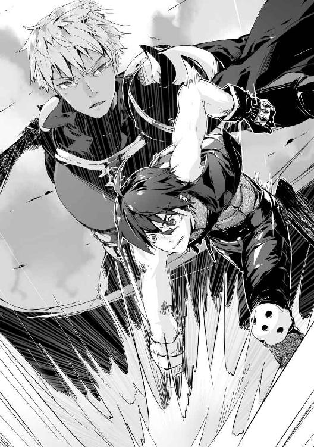
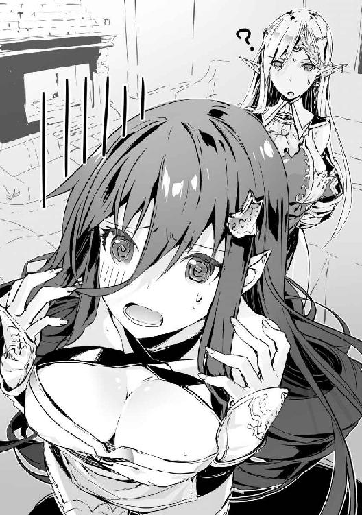

| 異世界魔王の後継者(サクセサー)1 異世界魔王の後継者(サクセサー)シリーズ (ビギニングノベルズ) | |
| 市村鉄之助 | |
| (2016) | |
※本作品の全部あるいは一部を無断で複製・転載・配信・送信したり、ホームページ上に転載することを禁止します。本作品の内容を無断で改変、改ざん等行うことも禁止します。また、有償・無償にかかわらず本作品を第三者に譲渡することはできません。
※本作品は電子書籍配信用に再編集しております。
プロローグ
雷が雷音とともに降り注ぎ、拳が地面を砕き轟音を響かせる。
黒髪の少年──叶海麻人は魔力を体中に循環させて身体能力を向上させていく。細身の体から繰りだされた攻撃は、襲いかかる雷撃を弾き飛ばし石畳を破壊した。
「素晴らしい戦闘力だ。さすが勇者と呼ばれるだけあるね、異世界人！」
「俺を勇者って呼ぶんじゃねえ！」
巻き起こした風の魔術で飛びかかってくる石の破片を弾き飛ばしながら魔王が笑う。
魔王──リオネ・シュタインは腰まで届く闇色の髪を魔力でなびかせながら魔法陣を展開していく。
地面が隆起し、複数の槍となって麻人の体を貫かんと襲いかかる。強化した膂力をもって石槍を砕きながらリオネに向かい距離を縮めていく。
意志を持つ蛇のように動く石槍に体を斬り裂かれながらすべてを破壊することに成功すると、地面を蹴って次の魔術を放とうとしている魔王に肉薄する。
拳がリオネの体をとらえると思われたが、紙一重で障壁で防がれてしまう。麻人の拳は不可視の壁を殴りつけ鮮血を散らした。
「徒手空拳と魔術の違いこそあるが実力は拮抗しているね。正直、決着がつくとは思えない」
「なら戦い続ける必要があるのか？」
「もちろん。私は魔王として帝国の脅威を排除しなければならない」
障壁に阻まれた麻人の拳をリオネは掴み、強く握りしめる。
「キミは人間と魔族が種族の違いを超えて手を取りあえると信じている、そう言ったね？」
「そうだ。はじめは難しいかもしれないけど、きっとお互いに歩み寄ることはできるはずだ！」
「こうしてキミは私に攻撃して、私もキミに攻撃しているのに？」
「俺は戦いを止めたいから戦ってるんだ」
「奇遇だね、私も同じだよ。はじまってしまった争いを終えるには、勝敗をつけるか互いにもう嫌だと思うまで戦わなければいけないからね」
お互いの息遣いがわかるほど顔を近づける。リオネは笑みを浮かべ、そんな彼女を麻人は仏頂面で睨みつける。
「仮に、私がここで和平を結ぼうと提案したとして、キミを異世界からこちらの世界に召喚した誰かがいるはずのエルシュノン王国が本当に和平を受け入れると思っているのかな？」
「なぜ受け入れないと思う？ 俺が信頼する仲間の中にはエルシュノン王国の王女だっている。彼女が和平という解決策を考えたんだぞ！」
「聖女殿のことなら知っているよ。キミが勇者として一年前に召喚されて以来、よき相棒として支えていることも」
「ずいぶん詳しくて正直驚いた。そこまで知っているなら──」
「──だがっ！ 今、こうして戦いは起きている！ キミたち人間は私たち魔族たちの領土に攻め込み、勇者と魔王が戦っているではないか？」
リオネの言葉に反論することができなかった。なぜなら、原因不明の召喚によって麻人が一年前にこの異世界イシュタリアに呼ばれたときから魔族と人間の争いがあったからだ。
生きていくため、帰るすべを探すため否応なく戦いに巻き込まれた麻人だからこそ、戦いを止めたいと思っていた。同時に、難しいことも理解している。
何度も目を背けたくなることもあった。それでも知りあった仲間たちが傷つかないですむ世界が欲しくて、たとえ帰れなかったとしても安住の地が欲しくて戦いを終わらせたいのだ。
「俺は諦めない！ 確かに、和平なんか望まないと言う人間だっている。でも、戦いが終われば喜ぶ人間のほうが多いに決まってるじゃないか！ 家族が傷ついて喜ぶ奴がいるか？ 親しい仲間が死んで喜ぶ奴がいるのか？ それは、魔族だって同じだろ！」
「同じに決まっている！ だから私は戦うのだ。長きに渡る戦いを終わらせるために！」
リオネの魔力が高まり、身体強化している拳を痛いほど握りしめてくる。
「キミたちには感謝をしているんだよ？ 全面戦争もありえたはずだが、私との一騎打ちを望んでくれたおかげで民が犠牲にならなくてすむ」
「俺たちだって魔族を傷つけたいわけじゃない」
はじめこそ兵士同士の戦いにまで発展しかけたが、麻人の仲間でありエルシュノン王国第二王女の聖女アンナ・エルミートのおかげで全面戦争は防がれていた。
エルシュノン王国兵は帝国との国境まで下がり、勇者一行と呼ばれている麻人と仲間たちだけが魔王城へ赴くことを提案し、魔王が受け入れた。
そして、勇者と魔王の一騎打ちがすでに一日以上続いている。
「ひとつだけ忠告しておこう。キミのことは好意的に思っているし、それだけの力を持ちながら魔族を必要以上に傷つけない優しさは見習いたいとさえ思う。だけどね、人間すべてがキミのように優しいわけじゃないんだ。異世界人のキミとこの世界の人間では根本的に価値観が違うんだよ」
「言われるまでもない。だからって俺が戦いを終わらせることを諦める理由にはならないだろ？」
「そうだね。その通りだ。ならば、決着をつけよう」
ずっと握りしめていた麻人の拳をリオネが離す。即座に距離を取り魔力の循環を活性化させて構える。
「正直に白状すると、もうそろそろ私の魔力も底をつきそうだ。長い人生でこれほど消耗したことはない。もっとも、君も同じように消耗しているだろうけどね」
「アンタが強すぎるんだよ」
気付けばお互い傷だらけだった。麻人は魔術防御を幾重に施したコートで身を守っているが、それでも防御を抜けた攻撃のせいで体中から血を流し、衝撃で骨が何本も折れている。痛みのせいで叫びのたうち回りたいが、気合と意地で我慢しているだけ。
リオネも同様に防御を放棄している黒尽くめの軽装が破れ、白い肌が露出し血を流しているのがはっきりと見える。
「お互いに満身創痍というところで、勝敗を決めようじゃないか。和平を望んでいたとしても、今起きている戦いを終わらせるためには──どちらかが勝たなければならない」
「なら──決着をつけて平和に向かって進もう」
疲弊しきった体に鞭うって麻人は魔力を体の奥底から引きずりだす。何度も繰り返した身体能力向上魔力『金剛力』を発動させて爆発的な力を纏う。
すでに限界は近い。あと何度攻撃できるかわからない。
リオネも息を切らせながら魔法陣を幾重にも展開している。
「行くぞ、魔王リオネ・シュタイン！」
「来い！ 勇者叶海麻人！」
強化された脚力で石畳を蹴り砕き疾走する。リオネの魔法陣から雷撃を纏った闇の刃が放たれ、蛇のように迫りくる。
一撃目は脚力だけで避けてかわし、続く二撃目も魔力を込めた手刀で相殺する。三撃目で右足を斬り裂かれるが奥歯を噛みしめ走り続ける。四撃目で防御の上から利き腕を折られ、右目に痛みと熱が走り視界が真っ赤に染まる。
最後の一撃を胸に受けるが、強化された体は切断されることはなかった。代わりに深く横一閃に斬られ鮮血を吹きだす。
激痛に顔を歪めても足を止めるつもりはない。
すべての攻撃を受けきった麻人は残された渾身の力を込めて、大きく拳を振りぬいた。
「うぉ──おおおおおおおおおっ！」
リオネが展開した防御障壁を殴り砕き、彼女の脇腹に突き刺さる。骨が折れていくのを感じながら、拳を振りぬきリオネの体を大きく吹き飛ばす。
大きく背後へ吹き飛ばされたリオネの細い体は地面に数回バウンドして、地面を滑っていく。
渾身の一撃を放った麻人も体中のいたるところから鮮血を流し、息を切らして膝を着きその場に力なく倒れた。
「まだ......負けて、いない、よ」
脇腹を押さえ、口から血を流しながらもリオネは足を震わせながら立ち上がる。
麻人も立ち上がろうとするが、体に力が入らない。視界が揺れて焦点が合わない。
何度も咳き込み血を吐きながら、わずかに残った魔力を使い意識を失いそうになりながら死に物狂いで立ち上がる。
「このまま続ければ、お互いに、死んでしまうかもしれない、ね......」
「............そう、だな。ちく、しょう」
もう痛みすら感じることもない。自分の体がどうなってしまったのか理解できないまま、麻人はリオネに向かって、一歩、また一歩と近づいていく。
自分でも限界だとわかっている。それでも負けられないという気持ちが足を動かしている。今までともに戦ってくれた仲間たちのため、戦いを終わらせるためにも、勝たなければいけない。
「......俺は、負けられないんだ」
たとえ命が燃え尽きたとしても構わない。残っているすべての魔力を力に変換する。
「死ぬ気かい？」
「ふざけんな、俺は勝つんだ」
鉛のように重い足を引きずりながら麻人の闘士は燃え続ける。
リオネは口元を拭い、笑みを浮かべる。
麻人にはリオネが笑った理由はわからない。しかし、同じように口をつり上げた。
「今度こそ──最後だね」
ともに魔力を高めていく。体内からあふれでた魔力がぶつかりあい暴風となって吹き荒れる。
お互いの目があった。もう会話はいらない。最後の一撃を繰りだそう。
麻人は拳を振り上げ、リオネは突きだした両腕に魔法陣を展開していく。
だが、二人の魔力が限界まで高まったそのとき、第三者の魔力が解き放たれたのを感じて動きが止まった。
「──な、に？」
「な、なんだよ、これ？」
強力な結界が二人を閉じ込めるように覆っていく。
鏡のように反射する正方形の集合体が壁となり地面を、壁を、天井すべてを囲い埋めつくした。
突然の出来事に、理解が追いつけず硬直している麻人にとって聞き慣れた声が結界内に響き渡る。
「ご苦労さまでした、叶海麻人様」
「その声は、アンナか？」
「はい。アンナ・エルミートです。今までありがとうございました、勇者様」
「......どういう意味だよ？」
アンナ・エルミートはエルシュノン王国第二王女であり、国内にある古代遺跡に現れた麻人を保護した人物。一年の間、ともに戦いをくぐり抜け、信頼関係を築いた麻人にとってかけがえのない仲間だ。
鈴を転がすような声が結界内に響く。魔王との戦いを忘れて麻人はその場に立ちすくむ。
「本当に長い間ありがとうございました。貴方のおかげで憎き魔族の王を殺すことができます。この戦争は私たちの勝ちです」
「な、なにを言ってるんだよ。戦争に勝ちとか、そんなことどうでもいいって言ったのはアンナじゃないか。魔族とだって手を取りあって、笑いあえるようになるって俺に教えてくれたのは、お前だろ！ アンナ・エルミート！」
血が体中から吹きだすのを無視して叫ぶ。
「答えろ、答えろよ、アンナ・エルミートぉおおおおおお！」
しかし、返事はなかった。
麻人の脳裏にどれも認めたくないことばかりが浮かんでは消えていく。
「......叶海麻人」
絶望の表情を貼りつけた麻人に気づかうような声がかけられる。だが、麻人が示したのは怒りと拒絶だった。
「やめろ。そんな目で俺を見るな」
「落ち着くんだ......私がキミをどんな目で見たというんだ？」
「どうせ内心で笑ってるんだろ？ 和平だなんだと言いながら、仲間に裏切られた俺を！」
「違う、私は──」
「違うものか！ ああっ、くそっ！ どうして、どうしてこんなことになったんだ！ 俺はただ、俺は──あれ？ 俺はなにをしたかったんだ？」
頭を抱えてうずくまり、鏡状の結界に映る自分に問う。
「異世界に迷い込んで、地球に戻ろうとしたけど戻れなかった。だから俺は少しでも、この世界から戦いがなくなればいいと思ったんだ。そうだろ？ 答えろ！」
鏡越しの自分に向かって何度も拳を振りおろしながら、血とともに叫び続ける。
「落ち着くんだ、キミがすべきことはここから脱出することじゃないのか？」
血にまみれた拳をリオネが掴んで声をかけてくるが、自嘲するように笑いしかでてこない。
「笑わせるな。いいように利用された俺が外にでてどうする？ ──ああ、外にだす気はないみたいだぞ、ほら」
「なに？」
頭上を指さすと、リオネの視線が上を向く。そして、驚愕に目を見開いた。
「馬鹿な......あれだけのものにまったく気付かなかったというのか？」
視線の先には、太陽のように輝く炎の塊が頭上を埋めつくしていた。魔力も熱もなにも感じさせないが、本能でただ炎だとわかった。
いつの間にこれだけの質量を放ったのか疑問に思うが、すぐにどうでもよくなってしまう。
「障壁を張るぞ。あの炎から少しずつ魔力を感じられるようになった。私たちが疲弊しているせいもあるが、隠密性に長けた魔術だと思っていいだろう。だが、問題はそこではない。あの炎の塊がハリボテでなければ私たちがなにもしなければ焼け死ぬ」
リオネは力なく地面に座っていた麻人の襟首を掴んで無理やり立ち上がらせる。
「いつまでそうしているつもりだ？ ショックを受けているのはわかる。私もアンナ・エルミートに思うことはある。だが、今は生きろ。生きなければ駄目だ！」
「どうして？」
「キミは利用されて捨てられてしまったおもちゃじゃない。生きている人間だ。ならば足掻け、みっともなくても泥臭くとも。生きようとすることは恥ではない。生きることを放棄し諦めることこそ恥だ！」
リオネの手のひらが麻人の頬を張る。何度も、何度も繰り返す。
「生きることを諦めるな、ともに生きよう──叶海麻人っ！」
「アンタさ、自分で言ったことわかってる？ 俺、敵だぜ？」
「私はキミのことを敵だと思っていない。わかりあえる友人になる......ために戦っていると思っていた」
「馬鹿だよ、アンタ。でも、ありがとう」
あまりにも真っ直ぐなリオネの言葉に、麻人の魂が揺さぶられたのを確かに感じた。
このままでいたくないと思えるようになった。
ありがとう、の一言にどれだけの気持ちが込められていたのか、きっとリオネにはわからないだろう。
「馬鹿で結構だ。では、キミの瞳から諦めが消えたところで、障壁を張ろう。この魔術を少し解析してみた。おそらく殲滅系魔術だ。範囲こそ狭いが、結界内に閉じ込めた対象をすべて殺すためのものだ。隠密性に優れているが特徴だが、私はこのような魔術は知らない。私たちにできることは、ただ耐えるだけだ」
「つまり？」
「生き残れば私たちの勝ちだ」
「単純でいいね。じゃあ、命を削ってでも生き延びようぜ」
もう魔力は残っていない。魔術障壁という初歩中の初歩である魔術だが、障壁にどれだけ魔力を注ぎ込むかによって強度は大きく変わっていく。本来なら麻人もリオネも規格外の魔力量を持っているのだが、一騎打ちによって使い果たしている。
ならば生命力を魔力に変換させて使うしかない。
文字通り、命がけだ。
「叶海麻人、魔術が動くぞ！」
リオネの声に大きく深呼吸をして、限界まで引きだした魔力を魔術障壁として展開する。
同時に、炎の塊から結界内を覆いつくすように炎が波となって落ちてくる。
麻人は魔術障壁越しに体が焼けただれてしまいそうな熱を感じ、呼吸するのさえ辛くなるのを感じた。
隣で魔術障壁を幾重にも張るリオネの表情に焦りと苦痛が浮かんでいるのが見える。
このままでは駄目だ、と悟った。二人とも助からないと本能が感じ取ってしまった。いまだ、炎の波は届かない。ゆっくりいたぶるように迫りくる。
少し距離が近づく度に、肺の中まで灰になりそうな熱が襲いかかってくるのだ。諦めたいわけではないが、為す術がないと思ってしまう。
「無駄な抵抗をしなければ、苦しまずに死ぬことができますよ？」
生きようとする抵抗を嘲笑うようにアンナの声が届く。視界が怒りで赤くなるが、感情に身を任せるような愚かなことはもうする気はない。
するべきことはもう決まっている。
麻人はコートを脱ぎ、隣に立つリオネの頭からかぶせた。
「なんのつもりだっ？」
「このコートは魔術防御が施されている。アンタの馬鹿みたいに強力な魔術を受けて俺が何度も立ち上がれた理由のひとつがこれだ。使ってくれ」
リオネの瞳が大きく見開かれる。
「生きることを放棄することは恥だと言ったばかりだよ？」
「放棄するわけじゃない。アンタだってわかっているはずだ。こんな障壁じゃ気休めにしかならないってことを。なら、どちらかだけでも生き残る努力をしないといけない」
「だったらキミが──」
「お前は王だろう！ 魔族の王、魔王だろう！ なら生きろ、生きてくれ。そして、どうしてアンナが俺を利用して裏切ったのか突き止めてくれ」
リオネの言葉を遮り、言いたいことだけを言うと麻人は彼女の体を抱きしめ地面に倒し覆いかぶさる。
「やめるんだ！」
「これ以上喋るな、熱で喉がやられるぞ」
コートで顔を包み上から力の限り押さえつける。苦しいのは我慢してくれ、と内心謝罪しながら眼前に迫りくる炎の波を眺めて麻人は呟く。
「思えば色々なことがあった一年間だった。楽しいことも、嫌なことも、本当に色々なことがあった。大切な仲間とも出会えた。割りと、満足してるんだぜ？」
最後の抵抗に限界以上に生命力を削り魔術障壁を展開した麻人は、抵抗しようとするリオネの体を強くしっかりと抱きしめる。
そして、二人は灼熱の波に飲み込まれた。
第一章 喪失
ちゃぷん、と水を弾く音が聞こえて重いまぶたがゆっくり開いていく。
視界いっぱいに白いもやが広がり、自分がどこにいて、どうなっているかもわからない。
浮遊感を覚えて体を動かそうとするが、指一本動かず代わりに体中に鈍痛が走る。
自分の身になにが起きたのか把握できない不安から、奥歯を噛みしめ痛みを堪えて体を起こそうとするが、体は鉛のように重くいうことをきいてくれない。
なんとか目だけを動かし周囲を見渡すと、叶海麻人はようやく自分が水の中に浮いていることに気付いた。
「──俺は生きているのか？ それとも、もう、死んだのか？」
小さい声でわずかに呟くが、返事は誰からもない。
再び目を動かし誰かいないか探すが、視界が届く範囲に誰もいない。自分の生死さえわからず再び閉じてしまいそうになるまぶたの重みが恐怖となり、もう一度痛みを無視して体を動かそうとする。
そのとき、水音が響き小さな波が体を揺らした。
「誰か、いるのか？」
想像以上に自分の声が小さいことに驚きながら、誰かがいるのではないかという期待に喉から必死に声をだそうとして──麻人は硬直した。
膝上まで水に浸かった一糸纏わぬ美女が近づいてきたのだ。
濡らした亜麻色の髪を腰まで伸ばし、水滴を弾く細く引き締まった肢体は初雪のように白い。秘部を隠すはずの陰毛はなく、見てはいけない女性器の割れ目がくっきりと見えている。
目を背けなければ、と思い体を動かそうとして、再び鈍痛に襲われ体が大きく波紋を立ててしまう。
「──っ！」
こちらの動きに気付き全裸姿のまま美女が水の中を歩いてくる。彼女の顔に浮かぶのは、裸を見られたことによる羞恥や怒りでもなく、純粋な安堵だった。
「目が覚めたのですね......よかった！」
涙さえ浮かべて喜びの表情を向ける美女を、麻人はようやく思いだすことができた。
彼女の名はクラリッサ・ルルクセン。魔王の傍に控えていたメイドだ。
なぜ魔王のメイドがこの場にいるのか、そもそもどうして全裸なのかと疑問は多々あるが、少なくとも自分が生きていることだけはわかった。
間違いなく炎の波に飲み込まれ、体が焼けただれていく感覚もはっきりと覚えている。だが生きている。それだけも驚くべきことなのに、死んでも不思議ではない炎に体を焼かれたはずが、視界に映る自身の体には火傷の痕すら見えなかった。
疑問の言葉を発しようとしたが、裸体のクラリッサに抱きかかえられてしまい困惑に言葉を飲み込んでしまう。
決して大きくはないが柔らかな胸の膨らみが頬から伝わり、彼女の体温と甘い匂いに脳が刺激されくらくらする。
「この池の薬草に賭けて正解でした。本当に、よかった......」
「......あの、説明してほしいんだけど？」
「ああっ、そうでしたね。つい感情が先走ってしまい、申し訳ございませんでした」
謝罪の言葉とともに抱きしめる力が緩む。
「麻人さまはどこまで覚えていらっしゃいますか？」
なぜ魔王つきのメイドにさまづけされているのか不思議に思うが、今は現状把握のほうが大事だった。
「ごめん、あまり覚えてないんだ」
「無理もありません。あなたは魔王リオネさまとともに魔術の炎に焼かれ瀕死の状態でした。いつ死んでもおかしくなかった麻人さまをこの薬草の池に沈め奇跡を祈っていました」
クラリッサの肢体から視線をすぐ真下へ動かす。確かに水の下には植物がところせましと敷き詰められているのが確認できた。
「ここに生息する薬草はあまりにも効力が強く危険です。それゆえに池の水そのものが強い治癒の力を持っているのです。全身に酷い火傷を負っていた麻人さまなら強すぎる治癒の力も足りるかどうか不安でしたが、こうして傷が癒えてくださいました」
生きていることも、火傷が見当たらないこともなんとなくだが納得できた。しかし、魔族のクラリッサが敵対していた自分を生かす理由がわからない。
問いかけようとしたが、自分のことよりも一緒に焼かれたはずの魔王の安否が気になった。
「魔王は？ 魔王は無事か？」
「ご無事です。麻人さまが庇ってくれたことはお聞きしています。麻人さまのおかげで魔王さまは軽傷ですみました。わたくしたち帝国は魔王さまを失うわけにはいきません。助けてくださったことを心から感謝いたします」
「ならよかった......」
嘘偽りなく心から安堵した。
魔王リオネと戦ったことは事実だが、お互いに相手を殺すつもりで戦ったわけではない。憎しみもなければ因縁もない。ただ、和平への一歩を築くために避けては通れない戦いだったと麻人は信じている。
「心から魔王さまのことを案じてくださるのですね。お優しい方です」
慈愛に満ちた笑みを浮かべ頭を優しく撫でてくるクラリッサに戸惑いを隠せない。
いくら助けた形になったとはいえ、魔王と戦った自分への好意的な態度への疑問。なによりも女性経験皆無の麻人にとって美しい容姿と肢体を惜しげもなく見せているクラリッサに、安堵した麻人の体は素直に反応してしまう。自分でも制御できない股間の高ぶりに羞恥で頬が熱くなっていくのを自覚する。
抱きしめられているせいでそそり勃つ逸物を押しつけてしまう形となり、麻人の羞恥は最高潮に達した。
クラリッサも気付いたのだろう。恥ずかしくて顔を見ることができないが、彼女から伝わる体温が熱くなった気がする。
「お、お気になさらないでくださいっ！ お、おおおお互いに全裸ですし、男性ですのでしかたがありません。むしろ、わたくしのこの貧相な体にもかかわらず興奮していただけることは女性として嬉しいといいますか、いえ、そうではなく、麻人さまがお元気になられたことは嬉しいです」
動転しているのか、今まで落ち着いた雰囲気だった大人の女性が一変して慌てた態度をとる。そんなクラリッサの可愛らしい姿を見て自然と笑みがこぼれた。
すると、気が抜けてしまったのか、彼女に捕まっていた手から力が抜けていき、まぶたがゆっくりと閉じていく。
「......麻人さま？ どうしました？」
突然、体を弛緩させたことに気付き声がかけられるが、返事をすることができない。
「ごめん......すごく、眠いんだ」
なんとか絞りだすように現状を伝えると、安堵する呼吸が伝わってくる。
「まだお体が完全ではなかったようですね。今はただゆっくりとお眠りください。わたくしは片時も離れずずっとお側にいますから、安心してお休みください」
クラリッサの優しげな声が子守唄に聞こえた。
襲いかかる睡魔に耐えきれず、麻人は目を閉じ、気絶するように意識を手放したのだった。
＊
「彼は無事かい？」
意識を失ったように眠った麻人を抱きかかえ、ゆっくり薬草の池に沈めるクラリッサの背後から女性の声が響く。
「魔王さま......いらしていたのですか？」
「うん。彼のことが気になってね」
白い霧の中から現れたのは魔王リオネ・シュタインだった。魔王としての闇色の衣装ではなく、町娘のような簡素な衣服を身につけたリオネが杖を片手に近づいてくる。
「わずかな時間でしたが目をお覚ましになり会話もできました。劇薬に近い薬草の力を利用することに危険性を感じていましたが、結果的には正解でしたね」
「たとえ劇薬だったとしても彼を癒やすためには、この秘薬に賭けるしかなかった。そして賭けに勝ったことは素直に嬉しいよ」
「時間こそかかってしまいましたが、火傷や怪我はすべて癒えました。あとは体力が回復することを願うのみです」
クラリッサだけではなくリオネにも安堵の表情が浮かんでいる。彼女たちは本心から麻人が助かったことを喜んでいるのだ。
「正直、彼は助からないと思っていた。庇ってくれたおかげで私は軽傷だったが......まさか聖女アンナ・エルミートが奥の手としてあれほどの魔術を隠し持っていたとは想像していなかったよ」
「見たことがない魔術でした。魔王さまたちを囲い爆発させた結界魔術も、結界の外でわたくしや麻人さまの仲間を拘束した魔術も、すべて未知なるものでした」
麻人とリオネの一騎打ちを邪魔し、双方を亡き者にしようとしたアンナ・エルミートの魔術は長寿である魔族の二人にも理解できず手も足もでなかった。
リオネは為す術もなく攻撃を受け、麻人が庇わなければ死んでいただろう。クラリッサにいたっては主の危機に身動きひとつとることができなかった。
リオネもクラリッサも麻人に感謝した。同時に、不憫にも思っていた。結果、二人は麻人を助けることを選んだ。
もともと憎くて戦っていたわけではない。言葉ではなく、戦うことでわかりあおうとした結果の戦いだったのだ。
リオネが勝利しても麻人の命を奪うつもりはなかったし、麻人だってリオネの命を奪うつもりはなかったはずだ。
なによりも捨て駒のように利用された麻人を捨て置くことなど二人には決してできなかった。
「少しお話ししましたが、麻人さまは聖女アンナ・エルミートに裏切られたことを覚えていなかったように感じました」
「そうか......。一時的な記憶の混乱のせいか、それとも裏切られた事実を受け入れたくなかったのか私たちにはわからない。どちらにしても、彼にとっては辛いことだろうね」
「目を覚ました麻人さまにどこまでお話しするつもりですか？ いきなりすべてをお伝えするのは酷ではないかと思うのですが......」
「もう一度目覚めたとき、彼の記憶がはっきりしているなら隠しごとはしたくないな。ありのまま伝えたいんだ。記憶が混乱しているようなら、少しずつ時間をかけていこう。命の恩人の心を必要以上に傷つけたくないよ」
池の中で眠り続ける麻人を眺めてリオネは優しく微笑む。
「今はゆっくり休んでほしい。目覚めれば、否応なくキミは戦いに巻き込まれてしまうのだから──」
＊
麻人が再び目を覚ますと、こちらを覗き込んでいるクラリッサと目が合った。
「よかった......お目覚めになられましたね。とても深く眠っていたので心配しました」
大きく息をつくクラリッサは意識を失う前と変わらず一糸纏わぬ姿のままだ。同じく麻人自身も裸だ。
池の中心に浮かんでいる体を支えているのはぬるま湯のように温かい水と、クラリッサのか細い腕だけ。
「もしかして......ずっと俺のことを？」
「はい。片時も離れず側にいました」
「ありがとう、俺をひとりにしないでくれて」
「わたくしが麻人さまをおひとりにすることは決してありえません、ご安心ください」
慈愛に満ちた微笑みに心が暖かくなる。
どうしてこの人はこんなに優しくしてくれるのか不思議に思いながら、彼女の優しさに身を委ねてしまう。
「体を動かすことはできますか？」
「......大丈夫。さっきよりも痛みは少ないから動けるよ」
「ならば池から上がりましょう。この池の治癒力は重傷者以外には毒ですので」
体を起こす麻人を支えるクラリッサの言葉を聞き、とっさに彼女の細い腕を掴む。
「麻人さま？」
「アンタ、ずっとここにいたよな？ 体は平気なのか？」
「ちゃんと対策をしてありますので大丈夫ですよ」
思わず心配の声をかけクラリッサの裸身を見回し異常がないか探る。透き通るように白い肌に赤みがさしているが、怪我や火傷ではないことに安堵する。
「あの、その、すみません......あまり見られると、恥ずかしいのですが......」
「ご、ごめんっ！」
クラリッサの肌が赤くなった理由を理解し、手を離して後ろを向く。
しでかしてしまったことを反省しながら、恥ずかしさを覚えてしまいクラリッサの顔を見ることができない。
「いえ、心配してくださったことはわかっていますので、謝罪は必要ありません。さあお着替えを用意してありますので池から上がりましょう」
クラリッサが麻人の手を掴み岸に向かい誘導する。
濃い霧の中からだと岸は遠く見えるが、右手に感じるクラリッサの体温が安心させてくれる。
できるかぎりクラリッサの裸体を後ろから見ないようにしながら、麻人は岸へとたどりついた。
大きなタオルを渡され、とりあえず腰に巻くとようやく羞恥から解放される。クラリッサも体を覆うようにタオルを身につけており、お互いに目が合うとホッとしたように笑みを浮かべあった。
少しだけ残念と思ってしまったことを反省しながら、クラリッサが用意してくれた下着と、ジーンズと白いシャツに着替え終えるとタオルで髪の水分を拭う。
「そういえば、髪がずいぶん短くなったな」
イシュタリアへ召喚されてから一年間、伸びに伸びた黒髪はかなり短くなっていた。きっと炎に焼かれてしまったのだろうと判断するが、特に髪型にこだわったりはしないので楽でいいと考える。
体に不調がないか確かめるため、右腕から順に体をほぐすように動かしていく。前回目を覚ましたときからどのくらい時間が経ったのかわからないが、鈍痛は消え失せており、体も自分の意志でしっかり動かすことができることに安堵の息を吐く。
引き攣るような痛みをときどき感じてしまうが、生きている証拠だと受け入れた。
どれだけ体が回復したのか確かめようと魔力を循環させようとする。だが、体内から魔力を感じられなかった。
「あれ？」
「どうかしましたか？」
「いや、なんでもない。それにしても、着替えるのが早いね」
体の不調なのだろうと思い、声をかけてきたクラリッサに視線を移すと、すでに彼女はメイド服に身を包み、亜麻色の髪をアップにまとめてヘッドドレスを身につけていた。
「メイドの嗜みです。......もしかして、着替えを見たかったのでしょうか？」
「やめて。そうじゃなくて、ああ、もう！」
からかわれているのを自覚しながら、クラリッサの裸体を思いだしてしまい顔が熱くなっていくのを止められない。
「ふふふ、ごめんなさい。少しからかってみたくなってしまいました。では、わたくしが満足したところで向かいましょう」
「向かうって、どこへ？」
「少し歩くことになりますが、帝国帝都であるクサナギです。そこに魔王さまのお屋敷があり、魔王さまが麻人さまをお待ちしています」
「クサナギ？」
異世界らしからぬ街の名前に思わず首を傾げてしまう。まるで故郷地球に住む日本人の苗字だ。
「初代魔王さまのお名前から取られたのです。ご存知ありませんでしたか？」
「知らなかった。魔王城がある帝都は、ただ帝都としか呼んでなかったから。それにしてもクサナギか......」
まさか異世界で日本を思いだす名が聞けるとは思っていなかった麻人には、帝都クサナギの名はどこか懐かしく、地球を思いだすのに十分すぎた。
「帝都の名前は気になるけど、魔王が待ってるんだよな。急がないと」
「ご心配なさらずに。魔王さまもいつ麻人さまが目を覚ますかわかっていませんでしたので、特別急がなくても構いません。もちろん、麻人さまとの再会を心待ちにしているのも事実ですが」
「なら急ごう。俺も会って色々と話したいことがあるんだ」
「では、付いてきてください。しばらく森の中を歩くことになります」
クラリッサに先導されて木々の合間を歩いていく。薬草の池にいたときには気付かなかったが、ずいぶんと深い森の中にいたのだと麻人は知る。
前を歩くクラリッサはときどき後ろを振り返り麻人がちゃんと付いてきているのか確認すると、また歩を進めていく。
二十分ほど歩き続けると木々の数が減っていき、そして森を抜けた。
「お疲れさまでした。向こうに見える城壁の中が、帝国帝都クサナギです」
草原の中にそびえ建つ城壁は麻人が参加した戦争の名残はない。戦いの最中、壊れた城壁を見た覚えがあったが、すっかり修復されているようだった。
いったい魔王との戦いからどれだけ時間が経ったのか不安になる。
「出発しましょう」
草原をあっという間に抜けると、城門へたどり着く。城門を守る獣人の兵士とクラリッサが言葉を交わすと、驚くほどあっさりと帝都クサナギの中へ入ることができた。
「ちょっと、いいのかよ。俺、敵だったんだぞ？」
「幸いと言っていいのかわかりませんが、麻人さまはエルシュノン王国に召喚された異世界人の勇者ですが、名前も顔も最前線の兵士にさえあまり知られていません。ですから堂々としていれば誰にもわかりませんのでご安心を」
どうやらクラリッサは、自分の正体がバレやしないかと考えているようにとらえたようだがそうではない。あまりにもあっさりと敵対していた自分を帝都に迎えたことを心配しているのだ。
傷を癒やし助けてくれたことといい、クラリッサだけではなく魔王リオネも優しすぎる。きっとなにか企んでいるのだと思うが、不確かな推測しかすることができない。
だが、答えはすぐそこまで近づいてきている。
クラリッサとともに賑わった帝都の中を歩き続ける。建物の数が減っていき、開けた土地に建つ大きな屋敷の前で足を止めた。
「ここが魔王さまの生活しておられるお屋敷です」
「屋敷住まいなのか、てっきり魔王城に住んでいるんだとばかり......」
「そう思ってしまうのもしかたがありませんが、実は──魔王城は常に無人なのです」
「え？」
「麻人さまをお迎えしたときのように、敵対する相手を迎え撃つ際に使われることがほとんどです。魔王城は外見こそ城ですが、強固な結界に覆われており外からの攻撃はもちろん、内側からの攻撃も外へ漏らすことはありません。民を守り戦うには、魔王城で戦ったほうが安全なのです」
意外な真実に目を丸くしてしまう。まさか魔王城が普段は無人だとは思わなかった。
魔王城にすんなり入ることができたと驚いたが、敵を迎え撃つ専用になっているとは当時はわかるはずもなく、ようやく疑問が氷解した。
言葉を失い唖然としているとクラリッサが苦笑しているのに気付く。きっと反応が予想通りだったのだろう。
少し悔しくなったそのとき、
「待っていたよ、叶海麻人。屋敷の前から気配がするのにいつまで経っても入ってこないから、待ちくたびれて迎えにきてしまった」
「──リオネ・シュタイン」
簡素な白いワンピースに身を包んだ魔王リオネ・シュタインが屋敷の中から麻人を出迎えた。
「無事だったんだな？」
「キミのおかげだよ。心から感謝している。私もキミも言いたいこと、聞きたいことはたくさんあると思うけど、お互い病み上がりだ。話は屋敷の中でしよう」
「ではお茶の支度をします。麻人さま、失礼します」
リオネの提案に頷くと、クラリッサが麻人に向かい頭を下げて屋敷に一足先に入っていく。
クラリッサを見送りリオネは笑顔を浮かべた。
「なんだかクラリッサはずいぶんとキミが気に入ったみたいだね。ちょっと妬けてしまうよ。さ、こっちだよ」
「待ってくれ、魔王」
「私のことはリオネと読んでほしい。私もキミのことを親愛と友情を込めて麻人と呼びたいからね」
「ならリオネ、聞かせてくれ。助けてくれたことには感謝しているけど、どうしてここまでしてくれる？ 俺を帝都に、屋敷に迎え入れるなんて、はっきり言わせてもらうと正気じゃない」
麻人の偽らない言葉にリオネは笑いだす。
「あはははははっ。正気じゃない、か。確かにそう思われるかもしれない。でも私は正気だよ。だいたい、キミだってあのとき私を助けてくれたじゃないか？」
「それは──」
「あとから口で言うことのできる理由なんて大したことじゃない。そのとき、なにを強く思ったのかこそ一番大事なんだと私は思っている。麻人は私を助けてくれた。私も麻人を助けたかった。ね、理由なんて簡単だと思わないかな？」
「簡単じゃなくて、単純だろ」
呆れた声をだしてしまうが、リオネは変わらず笑顔を浮かべたままだ。
「単純で構わないさ。──誰かを助けることに理由なんていらない。私はそう思っている。もし、もっと理由を必要とするなら命の恩人を死なせたくなかった、魔族と人間の和平を願ってくれたキミを死なせてしまうのは惜しかった。どうだい納得できたかな？」
「とりあえず、納得しておくけど......」
「麻人は意外と面倒な性格なんだね。まあいいよ。話しあうことはこれから何度でもできるから、今から楽しみだよ。今日からこの屋敷がキミの家だ。我が家だと思ってくつろいでほしい」
そう言って手を取り屋敷の中へ連れていこうと引っ張っていくリオネに動揺を隠すことができない。しかし、同じくらい懐の深さと優しさを感じて感謝するのだった。
＊
応接室と思われる部屋に通された麻人は、リオネと向かいあう形で席につく。
テーブルにはクラリッサが淹れてくれた紅茶が湯気を立てている。体が飲まず食わずだったことを思いだすように目の前の紅茶を求めているのを自覚したが、わずかな躊躇いがあった。
「飲まないのかい？ ずっとなにも食べていないからいきなり食事というわけにもいかないと思ってお茶にしたんだけど」
リオネの背後に立つクラリッサが不安げな瞳をこちらへ向けていることに気付き、麻人は慌ててティーカップに口をつけた。
渋みが一切ない甘みのあるお茶の味と香りが口の中に広がっていく。
美味しいと素直に感じて、もう一口飲む。クラリッサが嬉しそうな表情を浮かべていることを確認してからテーブルにティーカップを戻した。
「クラリッサが麻人を気に入ったように、麻人もまたクラリッサを気に入っているんだね」
苦笑するリオネの言葉に気恥ずかしくなってしまい、クラリッサに向けていた視線を外してしまう。
気に入っているのとは少し違う気がするが、弱っていた自分のために傍にいてくれたクラリッサへ心を許してしまっているのも確かだった。
「二人をからかうのはあとで楽しむとして、話をしよう。きっと麻人は自分がどのくらい目覚めなかったのか、その間になにがあったのか知りたいと思っているんじゃないかな？」
「頼む、教えてくれ」
「もちろん、私が知っているすべてを話そう。まず、私と麻人の一騎打ちに聖女アンナ・エルミートが介入したことは覚えているよね？」
頷いて肯定する。
正直、思いだしたくないことだが、真実から目を背けることはできない。しかし、きっとなにか事情があったのではないか、と少ない可能性を信じようとしている自分がいることに内心驚いてしまう。
裏切られたというのにもかかわらず未練が残っていることを否応なく自覚した。
「私たちは未知の魔術によって結界の中に閉じ込められた。同じころ、結界の外ではクラリッサをはじめ、麻人の仲間であるトラスト・ランディ、シャナリヤ・ウェルカーはアンナ・エルミートによって拘束され身動きできずにいたんだ」
脳裏に仲間たちの顔が浮かぶ。
イシュタリアで早くに出会ったトラスト・ランディは兄貴と呼び慕ってくれた可愛い弟分だ。そしてシャナリヤ・ウェルカーはエルフであり戦うすべを与えてくれた師匠でもある恩人だった。
「トラスト、シャナリヤの二名は麻人を裏切っていない。クラリッサの話によると、麻人のことを助けようとしていたらしい」
「本当、なのか？」
「本当です。二人とも麻人さまの身を案じ、裏切ったアンナ・エルミートに怒声を上げていました。その後どうなったのかまではわかりませんが、おそらく拘束されたまま連れていかれたのでしょう」
裏切ったのはアンナ・エルミートだけ。その事実が慰めになるわけもなく、麻人は拳を握りしめることしかできない。
「私と麻人は結界内で襲いかかってきた炎に飲み込まれ、結界ごと爆破された。私は麻人が庇ってくれたから軽症ですんだが、キミ自身は重度の火傷で瀕死だった。恩人であり、同じ和平を目指す麻人を死なせたくなかった私は、賭けではあったが薬草の池に傷ついたキミを沈めることで癒やそうと考え──そして成功した」
賭けをしなければいけないほど手の施しようがなかった事実に、アンナが本気で自分を殺そうとしたのだとわかる。
「......俺はどのくらい意識がなかったんだ？」
「二週間だよ。麻人は二週間、生死の境をさ迷っていたんだ。一度目を覚ましクラリッサと会話したことを覚えているね？ そこからさらに三日経った」
「十七日間も......その間に戦いはどうなった？」
「エルシュノン王国と帝国の戦争は休戦になったよ。私は倒されたことになり、エルシュノン王国の勇者・叶海麻人も犠牲になったことになっている。麻人の死を国に伝えたのもまた、聖女アンナ殿だ......残念だよ」
「そうか......俺は、死んだことになったのか」
結局、アンナはなにを目的にしていたのだろう。和平を願いながら、魔王とともに自分を殺そうとした。なにが嘘でなにが本当なのかわからない。
悲しさ以上に虚しさが胸の中に渦巻いている。
「慰めの言葉が見つからないよ。不幸中の幸いと言ったらキミは怒るかもしれないが、裏切ったのはアンナ・エルミートだけ。そして目論見がどうであったかわからないけど、麻人も私も生きている。決して彼女の思い通りになったわけじゃない」
「俺が生きている、か......」
「そうだ。その上で聞くけど、麻人はこれからどうしたい？」
「どうしたい、か......どうすればいいんだろうな」
今後のことなど自分が一番知りたかった。
地球に帰る方法だって見つかっていない。そもそも帰ることができるのかさえわからないのだ。
明確な返事をすることができずうつむいてしまうと、リオネから声をかけられた。
「麻人が望むなら帝国からでていくことも許可するつもりだけど、できることなら一緒に平和のために協力してくれないかな？」
「協力？」
「帝国領土以外に住む魔族や迫害される種族、虐げられる人間を集め、帝国を多種族国家として確立させる。そして、魔族を滅ぼそうとしているエルシュノン王国と戦わなければならない」
戦いを終わらせることができれば平和が訪れると思っていた麻人にとって、エルシュノン王国と戦わなければいけないことは衝撃だった。
「人間と和平を築き、共存したい。だが、それを邪魔しようと考える奴らはいるんだ。まずは、そこから叩かなければいつまで経っても和平は叶わない」
エルシュノン王国に立場上属していたが、王国が魔族を滅ぼそうとしていたことも知らなかった。
王族のアンナならエルシュノン王国の企みに気付いていたはずだ。すべてを知りながら和平という偽りの目的を掲げていたのかもしれない。
思考は必ずアンナにたどり着いてしまう。たった一年。言葉にすればわずかだが、未知なる世界で過ごした一年を支え続けてくれたアンナの存在は大きすぎた。
異性として意識していたわけではないが、心から信頼していたのだ。裏切られたという事実は今でも受け入れがたい。
「人間たちが帝国を倒せば平和が訪れるかもしれない。でもね、その平和は人間にとっての平和であり、魔族にとって地獄のはじまりだ。人間のための平和が訪れれば人間による人間以外の支配と搾取しか残らない。無論、抵抗する者も多くいるだろう。そうすれば偽りの平和はすぐに終わり、再び戦争がはじまってしまう」
それではいつまで経っても本当の平和が訪れることはない。
「アンナ・エルミートに裏切られた事実をつきつけられてショックを受けている麻人に追い打ちをかけるようで忍びないけど、はっきりと言わせてもらうよ。叶海麻人──キミは利用されていた」
「──っ！」
「魔王さまっ！」
改めて言われるとショックで言葉もない。
クラリッサの非難の声を浴びながらリオネは続ける。
「麻人のことは前々から調べていたんだ。勇者召喚魔術によってこの世界イシュタリアへ来たことも知っている。だけどね、イシュタリアに勇者召喚魔術という魔術は存在しない。麻人が異世界人であったとしても、勇者じゃないと断言できる。なぜなら──勇者はすでに存在しているんだよ」
「......うそ、だろ？」
「私たちの間違いであってほしいと思うよ。だけど、勇者はどの時代、どの国にも存在しているし、決して珍しい存在ではない。勇者の定義は人によって違うのだけど、少なくとも勇者を召喚するなどという魔術はない」
はっきり言いきったリオネに、イシュタリアでの一年間が瓦解していく気がした。
一度として自分のことを勇者だと名乗ったことはなく、思ったこともなかったが、勇者がいるという真実に驚き呆然するとするしかない。
かつてアンナは言った、誰かが勇者召喚魔術でこちらの世界へ呼んだのだと。異世界に迷い込んでしまい右も左もわからず途方に暮れてしまった自分に慰めの言葉をかけ、導いてくれた。
だが、すべてが偽りだったのかと思うとなにを信じたらいいのかわからなくなる。
リオネの話が正しければ、またひとつアンナの嘘が明らかになってしまったことになる。
「俺は、俺はいったいどれだけ間抜けなんだっ！」
テーブルを叩き血がでるほど唇を強く噛みしめる。
衝撃でテーブルが揺れてティーカップが倒れて、紅茶がこぼれ広がっていく。こぼれた紅茶がカップに戻ることがないように、過ぎ去った一年を取り戻すことはできない。
拳が痛くて涙がこぼれそうになる。怒りに身を任せた自分への罰だと戒めようとして、気付いてしまった。
「落ち着いてくれ麻人......どうしたんだ麻人？」
リオネの声は届かず、麻人は信じられないものを見るように自分の両手を眺める。
目を閉じ、体内の中にあるはずの魔力を探るが見つけることができない。
「......まさか、嘘だろ」
声が震える。
悪いことは続くというが、いくらなんでもあんまりだと神を呪い殺したくなる。
目を覚ましたとき、体の調子を確かめようと魔力を体中に循環させようとしたができなかった。だが、それは傷を負ったせいだと思っていた。
自分の保有魔力が規格外の大きさなのはアンナや師匠シャナリヤからも聞かされている。十全に制御できない魔力が感情のまま無意識に身体強化してしまうことも日常茶飯事だった。
そう──今のように怒りに任せて拳を振りおろせばテーブルは破壊されていたはずだ。
しかし、実際はテーブルが揺れてティーカップから紅茶がこぼれただけ。
つまり──魔力まで失ったのだ。
視界が真っ暗になる気がした。
裏切られ、死にかけ、なんとか生き延びたというのに戦うすべをなくしてしまったのだ。
リオネにこれからのことを尋ねられたが、なにをしていいのかわからないのではなく、なにもできなくなってしまったことを確信した。
「気持ちがわかるとは言わないけど、どうか落ち着いてほしい。感情的になったとして今ここではどうにもならないことは麻人にだってわかっているだろ？」
「......ああ。本当にどうにもならないよな」
諦めたように呟いた麻人にリオネが安堵の表情を浮かべて胸を撫でおろす。
「魔王さま、いくらなんでもすべてを明かしすぎたのではありませんか？ 病み上がりの麻人さまにショックを受けさせてなにかあったらどうするのですか？」
責めるようなクラリッサの視線を受けリオネがたじろぐ。
「そ、そう言うけど、こういうことはあとから小出しにされてもショックを受けるはずだと思うじゃないか。なら最初にすべてを明かしたほうがショックは一度ですむと思ったんだ。それに、ショックを受けても私たちが支えればいい。違うか？」
「違いませんが......麻人さま大丈夫ですか？」
気づかうように声をかけてくれるクラリッサに返す言葉が見つからない。
リオネの言う通り、二度も三度もショックを受けたくないし、支えてくれるという言葉は嬉しく思う。だが、自分の身になにが起きたのか知れば裏切ったアンナのように態度を変えるのではないかと思えて不安が湧きあがってくる。
「なあリオネ、聞かせてくれ。嘘をつかれ利用された挙句、裏切られた俺になにができるんだ？」
「そんな卑屈な言い方をしないでほしい。......色々なことができると思うけど、戦力としても申し分ないと思う。魔王である私と一対一で戦うことのできる力を持つ麻人が協力してくれれば、戦わなければ救えない者たちも救うことができる」
「それってさ、アンナと違って事前に伝える伝えない違いはあるけど、今度はアンタが俺を利用するってことだろ？」
麻人の問いかけに、リオネはおろかクラリッサまで驚きに大きく目を見開く。
「なにを言うんだ？ どうして急にそんなことを？ 利用なんて馬鹿馬鹿しい、私は麻人になにかを無理強いすることはしないし、するつもりもない。確かに協力関係になりたいと思っているけど無理ならそれでも構わないと思っている。無論、協力できないからといって帝国を追いだすことだってしないよ。麻人は、麻人の好きなように過ごしてくれていいんだ」
リオネが慌てたように否定するが、麻人は彼女の言葉を信じていいのかわからなくなっている。
「麻人さま......ショックを受けていることは痛いほどわかりますが、どうかわたくしたちを信じてください。わたくしたちは麻人さまを利用しようなどと考えてはいません」
「本当に？」
「もちろんだ」
「先祖と母に誓って」
「だけど、それは俺に価値があるからだろ？ 規格外の魔力と、魔王と戦える力──じゃあ、その魔力がなくなったらどうする？」
自嘲するように麻人は笑う。
ようやくなにかがおかしいとリオネたちが気付き、口を開こうとするが、それよりも早く麻人が言い放った。
「もう俺には魔力がない。なにも感じないんだ。身体強化もできない。さっきテーブルを本気で叩きつけたのに、カップが倒れただけだ。こんな俺のどこに協力することができる価値があるって言うんだ！」
再び感情に任せて拳をテーブルにぶつける。だが、テーブルはただ揺れるだけ。呆然と麻人の行動を眺めているだけの二人を無視して、何度も何度も拳を叩きつける。
強化できない拳から血が流れでたところで、我に返ったクラリッサが麻人の腕を抱きしめるようにかかえ動きを止める。
「本当に魔力がないのか？」
リオネが確かめるように目を細めて問う。
「見ればわかるだろ！ 身体強化はできない。メイドひとり振り払うことだってできない！」
やり場のない感情に任せて麻人は叫び続ける。
「もう戦うことができない俺に用はないだろ！」
クラリッサの腕を強引に引き離し、部屋から飛びだそうとする。
「お待ちください！」
しかし、ドアを開けた瞬間、意識が遠のいていく。
「麻人さまっ！」
視界が暗くなっていく。体が傾き衝撃が襲いかかるが、なにが起きたのか理解できなかった。
クラリッサが何度も声をかけてくるが、とても遠く離れているかのように声が聞きとれない。
悲しみと苦しみに支配された心を抱えながら、麻人は意識を失ったのだった。
＊
「無理をさせてしまったようだね......」
リオネはベッドで眠る麻人の髪をすきながら静かに呟いた。
「私はね、再出発してほしかったんだ。聖女アンナ・エルミートに利用された叶海麻人ではなくて、すべてを知った上で前に踏みだした麻人を仲間として迎えたかったんだよ」
「......魔王さま」
沈痛な面持ちを浮かべているリオネにクラリッサはかける言葉が見つからない。
クラリッサもまた責任を感じていた。
一度はリオネにすべてを明かしすぎだと責めはしたが、彼女もまた麻人なら大丈夫だと根拠のない期待を勝手に抱いていたのだ。
リオネも同じだ。魔王である自分と戦える麻人なら、辛く悲しくても乗り越えることができると信じていた。
麻人に理想を押しつけていたことに、今さら気付いたのだった。
「どうやら本当に魔力を失っているようだね。麻人から魔力をまったく感じることができない。想定外の出来事ではあるけどキミを放っておくことなどしないよ」
さきほど麻人に言ったように、リオネは戦力だけを求めているのではない。魔族の中には魔力を持たない種族だっているが、戦うすべなどいくらでも用意することができるのだ。
リオネにとって大事なのは戦力としての叶海麻人ではない。イシュタリアとは違う価値観の世界で育った叶海麻人こそがなによりも貴重な存在なのだ。
魔族を敵だと考える人間たちの思考にとらわれず、手を取りあうことができると考えてくれる麻人だからこそリオネにとって何物にも代えがたい人物なのだ。
たとえ麻人の魔力が健在であったとしても、ただの力で世界が平和になると考えるほどリオネは楽天的ではない。
長く争い続けた魔族と人間が手を取りあえるようになるには時間が必要なこともわかっている。
自分たちは平和へのきっかけを作ることができればいい。魔族と人間が争うことのない世界への土台を作れればそれに越したことはない。
「私は急ぎすぎたのかもしれないね。叶海麻人が異世界人、いや地球人だと知ったときから勝手に期待して、希望を押しつけてしまったのではないかと反省しているんだ。もしかすると、考えてはいなかっただけで私もアンナ・エルミートのように麻人を利用するつもりだったんじゃないかと思うと自分が嫌になるよ」
だとすれば悪意がない分、アンナよりも質が悪いと思わずにいられない。
「わたくしも同感です。麻人さまの動向を調査したときから存じていましたが、長く調べていたことを長く接していたのだと勘違いしていたのかもしれません」
魔族は異世界人に敏感であり、過去にも麻人のようにイシュタリアに現れた異世界人の動向を探りどんな人物かを調べたことはある。
人間たちが知らない、異世界人が現れる『予兆』さえ魔族は掴んでいる。
元の世界に返してやることはできなくても、異世界からの迷い人に手を差し伸べたいと思えるほど魔族は異世界人に思い入れがあるのだ。
だが、その理由も、魔族の想いもなにも麻人に伝えることはできていない。
「麻人、私たちはもっと話しあわなければいけないね。キミの痛みを理解したいんだ。私の進もうとしている道を理解してほしいんだ」
意識を失いながらも涙を流す麻人はなにを思っているのだろうか。もしかしたら、アンナに裏切られたことを悲しんでいるのかもしれない。もしかしたら、魔族に利用されるのではないかと子供のように怯えているのかもしれない。
固く握る拳に、そっとクラリッサが手を重ねてそっと耳元で囁く。
「麻人さま、わたくしは絶対に麻人さまを裏切ったりはしません。目を覚ましたときにわたくしの話も聞いてください」
空いているもう片方の手で麻人の頬に伝う涙を拭うと、クラリッサはひとつの決意をするのだった。
＊
深夜、蝋燭の明かりが部屋を静かに照らす中、麻人はただ窓の外の帝都を眺めていた。
屋敷の二階に用意された部屋から賑わう帝都がよく見え、耳をすませば帝都の住民たちの声も聞こえてくる。
人々の賑わいはエルシュノン王国領内にいたときとなにも変わらない。だからわからないのだ、なぜ魔族と人間が争い続けるのかが。
地球にだって争いはある。些細なものは学校という狭い範囲から、大きくなれば人種の違い、宗教の違いなど数えきれない。だが、所詮他人ごとだった。
異世界に迷い込み、魔族と人間の争いに関わり、なぜ争うのか疑問に思うことができるようになった。
そしてなにかできることはないかと考えるようにもなった。傷ついている人たちを見て、なんとかしたいと思ったのだ。
しかし、今はもうなにかをしたくとも力が残っていない。
戦いがすべてと言うつもりはないが、イシュタリアでは戦えなければ駄目だと学んだ。
意志を貫き通すために、誰かを守るために戦う力が必要だと、たった一年で痛いほど思い知らされた。
だから魔力を失い、戦うすべをなくした自分になにができるのかわからない。
利用する価値のないただの地球人が、異世界でなにをすればいいのかもわからない。
未来が真っ暗になり、もう笑うしかない。
リオネは利用するつもりはないと言ってくれた。戦うすべがないなら守ってくれるとさえ、目を覚ました自分に優しく言ってくれた。
彼女の優しさに感謝していながら、その優しさを信じることができないことに心底嫌気が差す。
頭の中がぐちゃぐちゃになっている。考えれば考えるほど、思考がよくない方へ向かい、悪意が心に宿っていく。
今のままでは駄目だと思い、麻人は思考することをやめた。考えることを放棄してしまった。
ただ目をつむり、帝都の住人たちの声に耳を傾ける。
そんなときだった。
「麻人さま、起きていらっしゃいますか？」
小さなノックとともに、囁くようなクラリッサの声がドア越しに聞こえた。
「......起きているけど、なにか用？」
素っ気ない返事をしてしまうが、クラリッサを気づかう余裕が今はない。
「お部屋に入ってもよろしいでしょうか？」
「どうぞ」
「夜分遅く失礼します」
クラリッサが室内に入ってくるが、麻人は窓から目を離さない。クラリッサを見ることができないのだ。
それでもクラリッサの言葉を待つが、なにも言ってこない。なにかを言おうとしている雰囲気は感じることができるのだが、いつまで経っても言葉がでてこないようだ。
正直、放っておいてほしい気持ちがある。
「なにか用があって来たんじゃないの？ ないんだったら──」
いつまで経っても部屋に入ったきり黙り込んでいるクラリッサにしびれを切らして彼女の方へ視線を向け、驚き体を硬直させた。
クラリッサは薄着だった。ただ薄着というわけではない。男を誘うような扇情的な水色のベビードール姿だ。同じ水色の下着もつけているが、その下着だって生地は薄く彼女の白い肌はもちろん、桜色の乳首がはっきり見えてしまっている。
少なくとも恋人でない男のもとを訪れる格好ではなかった。
どんな理由からこのような目のやり場に困る格好をしているのか疑問だが、もしかすると彼女にとって当たり前なのかもしれないと恐る恐る表情を窺うと、羞恥からか頬を赤く染めているのがわかった。
「そ、そんな格好してなんの用なんだよ？」
なんとか絞りだした声は上ずっていて、心底情けないとがっかりしてしまう。
麻人の疑問にクラリッサは顔を赤くしながら大きく深呼吸を繰り返し、意を決するように真面目な顔をして口を開いた。
「麻人さまは戦うすべが欲しいですか？」
冷水を浴びたように、麻人の中に冷静さが戻っていく。
「どうしてそんなことを聞くんだ？」
「わたくしなら麻人さまに戦うすべを与えることができるからです」
「──え？」
思わず耳を疑ってしまった。
一年間イシュタリアで争いの日々を送っていれば戦うすべを失った話を聞いたことは珍しいことではない。剣士が腕を失い、足を失ってしまい再起不能になる。腕くらいならまだ戦えるかもしれないが、麻人は魔力を失ったのだ。魔力喪失など聞いたことがない。麻人の知る限り、イシュタリアでは魔力がなければ人間は戦えない。
だが、クラリッサは戦うすべを与えることができると言う。仮に、強力な武器を渡されたとしても武器の使用条件に魔力が必要不可欠なことも知っている。だから驚き耳を疑ったのだ。
「わたくしだけが麻人さまに再び戦う力を与えることができます。その上でお聞かせください──力が欲しいですか？」
「欲しい」
考えるまでもなく即答した。
「理由を伺ってもよろしいですか？」
「この世界で生きていくには力が必要だ。俺は利用されて、裏切られたまま終わりたくない」
「復讐を望むのですか？」
「違うっ！ そうじゃないんだ......俺は、きっとまだどこかでアンナのことを信じてる。もしかしたらなにか理由があったんじゃないか、なんてありえもしない希望だって持っている。それを確かめるためにも前に進む力が欲しいんだ」
クラリッサの問いかけに隠すことなく胸の内をさらけだして答えた。するとなぜかクラリッサは一度頷くと、ゆっくりとベビードールを脱ぎはじめる。
「ま、待ってくれ、今の話とアンタが下着姿になることにどんな関係があるんだっ!?」
「麻人さま」
薄地に隠れていた肌が露出していることに、胸の鼓動が暴れだす。
「は、はい......」
「わたくしのことを抱いてください」
脱いだベビードールを床に落とし、ゆっくりと麻人のベッドへ歩み寄ってくる。
上気した頬、薄っすらと汗をかく引き締まった細く艶めかしい肢体が近づき手を握られた。麻人の手を握りしめたクラリッサの手は火傷しそうなほど熱い。
突然すぎる展開に硬直したまま動けずにいる麻人のすぐ横にクラリッサは腰をおろすと、胸板に寄りかかるように体を預けてくる。
「失った魔力を取り戻すことはできません。ですが、魔力を共有することでわたくしの魔力を麻人さまにお渡しすることなら可能です。──そのためにわたくしを抱いてください」
クラリッサの甘い香りが脳を揺さぶる。理性が焼き切れそうになるが、必死にこらえ麻人はか細い彼女の肩を掴んだ。
びくん、と跳ねるクラリッサの体はわずかに震えていた。興奮していた体から熱が抜けていくのがわかる。少し冷静になれたことを確認して深呼吸を繰り返すと、いまだ体を震わすクラリッサに声をかける。
「気持ちはすごく嬉しいよ、ありがとう。だけど、俺のために無理をしなくてもいいんだ。魔力のために女性を抱くなんてことはできないよ」
力は欲しいが、だからといってクラリッサが自身を犠牲にしてまで力を取り戻したいとは思えなかった。そんな麻人に向けてクラリッサが微笑む。
「麻人さまは優しい人です」
拒絶したにもかかわらず、クラリッサはゆっくり麻人の首に腕を回して抱きしめる。
彼女の体から震えは伝わってこない。
「自分のことで精一杯のはずですのに、わたくしのことを気づかってくださる優しさに好感を持っています」
抱きしめる力を緩めたクラリッサの潤んだ瞳がじっとこちらを見つめてくる。言葉もなく見つめあっていると、そっと動いた彼女は麻人の唇に自らの唇を押しつけた。
ついばむようなキスを繰り返し、クラリッサが一度離れる。
突然のキスに唖然としている麻人の頬をクラリッサが愛しげに撫でる。
「今の麻人さまに必要なのは、力ではありません。痛々しいほど傷ついたお心の傷を癒やすための治療です。わたくしは麻人さまを慰めてあげたい、癒やしてあげたいのです」
またクラリッサの整った唇が唇に吸いつく。
「素直になってください。わたくしにはさらけだしてください。信じた人に裏切られて悲しかったはずです、悔しかったはずです。その気持ちを口にだすことができなければ、いつかどこかで麻人さまは壊れてしまいます。どうか、わたくしに麻人さまのお心を教えてください」
「俺は......」
すぐに言葉がでてこない。しかし、クラリッサはじっと待ってくれている。
なぜここまでしてくれるのか不思議に思いながら、彼女から伝わる体温と鼓動が麻人に安心感を与えてくれる。そして、ゆっくりと口を開く。
「知らない世界で一人ぼっちで寂しかった。仲間ができたって、イシュタリア人じゃない俺は孤独だった。ずっと元の世界に帰りたかった。戦いなんてしたくない。誰かを傷つけるのだって嫌だ。信頼していた人に裏切られて悔しい以上に、悲しくて心が張り裂けてしまいそうなんだ」
ずっと溜め込んでいた感情を吐露しながら麻人は涙を流す。
「頑張りましたね、麻人さま。もう頑張らなくていいんですよ」
クラリッサは慰めの言葉とともに、額に、頬に、唇にキスを繰り返す。母親が愛しい我が子を労るように何度も繰り返す。
涙を拭いながら、麻人ははじめて唇をついばんでいたクラリッサに自分の意志で応えた。
「──っ」
わずかに驚いたクラリッサだが、キスを止めようとはせず応じてくれた分まで繰り返していく。
次第についばむようなキスに変化が訪れていく。
ぴちゃぴちゃと音を立てて、ときには唇を強く吸いあっていく。
麻人が求めるように舌を伸ばせば、待っていたと言わんばかりにクラリッサは受け入れ二人の舌が音を立てて絡みあう。
唇だけでは収まらず、自然と麻人の腕がクラリッサの肢体を撫でていく。
汗ばみしっとりとした肌の太ももを、腰を、背中と上がっていき、胸にたどり着く。決して大きくはないが、手のひらにぴったり収まる乳房を下着越しに揉むと、電流が走ったようにクラリッサの体が跳ねた。
下着をたくしあげ、露わになった乳房を両手で揉み、ときには乳首をいじっていく。
「......んっ、あっ......気持ちいいですか？」
「柔らかくて温かい、ずっと触っていたいよ」
唾液の交換をやめることなく、息継ぎの間に言葉を交わす。
「わたくしの......んっ、体をっ......お好きに、して、くださいっ」
「本当にいいの？」
「はいっ......後悔はしません。あんっ......わたくしは、麻人さまにぬくもりと、安らぎを感じてほしいのです」
クラリッサの言葉に、麻人は彼女と体を入れ替えるように抱き上げると、ベッドへ押し倒した。
ベッドが大きく軋み、クラリッサに覆いかぶさる形で見つめあう。
お互いに照れくさそうに顔が赤くなっているのがよくわかった。
「麻人さま、あのひとつだけお願いがあります」
「なに？」
「クラリッサとお呼びください」
「クラリッサ......」
「......はい。──んっ、むちゅっ......んっ......」
名を呼び、キスを再開する。
「俺は魔力とか関係なく、クラリッサのことを抱きたい」
「......んっ、あ、はいっ......抱いてくださいっ......わたくしのことを、麻人さまのものにっ......してくださいっ......あんっ」
何度も交わしていた唇を離すと、繋がっていた印だといわんばかりに唾液が糸を引く。
すでに麻人の股間は破裂しそうなほどそそり勃っていて、このままキスと胸に愛撫するだけで達してしまいそうだった。
女性経験が皆無の麻人にとって手探りのキスと愛撫だが、すでにクラリッサの表情は恍惚としており、広げた足の間にある水色の下着の中心には濃いシミが浮かんでいる。
「そんなに見ないでください......その、恥ずかしいです」
「ご、ごめん」
謝りながら下着に手を伸ばす。
クラリッサが羞恥と抵抗からわずかに身をよじるが、本気で嫌がっていないことは麻人にもわかる。
ショーツに手をかけゆっくりと引っ張った。途中、お尻に引っかかるが、クラリッサが腰を浮かせてくれたおかげでするりと脱げた。
「......顔から火がでそうなほど恥ずかしいです」
無毛の割れ目が現れる。両足を開くクラリッサの割れ目は未使用だと思うほど、穢れを知らない一本の線状になっている。
羞恥に耐えきれず両手で顔を隠すクラリッサに愛しさという感情が湧いてくる。
女性特有の甘い体臭にクラクラしながら、クラリッサの細い腰を掴み、顔を秘所に近づけ舌を伸ばし線状の割れ目をなぞる。
「──ひっ......あっ、ん！」
大きくクラリッサの下半身が跳ね、割れ目から透明な蜜があふれだした。
クラリッサは無意識の抵抗なのか麻人の頭を押さえるが、その行為は逆に麻人の顔を自らの秘所に固定してしまうことになる。
下半身が暴れないように、腕を腰から足へ動かししっかりと掴むと、麻人は再び割れ目を舐めはじめた。
「あっ、麻人さまっ──んっ、ああっ、強い、強いですっ......こんなこと、はじめてっ！」
はじめて、という言葉に麻人の興奮は高まり、あふれでる蜜をすくいだすように直接割れ目に舌を挿れて舐め続ける。
じゅるじゅる、と音を立ててクラリッサの愛液を吸いながら、一本線だった割れ目が男を求めるように開いていることに気付く。
早く挿れたいという衝動が麻人を支配するが、それ以上に艶声を上げ続けるクラリッサの反応が愛しく感じてしまい、愛撫する舌を止められない。
舌は割れ目の内側まで侵入し、膣内の壁まで丹念に舐めていく。
「あっ......あっ、あーっ......もう、これ以上んっ、されたらっ......」
何度も浮き上がる腰を押さえながら、舌が割れ目から離れ、割れ目の先端にある肉芽に触れた。刹那、電流が走ったように腰を跳ね上がらせてクラリッサの割れ目から蜜が吹きでた。
大きな反応に驚きながら、クラリッサの気持ちいい場所を見つけた喜びを覚える。
「あ、麻人さま、そこは駄目です！」
慌てたように制止の声を上げるクラリッサを無視して、陰核に吸いついく。コリコリとした割れ目とはまた違う硬さを持つ肉芽を舌で責め続けると、クラリッサの腰が大きく跳ね上がり愛液が吹きだしていく。
「だ、だめっ......やめっ......お願......でちゃう！ でちゃうのぉっ！」
ぷしっ、と音を立てて蜜が勢いよく吹きだされ、張り詰めていた体から力が抜けて一気に弛緩していく。
力なくベッドに足を広げたクラリッサの股間から、ちょろちょろちょろ、と音を立ててシーツに黄色い液体が広がっていく。
快楽によって尿を漏らしてしまったのだと麻人が気付いたときにはすでに遅く、物静かな印象を与えてくれた美しいクラリッサの顔は、よだれと涙と鼻水にまみれてだらしなく口を開けて意識を飛ばしていた。
「く、クラリッサ？」
美しい女性の痴態に興奮は隠せないが、いささか心配になり体を揺する。
放心したように動かないクラリッサからあふれでる尿の排出が止まると同時に、瞳に理性が戻る。
そして、燃えるように顔を真っ赤にすると、頭を預けていた枕で顔を隠してしまう。
「......クラリッサ・ルルクセン一生の不覚です。もうお嫁にいくことはできません」
「そんな大げさな......大丈夫、可愛かったよ」
「な、なななな、なんてことを！ こんな痴態を晒した女を可愛いなんて......麻人さまは変態です」
「うん。変態でいいよ。ほら、枕をどかして」
顔を隠すクラリッサから枕を奪うと、涙とよだれ、鼻水まで麻人は舌で拭っていく。
「......やっぱり麻人さまは変態です」
伸ばしていた舌にクラリッサの舌が絡みつき、唾液を交換しながら深いキスをする。
唾液の糸を引きながら唇を離すと、クラリッサの視線は麻人の股間に向いていた。
すでに暴発してもおかしくない麻人の逸物はズボン越しにもはっきりとわかるほど興奮の主張をしている。
「あの、わたくしばかり気持ちよくなってしまい申し訳ございません。麻人さまの猛りを、どうぞわたくしをお使いになってお鎮めください」
麻人から体を離し、クラリッサは羞恥で顔を真っ赤に染めながら開いた足の付け根にある秘所を自らの両手で広げ迎えようとする。
これ以上我慢できない麻人は、クラリッサに誘われるままズボンと下着を引きおろし、汗と愛液まみれのシャツも脱ぎ捨て全裸となる。
これから自分の逸物がクラリッサの膣内に入るのだと思うと、興奮が隠しきれない。今までこれほど興奮したことは一度もなかった。
「......麻人さま......きてください」
クラリッサと視線を合わせると、ぎこちないが彼女は微笑んだ。ごくり、とつばを飲み込み、肉棒を支え愛液に濡れる秘所へ亀頭を押し当てる。
「挿れるよ？」
「──はい。あっ......んんっ」
わずかに漏れるクラリッサの声だけで射精してしまいそうになりながら、必死にこらえて膣内に肉棒を挿れていく。
ぬるぬるした愛液と絡みつく膣壁をかきわける度に快楽の波が襲いかかり腰が抜けそうになる。だが、挿れたばかりで果てるわけにはいかない。
腰を突きだしさらに奥へ奥へと進めていくと、亀頭が膣内で壁のようなものに触れた。
「......はじめてなの？」
「はい。はじめてです」
「はじめる前に聞いておくべきだったよね、ごめん。実は、その、俺もはじめてなんだ。クラリッサみたいな綺麗な人がはじめてなんて、意外だし、なんていうかすごくに嬉しいよ」
言葉にできない感情が麻人の中で暴れている。とりわけ嬉しさが半分以上を占めており、続く感情は愛しさだった。
肉体関係になっただけで愛しく思えてしまう自分の単純さに笑いそうになったが、感情には嘘をつけない。
「わたくしも麻人さまのはじめての相手になることができ、わたくしのはじめてを捧げることができて嬉しいです」
何度目になるかわからないキスを交わす。繰り返す唾液の交換を続けたことで、すっかりクラリッサの味を覚えてしまった。
「どうぞわたくしを麻人さまの女にしてください」
麻人は返事の代わりに、腰をいっそう深く突きだした。
「──ああぅっ、痛っ......ああああっ！ 麻人さまが、大きいのが入ってきますっ」
処女膜を肉棒が突き破り、すべてクラリッサの膣内に収まった。
脳が解けてしまいそうなほどの快楽が伝わってくるが、痛みに耐えるクラリッサを見ていると男だけが気持ちいいのは不公平な気がして腰を動かすことができない。
そんな麻人に気付いたのか、涙を浮かべるクラリッサが首へ腕を伸ばしてくる。
「──動いて、くださいっ......わたくしはっ......ああっ、麻人さまにっ......気持ちよくなってほしいのですっ！ わたくしの膣内をっ、どうぞっ......味わってくださいっ」
「クラリッサっ！」
健気な言葉に、もう我慢はできなかった。
すでに挿入だけで射精感が腰までのぼりつめている。
麻人は何度もクラリッサの名を呼んで、腰を打ちつけ続ける。
「麻人さまっ、麻人さまっ、麻人さまっあああああっ！」
お互いに名を呼びながら、溶けあうような感覚に身を任せていく。
「麻人さまの大きいですっ......わたくしっ、はしたない顔をしていますっ！ はじめてなのにっ......だんだんっ......気持ちよくなってっ」
膣壁が亀頭を絡み締めつけてくる。
くちゃくちゃと愛液が卑猥な音を立てるのを聞きながら、膣壁を肉棒で擦り続ける。
「あっ、ああっ......あああああっ！ 麻人さまっ、麻人さまっ、気持ちいいですっ、──ひぃぐぅっ！」
嬌声を繰り返すクラリッサの声音が変わった。
快楽を味わっているのは同じようだが、快楽の波が大きくなったように体を仰け反らせる。
「奥にっ、奥に当たっていますっ！ 赤ちゃんのお部屋に、麻人さまが届いていますっ！」
赤ちゃんのお部屋、の言葉の指す場所が子宮だとわかった麻人は、さらなる興奮と快楽に身を任せて腰を動かし奥の奥を突き続ける。
よだれを垂らし力なく口を開けているクラリッサの唾液を吸いながら、子宮口をえぐるように亀頭を膣内に押し挿れていく。
何度もこらえてきた射精感がまたしてもこみ上げてくる。このまま続けたい欲望はあるが、クラリッサの膣内に射精したいという願望も強くなっている。
「──もうっ、射精そうだクラリッサ！」
「だひてっ！ ......だひてくださしゃい麻人しゃまっ！ ......麻人しゃまのせーしでわたくひの赤ちゃんのお部屋をぱんぱんにしてくだしゃいっ」
クラリッサのお願いに応えるように、麻人はラストスパートをかける。
無我夢中で腰を打ちつけ、限界がくるそのときまでクラリッサの膣内を感じ続けようとする。
そして、
「でるっ！ 射精るよっ、クラリッサっ！」
「だひてっ！ だひてくしゃいっ、麻人しゃまぁっ！」
肉棒を膣内の奥へ突き入れ、亀頭が子宮口をえぐる。
刹那、堪えていた射精感が一気に開放された。
──びゅるるるっ！ びゅるっ！ びゅるるるるるっ！
クラリッサの子宮めがけて大量の精子が放たれていく。
股間から脳まで電気を流されたような快感が襲いかかり、射精は止まる気配を見せない。
溜まりに溜まっていた精子をクラリッサの子宮へ何度も繰り返し吐き続けながら、亀頭を子宮口に押し当ててさらなる快楽を味わう。
腰を浮かし痙攣するクラリッサの股間から再び尿が溢れてくるが、尿の温かさが射精感を誘発させ二度目になる精子が子宮に放たれた。
ようやく射精を終わり、息を切らせた麻人は覆いかぶさるようにクラリッサの上に倒れていく。
「あしゃとしゃま......」
快楽で意識を飛ばし呂律が回らないながらも、麻人の名を呼び抱きしめてくれるクラリッサの体温を感じながら、ゆっくりとまぶたが重くなっていくのを感じる。
「クラリッサ......ありがとう」
感謝の言葉とともにクラリッサの肌にキスをすると、彼女の匂いと体温に包まれて深い眠りに落ちていくのだった。
第二章 番いのお誘い
小鳥のさえずりで目を覚ました麻人は、右腕に温かさと重みを感じてゆっくりと顔を動かす。
腕の中には亜麻色の髪をほどき、白く透き通る肌が眩しい美女が抱きつくように寝息をたてていた。
昨晩の情事を鮮明に思いだしてしまい、麻人は思わず生唾を飲み込む。
はじめての性体験がまさか異世界で、しかもクラリッサのような美女とすることができるなどと夢にも思っていなかった。
だが、浮かれることはできない。
クラリッサと恋人になったわけではない。彼女はあくまでも自分を慰めるために、そして魔力の共有をするために肉体関係を持ったのだ。
好意は抱いてくれているのかもしれないが、その好意は決して男女の好意ではないと自分に勘違いしてはいけないと言い聞かせる。
麻人にとってクラリッサはただの魔族の女性ではない。慰めてくれたときの優しさ、苦しみを聞いて抱きしめてくれた暖かさを感じてしまった以上、異性としてしか見ることができない。
異性として意識しながら、関係を持ったクラリッサに自分の気持ちをどう伝えたらいいのかわからない。
はっきり愛していると言えばいいのかもしれないが、まだ自分の中で感情がまとまっていないのだ。
情けない男だ、と心底思っていると、腕の中でクラリッサが身動ぎをする。
「......んっ」
艶やかな短い声に、またしても昨晩の情事を思いだしてしまう。丁寧な言葉使いをする柔らかい印象を与えてくれたメイドが乱れに乱れ、快楽によって涙と鼻水、唾液で整った顔を汚してもなお美しかったことが脳裏に焼きついて離れない。
年上の綺麗な女性が、自分が与えた快楽で尿を漏らしたことは生涯忘れられないだろう。
思い返せばイシュタリアに迷い込んでから自慰のひとつもしたことがなかった。地球では健全な高校生だった麻人だが、イシュタリアでは生きていくのに精一杯でそれどころではなかった。欲求を感じたことがないとは言わないが、他にやるべきことが多すぎた。
溜まりに溜まっていた精を吐きだすことができてすっきりしたし、吹っ切れもした。
男は単純だ、と苦笑いが浮かぶが馬鹿みたいにウジウジしているよりもずっといいと思える。
「......麻人、さま？」
「おはよう、クラリッサ」
腕の中で目を覚ましたクラリッサ。目をこすりながらぼーっとこちらを見ていた彼女の瞳にはっきりとした光が宿っていく。少し寝ぼけている彼女を可愛く感じてしまい、思わず頬へ軽いキスをした。
すると、音を立てたように赤くなったクラリッサが腕の中からシーツで体を隠して飛び跳ねると、言葉を発しようとして口をパクパクする。
また違う一面を見ることができて笑みがこぼれてしまう。
「落ち着きなよ......」
「あ、ああああ、麻人さま、その昨晩はですね......えっと、その、色々と失礼をしてしまい、申し訳ございませんでした」
昨晩のことを思いだしたのか、真っ赤な顔で慌てながら謝罪されてしまう。
クラリッサにどう接すればいいのか悩んでいたが、彼女の慌てぶりを見ていると冷静になれた。
「は、はじめてでしたので、まさかあんなに醜態を晒すとは思ってもいなく......どうか昨晩の痴態をお忘れください」
「ごめん、無理」
「即答ですかっ!?」
慌てふためくクラリッサが可愛くてしかたがない。
彼女が起きるまで持て余していた感情が、心の中にストンと収まった気がした。
「昨日はありがとう。言葉では表せないくらいに感謝しているし、嬉しかった。だから忘れることはできないんだ」
クラリッサの腕を掴み、抱き寄せる。腕の中で体温が上がっていく彼女を感じながら、荒んでいた心が癒えていることを自覚できた。
まだ悲しみや苦しみはある。だが、心の痛みを受け止めてくれたクラリッサの存在が安らぎを与えてくれたのは確かだった。クラリッサの存在は麻人にとって大きくなっている。
だからまだ気持ちを言葉にすることができなくても、せめて抱きしめることは許してほしいと麻人は願う。
「その......できましたら、わたくしの痴態だけ器用にお忘れくだされば助かります」
クラリッサの腕が麻人の背に回され、彼女の頭が胸に押しつけられる。
緊張から心臓が暴れている。余裕があるふりをしていたが実は緊張しているのは麻人も同じだった。どくんどくん、と脈打つ心臓がどうにかなってしまいそうだ。
「わたくしの魔力を麻人さまから感じることができます。魔力の共有は成功したようですね。確かめてみてください」
目を閉じて自分の内側を探っていく。体の奥底で力強い光を見つけた。魔力だ。
今まで感じていた自分のものとは違った輝きと強さをもつクラリッサの魔力を確認することができた。
「感じるよ......クラリッサの魔力が俺の中にちゃんとある」
「よかったです。取り戻したとはいえませんが、これで麻人さまは今までのように魔力を使うことができます。はじめは扱いづらいかもしれませんが、こちらの世界で一年しかご自分の魔力を扱っていなかった麻人さまならわたくしの魔力にもすぐ慣れるでしょう」
「そうだといいけどね。頑張ってみるよ」
「ですが、無理はなさらないでくださいね。まだ麻人さまが病み上がりなのは変わらないのですから」
それに、とクラリッサは続ける。
「誤解してほしくないのではっきりお伝えしておきます。わたくしが麻人さまに魔力共有をした理由は戦ってほしいからでも、魔王さまへの協力を求めているからでもありません」
「なら、どうして？」
善意であることはわかっていたが、それでも少なからずクラリッサの行動理由のひとつに、魔王への協力を求めることがあると思っていた。こうして魔力を共有してもらった以上、リオネに協力することも前に進む道だと思えていたのにクラリッサは違うと言う。
答えが知りたくてクラリッサの言葉を待つ。
彼女は抱きしめていた腕をほどき、後ろに下がると少しだけ困ったような笑みを浮かべた。
「わたくしにもよくわかりません。きっと──麻人さまのことを放っておけなかったんだと思います。傷つき、悲しみ、苦しんでいた麻人さまを癒やしたかった。魔力共有はそのついでです。魔力があれば麻人さまの選択肢が増えると思っただけです」
「どうして、知りあったばかりの俺にここまでしてくれるんだ？」
素直な疑問だった。
アンナに裏切られて薬草の池で目を覚ますまでクラリッサと会話したことすらなかった。まったくの他人だったのだ。だというのに、体を使って癒やしてくれたことや、魔力を共有して選択肢を増やしてくれた。
クラリッサの想いが知りたいと思ってしまうのは、ごく自然のことだった。
「麻人さまを見ていると胸がとても暖かくなります。麻人さまに触れると気持ちが高揚し、嬉しくなってしまいます。ですが、まだわたくしのこの気持ちを麻人さまにお伝えするほど自覚できていないのです。いずれはっきりとお伝えしますので、今はまだ待っていてくれませんか？」
少しだけ困った顔をしてはにかむクラリッサに、つられて頬を緩めた。
安心することができた。クラリッサもまた、自分と同じように感情を持て余しているのだとわかってほっとした。
「いつまででも待つよ。俺も気持ちがうまく整理できていないから。今、胸に抱いている気持ちをしっかりかためてクラリッサと向きあいたいんだ。だから、俺のことも待っていてほしい」
「はい。わたくしもいつまででもお待ちします」
そう答え、微笑んでくれたクラリッサに麻人も自然と笑みが浮かぶ。気付けば、目が合い、言葉をかわす必要もなくお互いに求めていることがわかった。
引き寄せられるように二人はそっと唇を重ねるのだった。
＊
「さて......このベッドの惨状をなんとかしなければいけませんね」
シーツを器用に体に巻きつけたまま、仁王立ち姿で親の敵でも見るようにクラリッサはベッドを睨みつける。
特に、黄色く湿った大きなシミを睨みつけると、目に見えて白い頬が赤くなるほど羞恥に打ちひしがれている。
よほど漏らしてしまったことを気にしているのだろう。
「よりによって初体験で二度も失禁してしまうなんて......」
麻人はクラリッサの呟きを聞こえないふりをした。
クラリッサは気にしているが、麻人はまったく気にしていない。今も漏らしてしまった失態を悔やむクラリッサのことが可愛く見えてしかたがない。
気にすることないのに、と思うがそう言ってもきっと納得はしないだろう。
それよりも朝から気になっていることがあった。
「あのさ、昨日のこと......リオネに聞こえてないかな？」
この屋敷は魔王リオネ・シュタインのものであり、当然昨晩も彼女はこの屋敷の中にいたはずだ。だとすれば、だいぶ大きな声をだした自覚があるので頭を抱えてしまう。
人様の家で性体験しました、なんて言えるはずもなくどう顔を合わせていいのかわからない。
「大丈夫ですよ、麻人さま。あの、実は......事前に防音魔術を部屋に張っていましたので、魔王さまに昨晩のことは聞こえていないはずです」
「え？ そうなの？」
「ふしだらな女だと思わないでください。魔力共有の儀式をすでに行ってからお部屋に参りましたので、麻人さまに抱いていただくだけでした。もちろん、先ほども申した通り麻人さまをお慰めしたかったことが最優先だったのですが......」
「うん。わかってる。ありがとう」
もう一度クラリッサの細い体を抱きしめると、心から感謝の気持ちを伝える。今の麻人にはこれくらいしかできない。
「こちらこそ、ありがとうございます。では、わたくしはこの惨状をなんとかしますので、麻人さまはお風呂で体を清めてください」
「俺だけ風呂ってわけには......片づけ手伝うよ。俺だって責任はあるし」
「いいえ、掃除洗濯はメイドの仕事です。わたくしもあとでお風呂に入りますので、ご心配なさらないでください」
クラリッサだけにベッドの片づけを任せるのは心苦しいが、一緒に風呂に入るわけにもいかないと思い渋々と言うことを聞くことにする。
ジーンズを穿きシャツを羽織ると、クラリッサに教えてもらった風呂場に向かう。
「うわぁ......広いな」
風呂場というよりもちょっとした浴場だと思う。十人くらい余裕で浸かることができるだろう浴槽にはすでにお湯が張られていて湯気が立ちのぼらせている。
誰かが用意していたのか、それとも常にこの状態だったのか知らないが、ありがたく入ることにする。
服を脱ぎ浴室へ向かう。かけ湯を行い、石鹸で体をしっかり洗うと適度に熱いお湯の中に浸かっていく。
イシュタリアで風呂に入ったのははじめてだった。道中野宿をするときは水浴び程度だったし、宿屋に泊まってもシャワーくらいしかなかった。城や貴族の家になら無駄に金をかけた風呂があることは知っていたが、どうしてもお湯に浸かりたいわけでもなかったので気にしていなかった。
ゆっくり湯の中に沈めることができると、やっぱり日本人なんだよな、と感じながら故郷を懐かしむ。
お湯で遊びながらこれからのことを考えていく。
戦うことは可能だ。クラリッサに共有してもらった魔力はまだ不慣れな感じがするが、しっかりと体に循環させることができた。試さなければならないことはあるが、これで金剛力を使うことができる。
ここまでしてもらっておきながらなにもリオネに協力しないわけにはいかない。義理や恩だけが行動理由ではないが、クラリッサのためにも自分にできることをしたいと思うのだ。
不意にアンナ・エルミートの笑顔が脳裏をよぎる。
彼女もまた献身的に麻人のためにと色々なことをしてくれた。最後に裏切る瞬間まで、アンナは自分のことを後回しにして麻人を優先してくれた。弟分のトラストにだって実の姉のように接し、王族とは思えない優しさと気安さがあった。
好きだった。たとえ異性としての感情じゃなかったとしても、仲間として家族のように麻人はアンナのことが好きだった。
そんなアンナのためになにかしてあげたいと思うことは自然だった。疑問にすら思わなかった。
人間と魔族の和平は麻人が望んだものだが、はじまりはアンナだった。気付けば麻人の強い願いとして、命をかけるほどになっていた。
アンナはいつから嘘をついていたのだろうか、と繰り返し考える。見抜くことができなかった自分自身が情けなく思うが、もしかしたらアンナ自身なにかに苦しんでいたのではないかと思えてならない。
自分がアンナのサインを見逃してしまっただけではないかと考えてしまうのだ。
いまだ女々しくアンナのことを引きずっている自分に嘆息してしまう。裏切られたとわかっていながら、やむをえない理由があったのだとありもしない希望を与えようとしていることに気付く。
結局、理由があればしかたがないと自分のことを慰めたいだけなのだ。
湯船に涙が落ちる。涙を流していたことに気付き、慌ててお湯で顔を洗う。
お湯は気持ちいいが、じっとしていると余計なことを考え続けてしまいそうになるので、湯船から立ち上がる。体も十分温まったので風呂場からでようとしたそのときだった、
「あら、麻人さま？ もう上がられるのですか？」
「ク、クラリッサ？」
クラリッサの声が聞こえ、慌てて湯船に沈んで体を隠す。
いつの間に、と声を発する前にタオルで裸体を申し訳程度に隠したクラリッサが入ってくる。
「ちょ、ちょっと俺がまだでてないのに！」
「はい。ですからお背中を流そうと思いまして」
タオルで髪をまとめた彼女に不思議そうに首を傾げられてしまい、麻人は言葉を失う。
一夜をともに過ごし肉体関係を結んだのだ、今さらなにを恥ずかしがる必要があるのだとも思えるが、気恥ずかしいものは気恥ずかしい。クラリッサだって起きたばかりのときはあれだけ恥ずかしがっていたのに、と不思議に思う。
近づいてくるクラリッサだが、なぜか歩き方がぎこちない。
「大丈夫？ どうかした？」
「いえ、その......まだ麻人さまが挟まっているような感覚がありまして」
顔をそらして頬を染めるクラリッサに申し訳ない気持ちになる。詳しいわけではないが女性は破瓜のあと痛みや違和感が残ると聞いたことがある。気持ちがいいだけの男と比べると不公平だと思えてならない。
体を洗い湯船の中に入ると麻人の隣にクラリッサは腰をおろした。
お湯の熱で上気している肌に色っぽさを感じてしまう。反応した逸物がそそり勃ったことをなんとか隠そうと話題を探すが見つからない。
お互いに言葉を発することなくお湯に浸かっていると、クラリッサの方から声をかけられた。
「お湯加減はいかがですか？」
「え？ ああ、気持ちいいよ。まさか帝国で、しかも魔王の屋敷で風呂に入ることができるなんて思ってなかったよ」
「喜んでいただければなによりです。もともと魔族にお風呂という考えはなかったのですが、初代魔王さまが自ら地下の温泉を掘り当てお作りになさったそうです。以来、王都では公衆浴場をはじめ、お風呂は珍しくないんですよ」
「すごいな初代魔王......温泉掘り当てたのかよ」
地球だったら大儲けだな、と苦笑してしまう。いったいどんな人物が初代魔王だったのか気になるが、
「......麻人さま......その、大きくなっていますね」
クラリッサの一言で疑問がすべて吹き飛んだ。
「いやっ、これは、その」
「お気になさらないでください。思えば麻人さまはお若いですし、昨晩も一度だけしか達していないことを考えればしかたがないことだと思います」
「あの、話を聞いて。言い訳させて」
「男性は大きくなってしまうとお辛いと聞いたことがあります。ですが、本番をするのはわたくしの準備が万全ではないので──お口でさせてください」
「......え？」
おかしなことになってしまった、と頭を抱えたくなった。
確かに興奮したことは隠せないが、なにがなんでも射精したいわけではない。もちろん、昨日あれだけ見たクラリッサの肢体に目を奪われていることも事実だし、勃った逸物を静めるには射精することが一番だ。しかし、まさか口でしてくれると言われるなど予想もしていなかった。
クラリッサの整った唇を目にして、生唾を飲み込む。
彼女の口が自分の肉棒を咥えると思うだけ、痛いほど逸物が硬さを増していくのがわかる。
「湯船の縁にお座りください──ご奉仕します」
お湯に浸かっていたせいか、それとも興奮からか頭がくらくらしてしまう。
クラリッサに促されるまま、湯船の縁に腰をおろす。
「......まあ」
これでもかと勃起した肉棒を眼前に、クラリッサが口元を押さえ短く感嘆の声を上げた。彼女は湯船の中を移動すると、麻人膝と膝の間に収まるように座る。
ゆっくりと麻人の顔を見上げ、二人の視線が合った。
照れたような笑みを浮かべたクラリッサの手が肉棒へゆっくりと伸ばされる。しなやかな指が肉棒を掴む。
「とっても熱いです......」
うっとりした表情を浮かべて、肉棒へ唇を近づけていく。そして、亀頭を咥え込んだ。
「......はむっ......んんっ......じゅるっ、じゅるじゅるっ」
「く、クラリッサっ」
「はむぅ......ん......ぬむっ......じゅぶぶぶっ......麻人さまっ......気持ちいい、ですか？」
ぴちゃぴちゃと卑猥な音を立てながら、クラリッサの口内に麻人の肉棒が収まる。
暖かく柔らかな口内と舌は膣内とは違った気持ちよさがあり、すぐに達してしまいそうになる。
整った唇を歪めて肉棒を咥え、吸いつくクラリッサは卑猥だが美しかった。じゅるじゅると下品な音を立てて、よだれと先走り汁を吸いとりながら、肉棒の付け根を指でしごいていく。
「じゅる......ちゅぷっ......ちゅるぶっ......んじゅるる......」
舌と唾液が逸物に絡まる度に快楽が津波のように襲いかかってくる。
クラリッサが股間に顔をうずめて奉仕してくれているだけで、こらえきれないほど興奮が湧きあがってくる。
「んちゅっ......麻人さまのおちんちん......とても硬くて、大きくなっていますね......ちゅっ......」
うっとりした表情を浮かべながら、クラリッサは肉棒にキスをして舌を這わせていく。
「じゅるっ......んじゅる......んぶっ.........んじゅぶっ」
咥え込まれた逸物が、クラリッサの口内を奥へ進む度に腰が抜けそうなぬめりと舌の柔らかさが快楽を与えてくれる。
舌だけではなく、頬の内側や歯茎まで使った渾身的なフェラに麻人の限界はすぐそこまできていた。
少しでも長くクラリッサを感じていたいと必死に我慢を続けようとし、思わず彼女の頭を掴み押さえつけてしまう。
「んんっ！ んぶっ......おおぅ.........ぐぶっ......おぶっ」
その反動で肉棒がクラリッサの喉の奥まで届き、苦しそうな声が上がるが奉仕が止まる気配はない。
吸いつきが増していき、亀頭が喉の奥でしごかれていく。
「んじゅるっ......んじゅっ......じゅるじゅるっ......んんんっ！」
「ごめんっ、クラリッサっ！ もう限界だ、でるっ！」
「んんんっ！ じゅるじゅるっ......んぶっ......じゅるじゅるっ！」
蕩けてしまいそうな快楽に耐えられず腰を突きだし、クラリッサの喉奥をさらに蹂躙する。
「んぐっ......じゅるるるっ......はぶっ......んじゅぶっ......ちゅぢゅうぅぅぅうっ！」
「でるよっ！」
──どびゅるっ！ びゅるっ！ びゅるるるるっ！
クラリッサの喉奥へ大量の精液が放たれた。
肉棒が脈打ち二度、三度と射精を続けていく。腰が砕けてしまいそうな快楽に身を任せ、クラリッサの喉にこれでもかと精液を流し込んでいく。
「ンんんんんっ！ んぐぶぅ！ んじゅるるるるるっ！」
射精が続く肉棒から精液をすべて吸いださんとばかりに尿道に吸いつくる。
精液がすべて口内へ吐きだされると、
「──んっ！ んんっ......んくっ、んんっくっ......けほっけほっ」
クラリッサは躊躇いもなく口の中にだしつくされた精液を嚥下した。
「お、おいっ！ そんな、飲まなくても！」
慌てて止めようとした麻人だったが、ときすでに遅く、肉棒から唇を離すと、
「──んんんっ！ んくんっ！ はぁはぁ......飲んじゃいました」
麻人に向かって空になった口を開いて見せるのだった。
欲望を吐きだし半勃ち状態になっている肉棒が、ぬらりと淫猥に濡れる口内を見て反応してしまう。
「もうっ、駄目ですよ。たくさん射精したじゃないですか？」
「......ごめん、クラリッサがあまりにも綺麗でエッチだったから、つい」
「あの、綺麗と言われるのはとても嬉しいですが、エッチと言われると、その、喜んでいいのかわかりません」
拗ねたように頬を膨らますクラリッサが可愛らしくて、細く軽い体を持ち上げると自分の腿のうえに座らせる。
不満です、と言わんばかりにむくれているクラリッサの頬に口づける。
「あっ......もうっ、駄目です、麻人さまっ......んんんっ」
頬だけでは我慢できず、クラリッサの唇に吸いつき舌を絡めていく。
わずかに抵抗しようとしたクラリッサだが、唾液を交換するようにキスを続けていくと蕩けた表情を浮かべて自らも求めて舌を動かしはじめる。
二人はお互いが飽きるまで、舌を絡め続けるのだった。
＊
朝の執務をしているリオネのもとへ、紅茶を用意したクラリッサが現れる。しかし、いつもと比べどこか歩き方がぎこちない。
「紅茶です、魔王さま」
「ありがとう。......ところで、動きが変だけどどうかしたの？」
「なななな、どうか、とはなんでしょうかっ!?」
なぜそうまで慌てるのだろうかとリオネは首を傾げ、あからさまに怪しい態度のクラリッサを探るようにじっと眺める。
お盆で体を隠しリオネの視線から逃げようとするのがますます怪しく感じる。
「ふむ......怪我を負った、とは違うけどどこか動きが変だ。しかし、クラリッサの表情は嬉しそうというか、いや幸せそうと言うべきかな？」
「わ、わたくし、そんな顔をしていますか？」
「おや、自覚がないの？」
ぺたぺたと自分の頬や顎に触るクラリッサを眺めていたリオネは、やはりなにかあったなと確信する。
「悲しいな......私たちは従姉妹なのに、幼いころから実の姉妹のように育ってきたのに、隠しごとをするんだね。あー、悲しい悲しい。涙がでてきてしまうよ、しくしく」
「わ、わざとらしい泣きまねとかやめてくれませんか？」
泣きまねをしながらチラチラ窺ってくるリオネの子供みたいな行動に、クラリッサは呆れたように嘆息する。
「わかりました、お話しします。お話しすればいいんでしょう」
観念したクラリッサはリオネと執務机に向かいあって椅子に腰をおろした。
「実は──昨晩、わたくしは麻人さまと魔力共有の儀式を行いました」
「へえ......ちょっと、待った、それは、ええええええぇっ!?」
驚きのあまり椅子を蹴り倒して立ち上がり、リオネは執務机を飛び越えてクラリッサに詰め寄る。
「魔力共有をしたのか？ つまり、その、なんだ、キミは叶海麻人と肉体関係を持ったということなのか？」
「ええ、まあ、そうですね」
「そうですね、じゃないよ！ なるほど、そのぎこちない動きと幸せそうな表情は、初体験を終えた勝ち組女としての余裕の現れだったんだね！」
「勝ち組って、なんですかそれは......」
呆れるクラリッサに向かって、リオネは集中して視線を向ける。
深く探れば魔力のラインが誰かと繋がっているのがわかる。話からすれば麻人なのだろう。ここに麻人がいればはっきりわかるのに、とリオネはいっそ呼んでからかってやろうかと考える。だが、従姉妹の幸せそうな顔を見る限り惚気話を聞かされてしまう可能性もあるので断念する。
驚きを隠せないリオネだが、魔力共有をすれば魔力を失った麻人が最も早く再び魔力を手に入れることができると納得もできる。
だが、いつの間に準備をしていたのだ、と今まで見たことも聞いたこともない行動力を表したクラリッサにただ驚くことしかできない。
思い返せば麻人の動向を探っているときからクラリッサが好意的に見ていたことを思いだす。
魔族と戦いながら今まで誰一人も殺さず、ときには死にかけた魔族さえも救った優しさを持つ麻人にクラリッサはずっと好印象を抱いていた。同時に、その優しさがこの世界では甘さとなることを知っている彼女はいつか麻人が手痛い目に遭うのではないかと心配していたことも覚えている。
だとしても行動力がありすぎると思わずにはいられない。従姉妹の知られざる一面に驚愕するリオネだった。
「でもまさか純血を捧げてまで魔力共有をするとは......処女膜どころか魔術障壁まで張っているといわれたクラリッサがね」
実を言ってしまえば、魔力共有をすることはリオネも考えていた。もちろん、リオネ自身がだ。
麻人のことは気に入っているし、好感を抱いている。まだ愛情という感情まで発展していないが、親愛以上の好意は持っているつもりだった。
少しだけ先を越された悔しさが胸の中に残るのを自覚した。
「ちょっと待ってください。誰がそんな失礼なことをいっているのですかっ!? だいたい魔王さまだってわたくしと同じく彼氏いない歴がそのまま年齢ではないですか！ 魔王さまこそ処女膜だけではなく鋼鉄でも仕込んでいるのではないでしょうか？」
「い、言ってくれるじゃないか......初体験を終えたからってずいぶん態度が大きくなったね」
額に青筋を浮かべて怒りとともにあふれでた魔力が紫電を帯びていく。
「感情のままにすぐ魔力を使おうとするのははしたないですよ」
クラリッサも負けていない。一筋の紫電がクラリッサめがけて襲いかかるが、虫でも払うようにお盆で叩きおとす。
しばらく睨みあう二人だったが、
「......やめよう、不毛な争いだ」
「......ええ、同感です」
二人は臨戦態勢を解き、そろって大きく息を吐く。
気をとり直したリオネが紅茶を口に含むとクラリッサに問いかける。
「一応聞いておくけど、キミと麻人は恋人同士になった、と認識していいのかい？」
「いいえ、わたくしたちの関係はあくまでも魔力を共有しているだけです」
「......それでいいのかい？」
「構いません。麻人さまとお会いして、お話をして、抱いていた好感は好意へと変わりました。傷ついた麻人さまを癒やしてあげたいと思い、体を捧げましたが見返りを求めたわけではありません。わたくし自身、抱いている感情をちゃんと自覚できていないので、このような状態で恋人にはなれません」
「クラリッサがいいなら私はなにも言わないけど......」
「わたくしはわたくしの歩みでゆっくりと進んでいきます。その結果、麻人さまと恋人になれれば嬉しいですが、元の世界へ帰りたいと思っている麻人さまの枷にはなりたくありません」
クラリッサの健気な言葉にリオネは心配になる。
すでにクラリッサの抱いている気持ちは間違いなく愛情だと思えた。それも見返りを求めない無償の愛だ。
今はまだ自覚していないからこの程度ですんでいるのかもしれないが、クラリッサが自分の中にある愛情を自覚して麻人に愛を求めればどうなるのか想像できない。
このまま見返りを求めず尽くすのか、それとも独占しようとするのか、従姉妹として幼なじみとしてよい結果であってほしいと思う。
なによりもリオネが心配しているのは、魔力共有とは今でこそ行われていないが古の時代では婚姻の儀式のひとつだ。
リオネ自身、魔力共有をしようと考えていた以上、麻人と将来をともにする覚悟はあったし、してもいいと思えるほど好意を抱いていた。だが、クラリッサの想いのほうが強かったのかもしれない。
「ひとつだけ聞いておくけど、魔力共有の意味を麻人は知っているのかい？」
「いいえ。麻人さまはあくまでも魔力を共有する手段としか思っていません。本当の意味を教えるつもりはありません」
はっきり言いきったクラリッサのある種の強情さに、リオネは困ったような笑いを浮かべることしかできなかった。
危うさを感じる大切な従姉妹を見守ろうと決意する。
ただ、自分が麻人と結ばれなかったことを寂しく思うのだった。
＊
風呂から上がった麻人は、クラリッサに朝食を用意してもらいすませると、帝国四将軍の一角ドルノワ・バルドとともに魔王城の城内中庭にある訓練場にいた。
麻人もドルノワも軽装だ。二人の違いといえば、ドルノワの腰に剣帯が巻かれ剣が差してあることくらいだ。
「俺は適度に体を動かしているから、お前も好きに体を動かしていいぞ。ただし、体の不調や違和感があったらすぐに言ってくれ。俺がいながら麻人になにかあればクラリッサに殺されてしまうからな」
気さくに話しかけてくれるドルノワに麻人は感謝している。
かつて魔族と戦っていたとき、麻人はドルノワと三度戦ったことがある。魔王との戦いのように一対一ではなく、乱戦の中での戦いだったので勝敗こそつかなかったが、非常に強い相手だということは痛いほど知っていた。
再会したドルノワは、驚くほど寛容に自分のことを受け入れてくれた。
ドルノワの度量の深さに大きく感謝したのは言うまでもない。
不思議に思い魔王城に向かう途中に尋ねたのだが、「正々堂々戦った相手に遺恨もなにもない。お前の境遇には同情しているし、魔族を殺していないことも受け入れやすいんだ」と返ってきた。
想像以上に単純な理由だったドルノワだったが、麻人としてもありがたかった。
二人はそれぞれ距離を置いて動きだす。
麻人は体をリラックスさせた状態で、体に宿る共有しているクラリッサの魔力を引きだして体に循環させる。
すでに傷は回復している。薬草の池とクラリッサの献身的な介護のおかげで、体力面に心配はあるが戦闘も可能だと自己判断できる。
もう自分の魔力を感じることはできないが、体の奥底から湧きあがってくるクラリッサの魔力を明確に感じることができる。これからのことを考え、今までの魔力を忘れ今ある魔力を覚えるように循環させていく。
体内に魔力が滞りなく巡っていくと、少しずつ魔力濃度を増していく。
両腕、両足に力が宿っていく。驚くべきことだが、すでに体中を駆け巡る魔力総量はかつての自分の魔力を超えていた。
だが、まだ魔力は限界どころか余裕をもっている。
かつて規格外の魔力量といわれた倍以上の魔力をクラリッサが保有していることを体で感じながらも信じられない。
クラリッサがただのメイドではないということは、なんとなくだがわかっていた。ある一定以上の戦闘力がなければ、魔王との一騎打ちに立ちあうことはなかったはずだ。しかし、麻人はクラリッサの実力を見誤っていたのだと思い知る。
これだけの魔力量を身体強化、魔術のどちらかに使うだけで戦力としては自分と同等かそれ以上のはずだ。
単純な魔力だけなら一騎打ちのときに感じたリオネの魔力よりも間違いなく上だ。
異性だけではなく、クラリッサ・ルルクセンの隠されていた力が気になってしかたがなかい。彼女がなぜこれだけの魔力を保有しながらメイドという立場に甘んじているのか不思議に思う。
「驚いたな......魔力を失ったと聞いていたが取り戻していたのか？」
背後からドルノワの疑問の声がかけられた。
「まあ、一応。取り戻したというか、新たな魔力というか......説明しづらいんだけど、戦闘は可能だよ」
「なんだ、はっきりしないな。まあ、俺は細かいことは気にしないからいいが、どうせ魔王さまかクラリッサの協力があってのことだろう？」
「うん、そう。そんな感じ」
まさかクラリッサと肉体関係を持って、魔力共有をしてもらうことになりました──などと口が裂けてもいえるはずもなく、笑って誤魔化すことしかできない。
「あの二人が関わっているなら安心だ。俺はお前に帝国に協力しろ、ともに戦えと言うつもりはない。だけどな、戦うことはひとつの選択肢だと思っている。戦えないよりも戦えたほうがいいぞ」
「俺もそう思うよ。戦えないのは、嫌だ」
「なら強くなれ。魔王さまと互角に戦えるお前にこんなことを言うのもおかしい話だが、強くなれば助けられる命も、手が届く範囲も広がっていく。強くなって損をすることはない。だから強くなれ」
確信を得たような言葉に、もしかすると体験談なのかもしれないと感じた。ドルノワから肩を叩かれ頷き返事をする。
「ありがとう。俺は強くなるよ。俺が、俺の意志を貫き通すために」
もう二度と利用されないように、自らの意志ではっきりと物ごとを考え見極めることができるように、強くなると決めた。
決意とともにさらなる魔力を引きだしていく。
クラリッサの魔力を体になじませるように循環させ続ける。まるでクラリッサに包まれているような感覚に、昨晩のことを思いだしては頭を振るう。
魔力が高まると同時に高揚感も湧きあがっていく。魔力が力となり、麻人にとって唯一無二の武器──金剛力を使おうとしたそのとき、
「麻人っ、避けろ！」
ドルノワの叫びにとっさに後ろに飛んだ。刹那、麻人の立っていた場所に大剣が轟音とともに突き刺さる。
「誰だっ！」
大剣が飛んできた右手の方向に叫ぶ。
襲撃者は隠れるどころか堂々としていた。襲撃者は二十歳ほどに見える女だった。
女はこちらに向かって牙を剥く。
「私は狼雅族のエリザヴェータ・ロヴナー！ 帝国四将軍の一角を担う北部族統一将軍を務めている。お前が叶海麻人だな？」
「だったらなんだよ？」
「私と勝負しろッ！」
犬歯を剥きだしにして大股で麻人の方へ向かってくるエリザヴェータ。
背中まで伸ばした銀髪は太陽の光を浴びて輝き、頭部には同じ色をした獣耳が生えている。狼雅族と名乗ったので狼の系統なのだろう。健康的な太ももを晒した足は膝下までの編み上げブーツを履き、カーキ色のジャケットとホットパンツからわずかに見える腰からは銀毛に包まれた尻尾が生えている。
俗にいう獣人という魔族だ。
「私は人間が大ッ嫌いだッ」
こちらを睨みつけながら、地面に突き刺さった両手用大剣を片手で軽々と引き抜くと、肩へ担ぐ。
エリザヴェータが持つ大剣は刀身だけで百八十センチ近い麻人の身長と変わらない長さだ。さらに両腕に握ることを前提とした長い柄は刀身の半分ほどあり、大剣の全長は二メートル半ばだ。
さらに刀身は剣というよりも鉄の塊と表現したほうが正しいと思えるほど厚さを持ち、刃の部分は申し訳程度に存在しているだけ。
先ほども地面に突き刺さったというよりも、地面をえぐり刺さったと表現したほうが適切かもしれない。
風切り音を鳴らして肩に担いでいた両手用大剣の切っ先を麻人の眼前にピタリとつきつけてくる。
「よせ、エリザヴェータ！」
ドルノワが声を荒らげるが、彼女は鬱陶しげに鼻を鳴らすだけ。
「いい加減にしろ、エリザヴェータ。病み上がりの麻人とお前を戦わせるわけにはいかない」
「黙れ！ 同じ将軍が私に指図するなッ」
エリザヴェータはドルノワに返事こそしたが、視線は麻人を睨みつけたままだ。
「先日の戦いでは、帝国北部に派遣されていたために参加していなかった。だが、私がいれば聖女に偽りの勝利を与えることもなければ、わざわざ魔王にお前などと一騎打ちさせることもなかった」
ぐるるるるっ、とエリザヴェータが喉を鳴らして威嚇する。
「だいたい魔族と敵対しておきながらのうのうと帝国に留まっているお前が気に入らない」
「それはもっともな意見だよな」
麻人自身、様々な理由からリオネたちに甘えて世話になっていることは自覚していた。今まで指摘されていないだけで、きっとエリザヴェータのように自分のことを気に入らない魔族はいるはずだ。
「ならばとっとと帝国からでていけ」
「悪いけど、それはできない。俺を助けて手当てしてくれたリオネたちに恩返しをするまで、気に入らないかもしれないけど俺はここにいさせてもらう」
「......貴様ッ」
まったく隠す気がない敵意を受け、きっとエリザヴェータは真っ直ぐな性格をしているのだと感じた。
影でこそこそなにかを言われるのではなく、真正面から向かってきてくれるほうが麻人としても好ましい。
エリザヴェータは自分を嫌っているかもしれないが、麻人は好意的に思い、笑みがこぼれた。
「なにがおかしいっ！」
笑みを挑発だと受け取ったのか、感情的になっていたエリザヴェータが大剣を大きく振りかぶった。
しかし、
「そこまでだ。これ以上は許さない」
大剣を振りおろそうとしたエリザヴェータの右腕をドルノワが掴んで離さない。腕はピクリと動かず、エリザヴェータの表情に苛立ちが浮きでる。
「麻人は魔王さまが保護している人物であり、さっきも言ったように病み上がりだ。さすがにこれ以上は目に余るぞ？」
「知ったことか！」
困ったとばかりにドルノワが目配せをしてくる。彼の顔には「戦えるか？」と書いてあった。
戦う理由は麻人にはないが、エリザヴェータはそう言っても納得しないだろう。
麻人はドルノワに向かって一度だけ頷く。
「エリザヴェータ、一度だけだ。どちらかが危ないと思えば止めに入るぞ？ いいな、戦うなら後で面倒なことを言うなよ？」
「わかった。すぐに殺してやる！」
「......駄目だ、全然話を聞いてない。すまない、麻人......相手をしてやってくれ。危なければ止めに入るから、構わないか？」
「いいよ。そもそもの原因は俺だし、戦って気がすむなら相手になるさ」
麻人は体に魔力を循環させていく。クラリッサから共有された魔力でどこまで戦えるのか知っておくのにちょうどいいと自分に言い聞かせることにする。
心静かに金剛力を発動する。
強くなりたいという欲はある。戦わなければならないという感情もあるというのに、戦う理由が自分の中に見つからない。
これから意志を貫ける強さを手に入れたとしても、なにと戦うのだろうと考える。
いまだ魔族と人間が手を取りあうことは諦めていない。元の世界に戻る手段も探したい。
だけど戦いたいとは思えない。
いったい誰と、なにと戦えばいいのか答えを持っていない。
その答えを知るためにも、戦ってみることが必要だと判断する。答えがでないときにはなにも考えないのもひとつの手段だと思うのだ。
大きく深呼吸を繰り返し、拳を握り構える。
「さあ戦おう、エリザヴェータ・ロヴナー」
今はただ、戦う理由を見つけたかった。
＊
「覚悟しろ、叶海麻人！」
エリザヴェータは咆哮を上げて両手用大剣を投擲した。
金剛力によって爆発的に強化された身体能力の恩恵で軽々大剣を弾くと、投擲とともに襲いかかっていたエリザヴェータが眼前に現れる。
「早っ......」
「狼雅族の本当の武器は己の体だッ」
細くも無駄なく鍛えられた腕が体を掴もうと襲いかかってくるが、手首を拳で弾き飛ばす。
強化された拳に痛みが走る。想像以上にエリザヴェータの体は固いが、魔力を感じない。狼雅族そのものが身体能力に長けた種族なのだろうと判断する。
伸ばされた腕を掴み、思い切り引っ張ると体勢を崩したエリザヴェータの足を払い、そのまま投げ飛ばす。
地面に音をたてて、背中から叩きつけられたエリザヴェータの肺から一気に空気が吐きだされた。
本来はここで足を振りおろせば終わりだが、そこまでするつもりはない。
数歩離れて、様子を窺う。
あまりにも簡単にことが運んだことに驚きながら、その理由がクラリッサの魔力にあることにも気付いていた。
麻人の使う金剛力は、体中に魔力を循環させることで魔力の質を上げて身体能力の爆発的強化を行う単純な戦闘魔術だ。鋼よりも強度のある防御力、敵を斬り裂く刃の如き力を発揮する膂力、そして鋭い瞬発力を得ることができる。だが、麻人の金剛力は未完成だった。
単純ゆえに極めれば最強の部類には入る魔術ではあるが、極めることが難しく魔術を覚えて一年程度では十全に使うことはできない。それでも、規格外の魔力を使って未完成ながらも強力な力を発揮していた。
その未完成の金剛力を使うために魔力が、自分のものからクラリッサの魔力に変わっただけで力が格段と上がったことは確かだ。
先ほども感じたように、自分が持っていた魔力よりもクラリッサと共有している魔力のほうが魔力総量が大きく、質も高い。
クラリッサの魔力を使った金剛力の効果は、今まで以上に早く鋭く動くことができ、単純な力も増した。
エリザヴェータの動きも、かつての自分ならなんとか把握できる程度だったかもしれないが、今なら十分に対処できるほど、しっかり視認することができる。
魔力ひとつであまりにも差が大きいと顔には表さないが、内心驚きの連続だ。
正直、今もクラリッサの魔力に振り回されている面が強く、直接的な攻撃をしなかったのも力加減がわからなかったからだ。
エリザヴェータと戦うことは受け入れたが、相手を傷つけるつもりはもちろん、殺すつもりも毛頭ない。
視界の先ではエリザヴェータがゆっくりと立ち上がりこちらを睨みつけている。彼女の表情には隠しきれない、怒りと不満が浮かんでいる。
「少し待ってろ」
短く告げると、麻人に背を向けてドルノワの背後にある練習用の武器の中から、彼女の得物と類似する両手用大剣を取りだす。
「お前を見くびっていた。病み上がりだと聞いていたから適度に痛めつける程度で終わらせてやろうと思っていが、私の想像以上の力を持っているな......」
両手用大剣を構えるエリザヴェータから見下すような視線は消えていた。対等な敵として認識し、その上で倒そうとしているのがはっきりとわかる。
向かいあっているだけで威圧感と闘志が痛いほど伝わってくる。
「いくぞッ」
言葉短く告げると、エリザヴェータが地面を蹴った。麻人も続いて前に飛びだす。
縦一線に振りおろされる両手用大剣を左手のひらで受け止め、右の拳を放つ。間合いを読んで一歩だけ後退したエリザヴェータの体に拳は届かない。
掴んでいた両手用大剣が強引に引き戻されると、金剛力の上からにもかかわらず手のひらから鮮血が舞う。
裂けた手のひらを握りしめて地面を蹴りエリザヴェータへ肉薄した。
大剣を振るうよりも早く懐に潜り込み、腹部に三度拳を叩き込む。衝撃によって体が浮くが、気にせずエリザヴェータは大剣を振りおろした。
剛力とともに頭上めがけて振りおろされた大剣を受け止めるも、衝撃を押し殺すことができず地面が陥没するほどの力が襲いかかる。
麻人を中心に蜘蛛の巣状に地面が音を立ててひび割れた。
膝をついてしまった麻人の首に薙ぐような一閃が放たれるが、拳で応じることで弾き返す。
二度、三度、大剣と拳が音を立ててぶつかりあう。
立ち上がった麻人が、大剣よりも早く攻撃をはじめ攻防が逆転していく。
何度か打ちあいながら、お互いの動きを探りあう。
「......ふん、なるほど。なかなかやる。さすがに魔王と戦っただけの実力はある」
大剣を振るう手を止めて大きく後ろに飛んだエリザヴェータが、獲物を狙う視線を向けてくる。頭のてっぺんから足の先まで何度も視線が行き来するのがわかった。
「確か、金剛力だな、その魔術は。単純で使い手を選ぶが、使いこなせれば脆弱な人間であっても我ら狼雅族に匹敵する力を得ることができるのもわかる。ただ、私が気になっているのは、なぜお前からクラリッサ・ルルクセンの魔力を感じるのだ？」
心底不思議そうに問うエリザヴェータに、麻人は絶句する。
なぜわかる、と叫びだしたい衝動をぐっと堪えながら、必死に言い訳を考える。
「──なんのことかな？」
「誤魔化そうとしても無駄だ。我ら狼雅族は神狼の血族だ。お前から嗅ぎとれるクラリッサの魔力と、クラリッサ本人の体臭は隠すことができない」
まさか風呂に入ったにもかかわらず「匂い」でバレることになるとは想像もしていなかった。
「お前には関係ないだろ」
「いいや、ある！ 私にとってクラリッサ・ルルクセンはライバルであり、いずれ倒すべき相手なのだ。そのクラリッサの関係者ならばただではおかないッ」
牙を剥いて威嚇するエリザヴェータに対して疑問が湧く。
帝国四将軍の彼女がなぜメイドをしているクラリッサにライバル心を抱くのか、理解ができない。勝手な推測だが、今でこそメイドをしているクラリッサもかつては戦場に戦士として立っていたのではないかと思えてならなかった。
規格外以上の魔力量を保有するクラリッサなら、戦うことが苦手であったとしても、魔力に頼るだけで強者に分類されるのは明らかだ。もちろん、優しい彼女が戦いを好むとは思えないが、それでもこれだけの魔力を持つ人物を遊ばせておくとは考えられない。
「白状するつもりがないのなら、力ずくで吐かせてやるッ」
疑問を続けることも、問うこともさせてくれず、エリザヴェータが襲いかかってくる。
獣人特有の身体能力で間合いを詰め、懐に入り込んでいたエリザヴェータが、両手用大剣を大きく振りかぶる。今まで以上に力が込められた一閃が振りおろされ、腕で防御するにはいささか不安があった。
とっさに麻人は蹴りで迎え撃っていた。
意識したのではなく、腕では危ないからと思った瞬間、無意識に蹴りが放たれたのだ。
そして、
「──な、にッ!?」
ムチのようにしなり繰りだされた蹴りが、迫りくる両手用大剣を根本から蹴り砕いた。
砕け折れた刀身は後方へ飛び、地面をえぐる。
あとには、つい、やりすぎたと失態に苦笑いしている麻人と、得物を破壊されて驚きを隠せないでいるエリザヴェータがいた。
「それまでだ！ 武器を破壊されたエリザヴェータの負けだ」
ドルノワが勝負の終わりを告げるが、エリザヴェータは納得しない。
「ふッ、ふざけるなッ！ 剣が折られた程度で負けを認めてたまるか。私の武器はこの体だ！」
「エリザヴェータ、いい加減しろ。敗北を認めるんだ」
「嫌だッ！」
子供のように負けを認めようとはしないエリザヴェータが折れた大剣を捨てて麻人を睨む。
睨まれた麻人はどうすることもできない。自分が一番驚きを隠せないのだ。金剛力を使った戦闘の中で折れなかった両手用大剣が、無意識の蹴りひとつであっさり破壊できたことが信じられない。同時に、蹴りを放った瞬間、自分の体の奥底から今まで以上の魔力を引きだせた感覚があった。
もしかしたら、クラリッサの魔力は自分が想像していたよりも大きく、計り知れないのではないかと考えてしまう。
「叶海麻人ッ！ まさか手を抜かれているとは思いもしなかったぞ。確かに最後の蹴りは素晴らしかったが、本気をだしていなかったのが自分だけだとは思うなよ！」
「よせっ、エリザヴェータ！ よさないかっ！」
ドルノワの声が届いていないのか、エリザヴェータは返事をしないどころか、見向きもしない。
エリザヴェータの体に魔力が集まっていくのを感じた。次第に魔力が多くなり、周囲の魔力密度が上がり、銀色の光となって彼女を包む魔力が視認できるまで高まっていく。
「これが私の本気だッ。勝負はここからだ、叶海麻人ッ！」
殺気の混じった魔力が吹き荒れていく。エリザヴェータが獰猛な笑みを浮かべて、ブーツと上着を脱ぎ捨てると同時に、四肢が膨張して銀色の体毛に覆われていく。衣類は破け、鋭牙がむきだしになって並び、細かった指は鋭い鉤爪を持った凶器と化す。
そして、麻人の体格など優に超える巨体を持った銀色の狼に変貌した。
「これって、獣化か？」
「逃げろ麻人！ この状態のエリザヴェータは半ば暴走状態だ！」
「だけど！」
ただ逃げだすことに抵抗を感じた麻人に向かい、獣化状態のエリザヴェータから鉤爪が放たれる。
とっさに避けるが胸に四本の爪痕が赤く残り血しぶきが飛ぶ。鉤爪の斬撃は地面をえぐり、地面に傷跡をはっきりと残した。
かわしたのにもかかわらず傷ついた胸から血が止めどなく流れていく。直撃したらと思うとぞっとしてしまう。
ジクジク痛む胸を押さえ、魔力を循環させる。血は一時的に止まり痛みも和らぐが根本的な解決にはならない。今の一撃は間違いなく、金剛力を突破して体に傷をつけたのだから。
「かかってこい、叶海麻人ッ！ 殺してやる！ 私に手加減するなどふざけた真似をしたことを後悔させてやるッ」
鉤爪が再び襲いかかる。
魔力を奥底から引っ張りだして強化を続けても、鉤爪の一撃は確実に体を斬り裂く。鮮血が舞い、鉤爪を、地面を赤く染めていく。
エリザヴェータの前足の体毛はすでに麻人の血で真っ赤に染まっていた。
流血と怪我のせいで体力がごっそりと削られ肩で息をしながらどうするべきか考える。
このままの調子で戦い続ければジリ貧で倒れてしまうのも時間の問題だ。不慣れな魔力に振り回されている状態の自分には、力を制御して戦う自信がない。
追い込まれている現在であったとしても、本気をだせば自分ではなくエリザヴェータが危険だと判断していた。慢心でも自信でもなく、確信だ。
強すぎる魔力を得たことで制御できない金剛力は、もはやただの凶器でしかない。
エリザヴェータが獣化して半ば暴走している以上、力を加減する余裕はなく、だが振り回された力では殺してしまう不安もある。
そんな麻人の躊躇いを知ってか知らずか、エリザヴェータの攻撃は続く。
避けてばかりいる麻人に苛立ったように、攻撃は雑になるが、触れなくとも体を斬り裂くことは変わらない。
血を流し続ける麻人にエリザヴェータは笑う。
「そんなものか？」
「どうだろうな？」
「はッ......まだ無駄口が叩けるならばなによりだ。だが、思っていたよりも大したことがないな。──人間にいいように利用されて捨てられるのも納得できる」
「エリザヴェータっ！ お前、なんてことを！」
エリザヴェータから放たれた暴言をドルノワが怒りを露わにして詰め寄ろうとするが、
「──お前、今......なんて言った？」
自分でもぞっとするほど冷たい声が口からこぼれ、眼前の二人が凍ったように動きを止めた。
思いだしたくなかったことが脳裏に浮かんでいく。アンナの笑顔、怒った顔、心配してくれる不安な表情。労る声、案じる声、名前を呼ぶ声が幻聴のように耳に響く。
「やめろ、思いださせるな......どうして、ちくしょうっ」
頭を抱えてうずくまる。
『麻人様』『麻人様、どうしましたか？』『麻人様、私がお力になります』『麻人様』『麻人様』『麻人様』
アンナの声が名前を呼び続ける。彼女と過ごした一年間が脳裏の中で走馬灯のよう駆け巡っていく。
『──ご苦労さまでした、叶海麻人様』
そして、最も思いだしたくなかった言葉が聞こえた。
どうして思いだしてしまったのだ、と胸が張り裂けそうになる。安らぎと暖かさを得ていたのに、このまま忘れることができたかもしれないのに、なぜ思いださせるのだと悲しくなる。
誰のせいでこんな思いをするのかと怒りがこみ上げてくる。
苦しくて、悲しくて、心がどうにかなってしまいそうな中、銀狼と目が合った。
──お前のせいか？
視界が真っ赤になり、殺意が吹き荒れる。殺してしまえ、と誰かが耳元で囁いた気がした。
地面を蹴り、一瞬でエリザヴェータに肉薄し、その巨体に向けて一切加減していない蹴りを放った。
巨躯が軋む音が聞こえ、体躯が宙に浮き、大きく飛んでいく。
だが、それだけでは気がすまない。一度や二度蹴り飛ばした程度で気が晴れるわけがない。
苦しめてから殺せ、とまた誰かが耳元で囁いた。そうしよう、と小さく返事をする。
地面を転がっていく銀狼に一瞬で追いつくと、体毛を掴んで動きを止める。ブチブチと銀色の体毛が抜けていくがなにも気にもならない。
抵抗するエリザヴェータの鉤爪が襲いかかってくるが、恐れることなく片手で受け止めた。手のひらから鮮血が吹きだし、殺しきれなかった斬撃が体を傷つけるが所詮それだけだ。一撃一撃は鋭く確実に傷を与えてくるが、致命傷になるわけではない。
受け止めた鉤爪を握り潰す。
絶叫に近い悲鳴が上がるが、うるさく鬱陶しいだけ。
手のひらの中で折れた鉤爪を見つけて投げ捨てると、痛みに動きが鈍くなったエリザヴェータの右前足を蹴り抜いた。
骨が折れる感覚が足にしっかりと伝わり、思わず笑みがこぼれてしまう。
この程度で自分のことをどうこうできると思っていたというなら、本気でおかしくなってくる。
いや、実際に口からは笑い声がこぼれていた。
侮辱と受け取ったのだろう、銀狼が鋭い牙が並ぶ顎を大きく開く。刹那、喉奥から魔力のこもった炎が吐きだされた。
炎に包まれてしまうが、金剛力のおかげで熱いとしか感じない。肌も焼けることはなく、衣類が燃えていくだけ。
魔力をさらに循環させて体内に発生した力によって強化された腕を横に振るい、小さな衝撃を生む。
轟音が響き、衝撃が波となって炎を相殺して散っていく。
鬱陶しい炎の残りかすを再度腕の一閃でなぎ払うと、目の前に信じられないものを見るような銀狼がいた。
「まだ終わりじゃないだろ。来いよ？」
手招きをすると、銀狼が応じる。
何度目になるかわからない鉤爪の一撃が体をえぐる。傷つくことを恐れず一歩も引くことなくお返しだ、と体躯を蹴り飛ばす。鉤爪が役に立たないとわかると、噛み殺そうと体に牙を突き立ててくるが金剛力によって体は鋼鉄以上の強度を持っている。殺傷能力が高いはずの牙も、鉤爪程度にしか体を傷つけることはできない。
体を濡らす血と唾液に不快感を覚えながら両手を口に突っ込んで大きく開かせる。眼前の喉奥に熱が込められたのを確認して、顎を殴り飛ばす。
牙が数本折れて地面に倒れたエリザヴェータに向かい、追い打ちをか けるように渾身の蹴りを放った。
無防備な腹部を蹴られた銀狼の巨体が浮き、次の瞬間──魔王城の壁へ激突した。
壁を崩しながら落下した銀狼の姿が光に包まれ小さくなっていく。光が消えると、獣化する前のエリザヴェータが裸体の状態で倒れていた。
エリザヴェータに近づき首の後ろを掴んで持ち上げる。
すでに気を失っているエリザヴェータに関心をなくし、とどめとばかりに強化された拳を放とうとして、
「やりすぎです、麻人さま」
突如現れたクラリッサによって振りかぶった腕を掴まれたのだった。
＊
クラリッサに掴まれた魔力を循環させてどれだけ力を込めようとしても、微動だにしない。
「もう勝負は着いています。これ以上続ければエリザヴェータは死んでしまいますが、まだ続ける気ですか？」
静かに、だがはっきりとした声に、ようやく自分が掴みあげているエリザヴェータに意識を向けた。
気を失い獣化も解けて全裸となったエリザヴェータ。腕が折れ曲がり、口や体から血を流している。
自分のしでかしたことにショックを受け手の力を緩めると、エリザヴェータは力なく地面へ倒れた。
間違いなく自分の意志で望んで行ったことだ。
怒りに支配され、抑えきれない破壊衝動に支配されてしまった。力を振るっているときに感じた心の高揚ははっきりと覚えている。
「こんなことをするつもりじゃ......」
自責の念に駆られ、頭を抱えて後退りしようとするが、クラリッサに腕を掴まれているせいでこの場から離れることもできない。
「ドルノワ！ エリザヴェータを運んでください！」
「お、おう！」
「見たところ命に別状はありませんが......まったく、あなたがついていながらどうしてこのようなことに？」
「すまん。だが、言い訳をさせてもらえば、同格の暴走と魔王級を相手にして止められるほど俺は強くないぞ。それでもはじめはことが荒だたないように努力したんだ」
「すみません......この場にいなかったわたくしが文句を言っていいことではありませんでしたね。エリザヴェータをお願いします。わたくしたちもあとから向かいますので」
「任された」
ドルノワはクラリッサに頷くと、一度だけ麻人の肩を叩きエリザヴェータを抱きかかえて走っていく。
取り残された麻人はただドルノワの背中を見送ることしかできなかった。
「わたくしたちも参りましょう」
「クラリッサ、俺......」
「魔力を通じてわたくしに麻人さまの強い苦しみと悲しみ、そして怒りが伝わってきました。エリザヴェータになにか言われましたか？」
クラリッサの問いに驚きながら小さく頷く。
「すべてではありませんが、自分の魔力ですから麻人さまが強い感情を抱けば自然と伝わってきます。きっと逆にわたくしの感情が麻人さまに伝わることもあるでしょう」
「そう、なんだ」
「エリザヴェータは人間が嫌いだと言っていませんでしたか？」
「言ってたよ」
「彼女の種族──狼雅族は帝国領北部に暮らしている種族です。ですが、神狼の血を引き、山々を駆ける狼雅族は人間から魔族ではなくただの獣として認識されていたようです。そのせいで古くから狩りの対象となり数を減らしていきました」
エリザヴェータの人間嫌いの理由がよくわった。同じ立場なら自分だって人間が嫌いになるはずだ。
「狼雅族は決して強い種族ではありません。エリザヴェータだけが先祖返りであり、神狼の血を濃く引いているため若くして帝国将軍になるほどの戦力を持っています。ですが、外見上は大人に見えますが麻人さまと歳は変わらず、精神的に未熟な面があるのも事実です。今回のようなことが起きないように、事前に注意していたのですが......自分で麻人さまを確かめなければ納得できないと言って聞きませんでした」
申し訳なさそうな説明を受けて、ようやく合点がいく。
エリザヴェータは自分を試そうとしたのだ、と。
試し方がエリザヴェータの基準で戦ってみることだったのかもしれないが、戦うことで自分を見極めようとしたのだとわかった。
敵意は感じたが、悪意を感じなかったのはそのせいだと今ならわかる。
狼雅族の過去を聞けば人間を恨んでいるのも無理はないが、恨みの感情はエリザヴェータから感じられなかった。
真っ直ぐな敵意だけを感じ、その真っ直ぐさがエリザヴェータ自身の性格を表していると思えたからこそ好印象を抱くことができた。
「エリザヴェータは先祖返りのせいか獣のような直情的な一面を持っています。同時に、心優しい一面もあるということ知ってあげてください。人間を嫌いだと言いながら、彼女は帝国に暮らす人間を邪険にしたことは一度もなく、戦う力がない人間を率先して守っているのです」
「うん。わかってる。俺が簡単にキレたから悪いんだ」
もっと冷静に対処していればよかったと思えてならない。感情のまま痛めつける必要なんてなかった。
エリザヴェータのことを聞かされたから後悔しているのではない。
確かに挑発された。挑発の方法が逆鱗に触れたことも確かだ。それでも、怒りに支配されたあとの自分はなにかが違った。
挑発のせいで戦ったのではなく、怒りが引き金となって暴力を楽しんでいた。
自分にあんな感情があったのだと思うと、動揺を隠すことができない。
「エリザヴェータとの一件はドルノワとエリザヴェータ本人からも詳細をお聞きします。その上で、エリザヴェータには処罰がくだされるでしょう」
「処罰って......どうして？」
「魔王さまはエリザヴェータに麻人さまを見極めることを許しましたが、やりすぎたら駄目だと釘をさしていました。にもかかわらずエリザヴェータ自身と麻人さまが必要以上に怪我を負ってしまったのです。大事には至らなかったとはいえ、少なからず処罰を与えなければいけません」
エリザヴェータだけが悪いわけではないので納得することはできないが、帝国の決まりに口を挟むことが正しいのか迷う。
「麻人さまを含め、怪我の治療を終えたら一度会ってみたらどうでしょうか？」
「......いや、また俺が暴走したら困るからやめとくよ」
「きっと大丈夫ですよ。あの子のことはよく知っています。自分から挑んだ勝負に負けた以上、麻人さまのことを認めているでしょう。ちょっと素直じゃないところがありますが、基本的にはいい子ですから」
「なんだか意外だ。エリザヴェータはクラリッサのことをライバルって言ってたのに」
ライバル視されているエリザヴェータに対し、クラリッサはまるで妹のことのように優しげな笑みを浮かべて語ったことに驚いた。
「昔、あの子の面倒を見ていた時期がありました。そのころは姉のように慕ってくれていましたが、帝国軍に入り頭角を表すようになると、わたくしをライバル視しはじめたのです。もちろん、敵意を抱かれているわけではなく、ちょっとした反抗期のようですが、度々わたくしにも挑んでくることは困っています。将軍がただのメイドをライバル視するなんて......まったく」
困った表情を浮かべているが、エリザヴェータに対する優しげな感情をはっきりと感じることができた。
ただ、クラリッサの「ただのメイド」発言には納得できない。
今回の一件で、はっきりとクラリッサの魔力が規格外以上であることがわかった。こんな魔力を持つ彼女がただのメイドなはずがない。なにより、怒りに任せて暴れた自分の攻撃を止めたのもまたクラリッサなのだ。間違いなく自分やエリザヴェータ以上の実力を持っていると判断できる。
「麻人さまの手当てもしなければいけないので、早くお屋敷に戻りましょう。あっ、傷口が広がってしまうので、金剛力は解いたらいけませんよ？」
いつかクラリッサが自分のことを話してくれるそのときまで、こちらから尋ねないことにする。
きっとなにも言ってくれないのには理由があるはずだから。
それに、もしかするとどこかでクラリッサのことを知るときがくるかもしれない。今はただ、そのときを待とうと思うのだった。
＊
麻人とエリザヴェータの戦いから数時間が経ったその日の夕方。
リオネの執務室にクラリッサ、ドルノワが集まっていた。
「エリザヴェータの一件は以上です。麻人を試すとはいえまさかあそこまで直情的なやり方をするとは思いませんでした。ですが、どうか寛大な処置をお願いします」
エリザヴェータの一件をリオネに説明し終えたのは、褐色の肌と鋼色の髪を持つ青年ドルノワ・バルトだった。
その場に居合わせながら止めることができなかったことを悔いているように表情は暗い。
「寛大な処置か......さて、どうしようかな。しばらく謹慎をさせようと考えているけど、今の帝国の状況は不安定なんだよね。せっかく帝国領地の北から呼び戻したのに、困ったことになったね」
そう言うリオネだが、笑みを浮かべているのであまり困っているように見えない。
「麻人とも話しましたが、エリザヴェータと同等の処罰を自分も受けたいと言っていました。確かにエリザヴェータは麻人に対して言ってはならないことを言いましたが、麻人自身そのことは気にしていません。むしろ怒りに身を任せて暴れたことを反省しているようでした」
ドルノワも、エリザヴェータが麻人に戦いを挑んだことはもちろん、挑発の方法までやりすぎだと思っている。だが、その場にいて止めることができなかった自分も同罪だと感じていた。
同格のエリザヴェータ、魔王と一騎打ちできる麻人の二人を止めることができるのか、と問われれば迷うことなく無理だと断言できてしまうが、それでも大事になる前になんとかできたのではないかと悔やまずにはいられない。
「麻人にも処罰か......それはそれで困ってしまうよ。クラリッサ、二人の具合は？」
「麻人さまの裂傷は魔術と薬で塞ぎました。流れた血は補えませんが、増血薬も飲ませているので心配ありません。エリザヴェータに関しては、爪が三枚剥がれ、右腕を折っていますが魔術で大方の傷は癒えています。狼雅族の回復力があれば今夜には骨折も治っているでしょう」
「魔族の中でも獣人は回復力が並外れているからね。結果として、二人とも命に別状がないならよかった」
胸をなでおろし、紅茶を飲み干したリオネが二人に向かって告げる。
「帝国四将軍がひとり、北部族統一将軍エリザヴェータ・ロヴナーは傷が癒え次第魔力を封印し獣化を禁ずる。同時に、次に戦闘が起きるまで武器武具の類に触れることも許さない。謹慎はしなくていいが、戦闘面はすべて禁止だ。そして伝えておいてほしい、今回のようなことがまた起これば将軍ではいられないと」
「寛大な処置、感謝します」
「本人が望んでいる以上、叶海麻人にも処罰を与える。彼もまた傷が癒え次第魔力の行使を禁止する。使えばすぐわかるから魔力封印まではしなくていい。以上だ」
「ありがとうございます、魔王さま」
エリザヴェータ、麻人の両名に対する処罰が軽いことに安堵し、ドルノワとクラリッサは感謝して頭を垂れる。
「まあ、これが人間の国ならもっと面倒なんだろうけど、私たちは魔族だ。ときにぶつかることも争いも起きるかもしれないが、処罰するだけでは駄目だ。仲間を大事にするということは厳しくすればいいというわけではない。私は、処罰することよりも争った二人が今後どうなるのかのほうが大切だと思っているんだ」
リオネの意見に同意するように二人も頷く。
三人の考えは魔族が仲間を大事にしているせいもある。魔族と一言で言っても複数の種族の集合体だ。極端なことを言えば人間以外なら魔族といっても間違っていない。
帝国はそんな魔族と人間、そして魔族と人間のハーフによって成りたっている国だ。帝国の法以外に種族ごとに掟だってある。
すべての民が善人であるとは言わないが、悪人と判断されることをしない限り厳しく律することをリオネはするつもりがないのだ。これは、歴代の魔王の考えでもあった。
初代魔王は言った──民たちがそろって善行を行おうとするのなら法は最低限でいい。他者を虐げるな、弱き者に手を差し伸べろ。悪行を見逃すな。自分たちが味わった苦しみを他の誰にも与えるな。
かつて建国の際に、まだ少ない民の前で初代魔王が繰り返した言葉だ。
帝国の民は初代魔王の言葉を守ろうとしている。もちろん、すべてを完璧にとはいかないが、少しでも先祖たちが伝えてきたことを守ろうとしているのだ。
「魔王業は大変だよ。誰かを処罰する度に、自分が罰せられている気分になるんだから」
誰に言い聞かせるわけでもなくリオネはうんざりしたように呟く。
クラリッサもドルノワもかける言葉が見つからなかった。
「さて、二人の処罰は決まったことだし、今後のことを心配しよう。エリザヴェータは麻人と戦い、試したかったことを試せたのかな？」
「はい、魔王さま。エリザヴェータは敗北を認めています。麻人への戦闘行為と失言に関しても深く反省はしていますが、まあなんと言いますか、直情的な奴ですので麻人が寛容であること祈りたいですね」
「麻人さまは気にしてはいません。それどころか我を失ったことを恥じており、必要以上に傷つけてしまったことを反省しています」
二人の報告を聞き、リオネは安堵の息をつく。
「お互いがお互いに反省しているなら問題ないじゃないか。エリザヴェータは誇りある戦士だ、怪我を負ったことを恨んだりするはずがない。反省しているなら麻人のことを受け入れたと思っていいのかな？」
「受け入れています。完膚なきまで叩き潰されたことは予想外だったそうですが、力を重視する獣人らしく勝敗にかかわらず拳を交えれば認めるつもりだったと言っていましたので」
困ったように笑みを浮かべるドルノワだが、彼もまたエリザヴェータに戦いを挑まれたことがあるのだ。
麻人のように戦わずあしらい続けたが、エリザヴェータが諦めるまで時間がかかったことはまだ記憶に新しい。戦場でドルノワの力を見せつけるまで、しつこいくらいに突っかかってきていた。
「あいつが面倒なのは今にはじまったことじゃないですからね。人間に狩られ人間を嫌い、先祖返りとして孤立していた幼少期を送れば、そりゃ誰かと接するのも不器用になりますよ」
「言っておくけど、今回は特別な処置だからね。麻人のことを受け入れさせるために試すことを許した以上、私にだって責任はある。戦闘行為をすると予測できなかった私のミスはどこかで麻人に償おう」
「いくら麻人さまがエルシュノン王国の勇者であったことがあまり知られていないとはいえ、前線の兵まで知らないわけではありません。中には不満を持っている者もいます。今回のエリザヴェータの行動はやりすぎでしたが、彼女が麻人さまを受け入れてくれたので兵も表立って不満を表すことは今後ないでしょう。あとは麻人さまの行動次第です」
いくら魔族が寛容であったとしても、敵国の勇者として戦っていた相手を受け入れるには準備ができていない。
今回、エリザヴェータがそうしたように、麻人に表立って不満をぶつける者も今後でてくるとリオネたちは考えている。
このことは麻人にすでに伝えてある。麻人自身も簡単に帝国の民たちに受け入れられるとは思ってもいなく、今回の件もまた必要不可欠だと感じていた。
「楽観視するつもりはありませんが、将軍の中でも人間嫌いで有名なエリザヴェータが麻人を受け入れれば、少しずつ兵の不満が和らいでいくように働きかけるつもりです。麻人と交流する機会を設けて、民たちに本当の意味で受け入れられるときが一刻も早くくることを願いましょう」
「ドルノワ。麻人と兵の交流の場をキミに任せたい」
「喜んで。個人的に麻人のことは好きですので、アイツが皆に受け入れられるよう努力します」
「ありがとう。さて、二人の件はこれで終わりだ。あとは二人の傷が癒えるのを待つとしよう」
「はい、魔王さま」
「かしこまりました」
ドルノワとクラリッサは深く頭を垂れるとリオネの執務室からでていく。
ひとりになったリオネは魔王としての仮面を脱ぎ、胸を撫でおろし、大きく息を吐きだした。
麻人がアンナ・エルミートに裏切られ帝国で保護すると決めた以上、帝国の民に受け入れさせる必要がある。
特に戦場で敵対していた兵士たちには念入りに。
そういう意味では、今回のエリザヴェータの暴走も許容範囲内だったと思える。
結果として人間嫌いの将軍が敵国の勇者と言われていた麻人を受け入れたのだから。結果だけ見れば成功だ。
問題は、麻人が今後どう行動するか、だ。
戦えることはわかった。エリザヴェータを完膚なきまで叩き潰すことができることもはっきりした。クラリッサの魔力共有が成功していたことは素直に喜ばしい。だが、別にリオネは麻人が戦わない選択をしても構わない。リオネは麻人に戦ってほしいのではなく、異世界の価値観を持つ麻人その人が欲しいのだから。
だが、もし戦うすべを取り戻した麻人が、帝国とともに戦ってくれるなら嬉しいことはない。
敵はエルシュノン王国だけではないのだ。魔族に友好的ではない人間は残念だが多い。信頼できる仲間を増やし、国を強くしていきたい。
「麻人がこれからどのような選択をするのか私にはわからない。だけど、その選択に後悔しないように、嘘偽りなく心のままに従ってほしい」
誰かに聞かせるのではなく、ただひとり言のようにリオネは呟くのだった。
＊
エリザヴェータとの戦いから三日が経ち、リオネから魔力の使用を禁止された麻人は暇を持て余していた。
慣れないクラリッサの、それも今までとは違う桁外れの魔力を無理やり使ったおかげで体に大きな負担を与えてしまった。
エリザヴェータから受けた裂傷は素早い治療のおかげで翌日には回復することができた。しかし、傷は癒えても失った体力は戻らない。病み上がりの体がさらに悲鳴を上げることになってしまった。
クラリッサはもちろん、見舞いに来てくれたドルノワからも大人しくしているように念を押される始末だ。
今夜も街から聞こえてくる喧騒に耳を傾ける。街の人々の楽しげな声が聞こえ続ける限り、帝国は平和なのかもしれない。
一度は自分がその平和を壊したかもしれないと思うと申し訳なくて胸が痛くなる。
だが、二度目はないと誓っている。
帝国で過ごす時間が長くなる度に、帝国を守りたいという気持ちが強くなるのを自覚していた。
甲斐甲斐しく毎日部屋を訪れてくれるクラリッサ、時間を見つけては話に来てくれるリオネ、一日に一度様子を見に顔をだすドルノワたちと接すれば接するほど、胸に抱く気持ちが増していく。
思い返せば、エルシュノン王国でアンナに保護されから、心が休まる暇もなく流されるままの旅だった。そのせいかエルシュノン王国に愛着はない。愛着を抱くことができるほどひとつの場所に長居することも、平穏な時間もなかったのだ。
ましてや今のようにすることがない、という時間は皆無だった。
と、そこまで考えて思考を止める。
時間を持て余しているせいで、色々なことを考えてしまう。不思議なことに、地球のことよりもイシュタリアに迷い込んでからの日々ばかり、だ。
「思いだそうとすれば簡単に思いだせるんだけどな......」
鮮明に覚えている地球での生活。
学力に応じて可もなく不可もなく入学した高校。クラスメイトとの他愛ない会話。とりわけ楽しかった記憶はないが、懐かしく感じてしまう。
まだ一年と少ししか地球から離れていないことが信じられないほど、長い時間をイシュタリアで過ごした錯覚に陥る。
地球では感じることができない、濃厚で刺激的な一年だったことは認めよう。
ベッドのわきに備えつけられているテーブルに手を伸ばし一冊の本を取る。捲ると、麻人には理解できない文字の羅列が記されている。かろうじて数字のようなものはわかるのだが、単語も文法もまったくわからない。
この一年、不便に思ってイシュタリアの文字を勉強したが、まったく理解ができなかった。逆に、イシュタリア人に日本語や英語というのは未知のものらしく理解ができないようだ。お互いに会話が成立しているにもかかわらず文字が大きな壁となって立ち塞がっていた。
おかげで時間を潰すための読書すらできない。
睡眠はしっかりとっているので、もっと夜が更けなければ眠くならない。イシュタリアでは退屈しのぎに携帯電話さえいじれないのだ。まったく不便だと笑うしかない。
それでも夜になればクラリッサが話し相手になりに来てくれるが、今日は忙しいのだろう。夕食の時間に会ったきりだった。
ベッドに転がりながら、今ごろクラリッサはなにをしているのか気になった。
自分から一度も尋ねなかったが、やはりエリザヴェータがクラリッサをライバル視していたことも気にならないといえば嘘になってしまう。
クラリッサからエリザヴェータに関する話は少し聞いたが、彼女は自分のことには一切触れなかった。
もしかしたら知られたくないなにかがあるのかもしれない。
クラリッサのことを知りたい気持ちと、彼女が話してくれるまで待たなければいけないと思う気持ちが胸の中でひしめきあっていた。
モヤモヤした感情を抱えていたそのとき、
「誰だ？」
部屋の外に誰かの気配を感じて小さく尋ねた。すると、ドアがゆっくりと開き銀色の髪と獣耳を持った少女──エリザヴェータ・ロヴナーが部屋に入ってきた。
先日のこともありとっさに身構えてしまう。
すでにクラリッサたちからエリザヴェータが敵意を抱いていないことを伝えられているが、突然の来訪に驚きを隠すことはできなかった。
「ま、待ってくれ！ お前になにかをするつもりで来たんじゃないんだ」
慌てた様子を見せるエリザヴェータに、わずかにだが警戒を緩める。だが、来訪理由がわからないため安心はできない。
個人的にエリザヴェータのことは嫌いではないし、真っ直ぐなところも好意的に思っている。先日、最も言われたくない言葉を言われたが、そのことに対してはやりすぎだと反省するほど仕返しをしてしまったので逆に謝罪したいと思っている。
しかし、エリザヴェータからすればどうなのだろうか、と気になっていた。
「少し話がしたいんだ。嫌か？」
「......いいよ。俺もちょうどアンタと話したかったんだ」
まさか話をするために来たとは思ってもいなかったので若干驚きもしたが、あのあとエリザヴェータの様子を人伝にしか聞いていなかったので元気そうな姿を見せてくれたことにわずかに安堵の息を吐く。
敵意をまったく感じないことを確認すると、椅子に座るように促した。
＊
小さなテーブルを挟み、向かいあう形で椅子に座った麻人とエリザヴェータ。
なにか話そうとしている様子のエリザヴェータの言葉を待っているが、向きあって五分経つもなにも彼女から発せられない。
この空気に耐えかねてこちらから会話を振ろうとすると、
「叶海麻人、先日は本当にすまなかった！」
と、思い切り頭を下げたエリザヴェータの頭がゴンッと音を立ててテーブルにぶつかった。
「えっと、ああ、うん、気にしてないよ。俺もやりすぎたから......ていうか頭痛くない？」
「痛いが、これも私への罰だ。気にしないでくれ！」
「......あ、アンタがいいなら別にいいんだけど」
「話をしたいが、その前に謝りたかった。魔王たちに聞いていると思うが、私はお前を試そうとした。受け入れることは魔王の命だからしかたがないとしても、感情面では違う。私の場合は特に、だ」
エリザヴェータの一族が人間によって数を減らしたことは聞いている。
顔を上げたエリザヴェータは、意志の強さを感じさせる瞳で視線を向けてくる。
「だが、魔王たちは私がお前を試す方法が戦いだとは思っていなかったようだ。もっと平和的なものにしろと怒られてしまった。すまない。それ以上に、お前を試そうとしていながら人間への憎しみが勝っていたせいで、度重なる挑発と、その、お前に酷いことを言ってしまったことを深く反省している」
彼女の表情に後悔の念がはっきりと浮かんでいた。
あのときはさておき、今はもう気にしていないので文句を言うつもりはない。
「許してくれとは口が裂けても言えないが、私が悔やみ反省していることだけは知っておいてほしい。そして、いつかどこかでこの償いはすると誓おう」
「償わなくていいよ。あのときは俺もやりすぎたからお互い様ってことにするのは都合がよすぎるかな？ 俺はアンタに酷いことをした自覚があるんだ、俺こそ謝らないといけない。ごめん」
「私のほうこそ気にするなと言いたい。戦いだった以上、私は正面から負けたのだ。謝られてしまうと私は立つ瀬がない。だが......そんな簡単に許していいのか？ 私はお前に罵声を浴びせられる覚悟をしてやってきたんだぞ？」
「そんなことする気はないから。なんていうか、アンタに言われなくても自覚するべきだったんだよ。俺は利用されて捨てられたんだってことを。でも、やっぱり認めたくなくてさ、事実から逃げていたんだと思う」
いまでも目を背けてしまいたいし、すべてと向きあうことができるわけじゃない。だけど、もういい加減に自覚はするべきだ──叶海麻人はアンナ・エルミートに利用されて捨てられたのだということを。
エリザヴェータは驚いたように大きな瞳を瞬かせると、笑顔を浮かべた。
「お前は強いな」
「俺が、強い？」
「そうだ。酷いことを言った私への態度もそうだが、辛いことを受け入れようとする姿勢は尊敬に値するぞ」
「いいことだけ受け取りすぎだよ。全部が全部、受け入れているわけじゃないんだ」
「だが、受け入れようとしているではないか。それが大事だ。私は当初お前に偏見を持っていた。一族を害した人間と同じで、他者に利用される愚か者だと思っていたんだ。だから魔王がお前を受け入れたいと言っても理解ができなかった......今ならわかる。お前は他の人間とは違うな」
「他の人間と俺が違う？」
「そうだ。違うぞ」
エリザヴェータが力強く頷くが、こちらにはさっぱりだ。
「言葉で言い表すことは難しいが、感覚的にわかるのだ。とにかく、私はお前のことを認め受け入れる。私を倒した強さを、辛いことを受け入れようとする姿勢も、償わなくていいと言ってくれた優しさもすべてにおいて強いお前を受け入れよう！」
「ありがとう。そして、よろしくエリザヴェータ」
「ああ！ これからよろしく頼むぞ、麻人！」
テーブルの上で力強く握手を交わす。
エリザヴェータと和解できたことを心から嬉しく思う。同時に、受け入れてくれたことへ感謝していた。
と、そのとき、麻人の手を握っていたエリザヴェータの力が強くなっていく。痛いわけではないのだが、離さないという意識が伝わってくる。
「どうした？」
「と、ところでだな、麻人。お前は先ほど償わなくていいと言ってくれたが、それは許してくれたということでいいのか？」
「まあ、はじめから気にしてなかったけど、そういう意味でいいと思うよ」
「ならば──私の番いになってくれないか？」
「つがい？」
番いという単語の意味がわからず首を傾げてしまう。
なぜか頬を赤く染めているエリザヴェータの様子が気になるが、言われた言葉の意味が理解できず返事ができない。
期待と不安が入り混じった表情で返事を待ち続けるエリザヴェータだったが、なかなか返事をもらえないことに不安の色が強くなっていく。だが、なにやら考え込んでいるこちらを見て慌てだした。
「すまない、番いの意味が通じていなかったようだな。つまり、人間で言うところの......なんて言うのだ？ そうだ、夫婦だ！ 夫婦にならないか、と言いたかったのだ！」
「ああ、なるほど！ そういう意味か、夫婦ね。夫婦か......って、夫婦ぅううううううっ!?」
まさかの夫婦発言に驚きの声を上げてしまった。
驚くな、というほうが無理だ。
自分のことを受け入れてくれたことは素直に喜ばしいと思うが、いきなり夫婦は色々とおかしい。
「そうだ。私は麻人のことが気に入った。お前の持つ強さと優しさに惹かれてしまった。お前となら添い遂げていいと思える。麻人にこの身を捧げ、生涯守り続けると約束しよう！」
きっと自分よりも男らしいかもしれないエリザヴェータのプロポーズを受け、慌ててしまう。
「待って、本当にお願いだから待って！」
「......なんだ不満なのか？」
唇を尖らせる姿は同い年であることを感じさせる可愛さがあった。
「そうじゃなくて！ いきなり求婚されても困るんだよっ」
想像もしていなかった急展開にただ麻人は慌てふためくことしかできない。
戸惑う姿を不思議そうに見ているエリザヴェータに頭が痛くなってしまう。きっとなぜこんなに困っているのか相手に伝わっていないと確信する。だが、麻人自身もなにをこんなに慌てているのかはっきりわからないのだ。
「気に入ってくれたのは嬉しいけど、そこからいきなり求婚に発展するのがおかしいだろ？」
「そうなのか？ 私の両親も出会った瞬間にお互いを気に入って番いになったと聞いているが？」
「──え？ そうなの？」
もしかすると、恋人になって交際期間を経て結婚という考えはイシュタリアにないのかもしれないと不安になってしまう。
逃げだすつもりはないが、手を握られているため顔が近い。いきなりの求婚に気恥ずかしくなり直視できない。
「なんていうか、知りあって間もないし、もう少し時間が必要だと思うのは俺だけなのかなって......」
「だが、お前はクラリッサとまぐわっているだろ？」
「まぐっ......どうしてそれを、いや、違う！ じゃなくて、なにを根拠に！」
ついなぜ知っているのか問いそうになり口を押さえる。とっさに誤魔化そうとするが、エリザヴェータは握りしめていた手を離して指をさす。
「言ったと思うが、私は狼雅族の中でも先祖返りであり神狼に近い。クラリッサの魔力がお前の中にあることは匂いではっきりとわかる。それに、今はそこまでではないが、先日の麻人の体には濃厚なクラリッサの雌の匂いが染みついていたぞ」
「雌の匂いって、なんかエロい言い方をしないでくれ。ていうか、匂いだけで......そんなにわかるのかよ？」
「狼雅族でも私だけだと思うぞ。私の鼻は敏感なのだ。とにかく、麻人がクラリッサとまぐわったことだけは知っている。もしかするとお互いに愛を誓いあったのか？ 番いになったのか？」
悪意のない純粋な問いかけに返事ができなかった。
確かにクラリッサと体の関係は持ったが、愛を囁きあったわけでも、誓ったわけでもない。クラリッサは好意を抱いていると言ってくれたが、行動理由の大半は自分を慰めるためだ。そして魔力共有をするためでもあった。
愛がなかったと断言することはできないが、お互いに言葉にはしていない。そのことが寂しく思えてならない。
「どうした？ 私はなにかまずいことを言ったか？ どうして暗い表情をするんだ？」
エリザヴェータに指摘され、落ち込んでいることに気付く。自分が思っているよりもクラリッサを気にしているのだと自覚した。
「すまない麻人。私は思ったことをそのまま口にしてしまう。考えることをあまりしないのだ。そのせいで先日もお前を傷つけてしまい反省していたのに、今もまた悲しい顔をさせてしまった」
立ち上がりそばへ近づいたエリザヴェータがそっと後ろから抱きしめてくる。
お香と女性特有のいい匂いが鼻孔から脳を刺激した。
「どうすれば麻人から悲しい顔が消える？」
「大丈夫、悲しくなんてないよ」
「嘘だ。私にはわかるぞ。嘘をつかなくてもいい」
首元に鼻を押しつけられ匂いを嗅がれる。もしかしたらクラリッサに対する寂しさをエリザヴェータは嗅ぎとったのかもしれない。
「私のせいで出会いは最悪だったかもしれないが、番いになりたいと思う気持ちは本当だ。麻人が望むなら、番いにならずともそばに置いてくれればいいぞ？」
「もっと自分を大事にしてくれ、頼むから」
「私では不満か？ やはりクラリッサがいいのか？」
「違う！ クラリッサとエリザヴェータを比べてるわけじゃない」
「むむむっ。麻人が色々考えているのはわかるが、私には難しくてよくわからん。だがひとつだけ言えることがある──クラリッサだけズルいぞ！」
「うん？」
まさかズルいと言われると思わず、とっさに背後にいるエリザヴェータに向かい首ごと視線を向けてしまう。目と目が合った瞬間、彼女の瞳が獲物をとらえたように光った気がした。
刹那──エリザヴェータの唇が押しつけられる。
唇に感じる柔らかさと暖かさを感じながら、思考が真っ白になってしまった。
「──んむっ......ぷはっ。なるほど、これがキスか......はじめてしたぞ！」
唇を離し、満足気な表情を浮かべ嬉しそうに笑っているエリザヴェータに両手で顔を挟まれる。
「麻人は色々考えすぎだ。クラリッサを好きなのはわかった。悔しいが麻人の一番はクラリッサなのだな」
「......俺がクラリッサを好き？」
「自覚していなかったのか？ ......しまった、言わなければよかった！」
「おいっ！」
確かにクラリッサに好意を抱いていることを認めよう。いつも気にかけてくれる優しい彼女のことは好きだ。性行為をしてからというもの、彼女のことを思い浮かべなかった日はない。
だが、その好きという気持ちが自分の中でどれほど強いものか判断できなかった。
異性として好きなのか、それとも単に肌を合わせたから好きになってしまったのか、自分の気持ちを考えるのが少し怖い。
「もっと楽に考えればいいのだ。好きなら好き、嫌いなら嫌い。麻人はクラリッサが好きか、嫌いか？」
「......好きだ」
「それが答えなのだ。って、どうして私はライバルの応援をしているんだっ！」
「痛い痛い！ 肩を噛むなよ！」
八つ当たりだといわんばかりに噛みついてくるエリザヴェータのおかげで、クラリッサに対する気持ちが少しだけまとまった気がする。
間違いなく、クラリッサのことが好きだ。そして、その気持ちは女性として好きなのだと思う。
愛なのかと問われれば、自分の抱く感情の大きさまで把握できていないが、それでも好きだとはっきり言うことができる。
「エリザヴェータ......ありがとう」
「気にすることはないぞ！ クラリッサが一番なのは悔しいが、いずれ私が一番になってみせるからな！ もう一度言うからよく聞いておけ。私は麻人が気に入った。この胸に抱く好意はいずれ愛情になるだろう。私は麻人を番いにする。決定事項だ！」
＊
麻人はエリザヴェータに体を持ち上げられると、ベッドに向かって放られてしまう。
「ちょっと、なにするんだよっ」
「......番いになるためにまぐわうのだ！」
「──はあぁっ!?」
驚き、わずかに硬直した隙を狙うようにエリザヴェータが覆いかぶさってくる。
単純な力比べでは獣人のエリザヴェータと人間の麻人では勝負にならない。
なによりも魔力の使用を禁止されているため身体強化をすることができないし、仮にできたとしても魔力の使用に気付いたクラリッサが部屋に来てしまう可能性が高いので、やはり駄目だ。
現状を見られてどう言い訳すればいいのかと頭を悩ます麻人の頬を、エリザヴェータが引っ張った。
「......今、クラリッサのことを考えていただろ？」
ジト目で睨まれてしまい顔をそらす。
「べ、別に、そんなことは」
「嘘だ。なんとなくだが今の麻人の顔はクラリッサのことを考えていた顔だとわかった」
一体全体どう見分けているのか教えてほしい。それとも、そんなに顔にでやすいのだろうか、と冷や汗が流れた。
「今は私だけを見てくれ」
「エリザヴェータ、待った、待って！ 気持ちは嬉しいけど、こんな簡単にことを進めていいのか？ あとで後悔したって遅いんだぞ？」
「おかしなことを言うな？ 私自身が決めて行動した結果、どのようなことが待っていたとしても後悔などするはずがないだろ」
はっきりと言い切ったエリザヴェータに麻人は言葉が出てこない。
「それに、クラリッサだけが麻人とまぐわったのはズルい。私がなにもしなければ、麻人はこのままクラリッサへの想いを大きくしていってしまう。お願いだ、私にもチャンスをくれ」
懇願するようなエリザヴェータに、どうするべきか迷う。彼女へ伸ばそうと手を動かすが、触れることができない。
クラリッサと関係を結んだが、恋人になったわけではない。エリザヴェータが言う通り、このままクラリッサへの気持ちが強くなっていくことは彼女を好きだと自覚した以上、止められないかもしれない。
そんな気持ちがあるのに、このままエリザヴェータを受け入れていいのか判断ができなかった。
「麻人......」
覆いかぶさるエリザヴェータと距離が近づいていく。
健康的な肢体を惜しげもなく晒した、ほとんど下着と変わらない格好をしているエリザヴェータ。艶やかさはあまり感じないが、赤みがさす頬や上気する肌から色気を感じることは確かだった。
興奮と緊張を混ぜあわせた表情を浮かべ、小さく自分の名を呼び近づいてくるエリザヴェータに麻人は興奮をこらえきれず逸物を固くしていた。
理性が邪魔をしていなければ、感情のままエリザヴェータにむしゃぶりついただろう。
二人の距離がなくなり、唇が唇を塞ぐが麻人は抵抗しなかった。
両手は押さえられ、腰の上に座られているが抵抗する気があれば顔を背けるなりできたはずだ。だが、しなかった。
健気に唇に吸いつき続けるエリザヴェータを拒絶できなかった。それどころか、彼女の必死さが伝わり愛らしく感じてしまう。
自分が思っていたよりも節操がないことに呆れながら、なすがままにされていた麻人は唇を舐めるエリザヴェータに吸いつき返した。
「......んんッ！」
驚きに目を見開くエリザヴェータだったが、麻人が受け入れてくれたことに気付くと瞳を潤ませてキスを続ける。
舌と舌が絡みつき、唾液を交換しながら淫靡な音を立てていく。
「んんんッ！ ん......あむッ......んんッ！」
ザラザラした舌が唾液と混ざりあいながら、麻人の舌をしごくように絡みついてくる。
溢れるお互いの唾液を交換し、飲み込みながら、口内愛撫だけで達してしまいそうになる。
それはエリザヴェータも同じだったようで、麻人に舌を吸いつかれる度、体を小刻みに痙攣させていた。
「......ぷあぁッ......キス、しゅごい......もっと......」
息継ぎをしたエリザヴェータが、酔ったように瞳をとろんとさせて再び唇に吸いついてくる。
「んちゅ......んんッ、んむッ......じゅるうぅッ」
唾液をすべて吸いとられてしまいそうな勢いでエリザヴェータは一心不乱に求めてくる。
舌と唾液の愛撫を続け、時間だけが過ぎていく。
舌が溶けて混じりあってしまうのではないかと錯覚してしまうほど、蕩けるようなキスを続けた二人だったが、すでに求めているものはそれ以上であり、口内愛撫だけは、もう満足できなかった。
興奮は高まり続けて最高潮に達しており、自然と二人は次のステップを求めた。
エリザヴェータから解放された麻人の腕が、豊満な胸に伸びる。
「──ンンンッ！」
キスを続けながら乳房をわしづかみにすると、電流が走ったように体を短く痙攣させた。
敏感な反応に好奇心が刺激され、服をめくり直接乳房に触れる。
汗でしっとりした肌はもちもちとした弾力があった。手のひらにはっきりわかるほどの重みがある。
「ばんざいして？」
「......んちゅッ......こう、か？」
一度唇を離して、手を挙げさせると薄手の上着を脱がす。途中までシャツを捲るとエリザヴェータが引き継ぎ、脱ぎ捨てた。
胸を見られる羞恥はあまりないのか、ツンと上向きに尖った桜色の乳首を惜しげもなく見せつけてくる。
「私のおっぱいはどうだ？」
「柔らかくて気持ちいいよ」
「......なんだか嬉しくて胸がポカポカするぞ」
極上の笑みを浮かべるエリザヴェータは戦いのときとは違い、歳相応の女の子に見えた。
ついばむようなキスを交わしながら、乳房をこねるように揉み続ける。
「ンッ......あッ......んんッ......あまりおっぱいで遊ぶなぁ......」
胸を重点的に揉み続ける麻人に抗議の声を上げるが、麻人の手は止まらない。
「......んんッ、もうッ！ ダメだって、言った、のにッ！」
唇を話してもなお胸の感触を楽しんでいるとさらなる訴えが届くが、エリザヴェータの胸に夢中になっている麻人は返事の代わりに乳首を強めに握る。
「ひぐぅッ！」
突然の行為に驚きながらも、エリザヴェータの体は電気を流されたように素直に反応して痛みと甘さがそろった声を上げた。
度重なる快楽によって息を切らせたエリザヴェータが懇願するような瞳を向けてくる。
「麻人......私、もう......欲しい」
麻人の腰からお尻を浮かせて膝立ちになると、最低限の機能しかない愛液でシミを作ったホットパンツを下着ごとずらしていく。
恥部は薄い銀毛に隠れ、ショーツと割れ目の間に愛液が糸を引いていた。
思わず麻人は生唾を飲み込む。
エリザヴェータは麻人にまたがったまま器用にショーツを脱ぎ捨てると、自らの割れ目を広げて見せた。
「ほら......麻人のことをこんなに欲しいってよだれを垂らしてるぞ？」
テラテラと肉の割れ目から愛液が滴り落ちているのがはっきりと見える。
さすがに恥部を見せることは恥ずかしいのか、羞恥に頬を真っ赤にしながらも、麻人に向かい惜しげもなく割れ目の中身まで見せつけてくる。
興奮しきって固くなった逸物がズボンの中で跳ねた。
「......ふふん。麻人のココも私がほしがっているな......」
我慢できずにベルトを外そうとする麻人の手をエリザヴェータは制すと、代わりにベルトとボタンを外していく。
「私が全部してやる。意外と思うかもしれないが、私は尽くすタイプなのだぞ？」
あっという間にそそり勃つ肉棒を取りだすと、まじまじと見つめて生唾を飲み込む。
「お、大きいな......こんな大きいのが入るのか？」
肉棒の大きさに感嘆と不安の声を上げるも、愛液に濡れた割れ目を押しつけてくる。固くなった肉棒の上に割れ目を乗せて、腰を振りだす。
「あんッ......ヌルヌルが気持ちいいだろッ......んッ......」
肉棒が愛液と割れ目からはみでた具にしごかれていく。
「あはッ......麻人の感じている顔が、可愛いッ......んんッ」
にちゃにちゃと卑猥な音が部屋の中に響き渡る。
「エリザヴェータっ！ そんなにしたらでるっ！」
気を抜けば爆発しそうな快楽に耐えきれず声をだしてしまった。すると、エリザヴェータは腰の動きを止めて頬を膨らませた。
「外じゃなくて中にださないと駄目だぞッ！」
腰を上げたエリザヴェータは、射精したい欲求からなお硬さを増した肉棒を掴み、亀頭をそっと秘所にあてがう。
大きく深呼吸を繰り返し、にっこりと笑顔を麻人に向けた。
「私のはじめてを受け取ってくれ」
「──え？ はじめてって、ちょっと待てエリザヴェータっ！」
今までの行為がエリザヴェータ主導だったため、てっきり経験があると思い込んでいた麻人が慌てて制止の声を上げたが、
「───んんああああああッあああああッッ！」
勢いよく腰をおろしたエリザヴェータの膣内に肉棒が突き刺さる。
柔らかな肉壁を通り、しこりのような処女膜を一気に突き破ると、破瓜の痛みに耐えかねて大きな声を上げたエリザヴェータの奥まで肉棒が届く。
肉棒の先が子宮の入り口に当たっているのがわかったが、痛みに涙をボロボロ流しているのを見ると動くわけにはいかないと必死に快楽と戦う。
「......想像を絶する痛みだ......死ぬかと思ったぞ」
「待てって言ったのに......てっきり経験があるかと思ってたよ」
「経験なんてない。麻人がはじめてだ！ ほら、証拠に血が......こんなにでてるぞッ!?」
太ももを伝う破瓜の血を見て青ざめるエリザヴェータだったが、なにかを思いだそうと必死に考える仕草をする。しばらくして、ホッと安堵の息を吐くと、
「そうだ、このくらいの血が流れることは珍しいことではないと書いてあった」
「書いてあった？」
「実は、こっそりクラリッサ秘蔵の『メイドさんが主を虜にする百八つの方法』という本で勉強してきたのだ」
「なに読んでんだよ、クラリッサ......。でもなんでそんな本をわざわざ読んできたんだ？」
「実は、麻人に酷いことを言った私は謝罪の意味を兼ねて体を好きにさせようと思っていた。私は頭がよくないからそんな方法しか思い浮かばなかったんだ。でも、謝罪とか関係なく、好意を抱いた麻人と純粋に繋がれて私は嬉しいぞ！」
満ち足りた笑みを浮かべたエリザヴェータはとても健気で愛らしさを与えてくれた。
胸が締めつけられる感覚が襲い、衝動的にエリザヴェータを抱き寄せてしまう。
「......どうしたんだ急に？ でも、嬉しいぞ」
繋がったまま二人はベッドで抱きしめあう。
麻人の中に、クラリッサへの想いとは違ったエリザヴェータへの暖かい感情が宿っていた。
そのことに気付いてしまった以上、麻人の我慢は限界だった。
「エリザヴェータ、もう我慢できないんだ。動いていい？」
「......いいぞ。少し痛むが、それ以上に麻人に気持ちよくなってもらいたい」
いじらしい言葉に嬉しくなり、エリザヴェータの体を持ち上げると、ベッドに押しつけて今度は麻人から覆いかぶさる。
キスを繰り返し、唾液と舌を絡めながら破瓜の痛みに身を固くしているエリザヴェータをほぐしていく。
少し腰を引くと、わずかに甘い声がエリザヴェータの口から漏れた。
「......んッ......痛みが引いたわけではないが、ちょっと気持ちいい......もっと動いても平気だぞ」
痛みがあることは変わらないが、快感もあることに安堵して遠慮なく大きく腰を動かした。
愛液に濡れた肉棒が肉壁を擦り、膣内を出たり入ったりを繰り返す。
「ひぎゅッ......あんッ、いいッ......んんッ......麻人ッ......麻人ッ！」
肉棒の出入りが少しスムーズになると、エリザヴェータの艶やかな声が増していく。
逸物へ絡みつく愛液の量が増していくのが伝わり快感もいっそう大きくなる。
すぐそこまで射精感が込み上がっているためラストスパートをかけるように腰を動かし続ける。
「いいッ！ あああッ......あんッ......麻人ッ、麻人ッ......奥ッ、奥にぃッ、届くぅぅ！」
亀頭が子宮口をノックするとエリザヴェータの快楽の声が強くなった。
腰を動かす度に、たわわな胸が大きく揺れる。大きさを誇るように揺れ続ける乳房に舌を這わせて乳首を甘噛みして引っ張ると、嬌声はさらに大きくなった。
快楽を与えると、肉壁の圧迫感が強くなり肉棒に吸いつき絡みつくのをやめない。
「ああああっ！ 麻人ッ、麻人ッ！ 体がッ、体が変なんだッ！ 痛くないッ！ すごく気持ちいッ！」
子宮口をノックする度に腰を浮かせるエリザヴェータにはすでに破瓜の痛みはないようだ。
蕩けきった雌の顔をして喘ぐ彼女にさらなる興奮を覚えて、腰の動きがより激しくなっていく。
「壊れるッ......このままだとッ、私のアソコが壊れちゃうッッ！」
突かれれば突かれるほど襲いかかってくる快感に戸惑いながら、エリザヴェータは麻人の首に腕を回して力を込めながらも決してやめてと言わない。
乳首から口を離し、頬や額にキスを続けながら肉棒を動かし続け、ついに射精感が襲いかかってくる。
「エリザヴェータ！ 射精るぞ！」
一度肉棒を膣内から引き抜こうとするが、エリザヴェータの足が腰に回されてしまい肉棒が膣の奥へと刺さる。亀頭が子宮口に向かって押しつけられ刺激され、新たな快楽に爆発寸前になる。
「出してッ！ お願いだッ！ もうッ、私は麻人のものッ、麻人のものになっちゃったのッ！ 離れたくないッ、麻人から離れたくないッ」
懇願するようにエリザヴェータが訴えるのと同時に、ついに我慢の限界に達した射精感が解き放たれた。
──びゅるっ！ びゅるるるっ！ びゅるるるるるるっ！
「熱いッ！ 麻人の精子がッ......子宮の中が熱いッ！」

エリザヴェータの子宮内に向かって大量の精液が勢いよく放たれる。
射精の波は一度だけでは収まらず、二度、三度と子宮に向かって欲望を放ち続ける。
快感が脳にまで達し、さらにもう一度精液を放ってしまう。
「......あかちゃんできちゃう......あさとのあかちゃん、できちゃった......」
射精を終えた麻人の下には、よだれを垂らし、銀髪を汗で体に張りつかせたエリザヴェータが涙を流しながら、満ち足りた表情を浮かべて自らの腹部を優しく撫でている。
麻人と目があったエリザヴェータは微笑み、キスをせがむように唇をだした。
二人はついばむようなキスを繰り返したあと、麻人が唇だけではなく、頬に、額にキスの雨を降らせる。
キスすることに満足したエリザヴェータの呼吸は荒く、疲れ果てていることは明白だ。
ゆっくり銀髪を撫でると、少しずつ呼吸が整い、まぶたが微睡むように閉じようとする。必死で堪えようとするエリザヴェータだが、休むように声をかけると安心したように目をつむった。
「......麻人、だいすきだぞ......」
小さく愛の言葉を呟いて寝息を立てたエリザヴェータから逸物をゆっくり抜くと、汗に濡れた額にもう一度キスをして麻人もまた彼女の体を抱きしめながら目をつむるのだった。
第三章 堕天使
目を覚ました麻人は寝息を立てるエリザヴェータを起こさないように、そっと銀髪を梳いていた。
くすぐったそうに身をよじり、狼のくせに猫のように体をすり寄せてくるエリザヴェータに思わず笑みがこぼれてしまう。
だが、笑顔も続けることができない。昨晩の情事を思いだすと思わずため息をついてしまう。
まさか自分がこれほど節操がないとは思ってもいなかった。
エリザヴェータの気持ちは嬉しかった。だからといって、クラリッサに好意を自覚しておきながらエリザヴェータと関係を持ってよかったのかと悩んでしまう。
同時に、一度はエリザヴェータの好意を受け取っておきながらこうして悩んでいる自分のことも嫌になる。
すでに何度目かわからないため息をついていると、エリザヴェータがもぞもぞと体を動かし目を開ける。
「おはよう」
「......おはよう。麻人か......んん！ そうだッ！ 思いだしたぞ！ 私たちはまぐわったのだったな！」
寝ぼけ眼をこすっていたエリザヴェータだが、昨晩のことを思いだすと抱きついてきた。
豊満な胸が押しつけられ柔らかさが伝わってくる。昨晩エリザヴェータの膣内へ大量に射精したにもかかわらず逸物が起き上がってしまう。
「これで私たちは番いになったなッ」
「......番いとはどういうことでしょか？」
「──え？」
嬉しそうなエリザヴェータへ言葉を返したのは、麻人ではない第三者の声だった。聞き覚えのある声の主を探し、恐る恐る扉の方に視線を向けると──能面のように無表情となっているクラリッサが静かに立っていた。
「......く、クラリッサ......」
「おはようございます、麻人さま」
「おはよう......ところで、いつの間に部屋に？」
「つい今しがたです。部屋に結界が張られていたので何ごとかと心配したのですが......エリザヴェータと仲よくなられたようでなによりです。安心しました」
なんとも言えない恐怖を感じ、体が硬直してしまう。クラリッサと結婚しているわけでもなく、ましてや恋人同士もないが──浮気現場を押さえられたダメ男になってしまったように思えてならない。
冷や汗をダラダラ流しながら、必死になにか言わなければならないと考えるが言葉が見つからない。
そんな麻人を無視するようにクラリッサは静かにしていたエリザヴェータに声をかける。
「エリザヴェータ、あなたはなにをやっているのですか？」
「なにと聞かれても......私は麻人と番いになっただけだぞ？」
「......改めて問いますが、番いとはどういう意味でしょうか？」
気のせいか部屋の温度が下がった気がした。
現在、イシュタリアの季節は秋だが、帝国は大陸北部に位置するため冬は早いと聞いている。だが、まさかこの瞬間に冬がやってきたなどありえない。間違いなく冷気の発生源はクラリッサだ。心なしか魔力が彼女を中心に渦巻いているのが見える。
「答えなさい、エリザヴェータ・ロヴナー」
静かに、だが威圧感のある声でクラリッサが問う。今まで見たことがないクラリッサの一面に怯えるが、エリザヴェータは平然としていた。
「私は麻人とまぐわったのだ！」
「まぐわった、ですって......」
頬を引き攣らせるクラリッサに対し、ベッドに立ち上がると大きい乳房を揺らして胸を張る。
気のせいかエリザヴェータの胸を見てクラリッサの怒気が増した気がした。
「強さと優しさを持つ麻人のことが好きになった。だからずっと側にいることを誓ったのだ」
「......さんざん麻人さまに喧嘩を売っておきながらどの口がそんなことを」
「そのことは反省している。これから償い続けることを約束した。私が勝手に麻人を想っているだけだ。だが、たとえ麻人が私のことを選ばなくても側に居続けることは変わらない」
堂々と気持ちを言い放つエリザヴェータにクラリッサは驚いた表情を浮かべていた。
黙ってしまったクラリッサを見て満足すると、エリザヴェータはシーツの中に潜り込む。
「ちょっと待って、この状況でなにするつもりだよ！」
二人の様子を見守っていた麻人だが、突然のエリザヴェータの行動に慌ててしまう。勃起は収まっているが裸でいることには変わりはないのだ。
「待ってエリザヴェータ、頼むから──ぐっ......」
「麻人さま？」
言葉途中で呻き体を震わせる麻人。嫌な予感がしたのかクラリッサが声をかけるが返事はない。返事の代わりに麻人はシーツの上で手を握りしめた。
シーツの中でエリザヴェータが麻人の肉棒にざらついた舌を這わせていた。
ぴちゃぴちゃと卑猥な音が響き、肉棒が大きくなっていく。
「なにをやっているのですか！」
怒気に任せてクラリッサがシーツを捲ると、麻人の股間に顔を埋めうっとりした表情を浮かべながら丹念に舌を這わせ続けるエリザヴェータの姿があった。
舐めるだけでは飽き足らずエリザヴェータは肉棒を頬張っていく。
「はむッ......じゅるるッ......んんッ......じゅる、じゅるるるるッ」
ざらざらした舌が肉棒を刺激し、早く精液をだせと言わんばかりに尿道にまで吸いついてくるエリザヴェータの口内愛撫は丁寧を通りこしてしつこさを感じさせた。襲いかかる快楽で腰が抜けそうになる。
「や、やめなさいエリザヴェータ！」
「んじゅるッ......んんんッ......ぷはッ！ なぜ怒るんだ、クラリッサは？」
「なぜって......それは」
言葉に詰まったクラリッサに不機嫌な顔をしてエリザヴェータは不満をぶつける。
「お前だって麻人とまぐわったではないか！ クラリッサはよくて私は駄目などズルいぞ！」
「なぜ知っているんですか！ 麻人さまが言ったのですか？」
クラリッサに視線を向けられて麻人は弾かれたように首を横に振り否定する。
「クラリッサらしくないな、忘れているのか？ 私は神狼の先祖返りだぞ？」
「──っ、まさか匂いですか？」
「そうだ。はじめて麻人と会ったときからクラリッサの匂いが染みついていた。だからなにがあったのかすぐにわかった」
「も、盲点でした......」
力なくうなだれるクラリッサ。
エリザヴェータは意外な一面を見たとばかりに興味深そうにクラリッサを見ているが、彼女の右手は肉棒から手を離さずにしごき続けている。
「ですが、わたくしと麻人さまに関係があったからといって、あなたの行動理由が理解できないのですが？」
「さっきも言った通り、麻人が好きになったから負けたくなかったのだ。麻人はお前のことを好きだと言っていた。悔しいが、私が自覚させてしまった」
「麻人さまがわたくしを？」
「そうだ。おっと、麻人は黙っていてくれ。今は女同士の話しあいだからな」
一度だけこちらに顔を向けたエリザヴェータに口止めをされてしまう。
声もなく頷くしか選択肢はなかった。自分のせいでこの状況が起きていることは承知しているが、割って入る勇気もない。自分が口を出せば状況が悪化してしまうことくらい言われなくてもわかっている。
「お前は麻人をどう思っているのだ？ 私は麻人を好きになり、まぐわって愛しく思うようになった。私のほうがあとだが、負けたくない。はっきり気持ちを伝えていないクラリッサには特に、だ」
エリザヴェータに言われたクラリッサは悔しげに唇を噛みしめた。
「わたくしは......わたくしだって麻人さまを愛しています！ この想いがあなたに負けるとは思っていません！」
「クラリッサ......」
クラリッサの言葉に誰よりも驚いたのは他でもない麻人だった。
先日関係を持ったときには、お互いに感情を持て余していたはずだった。だが、好きだと自覚した麻人よりも、強い感情を抱いてくれていたのだ。「愛している」と言ってくれたクラリッサに嬉しさが隠せない。
「むッ......麻人のペニスが反応したぞ！ やっぱりクラリッサが一番なんだな！ このッ、このこのッ！」
「ちょ、ごめん、やめて、そんなに強くしごかないで！ そこは本当にデリケートな場所だから！」
クラリッサの告白を受けて素直に反応してしまった肉棒を握っていたエリザヴェータが嫉妬して、不機嫌な顔をして頬を膨らませるとわざと力を入れて強めにしごきはじめた。
亀頭に荒い快感が走り、痛いのか気持ちいいのかわからなくなる。
「クラリッサと私の気持ちがはっきりしたところで、ご奉仕再開だ！ クラリッサが隠し持っていた本から学んだテクニックを見せてやろう！」
「ちょっ──！ 誰がわたくしの本棚をあさったのかと思っていたら、あなただったんですか！ しかも麻人さまの前で内容がわかってしまうような発言をするなんて......」
隠し持っていた本を暴露されたせいで羞恥に真っ赤になるクラリッサと目が合う。くすぐったさと暖かさが胸の内から湧いてくるのを感じて微笑んでしまう。気持ちが伝播したようにクラリッサも笑顔を浮かべると、ベッドの上にのぼってエリザヴェータと並んだ。
「クラリッサ？ えっと、なにを？」
「奉仕はメイドの役目です。わたくしだってエリザヴェータに負けないくらいに、いいえそれ以上に麻人さまを愛しています。ですから負けるわけにはいかないのです！」
声高々と宣言すると股間に顔を埋め、そそり勃つ肉棒に舌を這わせていく。
「抜け駆けだぞ、クラリッサ！ 私だって麻人を愛している！ お前には負けない！」
エリザヴェータも負けじと舌を肉棒に這わせていく。
「......ちょっとっ......そんな、二人がかりで......」
美女と美少女のダブルフェラに興奮が隠しきれない。
クラリッサもエリザヴェータも今まで見たことがないほど整った容姿をしているのだ。そんな彼女たちから告白されただけにとどまらず、唇と舌を使った懇親的な愛撫を続けられている。言葉にできない幸福感と同時に快楽が襲いかかってくる。
右側からクラリッサの優しくもねっとりした舌使いが、左側からエリザヴェータのザラザラした舌触りと勢い任せだが一生懸命さが伝わる舌使いが絶え間なく続く。
「んむっ......ちゅるっ......んんんっ、はむ、じゅるっ......」
「じゅるるッ......んじゅるッ、じゅるッ、むじゅるッ......じゅぞぞッ......」
一心不乱に舐めるクラリッサと、舌を這わせながら唾液と先走り汁をすするエリザヴェータの愛撫によって射精感がもうそこまでこみ上げてくる。
「はむっ......じゅるっ、じゅるっじゅるっ、んんんっ！」
「あッ！ ズルいぞ、奥まで咥えるなんて！ ならば私は......はむじゅるッ！」
肉棒を喉の奥まで咥え込んだクラリッサに非難の声を上げると、横取りされて不満顔だったエリザヴェータはいいことを思いついたと言わんばかり破顔し、玉袋を咥えだした。
「んっ......んじゅるるっ、じゅぼっ、んぼっ......じゅちゅるじゅるっ！」
「はむ、ちゅるるッ、んちゅるッ、じゅるるりッ！」
止まらない先走り汁を飲み込みながら、舌を肉棒に絡み続けさせるクラリッサ。彼女の口からこぼれ竿を伝って落ちてくる唾液と先走り汁の混合液をエリザヴェータが玉袋ごと舐めとり飲み込んでいく。
いかに麻人に気持ちよくなってもらうかしか考えていない二人の献身的な愛撫を受け、限界はすぐに訪れた。
「クラリッサっ、エリザヴェータっ、もう射精るっ！」
「はひてっ、はひてくだひゃいっ......んじゅるっ、むじゅるじゅるっ、じゅるっ......」
「だしていいぞ！ 私たちで受け止めてやる！ はむッ、じゅるじゅるッ！」
二人の愛撫が勢いを増していく。唾液まみれになった肉棒を舌でしごかれ、玉袋まで口で愛撫され続けると、肉棒だけではなく股間全体が快楽に飲み込まれていき、あっという間に限界の壁が破壊されてしまう。
「ごめん、もう射精るっ！」
奥歯を噛みしめこらえていたが、迫り上がってきた射精感を抑えることができず、腰を突きだしクラリッサの口内へ精液を放つ。
──びゅるるるるっ！ びゅるるる、びゅるっ、びゅるるるるっ！
肉棒が脈打ち、熱い精を何度も吐きだしていく。
「んんんんんっ！ ──んじゅるっ、ごくん......ぷはっ......麻人さまの子種を飲んじゃいました」
「あーッ！ またクラリッサばっかり！ ズルいぞ！」
解き放った精液をすべて飲み込み、うっとりとした表情を浮かべて口を開くクラリッサ。気付けばメインを取って代わられてしまったエリザヴェータが抗議の声を上げると、いたずらっ子がなにかを考えついたようにクラリッサの唇に自らの唇を押し当てる。
「むんんんっ!?」
突然のことに驚きながらも抵抗するクラリッサの腕を掴み、エリザヴェータは舌を口内へ侵入させていく。
掴まれた腕をなんとか振りほどこうとするクラリッサだが、エリザヴェータの舌が自分の舌に絡みつき飲みきれなかった精液を舐めとっていることに気付く。だが、舌から伝わる麻人の精液の味とエリザヴェータの愛撫と間違えそうな舌使いに抵抗が弱まっていく。
「ちゅるッ、じゅるるちゅッ......まだ口の中に精液が残ってるぞ......んちゅるッ」
「あんっ、そんなっ、わたくしは女同士でこんなことをするのはっ、もうっ、やめなさいっ！」
なんとか口を離し嫌だと口では言うクラリッサだが、エリザヴェータは構わず舌を頬や首筋にまで伸ばしていく。
美女と美少女が絡みあう光景から目が離せない麻人の肉棒は、射精したにもかかわらず硬さが衰えることはなかった。それどころか興奮は大きくなり、放置されている現状を不満だと言わんばかりに脈打ち主張する。
「もうっ、いい加減にしなさいエリザヴェータ！ わたくしはあなたではなく麻人さまとキスしたいのです！」
エリザヴェータを引き離したクラリッサが股間から胸元へと這い上がってくる。言葉を発することなく、クラリッサとキスを交わし、舌を絡めることで返事をする。
「んんっ、嬉しひいでふ...‥んちゅ、ちゅるっ」
お互いの唾液を交換しながら飲ませあっていると、首筋を甘噛みされる。
「麻人、私も、キスしてほしぃぞ......」
クラリッサから唇を離し、息荒く求めてくるエリザヴェータとキスを交わす。数えきれないほど味わったザラザラした舌触りが心地よくてたまらない。
言葉なく求めあい唾液を飲ませあっていく。そのまま二人と交互にキスを交わし続けた。
そして、唇がふやけるほどキスを続けると、一度唇を離す。クラリッサたちが続きを乞うような目を向けてくるが、このまま快楽にふけっていてはいけないと意を決した。
なにかを言おうとしていることに気付いたのか、二人が麻人の体にしがみつきながらも言葉を待つ。
二人に応えるように、自分の胸にある確かな気持ちを二人に告げた。
「好きになってくれてありがとう。優柔不断でごめん。でも、俺は二人のことが大好きだ」
精一杯の今の気持ちを伝えると、クラリッサもエリザヴェータも驚いた表情を浮かべ、そして嬉しそうな笑顔を輝かせた。
「......わたくし、嬉しくて涙がこぼれそうです。ありがとうございます、麻人さま」
「私も麻人のことが大好きだぞ！」
二人は瞳に涙を浮かべ、自ら麻人の唇や頬にキスをしていく。
「相思相愛になったところでまたまぐわうぞ！」
「......今からですか？」
「もちろんだ！ それに、麻人のアソコはビンビンではないか！ 妻として夫の興奮を鎮めるのは義務だろう！」
「......妻として、なるほど、わかりました。では、さっそくはじめましょう！」
妻、という単語が琴線に触れたのか俄然やる気をだすクラリッサはいそいそとメイド服を脱ごうとする。
勃起した肉棒がもう一度射精したいと主張し続けている。
麻人自身もこれ以上の我慢はできず、二人の膣内に挿れたい欲求が抑えきれない。
このまま快楽の虜となって色々と取り返しがつかなくなるのではないかと不安もあるが、雌として発情している彼女たちを前にして引くことなどできなかった。
メイド服を半分脱ぎかけたクラリッサをベッドに引きこみ押し倒す。続いてエリザヴェータの腕を引いてクラリッサの横に並べた。
彼女たちの瞳に期待が宿っているのが見て取れる。
その期待に応えようとしたそのとき──、
「麻人、起きているか！ エルシュノン王国と思われる者たちが攻めてきたかもしれない──って、朝っぱらからなにをやっているんだ、お前たちはっ！」
ノックもなく突然部屋に入ってきたリオネ。重大なことを口にしていたが、全裸姿で逸物をこれでもかとそそり勃たせる麻人を見て絶句して一度動きを止める。だが、すぐに動きだし、ベッドに横たわり発情しきっているエリザヴェータとメイド服を着崩しているクラリッサを目に入れて、驚き以上に怒りを込めて怒声とともに、雷を三人に落とすのだった。
＊
メイド服を着直したクラリッサ、裸にシーツを巻きつけたエリザヴェータ、そして全裸のままの麻人が床に正座させられていた。
リオネに文字通り雷を落とされたあと、正気に返った麻人たちだったが、リオネの怒りは収まらなかった。
クラリッサは従姉妹であり幼なじみのリオネに痴態を見られてしまった羞恥から顔を真っ赤にしている。エリザヴェータはあまり気にしていないが、朝から性行為をはじめたことに関しては反省していた。
唯一全裸のままである麻人は股間を隠すことも許されずうつむいている。そんな麻人をチラチラとリオネが見ているのだが、当然麻人は気付くことができなかった。
リオネの小言が続き、すでに足もしびれてきた。
「まったく......キミたちが仲よくなるのは構わないけど、朝からお盛んになるのは控えてもらいたいんだけどね」
「申し訳ございません、魔王さま」
「反省している」
「ホント、すいませんでした」
雷によってところどころ焦がしている三者三様の謝罪を受け、リオネは大きく嘆息した。
どことなくおもしろくなさそうに憮然としているリオネに、廊下から声がかかる。
「魔王さま、気持ちはわかりますけど、話を進めないと」
声がわずかに震えている。おそらく笑っているのだろう。ドルノワが麻人たちを助けるように促す。
不機嫌さを隠そうとしないリオネだったが、咳払いすると廊下のドルノワに部屋の中に入ってくるように呼んだ。
やはり笑っていたドルノワが笑みを噛み殺しながら現れると、リオネが強張った声をだした。
「真面目な話をするよ。さっきはまさかの事態で言葉を失ったけど、今回は最後まで言わせてもらうからね。さきほど、エルシュノン王国の人間と思われる者数名が帝国領土に侵入したことが確認された」
「正確に言うと、エルシュノン王国の冒険者らしき者たち、だな」
リオネの言葉にドルノワが補足する。
「冒険者って、あの冒険者か？」
冒険者という単語に覚えがあり、つい聞き返してしまう。ドルノワが頷く。
「麻人も知っているようだが、一応説明しておくぞ。冒険者は人間たちの組織『冒険者ギルド』に所属した者たちだ。冒険と言えば聞こえはいいが、近年では各国、各領地での小競りあいの助っ人や、魔族狩りを主に行っている人間たちだ」
「......魔族狩りって」
冒険者のことは麻人も知っていた。エルシュノン王国から帝国への道中に何度か会ったことがあるし、ともに戦ったことだってある。だが、まさかその冒険者たちが魔族狩りをしているとは思いもしなかった。
「冒険者のために言っておくけど、どの冒険者も魔族狩りをしているわけじゃないよ。冒険者たちは基本的に依頼がなければ動かない。依頼があるからこそ冒険者が魔族狩りをするんだ」
「だからって結局やってることには変わらないだろ？」
「その通りなんだけどね。冒険者ギルドも独立組織と宣言しているものの、各国の援助を受けているからどうしても魔族を悪として見ているふしがあるんだよ。長い年月を戦ってきたからしかたがないのかもしれないけど、ままならないね」
麻人の指摘にリオネの表情が曇る。
このイシュタリアでは人間たちが魔族を敵視していることをよく知っているつもりだった。長年戦争をしていたのだから無理もないと思う。だが、魔族狩りが行われていると知りショックを受けた。
すべてではないが多くの国が魔族を倒そうとしていた。人間側にいながら、人間でありながら魔族との和平を願い共存の道を探そうとしていた麻人たちを各国が快く思うわけもなく、追っ手を差し向けられたのは一度や二度ではない。
特にエルシュノン王国の魔族嫌いは顕著だった。王族であるアンナがいるにもかかわらず、エルシュノン王国からの襲撃も何度もあったことを鮮明に覚えている。
地理的に帝国領土と隣接するエルシュノン王国が戦争相手の魔族を敵視するのはわからなくもない。それでも、リオネのように和平を目指す魔王がいたのだから今までに一度も戦争を終わらせようと思わなかったのかと不思議になったこともある。
一度アンナに尋ねたことがあるが、嘘か本当かずっと昔から魔族と敵対し続けたせいで親から子へ、さらにその子へと「魔族は悪だ」と刷り込まれていったそうだ。
全員が全員そうではないとわかっていながらやるせなくなった。
同時に、エルシュノン王国の力は大きく、影響力もあるため、今後魔族と人間の和平を目指すならば大きな壁として立ち塞がるのもまたエルシュノン王国なのだろう。
「ですが魔王さま、侵入者が冒険者だったとして帝国領土を犯す理由がわかりません」
「私にもわからないけど、予想はできるよ。きっと帝国領土の確認をしたいんだろうね」
「確認ですか？」
クラリッサの疑問に、頷き肯定するリオネ。
「人間側というか、エルシュノン王国は勇者を──つまり麻人という最大戦力を失ってしまった。エルシュノン王国が私を倒したと思い込みながらも一応でも休戦協定を受け入れたのは、麻人の抜けた大きすぎる穴を埋めることができないことが最大の理由でもあるんだよ」
「俺ってそんなに重要だったのか？」
「......自覚がないのも困りものだよね。勇者・叶海麻人の存在は重要に決まっている。じゃあ、ひとつ聞くけど、エルシュノン王国に何人私と互角に戦える者がいるかな？」
「それは......」
実際に戦った麻人自身を含め、未知の魔術を隠し持っていたアンナくらいしか思い浮かばない。他にもエルシュノン王国騎士団のトップたちの顔が浮かぶが、彼らがリオネと互角かと問われれば否定しなければならない。
エルシュノン王国すべての戦力を把握しているわけではないが、突出した戦力を持った者でさえエリザヴェータと戦えれば上々だろう。
魔王レベルを相手にするなら、エルシュノン王国の精鋭たちをかき集める必要がある。
「ただの戦力がそんなに大事なのか......だけど、俺がたったひとりだぞ？」
納得ができないと頭を抱えていると、リオネが苦笑したのがわかった。
「ただの戦力だからこそ大事なんだよ。麻人がいなくなったことでエルシュノン王国は私たち帝国とどう向きあうべきか測るために、体のいい依頼を冒険者にさせることで現状戦力を把握したいと考えている──んじゃないかなと予想はできるけど、この予想も合っているのか正直確信はないんだ。ただ、私だったらそうするという程度の考えだよ」
リオネの言葉にドルノワが続けた。
「エルシュノン王国にいる協力者からの情報を整理すると、現在エルシュノン王国がひとつにまとまっているわけではないみたいだ。だからこそ、今回のようなことが起きたのだと判断できる」
「協力者？」
敵対していたはずのエルシュノン王国内部に帝国の協力者がいることが信じられないとばかりに声を上げてしまう。
「すまん、麻人には説明してなかったな。エルシュノン王国も全員が全員帝国と戦争をしたいわけじゃない。特に、エルシュノン王国は隣国とも仲が悪いからな。帝国との戦争が長引けば疲弊したところを攻められるかもしれない。あの国にとって帝国との戦争よりも、大陸南部を統一することのほうが重要なのさ」
ドルノワの説明に、麻人はエルシュノン王国の地理を頭に浮かべる。
エルシュノン王国は大陸南部で最も大きく力がある国だが、大きいがゆえに敵も複数いると聞いていた。エルシュノン王国に次ぐ二国と、そして帝国だ。
大陸南部では大国三つがバランスを取りあい、他の小国をまとめているのが現状だった。
そのバランスが崩れてしまえば大陸南部に大きな戦争が起きてしまうことは間違いない。
「私たちとしては、人間との和平を願っている以上、無駄な争いは避けたいと思っているんだ。それが人間同士の戦いであったとしてもね。だけど、残念なことに大陸南部ではエルシュノン王国の影響力が強いため、帝国ができることは現状維持くらいしかない」
ままならないものだ、とリオネの表情が陰る。
「話を戻すが、協力者の情報では周辺国を牽制しつつ本格的な南部統一を目指している国王派、魔族殲滅を目指すアンナ・エルミート派、そして本当の和平を築こうとしている第一王女ティアネス・エルミート派の少なくとも三つの派閥が確認できている。さらに王国派の中に、王族派、騎士派、貴族派とわかれているようだが......まあこの辺りはどうでもいいだろうな」
「麻人を犠牲にしたあと、アンナ・エルミートが新しく派閥を立ち上げて反魔族を掲げる人間を吸収して大きくなった。そのせいでエルシュノン王国はさらに面倒な国になったんだよ。もっともそのおかげで休戦協定を結び、時間を作ることができたんだけどね」
「ですが、魔王さま。結局のところ、今回の冒険者を動かしたのはどこの派閥なのでしょうか？」
クラリッサが手を挙げて疑問を口にした。
「国王派だということまではわかっている。だけどね、正直に言ってしまえば私たちにはあまり関係がないんだよね。もちろん、和平を築こうとしている第一王女ティアネス・エルミートの派閥から停戦後秘密裏に会って話したいと書状が届いているけど、エルシュノン王国の派閥争いにまで積極的に関わるつもりはない」
「と言いますと？」
「勘違いしてほしくないのは、放置するというわけではないよ。第一王女とは会おうと考えているけど、他の派閥を下手に突っついて藪蛇になったら困ってしまうから慎重にね。こういう言い方をするのは好きじゃないんだけど、国王派とアンナ派の派閥同士がぶつかってとも倒れしてくれればいいと思っているよ」
リオネの本心を聞き、麻人は驚きに目を見開いてしまう。
敵対し戦った自分には優しくしてくれたリオネの冷たい一面を見た気がした。もちろん、すべての人間に対して優しくなれるとは思っていないが、この状況で垣間見るとは思っていなかった。
麻人だって進んで戦争を起こそうとする派閥と関わりたいとは思えないのでリオネに対して不満も反対はないが、少し意外に思えたのもまた事実だ。
「今までは帝国という共通の敵がいたから大人しくしていた派閥争いだけど、今後どうなるかわからないんだ。休戦協定を結んだことで、ティアネス王女の和平の声も大きくなった。だが、それに対して和平派と認識されていた聖女殿が魔族殲滅を訴えかけたのだから、それはそれは大混乱だろうね、きっと」
「確かに、エルシュノン王国の民たちはたいそう困ったでしょう」
「私たちは今の内にしっかりと守りを固めたい。だから、今回の冒険者も見過ごすことはできない。すでに先兵隊を送っているが、私たちも合流する予定だ。相手は冒険者だから油断はできないからね、念には念を入れておきたい」
リオネは言葉を区切り、一呼吸置くとじっと麻人を見つめる。
「な、なんだ？」
「このタイミングで尋ねることは卑怯かと思うけどキミはどうしたい、叶海麻人？」
リオネだけではなく、クラリッサ、エリザヴェータ、ドルノワから視線が集中する。
だが、すでに前に進む決意をしていた。
「俺は戦うよ」
「それは人間と？」
「人間だろうと、魔族だろうと、俺とみんなが目指そうとしている平和な世界を阻む者なら誰であっても」
「つまり帝国に、この私──リオネ・シュタインの協力者になってくれると受け取っていいんだよね？」
「構わない。俺は、叶海麻人はリオネ・シュタインと帝国に協力する」
見守っていた者たちが麻人の決意に胸を撫でおろした。
特にクラリッサは麻人が正式な味方になったことに、歓喜の涙を浮かべているほどだ。
「ありがとう。魔王として、リオネ・シュタイン個人として叶海麻人を歓迎するよ」
喜びの笑顔を浮かべたリオネから差しだされた手を、麻人も手を伸ばし握り返す。
「こちらこそありがとう。今後ともよろしく」
「......ところで、エリザヴェータはずっと静かだったけど、話についてきているんだろうね？」
「そういえば珍しく静かですね......どうかしましたか？」
「......な、なんでもないぞ、少しも寝てないぞ！ ずっと起きてたぞ！」
突如リオネに声をかけられ慌てたように言葉を発したエリザヴェータだが、どう聞いても寝ていたとしか思えない。
「まさかとは思うがまったく話を聞いていなかったわけじゃないだろうな？」
ドルノワの問いに大きく首を左右に振ると、
「敵が来たことと、麻人が仲間になったことははっきりとわかっている！」
と、なぜか自信満々に言い放つ。
「いやいや、最初と最後しか話聞いてないじゃん」
「エリザヴェータはこれでいいんだよ。戦場での働きのみで将軍に抜擢されたんだからね。もちろん、戦場以外でもしっかりしてほしいとは思ってるんだけど」
「ちょっと不安になってきたぞ帝国軍......」
「大丈夫、副官にすごく使える者をつけているから安心していい。それに──」
「それに？」
「麻人も追い追い知っていくと思うけど、帝国四将軍を筆頭になかなか愉快で癖のある者ばかりなんだよ」
麻人はエリザヴェータとドルノワを見て、なるほどと頷く。
「待て！ エリザヴェータはさておき、俺は愉快でも癖があるわけではないぞ！ 魔王さまも変なことを麻人に吹きこまないでください！」
なぜか焦ったようにドルノワが抗議の声を上げた。
「ごめんごめん。じゃあ、愉快でも癖があるわけでもないドルノワには先兵隊に続き冒険者を相手にするために出向いてもらおうかな」
「もちろん、喜んで出撃しましょう」
「私も戦うぞ！」
「エリザヴェータ、キミは駄目だ」
「なぜだ魔王!? ......っと、おおっ」
疑問の声とともに立ち上がったエリザヴェータだが、次の瞬間体をよろめかせてしまった。
「まったく......思った通りだよ。昨晩、破瓜をしたから体に違和感があるようだね。そんな状態で冒険者を相手にさせることはできない。クラリッサと一緒にお留守番だ」
「そ、そんな、私の出番が。せっかく麻人にカッコイイところを見せようと思ってたのに......」
「では魔王さま、ドルノワだけで冒険者の相手をさせるのですか？」
「いいや、ドルノワの実力はよく知っているし、疑ってもいないけど──今回は私も向かおう」
麻人たちが驚きに目を見開く。
まさか魔王が帝国領土内とはいえ戦場となる場所へ自ら赴こうとは予想すらしていなかった。
「いつまでも魔王が死んだなんて思われていても癪だからね。誤った情報は正しておかないとあとで困ってしまう。そういう意味ではキミも同じかな、麻人。どうする──一緒に来るかい？」
「魔王のお誘いを断るわけがないだろ」
「ふふふっ、ならエスコートをお願いしようかな。誘っておいてこんなことを言うのは卑怯だが、間違いなく人間と戦うことになるよ？」
「構わない。俺も生きていることを知らせたい」
誰にとは言わなかった。だが、覚悟を決めている麻人にリオネは気にした様子を見せず微笑んだ。
「ならば行こう──そして、麻人はとりあえずパンツを穿け！」
いまだ全裸のままで意気込む麻人にリオネは拾った下着を投げつけるのだった。
＊
帝国とエルシュノン王国の国境から約五キロ北にある小さな町に麻人たちは転移魔術を使い移動した。
はじめて体験した転移魔術に少し酔いながら、藍色のジャケットを羽織った麻人が周囲を見渡す。
「ここにも魔族が住んでるのか？」
「森の民エルフが多く住む町だ。帝都から離れているけど、町の裏手に森があるのでエルフたちにとっては住みやすい場所さ」
「エルフか......」
かつて自分に戦うすべを授けてくれた師匠もまたエルフだったことを思いだす。師匠が現在どうしているのか気になってしまう。アンナが魔族殲滅を掲げる以上、エルフも例外なく対象になる。無事であってほしいと願わずにはいられなかった。
「魔王さま、私は先兵隊と合流します」
「頼む。指揮を引き継いでくれ」
「わかりました」
漆黒の鎧を身につけたドルノワがリオネに一礼すると鎧の重さなど感じさせることなく颯爽と駆けていく。
「私たちも向かおう、麻人。先兵隊は百人、私たちを含めて百三人だが、冒険者というのは変に実力者が多いからね。油断しないようにしないとね」
「だよな。わかってるよ」
リオネの言う通り、冒険者の多くは下手な正規騎士よりも実力がある。冒険者ギルドにこそ属しているが、自由を好む性質を持っているため国などにとらわれるのをよしとしない。
不思議なことに実力者ほど冒険者になりたがる傾向があるらしいと、以前騎士から愚痴混じりで聞いたことがあったのを思いだした。
町から離れて、草原を歩き続ける。視界の先にはドルノワと先兵隊が列をなしているのが確認できる。
そして、さらにその向こうには、
「おい......あの人たちは冒険者じゃない！ 女子供がこっちに逃げてくるぞ！ どういうことなんだ!?」
明らかに冒険者ではない人たちが必死にこちらに向かって走ってくる。多くが女性であり、中には小さな子供の手を握っている人もいる。彼女たちの背後には冒険者と思われる武器武具を装備した人間が三人いた。
「......やはり魔族狩りだ！ 麻人、これが人間たちの現状だ。おそらく冒険者が追い回している彼女たちは純粋な人間じゃない。魔族と人間のハーフだ。ハーフは人間社会での扱いは、あまりにも悪く、毎日のように帝国領土に逃げてくる者たちがいるんだ」
「そんな説明は後にしろっ！」
「待て、待つんだ麻人！」
リオネの制止の声を無視して、麻人は地面を蹴った。地を這うように疾走しながら魔力を循環させ、金剛力を発動する。
ドルノワたちを追い越し、数百メートルの距離を一瞬で駆け抜ける。
今にも剣を子供と女性に振りおろそうとしている剣士がいた。子供をかばおうと覆いかぶさり盾となろうとしている女性を何度も足蹴にしながら止めを刺そうと白刃がきらめく。
間に合え、とさらに魔力を循環させた。
速度はさらに増し、景色が変わっていく。そして、少女を庇う女性に剣が触れるよりも早く、右足で刀身を蹴り砕き、返す左足で剣士の顎を思い切り蹴り飛ばした。
蹴られ宙に浮いた剣士の腹部に追い打ちをかけるようにもう一度蹴りを入れる。吹き飛ばされた剣士は地面に何度も叩きつけられながら後方へ転がっていく。
手加減など一切していない金剛力を使った蹴りを食らったのだ。死んでいるかもしれないが、女子供を殺そうとする外道の安否など気にもならなかった。
「大丈夫か？ ......ああ、そんな......二人とも傷だらけじゃなか」
少女はまだ幼く十歳を少し超えたほどだった。顔や服は泥にまみれ血も流している。殴られたのだろう顔を腫らしているのもはっきり確認できた。女性のほうはもっと酷く、剣による斬り傷によって血が流れている。見た限り致命傷はないようだが、それでも怒りが湧いてくるのに十分すぎる光景だった。
「お前らなにやってんだよ！ 子供に、女の人に向かって、なんてことしやがるんだっ！」
抑えきれない怒りが咆哮となって喉奥から放たれた。
「何度も同じ光景を見たよ。その度に私は思ってしまうんだ──本当に和平が可能なのか、いや和平をする必要があるのか、とね」
「......リオネ」
いつの間にか隣に立っていたリオネが苦悩するように言葉を吐きだした。リオネだけではない、ドルノワもいる。
兵士たちが女性たちを保護して冒険者から遠ざけているのを目に入れてわずかに冷静さを取り戻した。
「人間の持つ醜い一面はあまりにも酷い。なぜ同じ命をこう無残に扱うことができるのかわからない。もちろん魔族だって同じような者がいないわけではないよ。でも、人間のほうがよほど残酷だ」
「俺たち魔族は人間に敵意を抱いたことがあっても差別などしない。ハーフだって受け入れている。だが、人間は魔族の血が流れているだけでハーフたちを家畜以下に扱う」
「ドルノワ......」
怒りの形相を浮かべるドルノワが、少女と女性に毛布をかぶせて兵に渡す。
「わかるかな、麻人？ 私たちはこの差別や、人間の醜い一面を乗り越えなければ平和な世界を手に入れることはできないんだよ」
またひとつ自分が知らなかったイシュタリアの現状を知りショックを隠しきれない。同時に、必ずこの世界を変えなえればいけないと思った。
自分の力で世界を変えることができるなどと思いあがるつもりはないが、平和な世界を目指すリオネたちとともに力を尽くしたいと強く決意する。
どれだけのことが自分にできるのかわからないが、せめて子供が泣くことがなく笑顔が多い世界にしたいと思う。
「──俺に、またひとつ戦う理由ができた」
痛いほど握りしめた拳を構え、敵意を向ける冒険者を睨みつける。
「冒険者が三人で子供や女を追い回して楽しかったのかよ？」
警戒している冒険者に向かい警戒もなく怒りのまま、一歩ずつ近づいていく。
蹴り飛ばした剣士が立ち上がり折れた剣を拾って構えている。魔術師と思われるローブを被った女が杖を構え、同じく魔術師と思われる若いが陰鬱とした顔の男が探るようにこちらを見ていた。
「答えろって言ってんだよっ、冒険者どもっ！」
怒号が大気を震わせた。
「楽しくはない。だが、悪いことをしたという感情も抱く必要はない」
「......なんだと？」
麻人の怒声に応じたのは陰鬱とした魔術師だった。
「力なき女子供を相手にしても我々冒険者が得をするわけではないことは承知している。だが、──魔族と人間の間に生まれた穢らわしい家畜以下の存在を狩ることにいちいち感情を動かすような無駄なことはしない」
「なるほど......お前の遺言はそれでいいんだな？」
「ずいぶんとおもしろいことを言う。まるで我が死ぬようなもの言いだ。ならば逆に問おう、少年。貴様は人間に見えるがなぜ魔族に加担し我々の邪魔をする？」
「なぜ？ わからないのかよ......目の前に傷つき苦しんでいる人がいれば助けようとするのは当たり前だろ」
麻人の答えに男は心底不思議そうな顔をした。
「理解できないな、少年。確かに傷ついた人がいれば助けるのは人間の道理だ。だが、あれらは人ではない」
「......わかった。お前らを理解できないし、理解したくもないことがよくわかった」
話しあうことが無駄だと悟った。目の前の冒険者を放っておくことができない。倒さなければならない敵として認識した。
「それは残念だ。極力人間は殺したくないのだが、楯突くなら貴様も魔族に与する害悪として排除する」
男から強い魔力が立ち昇り、魔法陣が展開されていく。
魔術を放たれる前に金剛力をさらに強く発動させて、男に向かって疾走する。
「できるものならやってみろっ！」
握りしめた拳を放とうとしたが、
「敵はひとりだけじゃないよ坊や！」
男を守るべく大地が隆起し背丈の倍以上の壁となった。
だが、金剛力を発動している麻人にとってこの程度の防御など足を止める理由にならない。
「うぉおおおおおおおおっ！」
土の壁ごと男を殴ろうとして拳を突きだした。容易く土壁を砕くことができたが、肝心な男がそこにはいなかった。
「どこだ！」
「ここだ、少年よ。金剛力とは、貴様は実に珍しい魔術を使うな。先の戦争で魔王と相打った勇者殿しか使い手がいないと思っていたが......」
陰鬱な男は剣士のもとまで移動していた。いつの間に動いたのか気付かなかったが、壁が現れた一瞬の出来事だろうと推測する。身体能力と魔術のどちらで移動したのか不明だが、想像以上に実力者だと判断した。
「我は貴様のように直接的な攻撃は不得意だが、このような魔術が得意なのだよ」
手のひらをナイフで切り、溢れた血を地面へ落としていく。
「死霊どもよ──『黄泉がえれ』」
すると、血を飲み込むように吸収した大地から、腕が一本、また一本と地面を割って這いでてくる。
「──なっ」
「我は死霊使い！ この地で朽ちた魂の残滓に擬似的な肉体を与え死兵を操りし者！」
音を立てて地面から次々と死兵が現れる。
人間、魔族、武器を持つ者、持たない者、様々な死兵が群れをなして現れてくる。
その数はざっと二百体を超えた。帝国兵の二倍だ。
「たったひとりでこれだけの死兵を生みだし操るとは恐れいるよ......だけどね、私たちの先祖の魂を傀儡にするなど万死に値する！」
「してはならないことをしたな、死霊使い。俺たち帝国の領土で、帝国の先祖たちを辱めたこと死をもって償え！」
リオネとドルノワだけではなく、帝国兵たち先祖の魂が死霊使いによって死兵とされ操られていることに怒りを露わにしていた。
「単純な数で勝り、我が存在する限り死兵が増え続ける！ どう戦う帝国兵よ！」
二百の死兵が死霊使いに操られ、隊列を組んで向かってくる。
「ノリノリだな、死霊使い。俺はアイツをぶっ飛ばす！」
「任せるぞ、麻人。私は魔術師を倒そう。後方から支援されたら面倒だ」
「ならば俺は......だいぶ弱っていますが剣士を倒して死霊たちを解放します」
「標的が決まればするべきことはただひとつ。各自目標討伐後に死霊を倒してくれ。ドルノワ、兵士たちには死霊を一体残らず倒せと命じるんだ。撃ち漏らして町へ向かわれてはかなわないからね」
「わかりました。麻人、魔王さまご武運を」
「お互いに」
頷きあうと、散開する。
ドルノワは大声で兵士に指示をだしながら、剣士へ向かっていく。次々と死兵を斬り倒しながら、死兵たちの後ろにいる剣士にたどり着くと剣を振りおろす。
リオネは死兵に雷撃を放ちながら魔術師へ向かった。
兵士たちは大声を上げて死兵に向かい攻め進む。
麻人はドルノワに遅れて、一歩後ろを走る。死兵を殴り飛ばし、元凶である死霊使いへ迫る。
「お前の相手は俺だ、死霊使い！」
疾風のごとく疾走した麻人が、死兵に指示をだし続ける死霊使いを襲う。接近すれば勝機があると考え、ただ攻めることだけを考え肉薄する。
「しつこいぞ少年！ ──ゆけ、死兵たちよ！」
金剛力を発動した攻撃が死霊使いをとらえ、確実にダメージは与えているものの決定打にならない。舌打ちをして、さらに死霊使いに向かって一歩踏み込もうとするが、眼前に新たな死兵が現れて道を阻んでしまう。
新たな死兵は三体。体が腐り、腐敗臭を撒き散らしていた。思わず鼻を覆いたくなる刺激臭が襲いかかり、そのすさまじい悪臭に吐き気がこみ上げてくる。
死兵というだけあり、魂を利用されながらも意識はない。そのことにわずかな安堵を覚え、小さく謝罪をしながら手刀で首を刎ね、胴体を両断していく。
体を欠損させても動き続ける死兵だが、バランスをくずしてやれば地面でのたうつだけ。
あっという間に三体の動きを封じると、再び死霊使いへ肉薄した。
絶え間なく死兵を生みだしていく死霊使いだが、その表情には焦りが浮かんでいる。その証拠に、現れる死兵の作りが雑になり、動きも単調だ。
「慌てるなよ、死霊使い」
「黙れっ！ 死霊を扱うには繊細な魔力操作が必要なのだ！ 気を静め死兵のみを操ることだけが我の役目だというのに、我を守るべき前衛はどうしたというのだ！」
「残念だったな、向こうで俺の仲間と戦ってるよ。お前は死者を冒涜する死兵を操る方法じゃなくて、正々堂々と戦う手段を身につけるべきだった。それがお前の敗因だ！」
ゴッ、と音をたてて麻人の拳が死霊使いの頬を打ち抜く。だが、後方へ吹き飛ばすことは許さない。体を浮かせた死霊使いの髪を即座に掴みその場に留めると、ムチのようにしならせた蹴りを腹部に向かって放つ。
「ごあっあああああああっ!?」
手加減なしの蹴りを受け血反吐を撒き散らす死霊使いの髪を離さず何度も何度も蹴り続ける。ぶちぶち、と音を立てて髪が抜けると、死霊使いが解放される。
地面へ這いつくばった死霊使いはまだ意識があるのか、私兵を呼ぼうと地面へ手をかざすが、
「させるわけねえだろ！」
「あぎゃぁあああああああっ！」
一切の容赦なく伸ばされた手を踵で踏み抜いた。骨が砕ける音が聞こえ、感触が伝わってくるがそれでも攻撃の手を緩めることはできない。
何度も倒れた死霊使いの腹部を蹴り続ける。
「答えろ！ なぜ子供を襲い、死者の魂を冒涜するような真似ができる！」
蹴られている死霊使いから答えが返ってくることはない。わかっていながら返事がないことにさらに苛だちが募る。
「答えろっ！」
渾身の蹴りを食らわせると、死霊使いはさらに血反吐を口からこぼして地面を転がっていく。
息を切らせてボロ雑巾と化した死霊使いを目に入れて、ようやく麻人に冷静さが戻る。やりすぎた、と思うにはときすでに遅いが、後悔はしていない。
女子供を魔族の混血だからという理由だけで襲い、傷つけ、死者の魂まで汚したのだ。死んで当然とは言わないが、それでも生きているだけでマシだと思った。
現に、剣士はドルノワに体を両断されて臓物を地面にぶちまけ、魔術師はリオネによって炭となっている。
和平を目指す魔王たちであっても冒険者たちを許すことはできなかったようだ。
生きているのは死霊使いのみで、死兵たちも帝国兵によって打ち倒されている。
「お前の負けだ、死霊使い。アンタには色々と話してもらいたいことがある」
「......く、くくくくくっ......」
倒れながら死霊使いが笑いだした。
「なにがおかしい？」
「まさか、そんな馬鹿なことはないと思ったが、少年、貴様は......勇者だな？」
「俺を勇者と呼ぶな。俺は勇者なんかじゃない」
血を流しながら死霊使いが顔だけを動かし麻人を凝視した。
「やはり、勇者殿ではないか......聖女殿が死んだと言っていたので、もしや、と思ったが、なるほど、確かに勇者殿は死んだ、な。魔族に与する勇者など、死んだ、に等しい」
「ならそう思っていればいいさ。はじめから勇者なんてものはいないんだ」
「ふは、ふふふ、そうかも、しれぬ。我は、以前、遠目からだが、見たことがあった。こうして、近くで顔を合わせたことこそなかったが、なるほど、そうか、貴様が勇者殿なのか。ならば勇者殿に問おう、なぜ、魔族などに与する？」
息も絶え絶えに死霊使いが問う。答えてやる義理はないが、なぜか答えなければいけない気がした。
「俺のことを知ってるなら、俺が目指していたものもわかるはずだ」
「魔族との和平か、くだらん、実に、くだらん......。そのようなことを、願い、誰が賛同する？ 変わり者の、第一王女か？ 貴様が慕っていた聖女殿は、意見をお変えになり、魔族殲滅を、掲げているぞ」
アンナのことを言われ胸に痛みが走る。
リオネたちから情報として聞いていたが、冒険者たちにも周知の事実だとわかると悲しくなった。もう自分の知るアンナがいないのだといやが上にも知らされてしまう。
「そう、みたいだな。俺は体よく利用されたんだ」
「利用され、たのを、自覚しながら、いまだ和平を望むのか？ 聖女殿が、与えた、目標を続ける、意味があるのか？」
「俺は魔族に命を助けられた。恩はしっかり返す。それに──」
「それ、に？」
「お前らがどう思おうと、魔族も人間も変わらない。家族がいて、好きな人がいて、嫌いな奴だっている。友達がいて、恋人がいて、大切な人や守りたい人がいるんだ。それのどこが人間と違う？」
死霊使いから返事はないが、構わず続ける。
「俺は些細な違いで、区別し、差別するお前たちが嫌いだ。命を命だと思わないお前たちが大嫌いだ」
「まるで、聞き分けのない、子供だな......」
蔑むのではなく、どこか呆れたように死霊使いが笑った。
「残念だけど俺はまだ子供なんだよ。大人ぶるには年齢も、経験も全然足りない」
「ならば、学ぶといい、人間と魔族が手を取りあうことなど、ありえないと知ればいい。どちらかが滅ぶまで、争いが、続くのだと、覚悟しろ......。だが、勇者殿のような人間がいれば、もしかすると──ぐぶっ？ ぬぉおおおっ......」
言葉の途中で死霊使いが苦しみだす。
「お、おい！」
突如起きた異変に慌てて声をかける麻人が、死霊使いに近づこうとする。だが、いつの間にか近くに来ていたドルノワに肩を掴まれて動きを止める。
「近づくな、危険だ」
「危険？」
「見ていろ」
「見ていろって、なにを......え？」
もがき苦しむ死霊使いの体が目の前で宙に浮いていく。
「がぁああああああああっ！」
絶叫が響くと同時に、耳を塞ぎたくなるような肉が裂ける音がした。ぎちぎちと耳障りで不愉快な音を立てて死霊使いの背中から血にまみれた一対の黒い翼が生えた。
「やめ、やめてくれぇええええええええっ！ なぜだ、なぜ我なのだ！ 我は変わりたくない！ 助けてくれぇえええええええッ！」
この突然すぎる出来事は死霊使いの望んだものではないことがはっきりとわかった。
死霊使いの絶叫を無視するように、腹部が裂け、血が噴きだしはらわたがこぼれていく。そして、引き裂かれた腹から二本の腕が現れた。
「なん、だよ......あれ？」
腕が衣類のように死霊使いの肉をめくると、腹の中から頭部らしきものが這いだしてきた。
「なんだよ、あれは？」
死兵すら霞んで見える、おぞましき生物の出現に誰もが声を失っている。
麻人だけではなく、リオネとドルノワはもちろん、死兵をすべて倒した兵士たちも目の前で起きている凄惨な光景から目を離すことができず、ただ見ていることしかできない。
死霊使いの絶叫が途切れた。
「──ッ」
絶命したとはっきりとわかった。
きっと生きていたほうが不幸だったかもしれないとさえ思えるおぞましい光景は、死霊使いの死を経ても続いていく。
腹から這いだしてきた顔と腕は、肉をさらに脱ぎ捨てると上半身を露わにする。
そこには皮膚を持たない血で赤黒く染まった異形がいた。
まるで死霊使いが皮膚を服のように脱ぎ捨てた錯覚に陥ってしまうが、そうではない。まったく別のものが生きた人間の内側から這いでてきたのだ。
血管がむきだしになった肌は陶磁器のように滑らかだ。肌を伝い滴り落ちた血が地面へ赤い水たまりを作っている。
瞳はまるで暗闇のように深く暗い。髪もなにもない顔の表面に穴が二つ開いているようだった。
上半身だけおぞましい姿でありながら、下半身は死霊使いのまま。なまじ下半身が衣類を身につけた人であるため、異形の姿がより引きたって抑えきれない吐き気がこみ上げてくる。
「なんだよ、あれは！ なんなんだよ、お前は！」
血で汚れた赤黒い肉体を惜しげもなく晒す異形に叫んだ。
異形は滴り落ちる死霊使いの血をそのままに、ゆっくり地面に向かっておりてくる。
そして、言葉にならない叫び声を上げた。
叫び声は衝撃波のようにこの場にいる誰にでも襲いかかり、とっさに防御した麻人は踏みとどまることができたが、視界の中で兵士たちが吹き飛ばされていくのが見えた。
本能が警告の鐘をけたたましく鳴らしている。
「麻人、お前は知らないかもしれないが、これから俺たちと戦うのならば知っておけ。あの化物は──『堕天使』。魔族にとって、いや人間にとっても害悪でしかない、世界の敵だ」
「堕天使？」
ことの成り行きを見守りながら、麻人の行動を制するように肩を離さなかったドルノワが異形の正体を『堕天使』と言った。麻人ははじめて聞いた単語に疑問を覚える。
だが、疑問に対する返答を聞く前に、堕天使と呼ばれた禍々しい異形が皮膚のない赤く濡れた指をこちらに向ける。
同時に、リオネが怒鳴った。
「まずいっ──全員散らばれっ！」
刹那、真っ白な一筋の閃光が堕天使の指先から放たれた。
一メートルにも満たない太さの閃光がすぐ横を通り過ぎ、背後で轟音を鳴らして地面を揺らす。爆風とともに砂塵が舞い上がり、雨のように降りかかってくる。
土で体が汚れることも、目や口に入ることも気にしている余裕はない。襲いかかる爆風で体がもっていかれそうになり、舞った土砂が打撃するかのように落ちて体にぶつかる。
防御に集中しながら、堕天使からの攻撃が続かないことだけを祈った。
一分も満たない時間が過ぎると、爆風が収まり痛いほどの静寂が訪れる。恐る恐る目を開けて振り返ると──背後では巨大なクレーターができあがっていた。
「......冗談だろ？」
体が硬直し、冷や汗が頬を伝っていく。
クレーターの大きさは二十メートルを超えていた。深さも相当だ。幸いと言うべきか、兵士たちも保護した人々も巻き込まれていない。町からも離れていたため、暴風や土砂の被害はないはずだ。
直撃していたら塵も残っていなかっただろう。かつてリオネとともに殺されかけたアンナの魔術もここまでではなかった。
指をかざしただけでこれほど強力な閃光を放つことができるなど、正直言ってずるいと思えてならない。
「聞け、帝国兵士たちよ！ お前たちは保護した人々を連れて近くの町へ逃げるんだ！」
真っ先に正気に戻ったリオネが硬直から解けていない兵士たちに指示を飛ばす。
「ですが、それでは魔王さまたちが！」
「構わない。私たち三人がいれば、中位クラス程度の堕天使を倒すことは可能だ。だが、お前たちを守りながら戦えば勝機は薄れてしまう。足手まといなどと言うつもりはない。だが、お前たちには保護した人々を安全な場所へ連れていってほしい。頼めるか？」
近くにいた兵士はリオネがこの場に残る意味を察して案ずるも、彼女は自分たちよりも兵と保護した人々を優先した。
「はっ！ お任せください。そして、どうかお気をつけください！」
「お前たちも気をつけろ。町へ入ったら防壁を作り被害を最小限に抑えてほしい」
リオネに敬礼した兵士が周囲の兵士たちとともにこちらへ再度敬礼すると、保護した人々を連れて離れていく。
兵士たちの後ろ姿を見送りながら、いまだ指をこちらに向けながら動こうとしない堕天使に向き直る。
「これで存分に戦えるかな......と、言いたいけど、正直勝てるかわからない」
「弱気にならないでくださいよ。魔王さまがそんなんじゃ、俺の士気がガタ落ちです」
「はははっ、ごめん。でもね、堕天使と戦うのは久しぶりなんだ。しかも下位クラスじゃなくて中位クラス......まったくもってついてないとしか言いようがないよね」
「同感です。あまりもツキに見放されているとしか思えません。俺、生き残ったら賭けごとやめることにします」
「ドルノワは賭けごとをしないだろ......まったく。ところで、麻人はいつまで堕天使と睨みあっているのかな？」
右隣にリオネが、左隣にドルノワが並んだ。
「楽しくおしゃべりもいいけど、頼むから、誰かアレの説明をしてくれ」
自分だけ堕天使という異形の正体を知らないまま、不安を抱え続けていた。片時も目を離すことができず、背後を窺うときでさえ、首の動きは最小限にして視界の隅に堕天使を置き続けていた。
「まさかとは思うけど、ずっと目を離していないのかい？」
「当たり前だ！ あんな光線ぶっ放す奴を目の前にして、気を抜けるわけがないだろ！」
驚くリオネに、視線を動かさず怒鳴りつける。
すでに警戒心と緊張は頂点に達していた。未知なる恐怖から動くこともできず、いつ動きだすかわからず呼吸を殺して睨み続ける。
「魔王さま、麻人は堕天使を知らないようです」
「あー、なるほどね。知らないなら無理もない。とりあえず、今は気を抜いていいよ。あの光線を放ったあとは反動でしばらく動けないんだ。何度も交戦した記録と、その外見から便宜上堕天使と名付けてはいるけど、何者で、どこから現れるのかさえはっきりしていない」
「はじめて聞いたぞ、堕天使なんて単語......」
「エルシュノン王国ではめったに現れないらしいから、無理もないよ。堕天使の出現率が最も高い場所は帝国だからね。おかげで交戦記録だけは大量にある。まるで堕天使が目的を持って帝国に現れているのではないかと疑いたくもなるが、残念なことに意思の疎通ができない」
エルシュノン王国にいたときも、帝国領土に入ってからも堕天使に遭遇したことはなく、それどころか、今の今まで名前すら聞いたことがなかった。
「さきほどの閃光も、母体となった人間の魔力か周囲の魔力を吸収しなければ撃つことができないなど、そのくらいのことならわかる。だが、それも中位クラスまでだ」
「上位クラスは？」
「私は出会ったことがない。記録によれば、上位堕天使との邂逅は絶対的な死だとされている」
思わず息を飲んだ。同時に、目の前の堕天使が中位クラスでよかったと安堵する。
「魔王さま、今は堕天使の階級は放っておくとして、堕天使そのものを説明するべきかと」
「そうだね、時間もないし簡潔にしてしまおうか。堕天使は世界の敵だと帝国では認識している。帝国領土に現れ、魔族を狙うだけなら魔族の敵と断言できたが、他の国にも現れ人間だって容赦なく襲うからね。堕天使は魔族、人間共通の敵であり、正体もなにもわかっていない異形だ」
「正体は本当にわからないのか？」
「残念だけどね。意思疎通もできず、ただ襲いかかってくるだけの相手が何者か知るすべは正直ないよ。一説によると、天使のなれの果てや、魔術研究の残骸などの説はあるけど、どれも定かではない。わかっているのは、倒さなければならない存在だということだけ」
「結局、敵だとしかわかってないんだな」
「そうだね。だけど、奴らはあまりにも強く、この世界に住まう私たちにとって害でしかない。出会えば問答無用で殺そうと襲いかかってくる相手だからこそ、私たちも殺される前に殺さなければいけない」
リオネははっきりと殺すと言い放った。
正直驚いている。長年戦い続けた人間と和平を願う魔王リオネ・シュタインが、躊躇うことなく殺せと言ったことで、堕天使が危険な存在なのだと再認識できた。
死霊使いの腹を裂いて現れた光景が脳裏に焼きついて離れない。あの衝撃的な登場場面を見てしまえば、理解しあおうと思うことはできなかった。
深呼吸を繰り返し、何度目かわからない魔力の循環をしていく。今、自分ができる最大の力を発揮するために、あと先を考えずに金剛力を発動させた。
少しでも力を出し惜しみすれば、背後のクレーターのようになってしまう可能性がある以上、リオネに言われたように殺すつもりで戦わなければならない。
自分たちが死ねば後方にある町や、避難した兵士たちがどうなるのか想像することは容易い。負けられない理由ができた。
「最初に聞いておくけど、勝機はあるのか？」
「この三人ならあると思う。私は今まで下位クラスなら単身で倒したことがあるけど、中位クラスは複数人掛かりで数回しか倒したことがないんだ。いくら麻人とドルノワがいるといっても、今まで戦った中では今回の戦力は最も弱い」
不安げに自分を含めた戦力を弱いと言ったリオネにドルノワが噴きだした。
「傑作だ。聞いたか麻人。魔王さまはこう言っておられる──俺たちが弱いから勝てるかわからない、と」
「なるほど、上等だ。後ろに守るものがある俺たちの強さを見せつけてやろう」
ドルノワと拳をぶつけて笑いあう。
緊張がほどけていく。硬直していた体から無駄な力が抜けていくのがわかった。
「私を悪者にして士気が上がるならご自由にどうぞ。では、そろそろ堕天使退治といこうか。兵士たちが町に逃げるまで戦うことはできなかったからね──もう存分に戦って構わないよ」
振り返り、しっかり自分の目で後方を確認する。すでに兵士たちは見えない。町に避難できたのだろう。あとは、堕天使を倒せばいい。実に簡単だ。
「麻人と俺が前衛だ。魔王さまは後方から好きなだけ魔術を撃ってください」
「言われるまでもなくそうさせてもらうよ。麻人、ドルノワ、決して死んだらいけないよ。生きて戻ることは決定事項だからね」
「御意に！」
「もちろんだ！」
リオネの高まる魔力に負けないように、魔力を体内で循環させ続ける。
「では、戦いのはじまりだ！」
リオネの掛け声を受け、ドルノワとともに地面を蹴る。限界まで高めた金剛力を発動している麻人のほうが数歩速い。
「ドルノワ、お先に！」
爆発的に向上した身体能力から発揮された膂力をもって、肉薄した堕天使に向かい拳を放つ。
轟音と衝撃が堕天使を襲う。

一切容赦なく振り抜いた拳が、堕天使の胸板を大きく陥没させる。舌打ちをしてしまう。胸を貫こうとした一撃でありながら貫くことができなかった。それどころか堕天使を殴りつけた右の拳を痛める始末だ。
金剛力によって限界まで高められている攻撃力も防御力も足りていない。
「続いて俺の番だ。魔王さまから授かった魔剣の力を受けてみろ！」
鎧と同じ漆黒の剣を抜き放ったドルノワから、魔力の奔流が立ちのぼっていく。
走りながら上段に構えた魔剣を堕天使に向かい一気に振りおろした。
刀身から伸びる黒の奔流が凝縮されて一筋の刃となって、堕天使に襲いかかる。しかし、黒の刃が堕天使に当たると思った寸前で、再び堕天使が動きだした。
「──ぁあぁぁぁああああああ」
呻くような声を上げて、ドルノワから放たれた魔力の刃を右腕で受け止める。
「おぉおおおおおおおっ！」
攻撃が防がれたことなど構わず、腕ごと斬り落とそうとするドルノワが力を込めるが、堕天使の腕から血しぶきが上がるだけで両断するに至らない。
それを見て麻人はさらに魔力を高めた。限界を超えるほどの力を使わなければいけないのだと悟った。
あと先考えることをやめて、体内の奥底に宿るクラリッサの魔力を強引に引きだす。周囲の砂や小石が宙に浮き、地面が揺れるほどの魔力が高まっていく。
文字通り限界を超えた魔力を放出しているため、肉体が耐えられず体の至るところが悲鳴を上げている。魔力量に耐えきれず体のあちこちから血が噴きだすが、気にしている余裕はない。
「いけ、麻人！ 動きが止まっている今ここで倒すぞ！ 堕天使に魔力が溜まったら厄介なことになる！」
再び魔剣を振るうドルノワに続き、麻人は地面を蹴った。
「うぉおおおおおおおおっ！」
助走をつけた渾身の蹴りを堕天使に向かい放つ。
腹部をとらええた蹴りの衝撃が堕天使だけではなく、背後の地面さえもえぐる。
くの字に堕天使が体を曲げる。確実な手応えを感じ、ドルノワと目を合わせると一気に畳みかける。
至近距離から黒の奔流を放つドルノワとともに、拳と蹴りの乱打を打ち続けていく。
轟音。轟音。轟音。
地面が揺れ、えぐれ、土が土砂となって宙に舞う。
魔力と力がただの暴力となって堕天使に襲いかかる。
「うぉおおおおおおおおッ！」
「おぉおおおおおおおおおっ！」
魔力の奔流を受け止めていた右腕が千切れ飛び、連打されていた腹部が陥没し、続いてえぐれた。
「攻撃が通ったぞ！ 押しきるぞ、麻人！」
「せいやぁああああああああっ！」
循環していたすべての魔力を右足に一点集中させる。そして、えぐれた腹部に向かい渾身の蹴りを放った。
──ぶつんっ。
音を立てて堕天使の上半身と下半身が千切れ、上半身だけが宙に飛ぶ。
「リオネッ！」
「魔王さまっ！」
「二人とも、引け！」
リオネの言葉に従い、大きく後方へ跳ぶ。入れ替わるように、リオネが幾重に展開していた魔法陣から光の矢が放たれる。
放たれた矢は、一度空へ向かうと堕天使めがけて降り注いでいく。
その数は千を超えていた。
空を埋めつくす光の矢が堕天使の体をとらえ、体に突き刺さっていく。
あっという間に、堕天使は光の矢に飲み込まれて体を光の中に埋める。
閃光と轟音が続き、砂煙が立ちのぼっていく。それでもまだ光の矢の雨はやむことなく襲いかかる。すでに堕天使の姿は見えず、光の矢が当たっているのかも判断できない。
大量の魔力を消費したせいか、肩で息をするリオネが光の矢の雨を眺めながら呟く。
「正直、これで死んだとは思えない。攻撃が通りにくかったのは、おそらく周囲の魔力を吸収しているときに体を守るためだ。あの状態は守りが強くなるが、動きを止めている間に多少の無理をしてでも倒したかったんだけど......」
「倒せていないよな......まだ堕天使から強い力を感じる」
リオネの予想通り、堕天使が絶命したとは思えない。感じる魔力だけなら増えているように思えた。
光の矢がすべて堕天使に降り終わり、しばらく経つと砂煙が晴れていく。
「どうなった!?」
地面には、原形を留めていない堕天使が倒れていた。四肢は千切れ、胴体を両断された状態で仰向けになっておもちゃのように転がっていた。
「......やったのか？」
口では希望を言ってみたが、間違いなく魔力を感じ取ることができた。
喉が渇くような強い力が堕天使から放たれる。
身構え、堕天使の動きに警戒していると、
「......学習シタ」
「──ッ！」
聞き覚えのない第三者の声が響いた。
「我ハ学習シタ。戦イニ適シタ姿ヘ進化スル」
「なんだ、と......堕天使が言葉を発しているのか？」
驚きの声を上げたのはリオネだった。いや、声をださないだけでドルノワも驚愕を隠せていない。
堕天使から言葉が発せられたのが二人にとっては信じられないことらしいが、麻人にとっては驚くべきことではない。
人の腹から這いでてくるような化物が人語を話したところで、なにを今さらだと思ってしまう。
「魔王さま！ 驚きはわかりますが、堕天使が本調子になる前に殺してしまわなければ！」
「言われるまでもない！ あわせろ、ドルノワ！」
リオネが魔法陣を展開し、直径五メートルを超える業火の塊を解き放つ。
ドルノワが魔剣から放たれる魔力を斬撃に変えて堕天使の残骸へ振りおろす。
しかし、
「無駄ナ行為ダ」
巻き戻しをするように体が再生した堕天使が腕を一振りすると、業火は掻き消え、斬撃は砕かれた。
リオネとドルノワの放った渾身の一撃を難なく防いだ堕天使が翼を広げていく。
優に四メートルほどある翼が、堕天使の体を包み込むと繭のような形を作り発光する。
目がくらむ光が放たれ、とっさに腕で庇い防御する。だが、しっかりと見ていた。
光の中から、血にまみれていたはずの堕天使が、人のように皮膚を持って現れた。
血を落とし肌色の皮膚で覆った体は全裸だが髪も性器も見当たらない。空洞のようだった真黒な瞳は白く変色している。サメのような鋭い牙が並んだ口は耳元まで大きく裂けて、爬虫類を連想させる真っ赤な舌が覗いている。
黒かった翼も、穢れを知らない純白に変わっていた。
だが、その姿に神々しさなど一切感じない。それどころか吐き気がするほど禍々しい。
「スベテノ命ヲ奪オウ──ソレガ我ニ与エラレタ使命ナノダカラ」
両翼を広げ、堕天使はわずかに浮き上がると高々と宣言し、翼を羽ばたかせて襲いかかってきた。
＊
堕天使が爪のない指を広げて掴みかかろうと腕を伸ばす。麻人は襲いかかる腕を弾き距離を取るが、堕天使の追撃は止まらない。
純白の翼を羽ばたかせて移動するその速度はあまりにも速い。目で追えないほどではないが、愚鈍に思えた変化前とはあまりにも違いすぎた。
掴むことを諦めたのか堕天使が拳を握り、振りおろしてくる。殴るというよりも、ハンマーを振りおろす行為に近い。堕天使の攻撃を避けると拳はそのまま地面に激突して大きな穴を開けた。
「なんて馬鹿力だ......」
麻人も金剛力を使えば同じようなことができるが、それなりに力を込める必要がある。しかし、堕天使はただ無造作に振り上げた拳を落としただけ。この違いは大きい。
不思議そうに自らの拳を眺めていた堕天使だが、もう片方の腕を持ち上げてリオネに向けた。瞬間、腕が伸びて距離を取り様子を窺っていたリオネの首を掴んだ。
「魔王さまっ！」
「リオネっ！」
腕が伸縮するとは思わず、あっという間の出来事にリオネは驚きの表情を浮かべただけ。
一目散に駆けつけたドルノワが魔剣で腕を両断しようとするが、魔剣がどれだけ腕を斬り裂き傷つけようとも両断することはできない。
麻人も追撃して、腕に攻撃するが堕天使は決してリオネを離そうとはしなかった。
「ぐっ......」
指先が喉に食い込み、苦しげな声を上げながらもリオネは必死に拘束を解こうとする。
だが、リオネが堕天使から逃れるよりも早く、血を流し折れた腕が力任せに大きく動かされ振り回されてしまう。そして、勢いをつけた堕天使の腕から解き放たれると、地面へと叩きつけられてしまった。
「リオネっ！ おいっ！」
倒れたリオネを抱きかかえて麻人が声をかける。リオネは腕の中で何度も咳き込み血を吐いた。
「大丈夫か？」
「だ、大丈夫、だ......まさか、腕が伸びるとは思っていなかった。あの堕天使は私が戦ったどの堕天使にも当てはまらない」
リオネの首にはくっきり堕天使の指の形がついていた。その程度でよかったと胸を撫でおろす。仮に首を折られたり、指が皮膚をえぐったりしたらそれこそ命に関わっていたはずだ。
「私のことはいいから戦ってくれ。あの堕天使は私が今まで戦ってきたどの堕天使よりも強い。ドルノワだけでは負けてしまう。......頼む！」
「わかった。しばらくじっとしてろ」
リオネを地面に寝かせて堕天使へ向かう。
堕天使の新たな標的にされたドルノワが魔剣を振るい攻防を繰り返している。
両腕を伸ばし、胴体ががら空きになった堕天使の懐へ潜り込んだ麻人が攻撃を仕掛ける。だが、顔だけがこちらを向き、大きく開かれた牙の並ぶ口の奥から魔力の光線が放たれた。
はじめて見た閃光ほど威力もなく、腕で防御することができた。それでも光線を受けた腕に火傷ができ血が流れていく。
至近距離で光線を食らってこの程度で済んでよかったと思う一方で、どこから反撃されるかわかったものではないと舌打ちしてしまう。
「麻人！ 力任せに行くしかない！」
ドルノワに頷き、堕天使に再度接近する。
伸ばされた腕をかいくぐり、腕の付け根を抱えてへし折った。
「゛アァアアアアアアアアアアア!?」
変貌する前の硬さを失っていた堕天使の腕は、想像していたよりも簡単に折ることができた。
勢いよく折られた腕から白い骨が肉と皮膚を突き破る。赤い血が吹きでて、つんざくような悲鳴が耳元まで裂けた口から上がる。
「気付いたか？ さっきまでの防御力がないぞ」
「それは朗報だ！」
ドルノワが伸ばされたもう片方の腕に魔剣を突き立てる。両断こそできないのは変わらないが、骨まで達した傷を軸にして腕をくの字に曲げる。
骨が砕けた音が響き、堕天使の口から再び絶叫が上がった。
「なるほど、斬撃には強いが、力を加えてやれば折ることは容易いか......堕天使の体は構造がよくわからないな。やはり今までの堕天使とは違う」
伸びきった状態で折れた両腕は地面に力なく置かれ動かない。
伸縮もできなくなったようだ。堕天使にとっても予想外だったのかもしれない。感情を読みとることができない異形だが、わずかに戸惑いを感じ取ることができた。
このまま押しきれさえすれば勝てると思ったそのとき、
「コノヨウナ腕ナド、モウイラヌ」
片言の言葉とともに堕天使は自らの両肩を翼によって両断した。
付け根から地面に落ちた腕と肩口の両断面から血が吹きだし、痛みによる絶叫が堕天使から放たれる。
折った腕を抱えていた麻人とドルノワに鮮血が飛び散っていく。
「そこまでするのかよ......？」
いまだ絶叫を上げながら、血しぶきを撒き散らして痛みに暴れる堕天使に絶句してしまう。
「役ニタタナイ腕ナドイラヌ、イラヌ、イラヌ、イラヌッ、イラヌゥウウウウウ！」
裂けた口をさらに開き、不快感しか与えない歪みかすれた声を上げる堕天使が魔力の光線をでたらめに放ち続けていく。
怒りに任せているせいで狙いもなにもあったものではない。だが、破壊力だけは相当で、地面に小規模な穴が次々に開いていく。
光線は閃光とは違い、魔力を纏った体であれば痛みと火傷を我慢すれば耐えることができた。
だが、このままではこちらが消耗していくだけ。早期決着をつけるべく光線をかい潜り堕天使に近づこうとする。
そのとき、牙が並ぶ口が待っていたとばかりに笑ったように歪んだ。
歪な笑みに気付き、自身が誘い込まれたのだと悟った瞬間、堕天使の首が伸びた。
「首まで伸びるのかよっ!?」
腕が伸びたのだから首が伸びても不思議ではなかったが、そう思えたのは実際に伸びた瞬間を目にしているからだ。
耳まで裂けた限界まで広がり、後退しようとするよりも早く肩に食らいついた。
「──っぁあがぁああああああああっ！」
金剛力を発動しているにもかかわらず麻人の左肩と左腕に堕天使の牙が突き刺さる。
とっさに魔力を集めて防御に集中したおかげで、噛みつかれる以上のことにはならなかったが、想像を絶する痛みが襲いかかってくる。
「麻人！」
「ドルノワ！ 俺に構わないでいい！ このまま耐えられるから今の内に、こいつをなんとかしてくれっ！」
「──っ！ 任せろ！」
首を右腕で掴んで肩に食らいつく顔ごと地面へ押しつける。
逃がさないためにした行動だが、堕天使には逃げるつもりはないようだ。肩から流れだした血液を舌で舐めとっているのがわかる。悪寒が背筋を這い、逃げだしたくなる衝動に駆られるが、奥歯を噛んで耐え続ける。
無防備になった胴体にドルノワが魔剣を突き立てるのが見えた。魔剣は容易く胴体を斬り裂き臓物をこぼれさせるが、抱える堕天使の頭から悲鳴ひとつ上がらない。
「ドルノワ、離れるんだ！」
戦いから離れていたリオネが幾重にも魔法陣を展開していた。ドルノワがリオネの指示通りに後方へ跳ぶと同時に、魔法陣が光り輝く。次に瞬間、雷鳴が響き、雷が巨大な蛇となって斬り裂かれた傷から堕天使の胴体に侵入して体内を焼き焦がしていく。だが、やはり麻人の抱える堕天使から反応がない。
あまりにも不気味に思い、押さえることを放棄して離れようとするが牙が体に食いついて離れない。
拳を叩きつけるが、牙が食い込むのを助けるだけ。痛い思いをしながら事態が好転することはなかった。
悔しげに堕天使を睨むと、真っ白に濁った瞳と目が合う。心なしか堕天使がまた笑った気がした。
気付けばなにも考えずに、ただ指を真っ白な瞳へ向けていた。
痛みと怒りに支配され、ただなにか攻撃しなければという思いから体が自然に動いていた。
硬いゼリーのような感触が指先へ伝わり、不快な音とともに指が堕天使の瞳に中に入った。
刹那、堕天使が大きく口を開いて絶叫を上げる。
付け根まで刺さった指をとっさに抜くと、熱い鮮血が顔にかかった。血を流しながら、伸びた首をうねらせ地面に頭をぶつけて堕天使がのたうち回る。
「ドルノワ！ 頼む、麻人をこっちに連れてきてくれ！」
「わかりました！」
地面を転がる堕天使の首は、まるで八つ当たりでもするように口から光線を放ち続けていた。ドノルワは光線を避けながらリオネの命を遂行する。肩を押さえて倒れている麻人を拾い上げると、リオネの傍へ運んだ。
「麻人......傷はどうだ？ 痛むか？」
「大丈夫、どうってことないよ」
「ならよかった。キミたちの力になれずにすまない。だが代わりに『とっておき』を用意したんだ」
リオネが魔力を開放すると、地面に巨大な魔法陣が現れる。
「今から『天炎』を召喚する。天炎とは意志をもつ生きた炎......本来なら人間や私たち魔族が扱えるものではないけど、一時的なら可能だ」
「天炎？」
魔法陣が赤く発光し、熱を放ちだす。
魔法陣の中にいる麻人に、身を焦がすような熱波が襲いかかった。
「そう、天炎だ。その天炎を麻人、キミに授ける。クラリッサの規格外の魔力を共有し操ることができ、金剛力という特殊な魔術を使うことのできるキミなら扱うことは可能なはずだ。賭けになってしまう面もあるから危険だよ。やるかい？」
「聞くなよ。そこはやれって言ってくれ」
リオネと頷きあい、ドルノワと拳をぶつけあった。
「ならば限界まで魔力を高め金剛力を発動してほしい」
共有しているクラリッサの魔力を限界まで引きだしていく。限界ラインに魔力が届くと、体中に鈍痛が走り、体が重くなっていく。だが、それも金剛力が発動するまでの辛抱だ。
魔力共有をして以来、一度として限界を超えたことはない。体が万全ではなかったこともあったが、限界を超えたところで魔力を使いこなすことができないとわかっていたからだ。
どこまでが限界なのか知る必要があったため、限界まで魔力を高めたことはあってもそれ以上に挑戦することは勇気ではなく無謀だ。
しかし、今、こうして無謀なことに挑戦している。しなければならない状況に陥っているというのが正しいだろう。
こんなことになるなら魔力を限界以上に発揮する訓練をしておけばよかったと思ってしまうが、もうあとの祭りだ。
相変わらずクラリッサの魔力はどれだけ使っても底をつきない。もうすでに、自分やリオネを上回る以上の魔力を使っているが、体の奥底にある魔力はまだ余裕すらあった。
ただし余裕があるのは魔力だけ。もう体のほうは魔力を受け入れることができないと悲鳴を上げている。
傷口から血が吹きだし、額や頬が内側から弾けて鮮血を散らすがまだ魔力を高め循環させてゆく。
高めた魔力が視認できるほど色を帯びていく。透明で薄く青い光が体を中心に渦巻いているのがはっきりと視認できた。
これ以上は無理だと判断して、現時点でも密度の高められた魔力を金剛力として発動する。体にわずかに鉛が流されたような重さを感じたが、それも一瞬だけ。負荷はすぐに消えた。
魔力がすべて身体能力として変換されていく。立っているだけでも体中から力が湧いてくるのをはっきり感じ取ることができる。
流れていた血が止まり、体の中を駆け巡っていた鈍痛もなくなった。
まるで体を取り替えたような錯覚に陥りそうになる。
今まで金剛力を使ってきたが、こうも劇的に変化したのははじめてだ。
高まった身体能力が気分を高揚させていく。早く力を解き放てと催促しているようだ。
「リオネ、準備ができた」
「素晴らしいとしか言えないほど、力を感じることができるよ。麻人の肉体にクラリッサの魔力が合わさった金剛力......これで発展途上だから将来が怖いね。でもね、私はかなり嫉妬しているよ」
「嫉妬？」
「麻人は私と戦って通じあえたと思っていた。実際そうだと思ってる。だけど、今はクラリッサが麻人を包み込むように守っているのがはっきり見えるからね。ちょっとおもしろくないんだ」
返答に困ってしまう。まるでリオネが自分に好意を抱いているかもしれないと勘ぐってしまう言葉だったため、苦笑いすることしかできなかった。
「さて、麻人を困らせていてもしかたないよね。続けよう。では、その金剛力を発動した状態で今から召喚する天炎を受け入れてほしい。さっきも言ったけど、天炎の詳しいことはわかっていない。意志を持つ炎であり、強力な力を持っていることだけしかわからない、危険を伴うものだよ。覚悟はいいかい？」
「もちろん」
「私は麻人を信頼しているよ。根拠もなく平気だと信じているからね。天炎を召喚すれば受け入れる麻人になにかしらのコンタクトがあるかもしれない。そのことに関しては麻人任せになってしまって悪いけど、天炎を宿した瞬間堕天使を焼き殺してほしい」
「ああ、やってやるから信じてくれ」
これから行うことに不安があるのかリオネの口数は多い。そんなことを感じた自分もまた不安のせいか口調が少ないことを自覚する。
「では、堕天使がのたうち回っている間にはじめよう」
リオネは目を閉じ、詠唱をはじめていく。
「『──天炎よ、我が召喚に応じたまえ。すべてを焼きつくす意志を持つ業火よ、呪と破壊と再生の炎よ。誰もが恐れる終焉の炎よ。彼方の世界から、この場に現れたまえ......』」
詠唱とともに、リオネが手首を噛み切り魔法陣に血を流していく。
ドルノワもリオネに続き、魔剣で手首を斬って魔法陣に血を流した。
二人の流した血が魔法陣に吸収されていく。魔法陣の発光がより強く、襲いかかる熱波もより熱くなっていく。
そして、古く軋んだ扉を開く音が聞こえた。
刹那、麻人の視界に変化が起こる。明るかった世界が夜のように暗くなり、リオネたちの姿も消えた。真っ赤な炎が意志を持つように魔法陣の上で踊るように現れて、すべてを赤一色で覆いつくしていく。
「これが......天炎なのか？」
魔法陣の上を踊っていた炎が麻人の周囲をぐるぐると興味を持ったように回っていく。そして、目の前で炎が一箇所に集まっていく。
なにが起きているのかわからず、ただ天炎の様子を見守り続ける。
すると、次第に炎が形になっていく。炎は四肢を生やし、巨体を形成していく。やがて炎のたてがみを持った巨大な炎の獅子となった。
「炎の獅子......これが天炎の姿か？」
自分の数倍以上ある体躯を持つ炎の獅子が、目の前に立っているだけで魂まで焼かれてしまいそうな圧迫感と恐怖を受けてしまう。堕天使の存在など忘れてしまいそうになる。
立ちすくむ麻人に向かい、獅子は炎の舌を伸ばした。血が流れている頬や肩に舌を這わせると、血を舐めとっていく。
怪我を案じてくれているのか、親が我が子を癒やすような優しさを感じた。
なすがままにされていると、炎の獅子は満足したように一度だけ力強く鳴いた。
鳴き声とともに、手のひらサイズの炎が麻人の眼前に現れる。
ゆらゆらと波うつ、金色の炎だった。
間違いなく炎とわかるが、感じる熱は暖かい。まるで人肌のようなぬくもりだ。
もう一度、獅子が鳴く。まるで早く炎を手にしろと急かされているように感じて、両腕で炎を包み込むように手にした。
刹那──炎が両腕に引火するように広がっていく。あっという間に炎は体中を覆い、体内にまで侵入していく。驚く暇さえ与えてくれず、熱が体内のどこにあるかまではっきりわかった。すると、今度は体の内側から狂ってしまいそうな焼けつく痛みが走る。
声すら上げることができず、倒れることすら許されず、体の両側から炎によって焼かれていく。
このまま死んでしまうのではないかと思えるほど、焼けつく痛みが何度も何度も体を蹂躙し続ける。
いっそ楽になりたいと思ってしまった。
体感的に何時間も焼かれ続けている錯覚にさえ陥っていく。
もう許してくれ、と何度目になるかわからない懇願をしたとき──突如、嘘のように熱と痛みが消えた。
「──え？」
両腕を確認すると、炎が消えてる。体を包んだはずの金色の炎はどこにも見当たらなかった。
疑問に思い口を開くよりも早く、獅子が頬をすり寄せてくる。
友好的な態度の獅子に戸惑いを隠せない。喉から聞こえる唸り声も、どこか懐かしく暖かい。
戸惑いを隠せず呆然としていると、ふと気付いた。
炎の体を持つ獅子と触れあっているのに熱くない。火傷はもちろん、炎に触れている感覚さえないのだ。
なによりも、体から痛みがないことに驚きを隠せない。金色の炎に体中を焼かれたと思えば、今度は体が全快しているように思えた。まさか、と思いながら体を確かめる。
そして絶句した。
信じられないことに傷がすべて癒えていたのだ。
服こそ破れたままで、堕天使に噛みつかれた場所もわずかな痕は残っているが、傷は塞がっている。
「......まさか、お前が治してくれたのか？」
返事の代わりに、大きな舌で顔を舐められる。
顔が唾液にまみれてしまい、炎の獅子のくせに唾液はちゃんとあるのか、とどうでもいい感想を抱いてしまう。
「もしかして、さっきの炎が俺を癒やしてくれたのか？」
肯定と言わんばかりに獅子が大きく鳴く。
ようやく炎の獅子が──いや、天炎が自分の傷を癒やしてくれたのだとわかった。
あの金色の炎は体を焼いたのではなく、外側から内側から無理やり修復したのだ。急激な再生は苦痛を伴うことがある。魔術で治療するときだってそうだ。今回は体中というかつて経験したことがない規模で治癒されたため体がバラバラになりそうな激痛に襲われたのだ。
これでまだ戦える。
「ありがとう」
炎のたてがみを撫で、感謝の気持ちを伝えた。
獅子が離れていく。優しげな瞳でこちらも見つめながらゆっくり距離が開いていく。
「お別れなのか？」
獅子は首を横に振るう。じっと瞳が見つめてくる。澄んだ星空のように輝く知性的な瞳に飲み込まれそうになる。
うおん、と獅子が吼えた。
両腕に熱を感じて視線を向けると、そこには真紅の炎が宿っていた。魔術とは別の、また違う力を感じる。熱こそ感じるが、腕を焼く気配はない。
「これが天炎？」
獅子が頷いた。
両腕の肘まで覆う炎を確かめながら、魔力を注いでいく。すると、魔力を込めれば込めるほど炎の勢いはましていき感じる力も強くなっていく。
「そっか......これが天炎なんだな。そして、お前もまた天炎だ。だから、俺たちはお別れじゃないんだな」
炎を介して、腕に宿る炎も、炎の獅子も天炎だとわかった。リオネは一時的に力を借りると言っていたが、天炎が自分の体に宿り根付いたことをはっきりと感じることができる。
獅子が天に向かって咆哮する。
空気を震わせ、火の粉が舞い散り雪のように降ってくる。
麻人は獅子に向かい、真紅の炎を宿した右腕を伸ばした。
「一緒にいこう」
再び獅子の咆哮が聞こえ、世界が暗転した。
＊
「麻人！ おい、麻人、しっかりしてくれ！」
呼ばれて目を開くと、なぜか焦りを浮かべたリオネが視界いっぱいに現れた。
「リオネ？ どうしたんだよ？」
「どうしたんだよ、じゃないよ。天炎を呼ぶための詠唱をしたと思えば、麻人がまったく動かなくなったんだ。なにをしても返事をしないから、なにがどうなってしまったのかと心配したんだよ！」
「......リオネたちは天炎を見なかったのか？」
「どういうことだ？」
リオネだけではなく、彼女の背後でドルノワも不思議そうにしている。
「リオネが詠唱をはじめたら魔法陣がすごく熱くなっただろ？ そうしたら、世界が夜みたいになって、炎が獅子になったんだ──」
「ちょっと待った、待ってくれ！ 確かに私は天炎召喚の魔法陣を描き詠唱もしたけど、熱なんて一度も感じなかったよ。ドルノワは？」
「俺もまったく......もしかすると、麻人は天炎と相性がよかったのかもしれませんね。だから俺たちに見えないものが見えた。おそらく、炎の獅子こそ天炎そのもののはず」
「なら、天炎召喚は成功したということだな。それで麻人、天炎は手に入れることができたのか？」
麻人は両腕に真紅の炎──天炎を宿す。
さきほどまでの出来事が夢ではないという証拠だ。
「すさまじい力だね......ならば、頼む。その天炎を宿していられる間に、堕天使を屠ってくれ」
「任せてくれ。もう堕天使に好き勝手させない。俺が堕天使を倒して終わりだ。早くみんなを安心させてあげたい」
リオネたちから離れながら、堕天使へ向かい歩いていく。
堕天使はいまだ痛みにのたうち回っている。
天炎との邂逅は長い時間だと思っていたが、リオネに言わせればわずかな時間だったらしい。おそらく、天炎と自分だけのなにかがあったのだろう。
腕に宿る天炎に魔力を流し込む。
燃え上がった炎は周囲の酸素と魔力を吸収してどんどん火力を増していく。
一緒にいこうと、天炎に言ったが、白状してしまうと力なんて望んでいなかった。
金剛力を得たときも、失った魔力の代わりにクラリッサの魔力を共有してもらったときだって同じだった。
だけど、本当に望んでいなかったのか疑問が浮かぶ。
イシュタリアでは意志を通すためには力が必要だ。人間と魔族が争い、魔獣もいる。そして堕天使という正体不明の敵だっている。
誰かを守りたいと思えば、力がなければいけない。
きっと、表面上は力がほしくないと言いながら、実際は力を望んでいたんだろう。
戦いはやっぱり嫌いだし、誰かを傷つけることだって嫌だ。堕天使だって、身を守るため、仲間を守るためじゃなければ戦いたくない。
だけど、もうそういう甘えを言うのはやめなければいけないと思う。
これからも戦いの場に身を置き続ければ苦悩することはあるはずだ。でも、守りたいと思う人がいる。ともに戦う仲間がいる。
「大丈夫、きっと俺は乗り越えられる。だから、前へ進もう」
天炎が賛成するように脈打った。
力が高まり、炎の包まれている場所が広がっていく。
腕から肩へ、肩から背へ、天炎が力となって覆っていく。
体を包み込んだ天炎が解き放たれるのを望んでいるように思えた。魔力を炎にさらに注いでいくと、金剛力とは違う力が体の奥底から湧きあがってくる。
「俺が前に進むために、お前を倒す。いこう、天炎」
地面を蹴り、いまだ地面でのたうち回っている堕天使に向かい一直線に突き進む。
金剛力と天炎、二つの力を込めた拳を振りかぶり、堕天使の頭へ直撃する。刹那、爆炎が轟音とともに堕天使を包み込んだ。
爆炎の中、麻人の拳は堕天使の頭蓋とともに、地面を砕いた。
大地が蜘蛛の巣状にひび割れ、頭蓋を砕く。
意志を持つ天炎は麻人に同調するように堕天使を襲い、潰れた眼球から侵入すると外側からだけではなく内側からも焼いていく。
堕天使は抵抗し、口から光線を放ってくる。だが、その光線も弱々しく、限界以上に高めた金剛力を発動している麻人の体を傷つけることはできない。
天炎はあっという間に首を伝わり胴体まで到着すると、内側から弾けるように炎を噴出させる。
攻撃をした麻人自身が呆けてしまうほど、金剛力と天炎の威力はすさまじかった。
体を炭化させながら、まだわずかに動く堕天使が最後の抵抗とばかりに刃と化した翼を向けるが、その翼も届くことなく無残に灰となっていく。
のたうち回っていた頭部も、伸びきった首も、深手を負っていた胴体もすべて天炎によって灰と化した。
一瞬で勝負がついた。あれほど手こずっていたはずの堕天使がたった一撃だ。自分がどれだけの力を手に入れてしまったのか考えると、わずかに恐ろしくなってしまう。だが、使い方を誤らなければいい。
幸い、自分の周りには間違えば正してくれる頼もしい仲間がいるのだから。
敵の消失と同時に、纏っていた天炎も役目を終えたと消えていく。金剛力も解けてしまう。
天炎が消えたあとも手のひらを眺め続けていたが、それも続かない。
限界を超えた魔力の行使と天炎という未知なる力を使った代償か、疲労がどっと流れてくる。
視界が歪み、傾いていく。倒れた、と自覚したときには、すでに地面に体がぶつかったあとだった。
「麻人っ！」
遠くからリオネが名前を呼ぶ声が聞こえる。
大丈夫、と返事をしようとしたが、体はもちろんのこと、口も動いてくれなかった。
倒す敵は倒せたので、意識を失うことに抵抗はあまりない。こちらに近づいてくる足音に耳を傾けながら眠るようにゆっくり意識を手放した。
＊
「力を使いすぎて倒れただけのようだね......」
リオネは倒れる麻人を抱きかかえて、胸元に手を置きながら体内に流れる魔力を探り、疲労と判断した。
無理をさせたことは承知しているので、寝息を立てていることに安堵する。
「まったく心配させて......」
気持ちよさそうに眠っている麻人の鼻を指で弾く。
体を見渡すが、堕天使に負わされた傷はすべて癒えており、命に関わる要素がないことに胸を撫でおろす。
「結局、麻人ひとりに頼ってしまいましたね。正直不甲斐ないです」
「堕天使の登場は想定外だったからね。言い訳をしたいわけじゃないけど、私やドルノワは堕天使と戦うことに適していない」
「だからといって戦わないという選択は俺にはできません」
「私にもできないよ。私は魔王だ、民を守る義務があるんだ。今回だって麻人に戦わせて、私ができたことは天炎を召喚しただけだからね」
悔しさにリオネは唇を噛みしめる。
「しかし、天炎......ですか。俺は言われた通りに魔法陣に血を提供しましたけど、いったいなにがなんやら。麻人に宿った炎の、あのすさまじい力は、いったいなんだったんですか？」
ドルノワも麻人同様に天炎の正体を知らない。だが、リオネを信じたのだ。
「天炎は初代魔王が使ったといわれる生きた炎だよ。一時的にとはいえ、尋常ではない破壊力、攻撃力を使用者に与えてくれる。......そうだね、必殺技と言っていいのかもしれないね。ただ、膨大な魔力が必要となるから使うことができる人物は非常に限られてしまうんだよ」
「それでクラリッサの魔力を共有した麻人なんですね？」
「......クラリッサが麻人と魔力共有をしたことに気付いていたんだね？」
「ええ。なんとなくそうじゃないかと思っていましたけど、今回の戦いと魔王さまの言葉で確信を得ました。いくら麻人が異世界人で規格外の魔力を持っていたとしても、人間が持っていい魔力量じゃないですからね。あんな魔力を持つのは俺の知る限りクラリッサだけ。なら答えは魔力共有、と。しかし、まあクラリッサもずいぶんと重いことをしましたね。婚姻の儀式でしょ？」
「私が知る限り初恋だからね。無理もないよ、と一応庇っておく。あまり庇いたくないけど」
リオネは不機嫌に頬を膨らませた。正直言えば、クラリッサが行った魔力共有に思うことがある。魔力共有は確かに有効だと思えるが、それが婚姻の儀式であることを考えると、感情が先走っていると思わずにはいられない。
もちろん、リオネ個人としてもおもしろくない。
少なくとも麻人に説明をしてから行うべきだったと、もう遅いと承知で思わずにはいられない。もっとも反対されることを想定ずみで行ったとも思っているが。
だが、その魔力共有をしていなければ天炎を召喚しても、麻人が使い手になることができなかったことも事実だ。
今回現れた堕天使は、リオネが戦った中で最も面倒な堕天使だった。
初代魔王登場よりも以前から堕天使は確認されている。まだ各地にばらばらだった魔族や、各国の一部が秘密裏に戦ってきたのが堕天使だ。帝国ではそれほど秘密にしていないが、いつどこから現れるかわからない脅威に常に怯えてしまうことを危惧して情報は最低限にしている。あくまでも帝国の民は堕天使の存在を知っているというだけだ。
そんな堕天使だが、人語を話したという記録は少なく、リオネ自身も今回はじめて目にした。
実力こそ中位クラスの力を持ち、防御力と体の伸縮は面倒だったが、それだけなら天炎を召喚せずとも勝てたと思っている。
それでも天炎を召喚したのは、堕天使が人語を話し、進化したからだ。
まだリオネは遭遇したことはないが、上位堕天使は人語を操るという。
堕天使は進化する存在であり、戦いの中や、なにかのアクションで理解できない進化を果たすことは知識として知っていた。
ただの中位堕天使が、繭に包まれ変貌を遂げた。そして人語を話しだしたことに、リオネは進化だと判断した。だからこそ、手に負えなくなる前に、戦いを任せて天炎召喚の魔法陣を描き、初代魔王が使っていた圧倒的な力を麻人に使わせ堕天使を屠らせたのだ。
「いくら魔力が底なしとはいえ、麻人にはすまないことをしたよ。ここまで無茶をさせるつもりはなかったのだけどね」
「しかたがないとしか言えません。俺だって、冒険者を相手にするはずが堕天使までやってくるとは思っていませんでしたから。知っていればそれなりに準備して迎えましたよ」
「そう言われればその通りなんだけどね。だけど、堕天使よりも気になることといえば、麻人が言った炎の獣のことだ」
「天炎を召喚した際に見ていたようなことを言っていましたけど、俺にはなにも見えませんでした。魔法陣が発光したと同時に、麻人の意識がどこか遠くにいったように思えた──それだけです」
「私も同じだよ......なにも見えなかった。だが麻人は違った。私たちには見えないなにかを見ていた」
その『なにか』の正体は推測でしかないが、おそらく『天炎』なのだろう。
天炎は使い手を選ぶ。魔力量だけではなく、使い手の魂の質という人間や魔族には到底理解できない判断基準を持っている。
リオネは知識としてそういう概念があると知っているが、理解などできるはずもなかった。
麻人と天炎がどういった邂逅をしたのかまでは聞いていないが、間違いなく使い手として選ばれたはずだ。
そのことを考えれば、今回の戦いは麻人にとってプラスになったのかもしれない。
天炎という武器を手に入れたのだ。これから戦っていくには、強力な力を持っていて損はしないはずと前向きに考えることができる。
「天炎に関してもっと調べてみる必要があるね......。だが、その前に麻人を街へ運び、脅威は去ったとみんなに伝えよう」
「保護した者たちにも今後のことを相談しないといけませんしね」
「やることはたくさんあるぞ。それにしても──悔やむことがひとつだけあるとしたら、冒険者たちから情報を得ることができなかったことだ。大きな痛手にならなければいいけど。協力者からの情報に頼りすぎている現状を少し変えたかったんだけどね......」
エルシュノン王国をはじめ、人間の国々の動向を探ることは魔族にはできない。同じ志を持つ人間の協力者の存在は帝国にとってあまりにも大きかった。しかし、ただ協力者の情報だけを信じるわけにはいかない。情報は裏付けしなければならないのだ。いくら信頼できる協力者とはいえ、念には念を入れたいと思うことは間違っていない。
「情報を持っていなかった魔術師と剣士は俺たちが殺してしまい、唯一情報を持っていそうだった死霊使いは堕天使になってしまった。まるでこちらに情報を与えたくない何者か後ろで操っていると錯覚しそうになりますよ」
肩をすくめるドルノワに、リオネが苦笑する。
同じように感じていたリオネだが、その考えが現実のものとなれば堕天使を思いのままに操れる者がいることになってしまう。
それはあまりにも見当違いだ。堕天使が誰かの指示を聞くなど考えられない。
「ありえもしない推測は今度にしよう。麻人ではないけど、正直立っているのがやっとだからね。魔法陣を描くのに大量の魔力を、天炎召喚に血を奪われすぎた」
「俺だって血を捧げたじゃないですか！ あれにどんな意味があるんですか？」
「血を捧げるのは、供物だよ。天炎のいる世界からこちらの世界へ扉を開くために必要らしい」
「らしいって......いき当たりばったりで物騒なことさせないでくださいよ。でも捧げた血の匂いによって、麻人の言葉を借りるなら炎の獣が現れたわけですか......」
「召喚できる自信があったに決まってるじゃないか。いき当たりばったりなんて失礼なことを言わないでほしいんだけど。結果として、堕天使を倒し、麻人は力を手に入れたじゃないか」
「その力が後々になって面倒なことにならなければいいんですけどね」
麻人をリオネから預かり肩に担いでドルノワが呟いた。
自分たちならともかく、麻人が天炎を使い、しかも使い手として選ばれたことを不安に思ってしまうドルノワは、この選択が悪いことにならないように、ただ願うだけだ。
「早く元気になれよ、じゃないと俺がクラリッサに叱られる」
どこか放っておけない弟のような麻人に声をかけながら、ドルノワはリオネとともに町へ急ぐのだった。
＊
堕天使を倒した麻人が意識を取り戻したのは、戦いから半日たったころだった。
すでに夜の帳が幕をおろし、辺りはすっかり暗くなっていた。
目覚めた麻人を待っていたのは治療を終えているリオネとドルノワだ。
二人とも部屋で付き添ってくれていたらしく、目を覚ましたことに安堵の表情を浮かべている。
「目を覚ましてよかった。いくら疲労とはいえ、半日も目を覚まさなかったから心配したんだよ」
「疲労？」
「限界を超えた金剛力、そして天炎と力の使いすぎだ。悪かったな、俺が不甲斐ないばかりに堕天使を麻人に押しつける形になって」
心底心配した様子のリオネと渋い顔のドルノワに、気にしないで、と短く返事をする。
体を起こして自身の様子を確かめるように腕や足を動かすが、痛みは感じない。むしろ快調だ。麻人は天炎に体を癒やしてもらったことを思い出した。
若干の気だるさはあるが、おそらく半日も寝ていたせいだろう。
「ところで、ここは王都？」
「王都から転移してきた町を覚えているか？ その町に私たちをはじめ帝国兵もすべて一晩泊まって体を休めることにしたんだ。町の住人も心配だからすぐに帝都に戻ることはできない。死者こそ奇跡的にいなかったけど、怪我人は少なくないからね。彼らも十分に休ませてあげたい」
「死者はいないのか、本当によかった......」
堕天使と戦い、その強さが身にしみている麻人にとって死者がいないことは喜ばしいことだった。
「麻人のおかげだよ」
「俺の？ えっと、どうして？」
思わず尋ねてしまうと、リオネだけではなくドルノワが苦笑した。
「麻人が堕天使を倒してくれたから被害は最小限ですんだんだよ？ 中位堕天使を相手に、いくら私たち三人で戦ったとはいえ、死者をださずに倒すことができたことは誇っていいんだよ」
「今日、麻人の勇姿を見た帝国兵はお前のことを間違いなく受け入れただろう。お前は命の恩人と言っても過言じゃないからな」
「それを言ったらリオネやドルノワだってそうじゃないか」
命の恩人などと大げさなことを言われて戸惑ってしまう。
戦うべき相手と戦っただけだ。守りたいとは思ったが、見返りを求めたわけじゃない。
「俺たちは民を、兵を守るのが当たり前だ。そのための役職だからな。だが、麻人は違う。協力者だが、お前には民と兵を守る義務はないんだ」
「でも守りたいと思ってる」
「もちろんそのことを疑っているわけじゃない。だけど、兵士たちはお前の活躍を忘れないだろう。きっと家族のもとに帰れば今日のことを伝えるはずだ。大変だったが生きて帰ることができたと自分が帝国兵として懸命に果たしたこと、そして、お前の活躍も伝えるだろう。そうして少しずつ人間の協力者である叶海麻人が受け入れられていく。お前がエルシュノン王国の勇者だったとことを知っている者が快く思っていなくても、こうした積み重ねで信頼を得ることができる」
「だから、今日、多くの命を救ったことを誇ってほしい」
「そっか......俺は救えたのか......」
純粋に嬉しさを噛みしめる。
ただ戦うだけで誰かを救えるのかと悩んだこともある。誰かを救いたいと思っていても、和平を願っていたとしても、戦うことで誰かを傷つけてしまうことに心を痛めたことは一度や二度ではない。
新たな力を手にしたことなどよりも、目に見える人々を救えたという事実がなによりも嬉しかった。
「でもね、兵士は救えたが逃げてきた者たちをすべて救えなかったことが悔やまれるよ。先兵隊が駆けつけた時点で、すでに多くが亡くなっていたみたいだ。中には救出後に亡くなった者もいるんだよ......」
もっと早く行動できたら、もっと早く救うことができればと悔やまれてしまう。
「残念な結果だけど、救出できた者たちから情報を得ることもできた。今回の騒動は、エルシュノン王国の企みではなかったようだよ」
「本当か？」
「うん。国こそエルシュノン王国だけど、領地から逃げだした彼女たちを捕らえるために領主が冒険者ギルドに依頼をしたことがことのはじまりみたいなんだ」
「逃亡者の多くが魔族と交わった人間、そしてその子供たちばかり。エルシュノン王国では、魔族と通じた者への待遇は厳しく、ハーフたちに人権はないと聞いている」
今回の一件は、虐げられた人々が安住の地を求めて逃げただけなのだ。しかし、それは許されなかった。迫害するなら逃げだしても放っておけばいいのに、わざわざ追っ手を差し向けるなんて許せることではない。
「そんな酷いことってあるかよ......」
「王国と帝国の不仲は辺境の民にはあまり関係ないからね......魔族と恋に落ちる人間も少なくないんだ。私は魔族と人間が一緒になることを悪いと思ったことは一度もないけど、人間の貴族というものはどうにも頭が固いらしい」
エルシュノン王国側にいたころでは決して見ることがなかった人間の暗い部分を知ったが、今思えばもしかするとアンナはこのことを知っていて隠していたのかもしれないと勘ぐってしまう。
ひとつ疑ってしまうと、確証のないことであっても次々に疑いを向けてしまうのだった。
「その、亡くなった人たちは？」
「多くが親だよ。ハーフの我が子を守り自らを犠牲にしてしまった。中には魔族もいたけど、魔族すべてが戦いに適しているわけではないからね......とても残念だよ」
「子供たちはどうなるんだ？」
「心配しなくても孤児院で世話をするから大丈夫。養子を迎える場合もあるんだ。子供がいない夫婦に引き取られて幸せに育つ子供もたくさんいるよ」
ほっとと胸を撫でおろす。親を失うことはとても不幸なことだ。そんな経験をしてしまった子供たちには少しでも幸せになってほしいと思わずにはいられない。亡き親の分まで幸せになってほしい。
「今は子供たちも、助けられた人たちも与えられた家で休んでいるよ。怪我の手当てをして食事もしてもらった。明日になれば私たちと一緒に王都へ連れていくよ。そのあとは、避難民を専門に扱う係に任せてしまうけど、気になるなら報告がくる度に麻人に内容を伝えるよ」
「頼む、そうしてくれ。ありがとう」
「お礼なんていらないよ。こちらがお礼をしなければいけないほど、今日は助けられたからね。さてと、時間は遅いけどずっとなにも食べていないからお腹がすいただろう？ 用意してあるから持ってくるよ」
リオネが立ち上がり、部屋から出て行こうとするので声をかける。
「動けるからわざわざ持ってこなくても」
疲労程度で病人扱いされているのも心苦しい。
「念のためにおとなしくしていてほしいんだよ。麻人になにかあったら私はクラリッサとエリザヴェータになにをされるかわからないからね」
いたずらな笑みを浮かべるリオネに顔が熱くなるのを自覚する。
今朝、クラリッサとエリザヴェータの三人での情事を見られてしまったことを思いだし、心の中で悲鳴を上げてしまう。
「もちろん私だって麻人のことがいまでも心配なんだよ。だからおとなしくしている。いいね？」
「はい......お願いします」
「ふふふっ、しばらく待っていてくれ」
リオネが部屋からでていくと、盛大にため息をついてしまった。
薄々気付いていたが、クラリッサたちのことを持ちだされると弱くなってしまう。それに、リオネも案じてくれている以上、気持ちを無下にすることなんてできるはずがない。
「色男も大変だな」
リオネとのやり取りを眺めていたドルノワが楽しそうに笑う。
「他人ごとだと思って......」
「実際、俺には他人ごとだけどな。それにしても、クラリッサだけでも驚きなのに、人間嫌いのエリザヴェータまで自分の女にするなんて、なかなかやるじゃないか？」
よくやった、と言わんばかりに親指を立てるドルノワに困ったような笑みを浮かべる。
「俺にとっては不思議だよ。好意は素直に嬉しいけど、どうして俺なのかって何度も思うんだ」
「エルシュノン王国にいたころはどうだったんだ？ 一応、勇者の肩書があったんだ、モテたんじゃないのか？」
そう言われて思い返すが、浮かんでくるのは戦いや野営で騒いだ記憶。立ち寄った町には娼館があったし、娼婦とも知りあったが、地球では未成年だったこともあり利用する気にはなれなかった。
なによりも金で女性を買うということに大きな抵抗があったのだ。
もちろん、生きていくために娼館で働く女性を差別するつもりは毛頭ないが、だからといって買うことはできなかった。
仲間の目もあったし、自分よりも幼い弟分もいたのも大きな理由だ。
どれだけ記憶を探っても女性関係に関しては皆無だった。冒険者や途中ともに旅をした仲間の中に女性はいたが、親しくなっても男女の関係ではない。
アンナに関してもよくしてくれていたが、女性としてではなく頼りになる仲間として信頼を抱いていたから性の対象として見ることはなかった。金剛力を授けてくれたエルフの師匠も女性だったが、スパルタな師匠に性欲など抱けるはずもなかったのだ。
なんだかんだと言いながら、慣れない異世界生活を生きるのに必死で恋愛感情や恋人などは考えている余裕がなかったというのが正直なところだった。
「思いだそうとしてみたけど、まったくモテたりしなかったよ。ほら、俺って生きていくのに精一杯だったから......」
「なんだかすまん......そんな余裕はなかったんだな」
「うん」
なんとなく気まずい雰囲気になってしまった気がする。
その気まずさを払拭するように、ドルノワが明るい声をだした。
「これからは、俺はもちろん、魔王さまたちだってお前のことを支えてやる。だから、心に余裕を持って今後のことも色々と考えてみろ。元の世界に戻れる方法が見つかるかどうかもわからないし、永住する可能性だってあるんだ。そうすれば家族を持つことも大切だろ？」
「そう、だね。もっとこれからを考えてみるよ。ありがとうドルノワ」
「気にするな。俺は俺でお前のことを気に入ってるんだ。面倒ぐらい見てやるさ」
見守るような優しげな笑みを浮かべたドルノワに、兄がいたらこんな感じなのかなと思う。ようやく自分を兄貴と慕ってくれたトラストの気持ちがわかった気がした。
「それに、俺は麻人に感謝してるんだ」
「感謝？ どうして？」
「異世界人っていうのもあるんだろうけど、人間のお前が魔族や、魔族との間に生まれたハーフに嫌悪感を抱かないのは嬉しいことなんだ。俺は──ハーフだからな」
突然の告白に驚きを隠せなかった。
まさか帝国将軍の実質的トップがハーフであるとは思っていなかった。しかし、彼がハーフであるなら、リオネの言う通り、帝国はハーフと人間を差別なく受け入れている証拠だ。
「驚いたか？ 帝国では結構有名なんだけどな。父親が人間で、母親が魔族なんだ。ガキのころは人間の国で生活してたんだぜ。まあ、あまりいい思い出はないんだけどな......」
きっとドルノワも人間からハーフに対する差別を受けたのだろう。
「結局、居づらくなって帝国に逃げてきて、それなりに幸せに暮らしていたんだが、母親が流行病であっさり死んじまったんだ。あてもなくてどうしようって途方に暮れていた俺を引き取ってくれたのがクラリッサなんだ」
「は？」
思わず間の抜けた声を上げてしまった。
まさかこの話のタイミングでクラリッサが登場するとは予想外でしかない。
「信じられないだろうけど本当なんだよ。ガキのころからずっと外見が変わってないからな......見た目だけは若いんだよなぁ」
なんとなくだがクラリッサが自分よりもだいぶ歳上なことに気付いていたが、魔族は全体的に長寿なので気にしていなかった。
正直、クラリッサの年齢が気にならないと言えば嘘になる。二十代半ばほどに見えるドルノワだって外見相応の年齢ではないはずだ。そのドルノワを引き取ったクラリッサはもしかすると自分が想像している以上に歳上なのかもしれない。
「ただ、俺も実年齢は知らん。一度聞いたら、お仕置きされて目覚めたのは一週間後だったぞ。ちなみにどんなお仕置きをされたのかも記憶にない！」
「......なにされたんだよ、マジで」
「以来、クラリッサの口からお仕置きという単語がでる度に震えが止まらないんだ......」
本当になにをされたのか気になってしまう。ただ、女性に年齢を聞いてはいけないのは世界が変わっても同じなのだと学ぶことができた。
「話がそれたな。なんていうか俺が麻人に言いたいことは、本人の前じゃ恥ずかしく言えないが、クラリッサは俺にとって姉のような人だ。家族だと思っているし、感謝もしてる。だから、その、大事にしてやってほしい」
茶化すのではなく、少し照れくさそうだがクラリッサのことを家族として案じたドルノワの想いが伝わってくる。
真剣な想いに真剣な態度で返事をしなければならない。
「俺はクラリッサのこと好きだよ。出会ってわずかだけど大切に想ってる」
今できる精一杯の感情を素直に吐露した。ドルノワは満足気に頷く。
「よし、今はそれだけで構わないさ。恋愛は必ずいい結果ばかりになるわけじゃないのは俺だってよく知ってる。結果がどうなろうと真摯に向きあってくれればいいんだ。クラリッサのことだけじゃなくてエリザヴェータのこともな。あのお転婆娘も俺にとっては手のかかる妹みたいなものだから、大変だと思うが頑張ってくれ」
「俺の中でクラリッサもエリザヴェータも存在は大きいんだ。ドルノワが心配するようなことにはならないと約束するよ」
「ありがとな。だけど、俺が心配してるのはどちらかと言えばお前のほうで──」
「それってどういう──」
気になることを言いかけたドルノワに問いかけようとしたそのとき、勢いよく部屋の扉が開け放たれる。
「ま、魔王さま？」
「どうした!?」
部屋に飛び込んできたのはリオネだった。だが、明らかに様子がおかしい。
なにかに酷く驚いているような表情を浮かべ、慌てているのか息を切らしている。
思わず声をかけると、リオネは震えた声を絞りだした。
「麻人、よく聞いてほしい。キミが助けた少女と女性を覚えているかい？」
「もちろん覚えてるけど、どうした？」
冒険者が襲っていた人々の中にいた、倒れた少女と、少女を庇って斬られそうになっていた女性。二人を助けようとして飛びだしたことは鮮明に覚えている。
「あの二人になにかあったのか？」
「そうじゃない。その心配はない。怪我なども大したことがないんだけど、身元に驚いてしまった」
「身元ですか......どこかの貴族のご落胤とかですか？」
「正直、私も混乱しているんだよ。女性がつい先ほど麻人に会いたいと兵士に訴えたらしくて、連絡がきたんだ。礼を言いたいのかと考え、麻人さえよければと思ったんだけど女性の顔を見て驚いてしまったよ。まさかとは思ったけど──シャナリヤ・ウェルカーだった」
その名前を聞いた瞬間、麻人は自分の耳を疑った。その名前はよく知っている。
同時に、リオネの混乱の原因がよくわかった。
シャナリヤ・ウェルカーは森の民エルフであり、麻人に金剛力を授けてくれた師匠に当たる女性だった。そして、魔王との一騎打ちの際、アンナ・エルミート、トラスト・ランディとともに戦いを見守ってくれていた人だ。
アンナが魔族と完全に敵対した今、安否をずっと気にしていたのだが......。
「本当に師匠、いや、シャナリヤ・ウェルカーなのか？」
「この目で確認したから間違いない！」
まさかこのような形で再会が訪れるとは、誰にとっても予想外だった。
第四章 女の覚悟
「麻人自身が決めるんだ──会うかい？」
リオネに問われ迷わず頷いた。
師シャナリヤ・ウェルカーが裏切っていないことはリオネたちから聞かされていたが、もしかしたら、と思ってしまう自分がいる。
信頼していたアンナに裏切られてから、素直に物ごとを信じることができなくなっている自覚があった。
それでも、シャナリヤのことをずっと気にしていたのも確かなのだ。アンナが魔族と敵対することを表明してから、エルシュノン王国領土にあるシャナリヤたちエルフの集落の立場が悪くなるのではないかと考えていた。
人間に味方することで迫害されることを免れたエルフたちのその後を想像するに容易い。
彼らだって心情的には帝国側なのだ。
今までだって、シャナリヤたちは人間に味方こそしたが、魔族と戦うことは極力避けていた。エルシュノン王国も敵にならなければいいと半ば放置であったと聞いている。
そんなエルフが帝国の戦争に関わった理由のひとつに自分の存在があることを承知していた。
エルフたちは大規模な戦争を予想されたエルシュノン王国から、ついに戦うことを求められた。エルフ全体としては戦いたくなかった。しかし、断れば集落が人間に狙われる可能性が大きい。だからといって帝国と明確な敵にはなりたくない。
そんな考えのエルフを動かしたのがアンナ・エルミートだった。
──勇者様に生き残るすべを与えたいのです。
アンナの提案と交渉によって、族長の娘シャナリヤ・ウェルカーが麻人に『金剛力』を教え、師となり仲間となってともに戦うことでエルフ全体の従軍が免れた。
アンナにどのような意図があったのかわからないが、シャナリヤは仲間のために麻人たちに同行することとなる。
はじめはどこか冷たく距離を開けていたシャナリヤとの三人旅は気まずさを感じるものだったが、トラストが仲間になったころには少しずつ打ち解けていた。
気付けば仲間たちの姉として、よき相談相手にもなってくれたかけがえない仲間になっていた。
──だけど、どうしてシャナリヤが帝国にいるんだ？
そう疑問に思ってしまうのも無理はないだろう。
なによりも引っかかることは、エルフであるシャナリヤがいくら少女を守るためとはいえ、身を挺してなすがままにされていたことだ。彼女の実力は、単純な火力ならば自分よりも強い。女子供を守りながらでも、冒険者三人程度となら戦えたはずだ。
その疑問を解くためにも、彼女になにがあったか知るためにも会わなければいけない。
「わかった。今、連れてくる」
リオネが戻ると、すぐに足音が近づいてくる。リオネだけではない、もうひとつの足音もはっきりと聞こえた。
そして現れたのは、ブロンドの髪を腰まで伸ばした長身の美女だった。エルフ特有の尖った耳と美しい容姿は記憶のままだ。
最後に見たときと違うのは、町娘が着るようなシンプルで飾り気のない茶色いワンピースを着ていることだった。
エルフと人間では服装に違いがある。エルフは森の民と言われるだけあって、動きやすく森の中を走り、狩猟をするのに適した格好を好む。
シャナリヤもまた、丈の短いスカートに袖のない服を好んでいた。防御は最低限で、白く眩しい肌を惜しげもなく晒していたことを覚えている。だが、今のシャナリヤはすべてを隠すようにしていた。
思い返せば少女を守っていたときも、布で頭と顔を隠していた。
「......師匠」
「麻人......無事、だったんだな」
なんと声をかければいいのかわからず、ようやく絞りだした言葉はなんとも気の利かない言葉だった。
そんな麻人に対してシャナリヤは涙を流す。
「ああ、よかった。本当によかった。アンナが裏切ったとき、お前はもう死んでしまったのだと思った。だけど生きていた。よく生きていてくれた」
手を伸ばし、生きていることを確認するように頬や腕を、体を触り、最後に抱きしめられた。
信頼し、よくしてもらったことは数えきれないほどあったが、肌が触れあうスキンシップははじめてだった。潔癖な面をもつエルフのシャナリヤの態度に戸惑いながら、それだけ心配してくれたのだと感じることができた。
謝罪と感謝の気持ちを込めて、シャナリヤの細い体を抱きしめ返す。
「俺は無事だよ。リオネたちに助けてもらったんだ。師匠も無事だったようで本当によかった」
「......喜んでくれたのは嬉しいが、あまり無事とは言えないんだ」
互いのぬくもりを感じていたが、シャナリヤの力ない言葉に思わず体を離して顔を覗き込んだ。
表情は暗く、気丈だったはずの彼女が今にも泣きだしそうだ。
「なにかあったの？」
「里を覚えているか？」
「もちろん、忘れるはずがないだろ」
「小さな集落だったが、先祖代々から引き継がれていた私たちの宝であり、故郷だ。だが、もうその故郷もなくなってしまった」
「──っ」
まさかの告白に麻人だけではなく、様子を見守っていたリオネとドルノワも同様に絶句する。
「いったい、どうして？」
「エルシュノン王国だ」
「まさか......」
想像したくなかった最悪の事態に声が震える。
「そのまさかだ。集落はエルシュノン王国によって焼かれてしまった。私たちは帝国で暮らすエルフを頼ろうと、散り散りとなって逃げだしたんだ」
ついに我慢できず涙を流すシャナリヤの心情は察するに余りある。
長年過ごしていた故郷が焼かれるなど、どれだけ悲痛なのか想像しても理解できるはずがない。
天災や事故ならしかたがないと割り切ることができたのかもしれないが、人為的なものであれば納得などできるはずがない。
シャナリヤの涙は悲しさと悔しさからだろうと思う。
麻人にできるのは、再び抱きしめることしかできなかった。
「シャナリヤ・ウェルカー......話に横から割り込んですまないけど聞かせてほしいことがある。どういった経緯であなたはみんなと一緒になったのか教えてもらえないだろうか？」
躊躇いがちにリオネが声をかける。シャナリヤは気にしていないと小さく首を振り答えてくれた。
「......私はひとりで帝国を目指していたが、道中魔物に襲われている者たちを見つけたんだ。魔物から助け、目的地が同じだったのでともに行動していたのだが......まさか冒険者に狙われるとは思わず、彼らの多くが命を落とし怪我を負ってしまった」
涙を流し続けるシャナリヤの背を優しく撫でる。
彼女の涙には、助けることができなかった命に対する悲しさもあるはずだ。
「だが、こうして麻人に再会できたことだけでも諦めずに帝国を目指した意味があったというものだ。ありがとう、麻人。もう大丈夫だ」
体を離し、涙を拭うシャナリヤはリオネに向かい膝をつき頭を垂れた。
「なにをしてるんだよ！」
「待ってくれ、シャナリヤ・ウェルカー。どうしたんだ急に？」
驚きの声を上げる麻人をよそに、シャナリヤはリオネに懇願の言葉を発した。
「魔王リオネ・シュタイン。帝国とあなたたちに敵対しておきながら身勝手だと痛いほど承知している。だが、どうか集落を失った仲間たちを帝国で受け入れてほしい。はっきり敵対したのは私だけだ。望むなら命だって差しだす覚悟はできている。だから、どうか！ 集落を追われた仲間が帝国へとたどりついたら受け入れてくれないだろうか！ 頼むっ！」
シャナリヤが集落の仲間を大切に思っていることは知っていたつもりだった。状況は理解できるし、力になりたいとも思う。
だが、命を差しだす覚悟で懇願するシャナリヤになにも言うことができなかった。
リオネの顔を窺うと、彼女は魔王としての表情を浮かべていた。
「顔を上げてほしい。シャナリヤ・ウェルカー」
静かに、だが重みのある声音でリオネがシャナリヤの名を呼ぶ。だが、シャナリヤは顔を上げられない。
リオネ・シュタインとしてではなく、間違いなく魔王としての雰囲気に変わっていた。
「安心して構わない。すでにあなたたちの集落のエルフと思われる者たちを保護している。無論、今までの状況が状況だったので厳重な監視つき、と制限はさせてもらっているが無碍に追いだすことも無闇に傷つけることもしないと魔王の名において約束しよう」
「......感謝する」
シャナリヤは安堵の息を吐いた。
「そして、今しがたあなたが言った、あなた自身の命の話だが──」
「仲間さえ無事なら差しだす覚悟はできている」
「そんなものはいらない」
「──っ。ならば、なにを求めると？」
弾かれたように顔を上げたシャナリヤの顔には困惑と驚きが浮かんでいる。
きっと自分も同じような顔をしているはずだ。
「なにも求めない。私、魔王リオネ・シュタインは生きることに困っている者がいれば、たとえ種族の違いがあったとしても手を差し伸べると決めている。私が願うのは、誰もが手を取りあい笑って過ごせる未来だ」
シャナリヤが息を飲む。
麻人は改めてリオネが目指す未来に希望を抱くことができた。
彼女なら本当に和平を叶え、魔族と人間が平和に暮らす世界を作ることができると思えた。
「私の目指す未来への道程に犠牲はいらない。仮に、あなたの仲間の安全をあなたの命を奪うことで約束したとしても、そんな魔王に民は誰もついてこない。だからあなたの短慮な提案は聞かなかったことにしよう。シャナリヤ・ウェルカー、あなたは一言だけ助けてと言えばそれでいい」
「......寛大なお心に言葉が見つからない。感謝します、魔王よ。そしてどうか私たちをお助けください」
「集落を追われたあなたたちエルフを助けることを、魔王として約束しよう」
再び頭を下げ、感謝の言葉を捧げたシャナリヤだったが、リオネの言葉を聞くとゆっくり体を傾かせていく。
「師匠っ!?」
慌てて受け止めると、シャナリヤは意識を失っていた。
魔王としての雰囲気を消したリオネが気を失うシャナリヤを触診する。
「......どうやら緊張の糸が切れてしまったようだね。無理もないよ。集落を失ってから散り散りとなった仲間のことや、今後のことをずっと考えていたようだからね」
「リオネ、その本当に......」
「受け入れるよ。それが私の、いや違うね、私たちの目指すべき未来なのだからね」
「俺からも礼を言うよ、ありがとう」
シャナリヤを抱きかかえたまま、麻人も感謝の気持ちを込めて頭を下げた。
麻人にとってもシャナリヤの仲間は知った顔であり、彼らが故郷を追われているという現状は大きなショックだった。そんなエルフたちを受け入れると言ってくれたリオネに感謝しないわけがない。
「私は魔王としてすべき判断をしただけだよ。感謝はいらない。それよりも、彼女を横にしないと。麻人の寝ていたベッドを使いたいけど、構わないよね？」
「もちろんだ、使ってくれ」
長身だがやはり女性であるため抱き上げると驚くほど軽く、こんな細い体で大きな苦労をしてきたのだと思うと胸が痛くなってしまう。
ベッドに寝かせ毛布をかけると、ゆっくり休んでほしいと願う。
「......少し気になることがあるんだけど、シャナリヤ・ウェルカーといえばその実力は帝国だけではなく、各国にも知られたエルフのはずだ。今だから白状するけど、麻人との一騎打ちをした理由のひとつはシャナリヤと戦いを避けるため。それほどの実力者が、なぜあの程度の冒険者にいいようにされていたのかわからないよ」
麻人は頷く。
「......俺もそのことに同感だ。師匠は俺よりも強い。それは間違いない。死霊使いは実力者で面倒な相手だったけど、師匠なら苦にならなかったはずだ。たとえ、多くの人を守りながらだったとしても、だ」
リオネがシャナリヤと戦いたくなかったことは初耳だが、シャナリヤの実力を知っているから納得できる。麻人がリオネの立場だったら同じ選択をしたはずだった。
ゆえに、そんな彼女がなぜ戦わず傷ついたのか、誰よりも知りたかった。
「魔王さま、麻人、気持ちはわかりますが今はゆっくり休ませてあげましょう。俺たちがここで話をしていたら、休まるものも休まらないですよ。話なら明日でも聞けるでしょう？」
慌てて口を閉じる。いくら眠っているとはいえ、横で話していれば声で起きてしまう可能性もある。
「そうだったね、すまない。私たちも今夜は休むとしよう」
「俺は、少し眠りすぎたから起きていたい。このまま師匠についていていいかな、ひとりにしたくない人だ。駄目かな？」
「......そうだね。目を覚ましたときに麻人が傍にいれば安心するはずだね。毛布をひとつ用意するから、眠くなったらソファーで眠るんだよ」
「無理はするな。なにかあったら呼んでくれ」
「二人とも、ありがとう。おやすみ」
麻人の意を汲んで気づかってくれた二人に感謝の気持ちを伝え、ベッドで眠るシャナリヤの側に椅子を置いて座る。
リオネたちが部屋をあとにするのを見送ると、眠るシャナリヤの手を握る。彼女の手がまだ汚れていることに気付いた。
傍らにあったタオルで汚れを落としながら、静かに呟く。
「エルシュノン王国......よくも師匠たちの故郷を焼きやがったな。必ず、絶対に、後悔させてやる」
胸の憶測に黒い炎が灯ったことに気が付かないまま、麻人はシャナリヤが目覚めるまで手を握り続けるのだった。
＊
一晩中シャナリヤに付き添った麻人だったが、気付けば椅子に座ったままうたた寝をしていた。
目を覚まし、目元をこすってあくびをする。
ベッドの上にはまだ寝息を立てているシャナリヤの姿があった。
散り散りとなった仲間のことをずっと考えていたのだろう、彼女の顔にはいまだ疲労の影がはっきりと見て取れる。
突然の別れから二週間以上が経っているが、シャナリヤがこの様子では弟分のトラストはどのように過ごしているか気が気じゃない。
人間だから迫害などされることはないだろうが、アンナの本質を知ってしまったトラストがどのように扱われるか不安になってしまう。
できることなら今すぐエルシュノン王国へ乗り込みトラストを連れてきたいが、容易ではないことくらいわかっているし、リオネたちの迷惑になることをするほど愚かではない。
今は無事であってくれと願うことしかできないのが歯がゆかった。
「麻人、起きてるかな？」
扉越しに小さく声をかけられて、扉を開けるとリオネが立っていた。
「おはよう......といっても、もう昼近いけど、麻人もシャナリヤ・ウェルカーも疲れていると思って起こさなかったよ」
「悪い......」
「謝る必要はないよ。ドルノワだって寝ている。あの馬鹿は酒盛りをしていた兵士と合流して朝まで騒いでいたんだ......まったく」
どこか弟の愚痴を言うようなリオネに昨晩のドルノワの言葉を思いだした。
ドルノワにとってクラリッサが姉なら、リオネもきっと同じなのかもしれない。そして、リオネにとってドルノワは弟のように思っていることがよくわかった。
魔王と将軍という立場の二人だが、どこか気安さを感じているのもそのせいだろう。
「まあ帝都から応援が来てくれたし、怪我人も無事に運ぶことができたから文句はないんだけどね。今、兵士たちが王都へ転送されていて、最後に私たちと保護した者たちなのだけど......シャナリヤはまだ目を覚まさないかな？」
「俺も今起きたところだからなんとも」
「ずいぶんと疲れているようだからね......故郷を焼かれてしまったことを思えば心が休まる暇などなかったはずだ。もしよければもう一日シャナリヤをこの町で休ませることもできるよ。ここはエルフが主だっている町だから住みやすいはずだけど、一度帝都でエルシュノン王国のことを話してほしいと思っているんだけど......」
「......気をつかわせてしまい申し訳ない。私なら平気だ」
起こさないように気づかって話をしていたのだが、シャナリヤが起きてしまった。
エルフは五感が人間よりも鋭いらしいので、囁くような声もシャナリヤにとってははっきりと聞こえてしまったのかもしれない。
「ごめん、起こしちゃった？」
「いや、こちらこそすまない。昨晩、気が抜けてしまったようだ。それにしても、ベッドで眠るなど久しぶりだったからなかなか起きることができなかったみたいだ。魔王リオネ、私もともに帝都に連れていってくれ」
「助かるよ。でも、もっとゆっくりしてもいいんだよ？」
「気持ちはありがたいが、わがままを言うわけにはいかない。それに、私も麻人に話さなければいけないことがあるからちょうどいい」
「話さなければならないこと？ 師匠、それって......」
この場で聞きたいという思いが湧き起こるが、それを制したのはリオネだった。
「気になるのはわかるけど、帝都に戻りじっくりと時間をかけたほうがいいんじゃないかな。慌てないほうがいいよ」
「そう、だよな」
はやる気持ちを抑えるように深呼吸する。
気になることが多いのは事実だが、急かしてどうにかなることでもない。
「そうそう。伝え忘れていたけど、助けられた人たちの中に麻人にお礼が言いたいって子がいるんだ。よければ会ってあげてほしい」
「俺に、礼を？」
「麻人がいなければもっと被害が大きくなっていたということを、助けられた者たちはわかっているんだよ」
救えなかった命もあるだけに、もしも本当にそう思ってくれるならこれ以上嬉しいことはないだろう。
「その顔を見ると、答えを聞くまでもないね。ではいこう。シャナリヤも一緒にこられるかい？」
「問題ない。ともに連れていってくれ」
麻人たち三人は間借りしていた家をあとにして、転送魔法陣が描かれている広場へ向かった。
すでに先兵隊は、皆王都へ戻っているようだ。現在町にいる兵士たちは王都からの応援だろう。
兵たちが自分にどのような態度を取るのか気になったが、仮に敵意を向けられても自業自得であるため受け入れる覚悟はできている。
しかし、
「よく仲間たちを守ってくれた！ 感謝する！」
「俺の友達はアンタに感謝していたぞ！」
「いくら魔王さまと将軍殿が一緒だったからとはいえ、堕天使に三人で立ち向かい倒すとはいい根性だ！」
予想に反して兵士たちは麻人を見つけると、敵意ではなく感謝の声と好意を示してくれた。
背中や肩を叩かれ、次々に声をかけてくれる帝国兵たち。
麻人はただ言葉を失い、なされるがままになってしまう。
「おいおい、せっかくみんなが褒めてくれているんだ、なんとか言ってみたらどうだ？」
苦笑を浮かべたドルノワが現れ、いまだ呆然としている麻人に声をかけた。
「えっと、なんていうか、驚いてるんだ......」
「みんな認めてるのさ。少し前まで帝国と戦っていたエルシュノン王国の勇者・叶海麻人。協力者になるが、本当に大丈夫かという不安や疑問はあっただろう。お前の素性を知らなくても、知らないからこそ不安に思う者もいたはずだ。だが、お前は帝国の民と兵を守るため堕天使と戦った。命をかけてくれた。受け入れるには十分さ」
「......ありがとう」
「もっとみんなに聞こえるように言えって」
「ありがとうっ！」
心からの感謝の気持ちを込めて声を張り上げて伝えると、わぁっ、と歓声と拍手が上がる。
気付けば町の住民たちも一緒になっていた。
涙がこぼれてしまいそうなほど嬉しさがこみ上がってくる。
自分を受け入れてくれたことに感謝し、そして目に見えるみんなを含めて帝国の住民たちを守りたいとより強く思えるようになった。
「おにいちゃんっ」
歓声の中、幼い少女の声が響く。
「え？ おにいちゃん？」
感動に震える麻人だったが、声に気付いて首を向けると、まだ幼い女の子が胸の中に飛び込んできた。
とっさに抱きとめる。いきなりのことで慌てるも、少女を落とさないようにしっかり抱きかかえた。
「うわっ......え？ えっと、誰？」
「助けてくれてありがとっ！」
驚く麻人をよそに、少女は太陽のような笑顔を浮かべて礼を言った。
ようやく腕の中で笑う少女が誰か思いだすことができた。シャナリヤが庇っていた少女だ。
「この子が最も麻人にお礼を言いたがっていたんだよ。シャナリヤが必死に庇い、麻人が救った女の子だよ」
「もちろん、忘れるわけがないだろ。怪我はどう？ もう痛くないか？」
「うん！ 手当てしてもらったよ。でも、他の街でおおきな病院でみてもらうんだって！」
「なら安心だ」
「うん！ ──あ、おねえちゃんもいる！」
抱き上げた少女がシャナリヤに気付き手を振る。
「おねえちゃんもわたしのこと守ってくれてありがとうっ！」
「気にすることはない。幼い子を守るのは大人の役目だ」
少女に向かいシャナリヤも優しく微笑む。
「さて、麻人が受け入れられたことも、助けた少女と再会できたことも嬉しいけどそろそろ王都へいこうか？」
「わたしもいっしょにいきたいっ」
少女が腕の中からリオネに手を上げてお願いをする。
「構わないよ。お兄ちゃんにそのまま抱っこしてもらうんだよ？」
「うんっ、ありがとっ！」
快諾すると少女が嬉しそうにはにかんだ。
「では移動しよう」
リオネが魔法陣へ向かい、麻人たちも続く。
魔法陣の上にはすでに保護された人々が待っていた。
「待たせしまってすまなかったね。では王都へ転移するよ。王都でキミたちは病院でしっかりと傷を癒やしてもらう。そのあとのことは心配しなくていいからね。担当の者がキミたちの事情をちゃんと聞き、助けになってくれる。なにかあれば私も顔をだすから直接言ってほしい」
リオネの言葉に、全員が次々と感謝の気持ちを口にしていく。
全員が魔法陣の上に立つと、歓声を上げていた兵と住人たちがピタリと静かになった。
ドルノワが静まった兵たちに声をかける。
「俺たちは王都に戻るが、お前たちには引き続き町の防衛と侵入者の監視を頼みたい。もちろん、手に負えない敵が現れたり、困ったことが起きたりすれば迷わず頼ってほしい。頼めるか？」
「ハッ！ お任せください、ドルノワ将軍！」
「いい返事だ。任せたぞ！」
「ハッ！ 全兵敬礼ッ！」
ザッ、と音を立てて兵士たちが敬礼する。
住民たちは敬礼こそしないが、中には頭を下げて見送る者もいた。
「転移魔術はじめます！」
魔法陣を囲んでいた兵が声を上げると同時に、魔法陣が発光する。
「あとのことは任せたよ」
リオネの言葉を最後に、光に包まれた麻人たちは王都へ移動するのだった。
＊
王都へつくと、出迎えてくれたのは帝国兵たちと鎧を纏ったエリザヴェータ、そしてメイド服に身を包んだクラリッサだった。
「無事のご帰還心からお喜び申し上げます」
代表したのはクラリッサだ。
「出迎えありがとう。準備は？」
「できております」
「ではよろしく頼むよ。負傷者と保護した者たちは病院へ。そのあとは担当に任せるけど、準備はできているね？」
「もちろんです。保護した方々には個人面談を行い、可能な限り望む形で帝国で暮らしていただければと考えております」
クラリッサの言葉にリオネは満足したように頷く。
メイド長という肩書でありながらこの場を仕切っていたのは間違いなくクラリッサだった。帝国将軍のエリザヴェータがいるにもかかわらずに、だ。
なによりもクラリッサは現場を動かすことに慣れているように感じた。
またひとつクラリッサの違う一面を見ることができたが、謎が深まった。
「では、各自予定通りに動いてください！」
「ハッ！」
クラリッサの声に、兵士たちが敬礼して動いていく。
保護された者、負傷した兵士たちを病院へ運んでいく兵たち。住民たちが遠巻きに窺っているのに気付く。
不安な表情を浮かべている住人たちはおそらく兵士たちの家族なのだろう。
麻人は黙って指示されるのを待つ。今、この場で自分にできることがないことくらいわかっているのだ。
エリザヴェータもまた負傷者を運んでいく。一度だけこちらを振り返り笑顔を見せてくれた。麻人は小さく手を振って返すと彼女の笑みが深まった。
「麻人、私たちも移動しよう」
「わかった。ところで、ここは？」
「そういえば、麻人はここがはじめてだったね。王都の中央に位置する場所だよ。夜、帝都で最も賑わっている場所でもあるんだよ」
「へえ、ここがそうなんだ」
屋敷の部屋から耳にしていた賑やかな喧騒を思いだす。あのときの孤独や辛さがわずかだが紛れていたのは、間違いなく帝国に住まう人たちの賑わいだった。
人気が減ると、屋台や店が視界の中に入ってくる。
周囲を見渡していくと街の中心と言うだけあり、色々な建物や施設があった。転移魔法陣が描かれた広場に位置するここを中心に、円を描くように店が並んでいる。
「気付いたかい？ 王都には様々な魔法陣が描かれている。すぐにどこかに避難できるように、駆けつけることができるように転移魔法陣の数こそ多いけど、攻撃をするための魔法陣だっていたるところにあるよ。もちろん、一定以上の魔力がなければ使うことはもちろん、魔法陣の起動すらできないけどね」
そのほうが安全だ、とリオネは笑う。間違って誰かが発動してしまってはたまったものではない。
同意するように頷く。転移魔術ならさておき、攻撃魔術が下手に発動すれば大惨事になってしまう。
「俺たちはこれからどうするんだ？」
「屋敷に戻るよ。できれば──シャナリヤ・ウェルカー、あなたも一緒に来てもらえないだろうか？」
言葉なく沈黙していたシャナリヤにリオネが声をかける。
もしかしたら、シャナリヤは王都を見てかつて自分が思ったように戦争中のことを思いだしていたのかもしれない。
「私は構わない。怪我もすでに手当てをしてもらい、ゆっくり休ませてもらったので気にしないでくれ」
「ありがとう。だけど、念のためクラリッサに診てもらおう。では、私の屋敷に案内しよう」
先頭を歩きだすリオネのあとをクラリッサと並び、シャナリヤとドルノワが続いていく。
リオネたちと距離が離れていることを確認すると、クラリッサが小声で話しかけてくる。
「麻人さま......向こうでは大変だったとお聞きしました。ご無事で本当になによりです」
「心配させてごめん。でも、リオネとドルノワもいてくれたから」
「魔力を通じて、麻人さまの怒りを感じました。冒険者たちが女性と子供たちにしたことは聞いています。嫌な光景を見てしまいましたね」
心配そうに顔を覗き込んでくるクラリッサに心配ないと笑顔を見せる。
正直言ってしまえば強がりではあるが、これからのことを考えると何度でも同じような光景は目にしていくはずだ。一度見ただけで心が折れてしまうことなど決して許されない。
「わたくしが一番心配したのは、麻人さまがあまりにも魔力を消費したからです。まさか堕天使と戦っているとは思わず、あとで聞かされて心臓が止まるかと思いました」
「クラリッサも堕天使は知ってるんだよね？」
「もちろんです。魔王さまとともに下級堕天使ではありましたが、幾度となく戦いました」
口を滑らしたのかそうでないのかわからないが、はっきりと堕天使との戦闘経験があると言ったクラリッサ。やはりただのメイドじゃないと確信した。
規格外だった自分の魔力をはるかに超える魔力量、あの堕天使との戦闘経験、兵士たちを仕切るときの態度ひとつひとつが魔王専属とはいえメイドに収まりきらない。
「恐ろしいほど強かったよ」
「ですが麻人さまのおかげで倒すことができたと聞いています。共有している魔力からわたくしとは違う力が伝わってきましたが、新しいお力を手に入れたみたいですね。その力で倒されたのですか？」
なんでも筒抜けであることに笑みがこぼれる。隠しごとをするつもりはないが、クラリッサに嘘はつけないのだと悟った。
「やっぱり伝わってたんだ。リオネが召喚した天炎をね。あのとき天炎がなかったら正直無事だったかわからなかったよ」
「──っ！ 天炎、ですか？」
驚きの表情をクラリッサが浮かべる。
「天炎を知ってるの？」
「え、ええ、知っています。初代魔王さまがお使いになっていた最強の攻撃術であり、魔族を統一した初代魔王さまの強さの秘密だったと聞いたことがあります」
初代魔王が使っていたとリオネから聞いたこともそうだが、クラリッサが知っていることも漠然としている。やはり過去のことだから情報が定かではないのかもしれない。
「......すみません。少々、驚いてしまいました。まさか麻人さまが天炎をお使いになったとは夢にも思っていませんでした。......魔王さまとあとでお話をしなければいけませんね。ええ、色々と」
「え？ 今、なんて？」
「いいえ、お気になさらず。屋敷が見えてきましたね、部下にお茶と軽食の支度をさせていますが、シャナリヤさまの手当てもしたいので準備をしてきますね」
後半なんと言ったか聞きとれず尋ねるも、笑顔でなんでもないと言われてしまうとそれ以上聞くことはできない。
微笑んだクラリッサは前を歩くリオネに近づき短く言葉を交わす。途中、なぜかリオネの表情が引き攣ったように見えたが、理由はわからない。しばらく会話をすると、クラリッサは一度だけ頭を下げて先に行ってしまった。
「リオネ、今クラリッサになにか言われた？」
「な、なんでもないよ。別にお仕置きとか、そんな話はなかったから大丈夫だ！」
「お仕置き？」
「ち、違う！ えっと、そうだ、まあプライベートな話だから気にしないでほしいかな......うん」
なぜ慌てているのか不思議だが、女性のプライベートをしつこく聞こうとは思わないので気にしないようにする。
「それにしてもクラリッサも相変わらずだよね。せっかく麻人と一緒にいさせてやろうと思って距離を置いて歩いてあげたんだけど......生真面目さは美点だけど、損はしてほしくないよ。時間があれば麻人からクラリッサにかまってあげてくれるときっと喜ぶよ」
「うん、そうしてみるよ」
「ただし......イチャイチャするならこっそりひっそりと頼むよ。私だって色々とおもしろくないのだということを忘れないように」
「き、肝に銘じておきます」
「よろしい」
からかうような笑顔を浮かべたリオネに、苦笑を浮かべることしかできず困ったように頬をかいた。
＊
リオネの屋敷の応接室でテーブルに着いた麻人たち。
右回りにリオネ、麻人、ドルノワ、シャナリヤの順で正方形のテーブルを囲む。
それぞれに紅茶と軽食が用意されている。このためにクラリッサは先に屋敷へ戻ってくれたのだ。
「食べながら話そうか。実は、朝からなにも食べていなかったからお腹が減っているんだ。シャナリヤも遠慮しないで」
「感謝します、魔王よ」
さっそくパンを手に取るリオネに続き、シャナリヤは紅茶を口にする。
「魔王さま......俺は二日酔いの薬が欲しいのですが......実は兵士たちの手前、ずっと我慢していて......」
頭を押さえて辛そうな顔をしているドルノワにリオネから呆れた視線が向けられる。
「まったくキミという男は......クラリッサ」
「用意してあります。どうぞ」
「ありがとう......って、投げるなよ！」
文句を言いながら投げつけられた小瓶を片手で受け取ると、蓋を開けて一気に飲み干す。まずいのだろう、苦虫を噛み潰したような顔をして声もなく唸るドルノワを見て酒は適量が大切だと学んだ。
シャナリヤを視線を動かすと、紅茶こそ飲んだが、軽食に手をつけていいのか迷っているようだった。
視線が合ったので、大丈夫だと示すために麻人はパンを千切り口に入れ、スープを飲む。
その様子を見ていたリオネが苦笑しながらシャナリヤに声をかけた。
「毒など入ってないよ。私があなたを亡き者にするとしても正々堂々戦いを挑むから安心してほしい。もちろん、そんなことはありえないけどね」
「いや、毒などの心配はしていない。すまない、ありがたくいただく」
きっと遠慮していたのだろうが、毒を警戒したと思われてしまったシャナリヤは慌ててパンを口にして、少しずつだが食事に手を伸ばしていく。
まさか本当にシャナリヤが毒を疑ったわけではないと思いリオネに視線を向けると、苦笑したままのリオネがこちらに気付いてウインクをした。
おそらくシャナリヤが遠慮していることがわかったからわざと言ってくれたのだろう。
しばらく無言で食べることに集中する。半分ほど食事が進むと、リオネが口を開いた。
「シャナリヤ、あなたは麻人に伝えたいことがあると言っていたよね？」
「言った。私は麻人に伝えたいことがある」
食事する手を止めて、シャナリヤの視線がこちらに向く。麻人も手を止めて視線を受けとめる。
「今、言えることかな？ 私たちが邪魔ならばあとでも構わないけど」
内容を察したのか、リオネが気づかう言葉をかけるが、シャナリヤは首を横に振った。
「いや、是非魔王殿たちにも聞いてほしい。あなたたちも当事者なのだから」
「というと？」
「魔王リオネ・シュタインと叶海麻人の一騎打ちのときになにがあったのか、だ」
どくん、と胸が痛む。緊張で鼓動が速くなっていく。
あのときなにがあったかわずかに聞いているが、アンナとともにいたシャナリヤから一部始終を聞くことができるなら、もしかしたらアンナの目的もわかるかもしれない。しかし、改めてアンナが自分を裏切った事実をつきつけられることでもあるため複雑な心境になるだろう。
「それは興味深いね。あの場に居合わせたクラリッサからある程度のことは聞いているが、アンナ・エルミートと同じ立ち位置にいたあなたの視点で語ってくれるなら是非にと言いたい」
「ならば聞いてほしい。あのとき、魔王殿と麻人がアンナの結界に捕らわれてしまってすぐのことだ──」
離れて見ていたクラリッサからの情報ではなく、アンナのすぐ傍にいたシャナリヤの説明がはじまる。
麻人の体が緊張で固くなる。
アンナ以外には裏切られていないとリオネたちから聞いていた。
シャナリヤと再会したときも、自分からアンナのことを彼女には聞かなかった。
だが、実際は心の中で様々な理由をつけてアンナのことから逃げ回っていた自覚はある。だけどもう逃げないと決めた。前に進むと決めたのだ。いい加減、真実と向きあわなければいけない。
だけど、もしシャナリヤの口からアンナ裏切っていないと言ってくれれば、なにかやむをえない事情があったのだと言ってくれば──と、いまだ女々しいことを考えている自分が嫌になる。
──もう逃げるのはやめ。真実を受け入れよう。
麻人は願うようにシャナリヤの言葉に耳を傾けるのだった。
＊
叶海麻人とリオネ・シュタインの一騎打ちを見守っていたシャナリヤ・ウェルカーは自身の目を疑った。
魔術に長けたエルフである自分が理解できない魔術が発動し、突如現れた結界が戦っていた二人を覆い隠すように取り囲んでいく。
「兄貴ッ!?」
麻人を兄と呼び慕うトラスト・ランディが驚愕と心配の声を上げて、結界に近づこうとするが肩を掴んで引きよせる。
「よせ、トラスト！ お前が行ったところでなにになる！」
「でもッ！」
「心配なのはわかるが冷静になれ。自分のできることをしろ。無闇矢鱈に行動することが正しい行動なのかどうか説明しなければわからないのか？」
冷静になれないのはトラストだけではない。彼に注意こそしたが、シャナリヤ自身未知の魔術に二人がどうなったかわからず不安を抱えているのだ。
なにもできず麻人の身を案じる二人に、
「トラスト君にできることはなにもありません」
「......え？」
「もちろんシャナリヤ様にもです」
「アンナ......お前、なにを？」
アンナ・エルミートがいつも通りの微笑みを浮かべて声をかけた。
この状況下で変わらぬ笑みを浮かべているアンナは恐ろしく思えてならない。
癖のある長いブロンドヘアーを風で揺らしながら、メリハリのある体を守るために魔術対策が施された戦闘衣を纏い笑顔を浮かべ続けているアンナに、シャナリヤは緊張の声音で問う。
「お前......いつの間に魔術を使った？」
エルフの中でも特別魔術に秀でているシャナリヤだからこそアンナから流れる魔力に気付くことができたが、ときすでに遅い。すでに魔術が発動されてしまったことを考えれば、もう今さらだ。
いくら麻人とリオネの戦いに集中していたとはいえ気付くことができなかったのかと唇を噛みしめるシャナリヤがアンナを睨む。
「さすがエルフですね。もう気付かれてしまいました......もう少し時間を稼ぐことができると思っていたのですが、残念です」
「だからなにをしたのだと聞いているっ！」
「大声をださなくても、シャナリヤ様は私が魔術を使ったことにもう気付いているはずです。信じられないという気持ちはわかりますが、静かにしていてください。仕上げなければならないことがありますので」
そう言ってアンナはシャナリヤとトラストに向けて手を伸ばすと、両手に魔法陣を展開させる。
とっさに逃げようとした二人だが、魔法陣から現れた魔力で構成された黒い鎖に捕らわれてしまう。鎖が音を立てて二人を拘束していき、あっという間に体の自由が奪われてしまう。
「拘束魔術だと！」
「動きたくても動けないでしょうが、お願いですからしばらく動かないでくださいね。あまり無茶をしようとすると痛いと思いますから気をつけてください」
自分で拘束しながら気づかう言葉をかけるアンナにトラストが困惑しながらも声を荒らげる。
「姫さまッ、どうしてこんなことをするんだよ！ 兄貴だって結界の中にいるんだぞ！」
「もちろん承知の上ですよ、トラスト君。あなたも少し待っていてくださいね。今、麻人様とお別れをしますから」
「お別れって、なに言ってるんだ──ングッ、ンン、ウガッ！」
アンナが手を動かすと、トラストに巻きついていた鎖が増えて口まで覆ってしまう。言葉を発せられなくなったトラストだが、それでも抵抗するように声を上げている。
シャナリヤはアンナの意識がトラストに向いている間に、なんとか魔術を破ることができないか試みようとする。魔術こそ未知なものだが、解析すれば可能だと考える。しかし、体を拘束する鎖が魔力を奪っていくのに気付くが抗うことができない。
「アンナ、いつの間にこのような魔術を......」
「もうっ。二人ともちゃんと静かにしてくれないと困ってしまいます」
微笑んだままのアンナはトラストとシャナリヤを無視して結界に向かい進んでいく。
途中、結界に近づこうとしていた魔王専属メイドのクラリッサ・ルルクセンも同じように鎖で拘束した。
そして、結界に近づきそっと触れる。
「ご苦労さまでした、叶海麻人様」
「......アンナ？」
結界の中から麻人の声が聞こえた。
「麻人！ 結界を張ったのはアンナだ！」
「んん──！」
必死で声を出して麻人にアンナの行動を伝えようとするが、結界に触れていなければいけないのかシャナリヤの声も、トラストのうめき声も麻人に届くことはなかった。
「はい。アンナ・エルミートです。今までありがとうございました、勇者様」
「......どういう意味だよ？」
「本当に長い間ありがとうございました。貴方のおかげで憎き魔族の王を殺すことができます。この戦争は私たちの勝ちです」
シャナリヤたちは絶句してしまう。
同時に、アンナのしようとしていることを悟ってしまった。
アンナが麻人ごと魔王を殺すつもりだとすぐにわかった。魔術をいきなり発動したときから薄々勘付いていたのだが、信じたくなかった。しかし、もう偽れない。
「な、なにを言ってるんだよ。戦争に勝ちとか、そんなことどうでもいいって言ったのはアンナじゃないか。魔族とだって手を取りあって、笑いあえるって俺に教えてくれたのは、お前だろ！ アンナ・エルミート！」
麻人も同じように信じられないと声から動揺が伝わってくる。
無理もない、シャナリヤとトラストも驚愕を隠せず、混乱しているのだ。
アンナ・エルミートは魔族と人間を和平させることで長きにわたる争いを終わらせようとしていた。その試みは困難であり、反対する者も多かった。
変わり者の姉とともに「夢ばかり見ている」と陰口を叩かれ、ときには魔族を悪と定める勢力から刺客を送られ命を狙われたことも一度や二度ではなかった。それでもアンナは諦めなかった。
異世界人であり、魔族に対する先入観がない麻人との出会いによって和平への想いは強まっていたはずだ。
しかし、結果だけ見れば──今、こうして信頼していたはずの麻人ごと魔王を葬ろうとしている。
「貴様ッ！ 自分がなにをしているのか理解できているのか!?」
「......シャナリヤ様、静かにしていてくださいとお願いしたではないですか」
「静かになどできるわけがない！ 答えろ、アンナ・エルミート！ 貴様はなにをしているのかわかっているのか!?」
必死の問いに対してアンナから返ってきたのは、笑いだった。
「ふふふっ、おもしろい質問ですね。現状を見てください。この状況で私がなにも理解せずに行っていると少しでも思うのですか？」
遠回しではあるが、アンナは自分のしでかしたことを認めた。
シャナリヤは悔しさから唇を噛みしめ血を流す。
「......一度たりとも私はお前を疑ったことはなかった。麻人も、トラストも、ここにはいないカーティアもそうだろう」
嘘偽りなく、シャナリヤはアンナを疑ったことがなかった。常に誠意をもって接してくれる、王族とは思えない気さくなアンナが好きだった。
「シャナリヤ様にはずっと感謝していました」
「いました、か......なぜだ、なぜこのようなことができる？ たとえ今さらであっても魔王を倒そうと目的を変えることならまだしも、貴様のことを心から信頼している麻人をまるで捨て駒用にするなど──」
「捨て駒ですよ」
「──な......な、に？」
アンナはシャナリヤの言葉を遮り、あっさりと麻人のことを捨て駒だと言いきった。
声を発することができないトラストは大きく目を見開いて驚き、言葉を話すことができるはずのシャナリヤでさえまともに声がでてこないほどの衝撃を受ける。
今まで麻人のために甲斐甲斐しく尽くしていたアンナから発せられた言葉とは信じられなかった。
「すべてが計画通りだったわけではありません。私の想いをここでお話ししたとしてもわかってもらえるとは思っていません」
「だが私たちには知る権利があり、貴様は話す義務がある！」
「ありませんよ、そんなものは。......あら、困りましたね。シャナリヤ様、魔力を使おうとしていますね？」
話の途中で、アンナが不思議そうに首を傾げて、シャナリヤがなにかしようとしていることに気が付く。シャナリヤは舌打ちをした。距離が離れていれば、と考えが甘かった己を内心罵る。
アンナが結界から離れて戻ってくる。気付かれてしまったとはいえ、こちらに戻ってくる前にシャナリヤは必死に少ない魔力を練って拘束魔術を解こうとした。
「ああ、やっぱり。私の拘束魔術がシャナリヤ様の魔力に押されはじめています。このままでは面倒なことになってしまうので、失礼しますね──」
──ずぶり。
「なっ......なに、を......」
「ッンンンンン──！」
アンナの右手がシャナリヤの胸に突き立てられた。
シャナリヤが目を見開き、トラストは声にならぬとわかっていながら声を上げる。
血が流れることもなく、シャナリヤに痛みはない。だが、胸にはアンナの手首まで埋まっている。
「今から少し痛みますよ？ 舌を噛まないように気をつけてください」
「なにをするつも──あ......ああっ、アアアアアガァァァァァァァァァっ」
予告通りにシャナリヤの胸を中心に激痛が走り、絶叫が放たれた。
「だから痛むと言ったではないですか」
突如絶叫をはじめたシャナリヤに向けて、ため息をつきながら手を引き抜こうとせず魔法陣を展開させていく。
シャナリヤの胸から幾重にも魔法陣が展開し、さらなる絶叫がほとばしる。
「ンンンーッ！ ンンンンッー！」
「トラスト君は心配性ですね。そんなに心配しなくても死にはしません。今は、ただ魔力を封じているだけです」
魔法陣が発光すると、胸を中心に黒い血管のようなアザが浮き上がる。シャナリヤの絶叫は止まらず、意識を失うことも地面に倒れることさえも許されない。
その光景を見ていられずトラストが目をつむったと同時に、
「終わりましたよ、シャナリヤ様。──弱者の世界へようこそ、歓迎します」
黒い鎖が消えてシャナリヤの拘束を解かれていく。地面に倒れたシャナリヤは、苦痛から解放された安堵とともに、なにをされたのかと体を確かめようとする。
「さすがシャナリヤ様、あれほどの痛みを感じながらもう動けるのですね」
「......私に......私になにをしたっ!?」
激高するシャナリヤにアンナが微笑む。
「魔力を奪わせていただきました。あなたはもう魔力を使えません」
「馬鹿なことを......」
「なら、お使いになってみたらどうですか？」
アンナはシャナリヤに向かい両手を広げた。
「......いったい、なんのつもりだ？」
「今なら私を殺せますよ。麻人様を助けたいのでしょう？ シャナリヤ様のご自慢の魔術で私を止めてみてください」
「そうか......望むならやってやろう！ 殺すつもりはないが、麻人を救うために少々の痛みには我慢してもらうぞ！」
「さあ、ご遠慮なくどうぞ」
余裕を見せるアンナに向かいシャナリヤが魔術を使おうとする。
だが、
「どうしましたか？」
「......そんな、馬鹿、な」
魔術が放たれることはなかった。それどころか、魔力さえも感じることができない。
「貴様、本当に私から魔力を？」
震える声で恐る恐る尋ねると、アンナの整った唇が歪みつり上がった。
「奪いました。今までのあなたは誰からも尊敬される魔術師でしたが、今はただの弱者です。もちろん、麻人様を助けることもできません」
「だからといって──」
「ですのでもう諦めてください。私にはまだするべきことがありますので、弱者は弱者として大人しくしていてください」
地面に手をつくシャナリヤに背を向けて、アンナは結界へ再び向かう。
その背後に向かいシャナリヤは飛びかかった。短剣を握り、振りかぶる。
「だからといって、諦めてたまるものか！」
基本的な身体能力なら人間よりもエルフのほうが上だ。
たとえ、魔力を失ったとしても短剣一本あればアンナを殺すことはできる。そう思って疑っていなかった。
「私は今まで一度たりとも戦えないと言った記憶はありません」
だが、シャナリヤの短剣が振りおろされるよりも早く、背後を振り返ったアンナが拳を構える。
爆発的な魔力が生まれると同時に、アンナの拳がシャナリヤの腹部に叩き込まれた。
信じられないという表情を浮かべながら、大きく吹き飛ばされ地面を跳ねていく。
何度も地面に体を打ちつけたシャナリヤだが、意識を手放してはいなかった。腹部には穴が空いたような痛みが走り、内出血したように黒ずんでいるがそんなことを気にしている余裕はない。
「貴様、まさか......その力は......」
「はい。シャナリヤ様がお考えの通り──金剛力です」
「馬鹿な、金剛力の使い手は麻人だけだ。知識として知っている私でさえ、使うことはできない」
「存じています。単純ゆえに強力な金剛力は、使い手を名乗るならば相応の技量が求められます。麻人様でさえ極めていませんが、その程度の使い手でも先ほどまで魔王と互角に戦うことができる力を発揮するのが金剛力です。そして、私も極めてこそいませんが、使い手としては麻人様よりも上であると自負しています」
シャナリヤは何度目になるかわからない驚愕を覚える。
彼女だけではない。ことの成り行きを見ていることしかできなかったトラストも、同じように信じられないものを見るような目でアンナのことを凝視していた。
「それだけの力を隠し持っていたと言うのか......」
「人聞きの悪い言い方ですが、ええ、間違っていません」
怒りにシャナリヤの体が小刻みに震える。
「何度も麻人やトラストが貴様のことを、身を挺して守ったことを覚えていないのか！」
「忘れるはずがありません。麻人様にも、トラスト君にもとても感謝しています」
「貴様はっ！ 感謝していると言いながら、なぜこのようなことができるのだ！」
無駄だとわかっていながら、シャナリヤは再びアンナに襲いかかる。
魔力を使えないシャナリヤでは、いくら経験が優っているとはいえ、金剛力を操るアンナを相手にして勝てるとは思っていない。
事前に知っていたら戦う準備を入念にすることもできたが、今は本当にこの身ひとつで戦うことしかできない。
「これが最後です。大人しくしていてください」
拳が振り抜かれ容赦なくシャナリヤの頬を打つ。
「殺さないように手加減することは、とても難しいんですよ？」
鈴を転がすような声音が困ったように響くのを聞きながら、顎に衝撃を受けて脳を揺らされたせいでシャナリヤの視界が揺れて、崩れ落ちた。
「それでは、私は麻人様とお別れをしてきますね」
倒れたシャナリヤを一瞥すると、アンナは背を向けてしまう。
「......ま、て......アン、ナ......」
体が動かず手すら伸ばせないシャナリヤは、薄れかけていく意識の中でアンナの名を力なく呼ぶことしかできなかった。
＊
「そのあと大規模な爆発があったが、私とトラストはアンナによって転移させられてしまい、気が付けば帝国と王国の国境にいた。そして王国軍に捕らえられてしまったのだ」
一部始終を語ったシャナリヤだったが、話を聞いた誰もが驚きを隠せなかった。
特に麻人はアンナが金剛力の使い手であり、自分よりも使いこなせている事実に言葉もない。
いち早く冷静に戻ったリオネがシャナリヤに問う。
「色々と訪ねたいことはあるけど、順番に質問させてほしい。王国軍に捕らえられたあなたたちはどうなった？」
「軟禁された。トラストとは別々だったが、私の扱いは悪くなかったのであの子も同様だろう」
「監禁場所は？」
「私はエルシュノン王国王都ルノンにある屋敷......確かアンナの母の生家だった」
「アンナ・エルミートの母親の屋敷か......トラスト・ランディもそこに？」
シャナリヤは考えるように目をつむり、しばらくしてから頷く。
「おそらく。ともに拘束され目隠しもされていたが、トラストの気配は常に感じていた。軟禁されたものの、見張りを倒して逃げだしたがトラストを探す前に追っ手が来てしまい単身逃げるのがやっとだった。すまない麻人......」
「師匠が謝る必要なんてない。今は、ただトラストが無事であることを願うよ」
麻人はアンナの母親の生家がどこにあるのか知っていた。一度だけ滞在したこともある。その気になれば単身で助けに赴くこともできるが、本当にトラストが捕らえられている確証もない。
シャナリヤが脱走した今、トラストの軟禁場所が変わった可能性もある。もしかするとシャナリヤの脱走の拍子にトラストもまた脱走できたのかもしれない。
結局、無闇矢鱈に動くことができないことだけがはっきりしていた。
「麻人、聞いてくれ。私はもちろん、トラストもお前を裏切ってなどいない。特にトラストは王国軍に拘束され、アンナの魔術が解かれると始終お前のことを案じ、助けにいこうと抵抗し続けていた」
「......そのことを聞けただけで救われるよ」
ひとりの裏切りにあっただけで、仲間たちから裏切られたわけではない。
そのひとりが最も信頼していた人間だったことにショックを隠しきることはできないが、それでもすべてを失ったわけではない。
絶望するにはまだ早すぎる。
「残念だけど、現状ではトラスト・ランディに関してできることはないようだね。すまない、麻人。王国の協力者にその子のことを探すように頼んではみるが、あまり期待はしないでほしい」
「......わかってる。気にかけてくれるだけでも感謝しきれないよ」
甘いとわかっていながらも、たとえ自分を捨て駒にしたアンナであったとしてもトラストに対して酷いことはしないと信じていた。
トラストは孤児で、盗みをすることで生活していた少年だ。自分たちとの出会いもボロを纏ったトラストが錆びたナイフ片手に食料を奪おうとしたことがきっかけだった。
そんなトラストを保護しようとした人物こそ──アンナ・エルミートだった。
弟ができたようで嬉しいと言っていたアンナのことを信じたいと思う。
アンナ・エルミートがどのような目的があったとしても、目的とは関係のない出会いからはじまったトラストだけは裏切らないでほしいと願わずにはいられない。
「続きを聞かせてほしい。脱走したあとあなたはどうした？」
「無論、集落へ戻りアンナの裏切りと危険性を説いた。だが、ときすでに遅く、私が集落に戻って一日と経たない内に、アンナと王国兵が現れて集落は焼かれてしまった。私や父をはじめ戦士たちは戦ったが......多くの戦士たちが命を落としてしまった。その中には私の父も......」
「──っ!?」
音を立てて椅子から立ち上がってしまった。
「嘘、だろ？ 族長のおっさんが死んだ？」
シャナリヤの言葉が受け入れられず、震える声をなんとか絞りだすが、
「嘘であってほしいと私も思う。だが、死んでしまったのだ。最後まで勇敢に仲間を逃がすために戦い続けた。父はお前のことを案じていた。同時に死んでいないと信じていた。父が麻人の生存を信じていたことも帝国を目指す理由のひとつだった」
力なく椅子に座り、頭を抱えてしまう。シャナリヤの父は、エルフの中でも自分のことをすぐに受け入れてくれた人物であり、豪放磊落な気持ちのいい人だった。エルフや人間などの違いを気にせず、平和な世界が訪れることを望み、アンナに協力していたひとりでもあった。
もとの世界に戻れるようエルフの里に秘蔵されていた魔術を調べ、色々と気づかってくれた人だった。
目を伏せるシャナリヤに、かける言葉が見つからない。
「あんなにいい人が死ぬなんて......残念です、師匠」
「お前が悲しみ偲んでくれれば父も報われる。ありがとう」
シャナリヤの父親の死にアンナが関わっている事実に、心がかき乱されてしまう。
怒りがふつふつと湧きあがり、どうしようもない破壊衝動を今すぐ解放したくなる。だが、堪えなければいけない。痛いほど拳を握り、奥歯を噛みしめて耐える。
今、最も悲しみ怒りを感じているのはシャナリヤのはずだ。彼女が我慢しているのに、自分が我慢できないなんてことは許されない。
トラストに関してアンナなら、とわずかな願いを抱いていたが、もうそんなものに期待などできないと悟ってしまった。自分の知っていた──いや、知っていると思い込んでいたアンナ・エルミートはいないのだと痛感させられた。
震える拳の上にそっとクラリッサが手を置く。
「怒るなとは言いませんが、怒りに身を任せてはいけません。その想いはしかるべきときにまでとっておきましょう」
「そう、だよな」
クラリッサの手に自分の手を重ねて心を落ち着かせる。
怒りを抑えこみ冷静さを取り戻していく。心を落ち着けると、なぜか驚いた顔をしてこちらを見ているシャナリヤに気付いた。
「どうしました？」
「い、いやなんでもない、気にしないでくれ」
「うん？」
慌てたように首を横に振ったシャナリヤに首を傾げてしまう。なにか驚くようなことがあったかと不思議になるが、心当たりはない。
「シャナリヤのお父上は残念だった。心から冥福を祈る」
目を伏せ黙祷するリオネに続き、ドルノワとクラリッサも続く。
「感謝する。父も魔王にそう言っていただければ救われるだろう」
「そうであってほしいよ。では、話を戻させてもらうけど、シャナリヤは集落から抜けだしたあと麻人と再会するまでは、昨日聞いた通りかな？」
「そうだ。道中、帝国を目指す者たちと出会いともに旅をしていた。私も心細かったので助かっていた。そして冒険者に襲われ、麻人たちに救われた。麻人をはじめ、帝国の方々に感謝してもしきれない。この恩は生涯かけて返したいと思っている」
「私は魔王として民を守る義務がある。私はあなたたちを助け、民として受け入れることを決めた。だからあなたがそうまで気を使う必要はないよ。だけど、もしも力を貸してくれるというなら喜んで借りたいと思っている」
「無論、力を貸すことを誓おう。といっても、他の者たちはさておき、力を奪われてしまった私になにができるか疑問だがな......」
自嘲するように弱音を吐くシャナリヤ。彼女の胸元には黒い血管のようなものが浮き上がっている。おそらくこれがアンナに力を奪われた際にできたものなのだろう。
魔力を感じないので、なにかされた名残のように思えるが、定かではない。魔術に詳しい誰かに診てもらう必要がある。
「なあ、リオネ。師匠が力を奪われたって話だけど......」
「わかってるよ。そのことに関して、シャナリヤの体を調べさせてほしいと考えている。もちろん、話を疑っているのではなく、胸に浮きでているアザや体に起きていることを調べれば、アンナ・エルミートがなにをしたのかもわかるかもしれない。そして、彼女の未知なる魔術に対してなにかしらの対策も可能になるかもしれないんだ」
「喜んで協力しよう。アンナの力は長く魔術に関わりながら一度も見たことがないものだった。わずかな時間であったことを差し引いてもどのような魔術なのかわからなかった。正直言って、あれだけの魔術があれば麻人に戦わせずとも単身で魔王殿と戦うことは可能だったはずだ」
「シャナリヤの言う通りだよ。実際、私は麻人に助けられなければ死んでいたからね」
「そうなのか？」
シャナリヤに問われ、曖昧な笑みで返事をする。正直、麻人自身は助からないと思って、せめてリオネだけでも生かそうとしたのだ。あのとき、生きることを諦めたといっても過言ではない。
結果的に、双方が助かっただけ。下手をすればどちらも死んでいた可能性だってある。
無茶苦茶なことをしたと思わなくもない。
「実に麻人らしい行動だ。私はお前の師になれたことを誇りに思う」
「師匠......俺は褒められるようなことをなにひとつしてないよ」
とっさにとった行動だ。生き残ることができたのも、リオネたちのおかげだ。無茶したツケは魔力喪失という形で支払っている。
シャナリヤが言ってくれるほど、立派なことができたわけではない。
「私たちの抱いた和平を実現するには、魔王殿は必要不可欠だ。その魔王殿を助けることができたのだ、胸を張るべきだ」
「はい。でも......」
「魔王殿が生きていたからこそ、私たちは再会できた。集落を追われたエルフたちも保護してもらうことができた。私も麻人に感謝している」
「そんなことは......」
結果的にそうなっただけで、麻人が意図したことではない。だからシャナリヤの言葉を受け入れることができなかった。
「シャナリヤの言う通りだよ。私も麻人のおかげでこうして生きている。感謝してもしきれない」
リオネが優しい笑みを浮かべる。
「魔王さまを助けてくださったことにわたくしをはじめ帝国の民は感謝しています」
クラリッサも麻人の手を握りしめたまま、視線を合わせて微笑んでくれた。
「俺からも礼を言いたい。あの場に居合わせることができなかった俺には、魔王さまが危機に陥ったことさえ知らずにいたんだ。あとですべてを知って、どれだけお前に感謝したか......」
ドルノワもまた胸の内に秘めた感謝の気持ちを露わにしてくれた。
「俺はあのとき別に死んでもいいと思っていたんだ」
誰かが息を呑むのが聞こえた。
「アンナに裏切られて、目の前が真っ暗になって。だけど、リオネのことは助けたかった。でもさ、もしかしたらリオネを助けることを口実に死のうとしたかったんじゃないかなって思うことがある。今は前に進むと決めたけど、あのときなにを考えていたのか正直わからないんだよ」
あのときは本当に絶望していたことだけははっきりしていた。だが、なにを思っていたのかまで覚えていない。目の前がまっ暗になってしまい、投げやりになっていたのかもしれない。
「麻人さま......」
「だからあまり感謝しないでくれ。俺は感謝されるようなことをしてないんだから」
「だけど私は感謝するよ。ありがとう、麻人。こうして生きているのはキミのおかげだ。私は生きているからこそ、これからの未来のために頑張ることができる」
リオネが強い口調で言い放った。
「確かに、麻人の心情を考えればあのとき自棄になっていたとしても無理もないと思うよ。そんな麻人に感謝の気持ちを伝えても重荷になるかもしれない。だけどね、麻人がしてくれたことによって私の命は助かったんだ。おかげで私は民のために働けるし、民と笑いあうこともできる。だから何度でも言うよ──ありがとう」
「俺の心情を理解してくれるんじゃないのかよ？」
「理解した上で感謝するんだよ。麻人は色々なことをマイナスに考えすぎだ。アンナに裏切られたせいなのかもしれないけど、もう前に進むと決めたんだよね。だったらプラスに考えていこうじゃないか」
「リオネ......」
「苦しかったら苦しいと言っていいんだ。悲しければ悲しいと言ってほしい。私たちはアンナ・エルミートじゃない。私はリオネ・シュタインだ。私は決して麻人を裏切ったりしない。だから、麻人も私を、私たちをもっと信じてほしい」
リオネの言葉を真摯に受け止める。
出会ってから彼女はいつだって嘘偽りなく接してくれた。自分もそれに応えるべきだ。
リオネだけじゃない。愛していると言ってくれたクラリッサとエリザヴェータ。兄のようなドルノワ。そして、生きていたことを心から喜んでくれたシャナリヤ。
これほど仲間に恵まれている人間がどれだけこの世界にいるだろうか。きっといないだろう。
「敵わないな......本当に、敵わないよ」
嬉しくて涙がこぼれそうだ。
ずっと不安だった。もしかしたら、また裏切られてしまうのではないかと思ってしまうことがある。アンナにされたことが悪夢で蘇ることもあった。
なによりも目指している和平の道は、アンナによって根付いたものだ。今、胸に抱く気持ちが果たして自分が考えた上での感情なのかさえわからなくて不安を覚えたことは一度や二度じゃない。
だけど、それでいいんだと思う。
人の心はわからない。たとえそれが自分の心であっても。常に不安を抱えて生きていくのは、この異世界でも地球でもきっと変わらない。不確定な未来に進んでいくのだから当たり前だ。
もしかすると選択を間違えてしまうことだってあるかもしれない。今だってそうだ。トラストを助けにいきたい気持ちがあるけど、それが正しいかどうかわからない。
だけど、間違えれば正してくれる仲間がいる。
信頼してもいいと思える仲間たちがいるのだ。もう不安になるのは終わりにしよう。
「みんな、ありがとう」
何度失敗しても、少しでもよりよい未来を作るために、仲間たちと頑張っていきたいと心から思うのだった。
＊
シャナリヤから一通りの話を聞き終えた麻人たち。そこへ大きな足音が近づいてくる。
「麻人ッ！ 麻人はいるかッ？」
廊下から聞こえてきたのはエリザヴェータの声だった。
「エリザヴェータの声だね？ 彼女は保護した人たちを病院に連れていっているはずなんだけど......なにかあったかな？」
「魔王さま、わたくしが見てきます」
クラリッサが廊下にでると、彼女に気付いたエリザヴェータの声が大きくなる。
「見つけたぞ、クラリッサ！ 麻人はどこにいる？」
「こちらにいますが、なぜ麻人さまを探しているのですか？」
「おお、そこにいたのか！ 女の子が麻人に会いたいと言って泣くのだ、助けてくれ！」
心底困り果てた顔をして部屋を覗き込んだエリザヴェータと目が合うと助けを求められた。
「女の子、ですか？」
「実はもう連れてきてしまった！」
クラリッサは呆れたようにため息をつく。
「まったくあなたという人は......どうしてこうも考えなく動くのですか？ しかたがありませんね、魔王さま、少しだけ麻人さまをお借りしてもよろしいでしょうか？」
「話は大方終わっているから私は構わないけど。シャナリヤから話しておきたいことはないかな？ もちろん、今後も自由に麻人と会うことはできるから今ここですべてを話す必要もないけど」
「気づかいに感謝する。だが、もう話すことは話した。麻人とは個人的に話したいこともあるが、今すぐという必要もない。ところで、エリザヴェータ殿......麻人に会いたいと泣いている子はどんな子だろうか？」
エリザヴェータが腕を組んで唸る。説明するのに言葉を探しているようだった。
「えっと、麻人に助けられたと言っているぞ！」
「それは誰もが知っています。麻人さまは昨日、冒険者と堕天使から避難してきた人々を守ったのです。もう少し頭を使って説明してください」
すかさずクラリッサが突っ込む。やや口調が強いが、エリザヴェータは気にした様子も見せない。
「黒髪で小さい女の子だ。可愛い猫耳がぴこぴこ動いている」
「ああ、あの子か......名前は知らないが、顔ならわかる。麻人、おそらく私が庇っていた少女だと思う」
「あのときの子か......わかった会いにいこう！」
「助かるぞ。すまない、魔王。では麻人を借りていく！」
「ちょ、ちょっと待てエリザヴェータ、そんな引っ張らなくてもいいだろ！」
「女の子をひとりにしているから急がないといけないのだ！」
腕を掴んで麻人を引っ張っていくエリザヴェータを見送ったリオネは、苦笑しながらクラリッサに声をかけた。
「クラリッサ、あの二人では心配だから様子を見てきてくれ」
「かしこまりました」
一礼して、クラリッサが部屋からでていく。残されたのはリオネ、ドルノワ、シャナリヤの三人だけ。
「すまないシャナリヤ。本当はもっと麻人と話をしたかったはずだ。だけど、先ほども言った通り、これから時間はいくらでもある。まずあなたはゆっくり体と心を休めてほしい。ドルノワ、彼女を部屋に案内してくれ」
「わかりました。では、シャナリヤ、ご案内します」
「待ってくれ！」
立ち上がったドルノワを制すように、シャナリヤが大きな声をだした。
「シャナリヤ？」
「......私をここにいさせてくれるのか？」
「嫌だったかな？」
「そうではない。麻人の傍にいることができるのは正直ありがたいと思っている。しかし、住まいまで魔王殿の世話になってしまうのは申し訳がない」
本音を言えば、シャナリヤは麻人の傍にいたい。死んだと思っていた愛弟子と話したいことはたくさんある。自分が考えていた以上に心の傷を負っていた麻人を癒やしてあげるのは師の役目であると思っている。そのために近くにいれるなら願ってもないことだ。
しかし、集落の仲間や自分を含め魔王に助けられてばかりだ。そのうえ魔王の屋敷に住まわせてもらうなど甘んじていいものだろうかと遠慮してしまう。
そんなシャナリヤの心情を見抜いたのか、リオネが微笑む。
「シャナリヤが傍にいてくれれば麻人が安心する。あなたも麻人の傍にいたほうが安心できるはずだ。違うだろうか？」
「違わないが、構わないのか？」
「もちろん。ここは私の屋敷だ。自由にしてくれて構わない。今のあなたには安心できる場所が必要だ。麻人の近くでゆっくり休んでほしい」
「......心遣いに感謝する」
深々と頭を下げるシャナリヤ。
「気にしなくてもいいんだよ。......そうだ、ひとつだけ聞かせてほしい。あなたはアンナ・エルミートに魔力を奪われたと言っていたけど、麻人も同じように彼女になにかされたのかな？」
リオネの問いかけの意図がわからずシャナリヤは首を傾げてしまう。しばらく考えるが、横に振るう。シャナリヤの覚えている限り、アンナが麻人になにかしたとすれば、一騎打ちの裏切りが最初で最後だ。
「すまないが、質問の意図がわからない。麻人とあなたは確かにアンナによって結界に覆われ命の危機に晒されたと思うが──」
戸惑うシャナリヤの言葉をリオネが遮る。
「すまない、説明が足りていなかったね。落ち着いてよく聞いてほしい──麻人は魔力を失ってしまったんだ」
「──なんだと!?」
シャナリヤが驚きに声を荒らげた。
「本当だよ。私をアンナ・エルミートの魔術から庇って重症を負った麻人は、二週間も眠り続けた。そして、目覚めた彼には魔力がなかった。私も確認している、間違いない」
「だ、だが、麻人は金剛力を使い戦っていたではないか。金剛力はある一定以上の魔力量を持っていなければ発動できないはずだ」
狼狽するシャナリヤ。無理もない。魔術の才能がない麻人にとって、唯一無二の武器となる金剛力を発動するには魔力が必要だった。幸い、魔力量が規格外だったことから金剛力の使い手として恵まれていたものの、その魔力を失ってしまえば麻人に戦うすべはない。
「魔力は失った。だが、クラリッサの魔力を共有することによって麻人は再び魔力を手に入れたんだ」
シャナリヤは眉を動かす。
「魔力共有だと、そんな馬鹿な......今の時代にそんなことをする者がいるとは......それ以上に、魔力共有をしてしまえばその者の魔力が共有者に奪われることになるではないか？」
魔術に長けているシャナリヤは博識だ。魔力共有がどのようなものか知っていた。
知っているからこそ、それを行った麻人とクラリッサに対して驚かずにはいられなかった。
「あなたは魔力共有を知っているんだね？」
「もちろんだ。古い婚姻の儀式であり、利点が少ないことも知識としてだが知っている」
「さすがシャナリヤ殿。確かに、あなたの言うように魔力共有は利点が少ない。ひとつの魔力を二人で共有すれば自然とひとりが使える魔力量が小さくなる、で合っているかな？」
「その通りだ。力を失った麻人に魔力を共有させることはひとつの手段かもしれないが、それでも魔力量が足りなくなるはずだ──いや、だが、あのときの麻人から魔力不足を感じなかった」
おかしい、とシャナリヤは疑問に覚えた。
少女を庇い危機に瀕していたシャナリヤを救いに現れた麻人から、間違いなく大きな魔力を感じていた。だが、それでは辻褄が合わない。
シャナリヤの疑問にリオネが答える。
「麻人と魔力共有をしたクラリッサ・ルルクセンはね、比べるのが嫌になるほど規格外な魔力を生まれ持っているんだよ。本来ならその身に収まることのない魔力量が、どのような奇跡が起きたのかわからないが問題なく彼女の肉体にある」
「クラリッサ・ルルクセン......先ほどまでここにいた魔王殿の専属メイドだったな。魔力共有をしてもクラリッサ殿には問題はないということか？」
「問題ないというより、麻人が全力で魔力を使っても半分以下しか消費していないらしいよ。私もずいぶんと規格外と言われることはあるけれど、本当の規格外というのは彼女のことを指す言葉だと私は思っている」
苦笑するリオネに対し、シャナリヤは絶句してしまう。
麻人が保有する魔力量は規格外という言葉がふさわしく、単純な魔力量ならエルフであるシャナリヤを優に超えていた。
その魔力量を使い続けた麻人が全力で魔力を使えば、失う前に持っていた魔力と同じ量を共有している相手から引きだすことになるのは間違いない。
シャナリヤが知る限り、共有している魔力を相手に気づかいながら引きだすすべなど麻人は知らないのだから。そんな麻人が魔力を使っても、半分以下しか消費しない──つまり、共有者は少なくても麻人の倍以上の魔力を持っていることになる。
だとすれば本当に規格外という言葉が誰よりもふさわしい。
「私はそれなりに長く生きているが、帝国にそのような人物がいたなどと知らなかった。しかも、その者が麻人と婚姻の儀式をするなどとは......」
「えっと、なんと言うべきか......婚姻の儀式であることはひとまず忘れてほしい。そのことに関して麻人は知らないんだ」
少し勘違いをしているシャナリヤに苦笑しながらリオネが訂正を入れると、シャナリヤが剣呑な視線を向けた。
「まさかとは思うが、あなたたちは古の婚姻の儀式を麻人にさせてアンナのように利用しようとしているのではないだろうな？ 私や仲間を受け入れてくれたことは心から感謝しているが、麻人になにかするつもりなら黙っていることはできない」
「ちょっと待ってほしい、あなたは大きな誤解をしている！ 私たちが無理やり麻人に魔力共有をさせたわけではない！ 私だってあとから知って驚いたんだぞ！ シャナリヤ、あなたにわかるか？ 幼いころから姉妹のように育ってきた従姉妹が知らない間に初体験をすませて幸せそうしているのを見せつけられた私の気持ちが！」
「そんなこと知るはずがないだろ！」
「しかも、無意識に勝ち誇った顔をするんだぞ！ その度に私は泣きたくなる！」
「それこそ知らん！」
「麻人のことを気に入っているのはクラリッサだけではないんだ。私だって徐々に仲を深めていこうと企んでいたのに、まさか専属メイドに先を越されるとは思ってもいなかったよ！ あなたもこの悔しさがわかるはずだ、シャナリヤ！」
「私を巻き込むな！ なぜ私が魔王殿の悔しい気持ちを理解しなければならないのだ！」

内心溜め込んでいた感情を吐露するリオネだが、シャナリヤにとってみればたまったものではない。なぜ自分が愚痴をこぼされなければならないのか不満に思う。しかし、可愛がっていた弟子がいつの間にか大人になっていたことに寂しさを感じないと言えば嘘になる。
少しだけ麻人と結ばれたクラリッサに嫉妬心に似た感情を抱く。
「魔王さま、どうでもいい方向に話が飛んでますよ。シャナリヤ殿、つまりですね──いい歳をして初恋をした年増が恋心を暴走させてしまったということですよ」
クラリッサに先を越されたことを悔しく思っていたリオネが暴走気味なため、ドルノワがシャナリヤに説明をする。だが、そのドルノワも本人がこの場にいないことをいいことに好き勝手に言った。
「......ドルノワ、キミは実に勇気があるね。聞かれていたら帝国四将軍が明日から三将軍になってしまうよ？」
「聞かれていないから言うんですよ！ ていうか、本当に聞かれたらそうなりそうで、怖っ！」
「キミの墓石には勇気はあるが無謀だったと刻んでおくよ」
「あの、それって死ぬのが前提じゃないですか？」
自分で言っておきながら顔を青くするドルノワ。リオネも冗談ではなく、割りと真面目に考えているので始末に悪い。
「そんな話は後でしてほしい！ つまり、あなたたちの考えではなく、魔力共有者のクラリッサ・ルルクセン殿の意志で魔力共有が行われたと考えていいのか？」
リオネとドルノワはともに頷く。
二人が肯定したことを確認すると、シャナリヤは顔を紅潮させてもじもじしはじめる。両手の人差し指をつんつんと合わせながら、力なく呟いた。
「つ、つまり、そのクラリッサ殿は、麻人を愛した気持ちが抑えきれず、行動に移してしまったということか？」
「そうだと思うよ。彼女は婚姻の儀式ということは明かす気はないらしい。魔力共有もついでだ。彼女は麻人のことだけを想い行動したんだ。彼女の想いは本物だ。心配する必要はないよ」
「だが、ちょっと待ってほしい、魔力共有をするためには、その......夫婦の、ち、契りを交わす必要があるのではないか？」
シャナリヤは頬だけではなく尖った耳まで真っ赤に染めて必死に言葉を紡ぐ。
夫婦の契──つまり性行為だ。
「そうだね、その通りだね。お互いに生涯独身でもいいんじゃないかとワイン片手に盛り上がっていたというのに、いつの間にかクラリッサは先にいってしまったよ。おかげで最近、余裕があるのかクラリッサの奴は私を子供扱いしているように見えるのだが、どう思う？」
「いや、だから、私に聞かれても知らないのだが......そうではない！ つまり、あのメイドは麻人と契ったのか！」
バンッ、とテーブルを叩き赤くなった顔をさらに赤くしてシャナリヤが怒鳴る。
リオネは冷静に言葉を返した。
「魔力共有の手段はひとつだけだから、聞くまでもないだろう」
「この間、現場を押さえてしまいましたしね！」
ハハハと笑うドルノワだが、リオネはそのときのことを思いだし額に手を置き大きく嘆息する。
「人の屋敷でなにをしている、とまでは言うつもりはないけどね、朝から三人でというのは感心できないね。まるで私に見せつけているように思えるのは気のせいだろうか？」
「メイドだけではなく、他にもいるのか!? しかも三人で契っているというのかっ！ い、いつから麻人はそんな不埒者になったのだ!?」
もうこれ以上ないくらいに羞恥と怒りで顔中を真っ赤にしたシャナリヤが憤るように声を荒らげる。
リオネもよせばいいのに、炎にどんどん燃料を足していく始末だ。
「もうひとりはエリザヴェータ・ロヴナー。さっきこの部屋に来た帝国の将軍だよ」
「帝国の将軍にまで手を出したのか!?」
「シャナリヤ殿、逆です逆。手を出されたんですよ」
さすがに麻人がかわいそうだと思ってドルノワがフォローするが、言葉がしっかり届いているのか不安になる。
「私があれだけお前のことを案じていたというのに、いくら魔力を失ったとはいえそんな淫らなことを......」
「駄目だ、彼女には聞こえてないようだよ」
「......みたいですね」
発火しそうなくらい顔を紅潮させたままブツブツと呟くシャナリヤに、リオネたちの声は届いていない。
暴走していたリオネもシャナリヤの混乱ぶりを目にして冷静さを取り戻したようだが、もう遅い。困ったようにリオネとドルノワが顔を見合わせていると、バタン、と音を立ててシャナリヤが倒れてしまう。これにはリオネもドルノワも驚いた。
「しゃ、シャナリヤ殿!? ──って、熱っ！」
慌てて抱き起こそうとしたドルノワがシャナリヤに触れると、体温の高さに声を上げて驚く。
「やれやれエルフは潔癖なところがあるからね。弟子が知らぬ間に女性と関係を持っていたことも、しかも二人もなんて、思うことはたくさんあるのだろうね。話を聞いている限り、彼女も麻人に好意を持っているようだし......修羅場が待ち構えている、なんてことはないよね？」
シャナリヤの額に手を当ててリオネは苦笑した。
「魔王さま、不謹慎ですよ。そもそも困ると言いながら笑顔じゃないですか......」
「というキミもずいぶんと口元が緩んでいるのは気のせいかな？」
「いえいえ、別の弟のように思える麻人が女性関係であたふたする姿を見たいなんて、これっぽっちも思っていませんよ。本当ですよ？」
「私だって、先を越されたことに対する当てつけとか考えてないよ。でもね、暗いことが続くからちょっとおもしろいことにならないかな、なんて思ってもバチは当たらないよね」
二人はまるで悪役のような笑みを浮かべる。
「といっても、実際にそんなことになったら止めるけどね」
「そうして麻人の好感度を上げるんですね。さすが魔王さま」
「......ドルノワの中で私がどんな印象を抱かれているのかとても気になるね。まあ、でも私だってチャンスがあれば──と思ってしまうくらいに麻人を気に入っているのは認めるよ」
決して好きだと言わないリオネに、頑固な姉だとドルノワは内心苦笑するのだった。
＊
「おにいちゃんっ！」
エリザヴェータに案内された食堂で待っていたのは、冒険者に襲われシャナリヤが必死に庇っていた少女だった。
麻人のことを見つけ、目を輝かせて胸に飛び込んでくる少女をしっかりと抱きとめる。
黒髪は汚れているせいで灰色に近く、可愛く動く猫耳の毛並みも悪い。だが、少女本人が元気そうなので胸を撫でおろす。
「どうしてこの子が？」
「麻人さま、この子はシャナリヤさまが言っていた子で間違いないでしょうか？」
「ああ、師匠の言う通りだ。師匠たちと一緒に王都へ転移してきた人たちのひとりなんだけど......病院には行かなかったのか？」
少女は答えず麻人の腕の中で甘えるように頬ずりしている。
「私はちゃんと病院に連れていったぞ。この子は特に問題はなかったので、引き取り手を探すか孤児院に連れていくはずだったんだが......」
「わたしはおにいちゃんといっしょにいるのっ！」
「......こう駄々をこねるのだ」
おそらく根負けしてしまったのはエリザヴェータのほうだったのだろう。心なしか耳がしおれている。
「それで、困ってしまいここに連れてきてしまったのですね」
「しょうがないじゃないか！ 泣くんだぞ！ まるで私が悪者になった気分だ！」
「悪者でいいじゃないですか。今は子供ですが、いずれわかってくれますよ」
「クラリッサは自分が泣かれていないからそんなことが言えるのだ！」
「あなたが泣きそうになってどうするのですか......」
涙を浮かべて抗議するエリザヴェータにクラリッサは呆れたように嘆息する。
いったい病院でなにがあったのかまではわからないが苦労したのだろう。だが、今は少女がどうして自分に会いたがっているのか、理由のほうが気になった。
「色々と聞きたいことはあるけど、まず名前からだな。俺は麻人、叶海麻人だ。君の名前は？」
「......ない」
「ナイ？」
名前を尋ねた途端、笑顔だった少女は表情を一変させた。悲しげな表情を浮かべて首を横に振るう。
今にも泣きだしそうな少女に、内心慌てながらクラリッサたちに助けを求める。
「まさかとは思いますが、名前がないという意味ではないでしょうか？」
「いや、まさか、そんな馬鹿なことが──」
十歳ほどの少女に名前がないなど信じられなかった。
しかし、エリザヴェータが麻人の言葉を遮る。
「──あるぞ。たとえいくつでも名前がない子供など珍しくない。なにより、人間と魔族のハーフならなおさらだ」
はっきりと言い切るエリザヴェータの言葉を受け入れられずに、否定の言葉を願ってクラリッサに視線を向けるが、彼女もまた静かにだがはっきりと頷いた。
「うそ、だろ？」
麻人は絶句してしまう。
「信じられないと思いますが、事実です。帝国や帝国同盟国ならいざしらず、エルシュノン王国のような国では、ハーフの子供は迫害されてしまいます。親は子供を家からださず、世間の目から隠すことがごく自然に行われています。ですが、本当に酷いのは子供を捨てる親です」
「名付けてしまうと情が湧くからな。名前を与えず捨てる親は決して少なくない。この子もおそらく同じような境遇の子だ」
ならば名も与えられなかった少女は今までどうやって生きていたというのだろうか。
平和な国で、不自由なく育った麻人には到底理解できないことだった。
「君はどうして俺に会いたかったんだ？」
名前のことはどうにもできないため、自分に会いにきた理由を尋ねる。
「おにいちゃんはわたしのことをたすけてくれた。とっても強くて、嫌な人たちをやってつけてくれた。おにいちゃんならわたしのことを守ってくれると思ったの。だからここで暮らすならおにいちゃんといっしょがいい」
少女の言葉を聞き、涙がでそうになる。今まで守られてこなかったのだろう。
冒険者からシャナリヤが守ってくれたが、力を失いただ庇うだけしかできなかった。彼女よりも冒険者に立ち向かった麻人のほうが頼もしく見えたはずだ。
少女はこれからのことを考えて、守ってくれると感じた麻人の傍にいたいのだ。
打算などではない。おそらく、生きていくための生存本能のはずだ。純粋に麻人を慕う気持ちもあるのかもしれない。
「トラストよりも幼い子が......こんな......」
拳を固く握りしめる。少女の親はなにをしていたのだ。名前すらない少女がどんな思いで今日まで生きてきたのかと考えると胸が締めつけられる。
「麻人さま、お気持ちはわかりますが......」
おそらくクラリッサは感情移入するなと言いたいのだろう。帝国に避難してくる人々は大なり小なり過酷な人生を送っているとわかっている。ひとりの少女に肩入れすることも間違っているのかもしれない。
「クラリッサ、私は構わないと思うぞ」
「エリザヴェータ......あなたはそう考えなく簡単に言いますが、いえ、その前に麻人さまの気持ちをしっかりと聞くべきでしたね。申し訳ございません」
「俺は──」
腕の中で少女が期待と不安、そしてすがるような目で自分のことを見ていることに気付く。
ひとりの命に関わることだ。自分が面倒を見るとは簡単に言うことはできない。
リオネの協力者となったが、衣食住を世話してもらっている身である自分がどの口で少女の面倒を見たいと言えるのだ。
それでも、多くの大人の中から自分を見つけだし頼ろうとしている少女を見捨てたくないと思っている。
「お心のままにお答えください」
「俺は......できるならこの子の側にいてあげたい」
少女の顔が輝くのがはっきりとわかった。
もうこれで取り消すことができない決断をしたのだとはっきりとわかった。
「さすが麻人だ！」
喜びの声を上げるエリザヴェータに対し、クラリッサは静かに目を閉じた。
反対なのだろうか、と麻人だけではなくエリザヴェータも少女も不安にクラリッサを見つめる。
しばらくして目を開けたクラリッサは、少女を含めた自分たちに向けて言葉を放った。
「今、魔王さまと念話をしました。魔王さまは『別に構わないよ』だそうです。麻人さまが望み、魔王さまが承諾した以上、わたくしは反対しません」
「ありがとう。あと、できればなんだけど......仕事がしたいんだ」
「お仕事ですか？ 麻人さまにはリオネさまの協力者として──なるほど、お金のことを気にしていたのですね。それなら心配なさらずとも大丈夫ですよ」
「大丈夫って言われても、自慢できないが俺は無一文だぞ！」
本当に自慢などできることではない発言に、クラリッサは苦笑する。
「いいえ、麻人さまにはお金が支払われます」
「へ？」
「なんだ、麻人はまだもらってなかったのか？」
驚き間抜けな声を上げてしまうと、エリザヴェータが不思議そうに問う。
「え？ なに、支払われるって、どういうこと？」
「麻人さまは協力者としてこちらの屋敷で生活しますので、衣食住の面倒は見させていただきます。それとは別に、給金は支払わせていただきますよ。それに、冒険者と戦い堕天使まで屠ったのです。特別手当もでるでしょう。ドルノワも同じですよ」
「なにも知らなかった......そっか、俺は帝国に就職したことになってたのか......」
「そうなりますね。まだ明確な立ち位置などははっきりできていませんが、お金に関しては心配なさらずともしっかりともらえます。堕天使討伐の報奨に関しては、魔王さまとご相談ということになると思いますが、こちらももらえますのでご安心ください」
アンナと一緒に旅していたときは彼女が金銭を管理していたので、どのくらいの金が使われていたのかわからない。
そもそもどこからお金がでていたのかすらわかっていなかった。
生きることに、ただひたすら前に進むことしか考えることができなかったとはいえ、よく裏切られるまで生きてこられたものだとつくづく思う。
シャナリヤは金銭に興味がなく、トラストは子供であったことや一般的な金銭感覚を学ぶ必要があったためアンナが管理しないといけなかったのだ。
裏切られたとはいえ、迷惑をかけていたんだな、と思ってしまう。
「麻人が給金をもらえることがはっきりした。つまり、この子はどうするのだ？」
「麻人さまが面倒を見ることになりました。もちろん、わたくしもお助けしますので、一緒に立派な子に育てましょう」
クラリッサが意気込むと、反してエリザヴェータが不機嫌に頬を膨らます。
「むッ......なんだか番いみたいだな。よしッ。ならば私も一緒にこの子を育てて、将来の将軍になれるように鍛えてやるぞ！」
クラリッサとエリザヴェータが頷きあい、少女へ微笑む。
少女は戸惑ったように、麻人を窺うと、
「いっしょにいていいの？」
恐る恐る訪ねてくる。
少女と目線を合わせるため膝を床につき、肩へ手を置く。
「もちろんだ。これから俺たちはずっと一緒だよ」
少女の表情が、花が咲いたように輝いていく。
「ありがとう！ おにいちゃんも、おねえちゃんも、お犬のおねえちゃんもありがとう！」
感極まり涙を浮かべて礼を言いながら喜ぶ少女。
しかし、
「お犬......私は誇り高い狼雅族の戦士であり、帝国四将軍のひとりだぞ、なのに犬だと？」
犬と言われてショックを受けてしまったエリザヴェータが、その場に座り込んでいじけだす。
「あなたは......子供が言ったことをいちいち真に受けないでください」
「お犬のおねえちゃんどうしたの？」
「どうしたんだろーねー？」
不思議そうに訪ねてくる少女に麻人は知らないふりをした。
「さて、するべきことはたくさんあります。いくら魔王さまがお許しになったとはいえ、このまま住まわせることはできません。一度病院へ戻り、担当の者と話をしてその上で引き取りましょう。手続きの省略の例外を作ってしまうわけにはいきません。それに、この子がハーフなのはわかりますが、どの種族とのハーフなのかもはっきりさせなければいけませんね」
猫耳が生えているので猫系の獣人族なのだろが、獣人にも種族は多々ある。専門的に調べるには専門的な知識がある者ではないといけない。
「ちょっと待て！ その前に、忘れてることがあるだろ。この子の名前だ」
「......そうでした。一番大事なことを失念していました。名前は必要です。しかし、どうしましょうか？」
名前が大切なことは十分に承知している。
しかも、この子は生まれてからずっと名前がなかったのだ。いい名前を与えてやりたい。
「わたしにお名前くれるの？」
おずおずと期待の視線を向けてくる少女に笑顔で頷く。
「そうだよ。どんな名前がいい？」
「おにいちゃんが決めて」
「俺が？」
少女は強く頷く。
「うん！ おにいちゃんに決めてほしい！」
責任重大だ。だけど、麻人自身が少女といると望んだのだ。名前を与える義務がある。
すると、すぐにひとつの名前が浮かんできた。
その名前は麻人にとってすごく重要な名前であり、はじめて自分のことを信じてくれた子供の名前だった。
しかし、その子を守ることができなかった。麻人にとっては辛い思い出の名前だ。
それでも決めていた。いつか自分に、子供ができたら、家族ができたらその子の名前を伝えたいと。今がそのときだ。
「俺にとって大切な子の名前なんだ。できれば受け継いでほしい。明るくて可愛くて、とても優しい子だったんだ」
「うん」
「君の名前は──ルリ」
名前を伝えると、少女は口の中で小さく何度も与えられた名前を反復する。
自分自身に言い聞かせるように、刷り込むように、何度も何度も伝えられた名前を口にし続ける。
そして、
「ありがとう、おにいちゃん！ わたしの名前は──ルリ！ このお名前、大切にするね！」
嬉しさを満開にした笑みを浮かべ、少女──ルリは喜ぶのだった。
＊
ルリははじめて名乗ることを許された名前を口にしながら、嬉しそうに部屋の中を跳ねまわる。
よほど嬉しいのだろう。隠しきれない感情が満面の笑みとなっている。つられたように笑顔になってしまう。
クラリッサも優しく微笑み、落ち込んでいたエリザヴェータもルリの笑顔を目にして立ち直る。
見守られる中、喜び騒いだルリだったが、突然足を止める。すると、麻人に向かって尋ねてきた。
「わたしはルリだけど、ルリだけなの？」
「えっと、どういうこと？」
質問の意図がわからず尋ね返すと、ルリはクラリッサとエリザヴェータに顔を向ける。
「おねえちゃんと、お犬のおねえちゃんのお名前は？」
「わたくしですか？ わたくしはクラリッサ・ルルクセンですよ」
「私はエリザヴェータ・ロヴナーだ！ あと、犬と言うのはやめてくれ！」
「ほら！ ふたつある！」
ルリの言いたいことがようやく理解できた。同時にクラリッサたちも気付いたようで、失念していたとばかりに困った顔をした。
「家名のことだったのですね。ルリさまのご家族の名前がわかればいいのですが......」
「いや、それよりも新たな家名を授けたほうがよいのではないか？ 名前を麻人から与えられたのだ、過去を忘れろとは言わないが、新しいこれからを生きていく区切りをつけるためにちょうどいいと思うぞ？」
「言いたいことはわかりますが、家名というものはそう簡単に授けるものではないですし......」
「クラリッサ、違うぞ。私が言いたいのは、麻人の家名を与えたらどうだということだ」
「麻人さまの家名を、ですか？」
「おにいちゃんといっしょ!?」
黙って二人の話を聞いていたルリだが、麻人と一緒という単語に嬉しそうに反応した。
「わたし、おにいちゃんといっしょがいいっ！」
「......ほら、こうなってしまったではないですか......」
ルリの反応は予想できていたようだが、麻人の家名を与えることにクラリッサは反対しないようだ。
「麻人の家名を与えてやるのが色々といいと思うのだが......」
エリザヴェータの言う『色々』がどういう意味かわからないが、期待の眼差しでこちらを見つめているルリを見て考える。
ルリが叶海ルリとなるのは構わない。妹ができたようで嬉しいと思うし、そばに居てあげたいと思っている。
しかし、いつか地球に帰ることを思うと、今さらだが期待を持たせすぎてもいけないのではないかとも考えてしまう。
ルリのことだけじゃない。クラリッサとエリザヴェータのこともそうだ。肉体関係を持ち、彼女たちを好きな気持ちは自覚している。二人も好きだと言ってくれた。だが、このままでいいのかと思えてならない。
肉体関係だって続ければ子供だってできるだろう。そのときになって、地球への帰還方法が見つかり、はいさようなら、なんてことは絶対にしたくない。ならば、肉体関係を持つことをやめればいいのかと考えるが、それはあまりにも身勝手な考えだった。
ならば麻人がするべきことはひとつだけ──地球への帰還を諦めること。
これが最も解決策として適していると思えてならない。
帰りたい気持ちはある。家族や友人もいる。きっと心配しているはずだ。
だけど、こちらの世界でも大切なものができてしまったのも事実なのだ。
「麻人さま？」
不安が魔力を通じてクラリッサに伝わってしまったのか、心配そうに声をかけられた。
「なんでもないよ」
と、取ってつけたような笑みを浮かべなんとかやりすごそうとする。しかし──、
「そうは思えません。なにか不安でもあるのですか？」
「なんだ？ 困っていることがあれば相談に乗ってやるぞ、遠慮なく言え！」
「おにいちゃん、どうしたの？ お腹痛いの？」
心配してくれる三人の思いやりが嬉しくて涙がでそうになる。
身勝手なことを考えていた自分が恥ずかしくなり、消えてしまいたくなってしまう。
「大丈夫、本当になんでもないんだ。だけど、俺って恵まれてるなぁって思ったんだ」
「恵まれている、ですか？」
「そうだろ？ 俺のことを心配してくれるみんながいる。そして、可愛い妹もできた」
目を丸くしているルリと目線を合わせて微笑む。ルリは恐る恐る口を開いた。
「妹ってわたしのこと？」
「ああ、ルリのことだ。嫌かな？」
「ううん！ とってもうれしいっ！ でも、おにいちゃんはわたしが妹でいいの？」
「もちろんだよ。俺はルリに妹になってほしい。俺と家族になろう」
返事はなかった。だが、ルリは涙を溢れさせて麻人に抱きつき声を上げて泣いた。
ルリがなにを思って泣いているのか麻人には察することしかできない。嬉しくて泣いているのかもしれないし、もっと違う感情で泣いているのかもしれない。
名前もなく、家族もいないルリは、今ここで名前と家族を手に入れた。喜んでくれていればいいと心から願いながら、麻人にできることはただ力の限り抱きしめてあげることだけ。
きっと地球への帰還方法が見つかれば迷うだろう。帰るのか、留まるのか、どちらを選んでも後悔するに決まっている。
そのときには大切なものは増えているだろう。大切に思う人たちへの気持ちはもっと強くなっているはずだ。
だけど、きっと選択肢はもう決まっている気がした。
今、手にしている大切なものを簡単に手放せるとは思えない。
「今日からルリは──叶海ルリだ」
「......うん。うんっ！」
腕の中で泣き続ける新たに大切に思えるルリを抱きしめて、麻人はひとつの決断をした。
＊
麻人と家族になれたことが嬉しくて泣き続けるルリを、少し離れて見守るクラリッサとエリザヴェータ。
「私はルリが羨ましい」
小さくエリザヴェータが呟いた。
「エリザヴェータ？」
「あの子は麻人の家族になった。それがとても羨ましく思うぞ」
「......そうですね、同感です。もしかしたら、わたくしたちではなくあの子が麻人さまを癒やしてくれる存在になるかもしれませんね。でも、少しだけ悔しく思ってしまいます」
麻人たちに聞こえないように、そっと互いに聞こえる声の大きさで会話を続ける。
二人の表情は笑顔を浮かべていながら、どことなく寂しさを感じさせていた。
「だが、これで麻人もきっと元の世界に戻りたいと思う気持ちが少なくなっただろう」
「......先ほどの『色々』とはそのことだったのですね」
「クラリッサだって、麻人がこの世界に残ってくれたほうが嬉しいはずだ」
「もちろん麻人さまがこちらの世界に残ってくださるなら、それほど嬉しいことはありません。ですが、わたくしは麻人さまが幸せならそれでいいのです」
決してエリザヴェータと目を合わせないまま、麻人とルリを見つめてクラリッサは呟く。彼女の瞳には慈しみの感情が宿っていた。
エリザヴェータは眉間にシワを寄せ、どこか不満そうな表情を浮かべる。
「お前はいつも自分のことは後回しだ。お前のそういうところが私は嫌いなんだ」
嫌いと言いながら、クラリッサがいつか損をしてしまうのではないかと心配していた。その気持が伝わったのか、嬉しそうに微笑むとクラリッサはエリザヴェータの髪を優しく撫でる。
「わたくしはあなたの素直なところが大好きですよ」
「ふんッ、そうして姉のように接するな。私はもう将軍だぞ！」
「あの泣き虫がよくここまで強くなったものだと、お姉さんは嬉しいですよ」
「私が泣いていたのはお前がたくさんシゴクからだ！」
「心外です。強くなりたいというあなたの願いを叶えるためにお手伝いしただけですのに」
「......きっと麻人は知らないんだろうな。クラリッサが実は魔王を超える超魔王的な強さを隠し持った悪女だということを......ちょっと待て、冗談だ、冗談だから頭を握らないでくれ、ミシミシ音がするぞ！ 割れる、割れるッ！」
撫でていた手を止めて、エリザヴェータの頭を掴んで力を込めるクラリッサ。痛みに涙を浮かべるエリザヴェータの声を無視してさらに力を込めていく。
「余計なことを麻人さまに言ったら、今度は魔力を使いますよ」
「魔力を使わずにこれだけの力を持っているのはずるいぞ！ って、わかった、わかったから手を離してくれッ！」
狼雅族として怪力を持つエリザヴェータがどんなに抵抗してもクラリッサの腕はピクリともしない。あまりにも理不尽な身体能力の差に涙目になって抗議する。
手を離したクラリッサは、大きくため息をつくと、
「わたくしだって好きでこのような力を持ったわけではありません。そもそもメイドにこのような力は不必要です。もっとも、魔王さまへのお仕置きには役に立っていますが......」
「ときどき魔王がかわいそうになるぞ」
エリザヴェータはこの場にいない魔王を憐れんだ。
「そんなことはどうでもいいのです。いいですか、エリザヴェータ。麻人さまに余計なことを言わないでくださいね。余計なことを知られたくありません」
ただでさえ魔力を共有したことで魔力量に驚いているはずなのだ。前線に立つことをやめたクラリッサにとって、力を持っていることはたとえ麻人でも知られたくない。いや、麻人だからこそ知られたくないのだ。
「今、麻人さまに余計なことを考えてほしくありません」
「麻人はお前のことを余計なことなどと思わないと思うぞ」
「きっと麻人さまはあなたの言う通り、わたくしのことも受け入れてくれるでしょう。ですが、わたくし自身がわたくしのことで麻人さまを煩わせたくないのです」
「......やっぱりお前のその損な性格が嫌いだ。私はもっと素直になる。お前の前でも遠慮しないからな、覚悟しておけ！」
言葉とは真逆に心配してくれる大切な妹分に、嬉しそうにクラリッサは微笑むのだった。
＊
「......ルリ、必ずまた会えるから」
「おにいちゃんっ！」
抱きしめていたルリを離したくないが、もう時間が残されていない。ルリのぬくもりを少しでも長く感じたいと抱きしめる腕に力を込める。
「ルリ、まってるから。おにいちゃんのことまってるから！」
瞳に涙を溜めるも、ルリは我慢強く堪えていた。その健気なルリに麻人は胸が締めつけられる思いだ。
「わかってる。すぐに迎えにいくからな！」
「おにいちゃああああああん！」
「ルリっ！」
感極まって泣きだしたルリを痛いほど抱きしめる。どうして離れなければいけないのだと世界の理不尽を呪わずにはいられない。
「......あの、すみません、もう三度目なのでそろそろ連れていっていいですか？」
抱きしめあう二人の背後から、冷ややかな女性の声がかけられた。
声だけではない。複数の冷たい視線が背中に突き刺さっているのがはっきりとわかる。
「麻人さま、今生の別れではないので早くルリさまをお離しになってください」
クラリッサからも若干呆れた声がかけられてしまった。エリザヴェータでさえ、呆れた顔をしていた。この場に味方がいないことを悟り、麻人は泣きそうになった。
病院から抜けだす形でリオネの屋敷に連れてきてしまったルリを病院に戻さなければいけないのだが、兄妹となった二人が離れたくないと駄々をこねているのだ。
ルリがハーフなのはわかっているが、どの種族とのハーフなのかをはっきりさせないと種族によって苦手なものや独特の病気などもある。あとになって知りませんでした、では困るのだ。種族特定のためにも一度病院に戻らなければならない。
それに、ルリの衣類はもちろん体も汚れている。
昨日、助けられたルリたちは町で食事を取り休みはしたものの、身を清める余裕はなかった。荷物も最小限であり、ルリにいたってはなにも持っていない。
病院では設置されている浴室で体を洗い、湯に浸かることもできる。新しい服ももらうことができて、各自に仮住まいが用意されるのだ。
各々が今後の暮らしをどうしていくか決まるまで、帝国がしっかり面倒を見てくれる。
ルリの場合はそのままリオネの屋敷に戻ってくることができるのだが、一時の別れも辛いのだ。すごく抵抗している。
「いやぁああああああっ！ おにいちゃああああああん！」
「明日には戻ってこられるのだから我慢しろ！」
エリザヴェータに無理やり引き離されて涙を流すルリ。首根っこを掴むエリザヴェータも気まずさを感じているのか、困った表情を浮かべている。
「ほら、連れていってくれ」
「あの、すごく号泣しているんですが、よろしいのですか？」
「キリがないから構わんぞ」
迎えに来た病院の職員ですら躊躇ってしまうほどの泣きっぷりに、麻人も釣られて泣きそうになる。
純粋に慕ってくれるルリと、一時的とはいえ離れることがこんなに辛いとは予想外だった。できるだけ早く帰ってきてほしいと願いながら泣き続けるルリの髪を撫でる。
「大丈夫、すぐに会えるよ」
「うん」
「いい子にできる？」
「うん。がんばる」
「いい子だ。明日になったら会えるから、体を綺麗にしてもらってゆっくり休むんだよ」
「うん」
涙を袖で拭いながら頷くルリ。
ようやく泣きやんでくれたことに安堵した職員が、麻人とクラリッサ、エリザヴェータに頭を下げる。
「それではお預かりします。明日、私が責任をもって連れてまいりますので、よろしくお願いします」
「よろしくお願いします」
この場にいないリオネに代わってクラリッサが職員に対して言葉を返す。
リオネは民と分け隔てなく接しているが、やはり王である以上民たちは気安く接することはできない。リオネをよく知る者なら可能かもしれないが、病院の職員のように帝国の役職を持つ者は無理だ。たとえ、リオネがそう望んでいたとしても、だ。
職員は魔王の屋敷だと知って来たが、当初はひどく緊張していた。リオネが顔をだせないと伝えると大きく安堵の息を吐きだしたのを覚えている。
こうなることがわかっていたため、リオネは顔を見せなかったのだろう。
「すぐかえってくるからね！」
職員に抱きかかえられたまま去っていくルリが手を振る。
麻人だけではなく、クラリッサとエリザヴェータも手を振り返す。ルリは見えなくなるまでずっと手を振り続けていた。
「病院といっても同じ王都だから、歩いていける距離なのだが......なぜこう私たちが引き裂いたみたいな気持ちになるのだろうな？」
「わかりませんが、おそらくは麻人さまとルリさまにとっては長い別れになるのではないでしょうか？」
いまだ手を振り続けている麻人を見て、エリザヴェータはクラリッサと顔を見合わせてため息をつく。もしかしたら大げさだと思っているかもしれない。
「ほら、麻人！ いつまでも手を振っていてもしょうがない。屋敷の中に戻るぞ！」
「さも自分の屋敷のように言いますが、ここは魔王さまの屋敷です。あなたはあなたで屋敷を持っているではないですか」
「ひとりは寂しいんだぞ！」
「知りません。メイドを雇うなり部下を住まわせるなりすればいいのに、なにもしないからひとりなのです」
麻人を引きずり屋敷に戻るエリザヴェータにクラリッサが苦言を呈する。リオネは気にしていないので問題はないのだが、エリザヴェータは基本的に遠慮をしない。
エリザヴェータは帝国そのものをひとつの群れとして認識しており、群れのなかでは互いに助けあって暮らしていくものだと思っている。そのせいか、屋敷を持ちながら同僚の屋敷やリオネの屋敷を転々としているのだ。
だが、一番の理由はエリザヴェータ自身が言った通り、寂しいからだろう。
三人は屋敷の中に戻ると食堂でクラリッサの入れた紅茶を飲んで一息つくことにする。
いまだルリと離れて元気をなくしている麻人を見て、エリザヴェータはふと思う。
「なあ麻人」
「なんだよ」
「ルリは可愛かったな。私もルリのような可愛い子供が欲しいぞ」
「──ぶっ、ちょっ、待った、ゴホッゴホッ！ 今、なんて......？」
紅茶を吹きだして慌てる麻人に対し、エリザヴェータは不思議そうにしてからもう一度、
「子供が欲しいと言ったのだ」
と、爆弾発言をした。
「エリザヴェータ......あなたは、なにを言っているのですか!?」
エリザヴェータの言葉に麻人以上に反応したのは、顔を真っ赤にしたクラリッサだった。
しかし、エリザヴェータも負けていない。
「しかたがないだろ。欲しいと思ってしまったのだから！ お前はルリが可愛くなかったのか？」
「それは、可愛いと思います。ですが、その、子供はまだ早いと言いますか、お互いに心の準備がしっかりできてからのほうがよいのではないかと思うのです。いえ、麻人さまの子供が欲しくないというわけではなく、麻人さまはまだ十七歳ですので、未来を考えるのに少しでも時間があったほうがいいと思います。もちろん、麻人さまが望んでくださるのでしたら私はいつでも子を宿す準備はできていますが、やはりもう少し恋人のように甘い時間を過ごしたり、食事をしたりと段階を踏んでからのほうがいいのではないのでしょうか──っと、なにをしているのですか、エリザヴェータ！」
思考と願望が垂れ流しになってしまったクラリッサと、そんな彼女を驚いた顔で見ている麻人をよそにエリザヴェータは服を脱ぎはじめる。
クラリッサの怒声にようやくエリザヴェータが服を脱いでいることに気付き麻人も驚く。
「おいっ、なんで脱いでるんだよ！ ここ食堂だぞ！」
「麻人は元気がない。なんだかつらそうだ。ルリが離れて寂しかったのか？ 私は麻人を支えてあげたいぞ。でも支えるならたくさん人がいればいいと思うんだ。だから私がたくさん子供を産んでやる！ だから作るぞ！」
「よくわからない理由で服を脱ぐんじゃありません！」
エリザヴェータの脱ぎ散らかした服を拾い投げつけるが、投げ返されてしまい上着を顔にぶつけられたクラリッサの頬が引き攣る。
「クラリッサは参加しないのか？ なら指を咥えて見ていればいい。私はこれから麻人と子作りをするぞ！」
「おい！ 俺の意見は!?」
「......いいでしょう。幼稚な挑発ですが、あえて受けて立ちましょう」
「待って、クラリッサ！ お願いだから受けて立たないで！」
ヘッドドレスを外し、髪を解くクラリッサに麻人が懇願するように声をかける。だが、エリザヴェータの挑発は想像以上に効果があったのだろう、クラリッサに麻人の声は届かず黙々とボタンを外していく。
このままでは本当に食堂で一戦はじまってしまうと、誰でもいいからと助けを求めたときだった、
「なにをしているのかな？」
呆れた表情を浮かべたリオネが食堂に入ってきた。
「ちょっと、リオネ！ この二人を止めてくれ！」
「言われなくとも止めるさ、こんなところで見せつけるようにコトをはじめられても迷惑だからね」
「いや、見せつけたりするつもりなんかないからっ！」
リオネに気付いていない二人が下着姿になり、その下着すら脱ごうと手をかけたと同時に、
「エリザヴェータはともかく、クラリッサまで......いい加減にしろっ！」
背後から二人の頭に拳を振りおろす。
轟音が鳴り響き、屋敷が揺れる。
「まったく......エリザヴェータは本能に従いすぎだ。クラリッサの気持ちはわからなくもないけど、のぼせすぎだ。時間と場所を考えろ。こういうことは夜、麻人の部屋でひっそりとやるように！」
下着姿で床に突っ伏している二人にリオネは注意するように言葉をかけるが、
「いや、きっと聞こえてないと思うよ」
気絶している二人にはリオネの声は届いていなかった。
＊
ルリという妹ができたその日の夜、麻人は与えられた部屋の入り口で頭を抱えていた。
「どうしてベッドがダブルベッドになってるんだよ......」
昼間、部屋に戻ったときには間違いなくシングルサイズだったはずのベッドがなぜか大きくなっていた。いったい誰がこんなことをしたのだ、と思う。
きっと犯人はクラリッサとエリザヴェータの二人と関係を持ったことを知っている人物だ。
実に限られている。というか、この屋敷に犯人がいることは間違いない。
さっそく犯人を探して一言くらい文句とお礼を言おうと部屋をでようとすると、
「麻人さま？ どうかしたのですか？」
「クラリッサ......と、エリザヴェータも、二人そろってどうした？」
「いえ、少し確認したいことがありまして......」
「確認？」
現れた二人が自分の部屋でなにを確認するのだと不思議に思った。そして、まさかと嫌な予感がする。青い顔をしている麻人の横をすり抜けてエリザヴェータが、ダブルベッドを見て顔を輝かせた。
「クラリッサ！ 無事に届いているぞ！」
「......まさかとは思うけど、このベッドは二人が用意したの？」
「いえ、その......なんと言えばいいのでしょうか、実はですね」
言いづらそうにするクラリッサの言葉を遮り、エリザヴェータが引き継ぐ。
「三人で寝るのに不便を感じたので大きくしたのだ！ だが、これでも少し小さいかもしれん」
「......犯人は二人だったのか」
〝そういうこと〟を想定して準備したと思われるベッドと二人をジト目で交互に見る。エリザヴェータはともかく、クラリッサがこのようなことをするとは思ってもおらず意外に感じた。
クラリッサは恥ずかしそうに頬を染める。
「言い訳をさせていただきますと、前のベッドは若干傷んでいましたので交換予定でした。そのことを聞きつけたエリザヴェータが、ならば大きいサイズにしようと言いましたので、その......」
「ズルいぞクラリッサ！ それでは全部私のせいになってしまうではないか！ 自分だって魔王に承諾をもらうのにノリノリだっただろ！」
「......ノリノリだったんだ？」
「......穴があったら入ってしまいたいです」
うっすら涙まで浮かべて過去を恥じているクラリッサは、なんだか可愛らしくて思わず笑みがこぼれてしまう。
二人で眠ると狭いと感じたことは確かにあるし、屋敷の主であるリオネが承諾したのなら自分がとやかく言う必要はないだろう。
「反省しています、すみません麻人さま」
「謝る必要なんてないよ。驚いたけど、気をつかってくれたんだろ。ありがとう」
文句など言えるはずもなく、不便に感じることはないので感謝の言葉を伝えると、待っていたとばかりにエリザヴェータがベッドに飛び乗った。
「ではさっそくはじめよう！」
「なにを？」
「決まっているだろ！ 子作りだ！」
寝間着ではないが薄着のエリザヴェータが豊かな胸を大きく張る。
昼間の話がまだ続いていたのかと苦笑しようとしたが、エリザヴェータはもちろんクラリッサもそのつもりで部屋に来たのかと思うと、思わず生唾を飲み込んでしまう。
「わたくしはベッドが届いているか確認をしたかっただけです！」
「違うのか？ 私がひとりで麻人の部屋に向かおうとしたら、抜け駆けさせませんと付いてきたのは他ならぬクラリッサではないか」
「あ、あなたは......いつも余計なことをペラペラと......」
まったく隠そうとしないエリザヴェータに向かい、クラリッサが怒りに体を震わせた。
エリザヴェータはおそらく恥じることをしていないから隠す必要はないと思っているのだろう。子作りと堂々と宣言し、自分と交わろうとしている。
クラリッサは純粋に恥ずかしがっているだけだ。控えめな性格の彼女にとって、自ら行為に及ぼうとしているなど決して知られたくなかったはずだ。エリザヴェータのせいで全部わかってしまったのだが。
正反対と思える性格の二人を愛しく思う。
だからこそ伝えなければいけないと思った。
「とりあえず、部屋に入ってくれ。俺は二人に話したいことがあるんだ」
「お話ですか？」
「なんでも聞くぞ！」
すでにベッドの上でくつろぎはじめたエリザヴェータはとにかく、クラリッサはこちらを少し窺うようにして覗き込むも、なにも言うことなくベッドの横にある椅子に腰をかけた。
麻人もベッドのはじに腰をおろし、二人のことを見つめ深呼吸を繰り返す。
「クラリッサ、ずっとお礼を言いたかった。絶望していた俺に親身になってくれたこと、癒やしてくれたこと、そして魔力共有をしてくれて戦うすべを与えてくれたこと──本当に感謝してるんだ、ありがとう」
突然の感謝の言葉に、クラリッサが目を見開く。なにを今さらと思ったのかもしれない。
「麻人さま？ どうしたのですか、急に？」
少し不安を感じたような表情で訪ねてくるが、クラリッサに少し待ってと制すと今度はエリザヴェータに向かって話しかける。
「エリザヴェータ、お前とは出会いこそいいものじゃなかったけど、俺は真っ直ぐなお前のことが好きだよ。出会ってわずかなのに、たくさん元気をもらったよ。ありがとう」
「クラリッサではないが、本当にどうしたのだ？」
エリザヴェータまで不思議そうな顔をして尋ねてくる。
自分の気持ちをずっと二人に伝えたかった。ちゃんとした言葉で心から二人に対する想いを知ってほしかった。
出会って数日しか経っていないが、絶望の淵にいた麻人にとって二人の存在は太陽のように明るく力を与えてくれた。
クラリッサが闇から引き上がる力をくれて、エリザヴェータは前に進む道を光で照らしてくれている。
もちろん、リオネやドルノワにも感謝している。ルリだって麻人の中では大切な存在だ。
だが、やはり二人のことは特別に感じている。肉体関係を持ってしまったことも理由としてはある。その繋がりがよりいっそう二人のことを愛しく、大切に思えるのだ。
関係を持ったことに後悔はしておらず、感謝している。
だからこそ、
「俺とこのまま関係を続けていいのか？」
と、聞かずにはいられない。
好きだと言ってくれた二人にこんなことを聞くのはある意味侮辱かもしれないが、ルリと出会い妹にしたことで未来を考えるようになった。
このまま関係を続ければ、いずれ子供だってできるかもしれない。そういう行為をしているのだ、当たり前だ。
子供ができることが嫌なのではない。もし、帰る方法が見つかったとき、魔族である二人を地球に連れていくことができるのかわからない。仮に一緒に地球に行くことができたとしても、地球で二人が問題なく過ごせる保証なんてないのだ。
そんな中、二人と関係を続けるのは怖かった。だから尋ねたい。はっきりと言葉で聞きたいのだ。
一度、言葉ではなく心で信頼していたアンナ・エルミートに裏切られているからこそ、二度と裏切られたくないという気持ちもあることは自覚している。クラリッサたちがアンナとは違うとわかっていながらも、一度植え付けられた恐怖心のせいで臆病になっている。
「なにを言う！ 麻人が私のことを拒絶するならいざ知らず、私から麻人の側を離れる選択肢などない！」
怒ったようにエリザヴェータが声を張り上げ、
「わたくしも、はじめてこの身を捧げる覚悟をしてから生涯をかけて側にいると誓っています」
真剣な瞳でクラリッサが真っ直ぐ見つめてくる。
「でも、俺は地球に帰るかもしれない。帰る方法が見つかってないから、今は平然としているけど、見つかった途端帰りたくてどうしようもなくなるかもしれない。そのときに、二人はどうする？」
「付いていけるなら付いていきたいと思っていますが、おそらく難しいでしょう」
「そうだな。異世界人が通ってくる世界と世界の扉は、おいそれと通れるものではない。私もともに麻人の故郷へいきたいと思うが、おそらく無理だと思っている」
麻人は驚いた。二人は自分が帰ることもしっかりと考えていてくれたのだ。
一緒に地球に行くことができないことを考慮した上で、こうして関係を続けようとしてくれているのだとわかった。
「だったら！ このまま関係を続けていれば子供だってできるはずだ。俺が帰るかもしれないならもうしないほうがいいんじゃないか？」
正直、二人との関係が終わってしまうことを嫌だと思っていることを自覚している。だけど、無責任なことはしたくない。現時点で十分に責任を果たせていないと思っているので、なおさらだ。
必死に絞りだした言葉に二人はお互いの顔を見合わせてから首を傾げた。
「なにかおかしいぞ？ 麻人が帰ってしまうことはしかたがないと思う。故郷があり家族がいるなら会いたいと思うのが当たり前だ。だが、それと子供ができることは関係ないだろう」
「わたくしは麻人さまと住む世界が離れたとしても、心は繋がり続けていると信じています。そして、麻人さま以外の子供が欲しいとも思いません。なによりも、麻人さまが地球に帰ってしまうならなおのこと子供を授かりたいと思っています。愛しあった方との愛の結晶を残したいと思うのは、女として当たり前のことですよ」
麻人は絶句してしまう。
価値観の違いなのか、それとも自分がおかしいのかわからない。だが、二人は自分が帰ることも視野に入れながら子供を望んでいたのだ。
父親がいないことを気にするのではなく、愛しあった証が欲しいのだと本心から言ってくれた二人がどれほど自分のことを想ってくれているのか思い知った。
「というか、私は少し怒っているぞ！ 仮に、麻人が帰ってしまうからと決まっていたとして、それを理由に私が他の雄に走るとでも思っていたのか？」
「それは心外ですね。わたくしの想いがどれほどなのか麻人さまに知っていただく必要がありますね」
二人は頷き合うと、立ち上がり服を脱いでいく。
「ちょっと！」
あっという間に下着姿になったエリザヴェータとクラリッサがベッドに座る麻人に迫りくる。
「それに麻人は少し勘違いもしているぞ？」
「勘違い？」
「わたくしたちだって麻人さまと離れたくありません。ですので、麻人さまもわたくしたちと離れたくないと心から思えるように愛情を注ぎます」
「私たちがいなければ寂しくて死んでしまうほど、愛してやろう。気付けば麻人も私たちを愛しすぎているはずだ」
「故郷の方々には申し訳ありませんが、わたくしたちは愛しい人と離れたくないのです」
自分の考えが浅はかだったと反省すると同時に、彼女たちの気持ちが聞けてよかったと心底思う。
こんな情けないことを言う自分を愛してくれると言ってくれる二人のことが愛しくてたまらない。
「さっそくわたくしたちの本気を見せたいと思います」
「覚悟しろ、麻人！」
クラリッサとエリザヴェータによってベッドに押し倒されると、手際よくシャツのボタンが外されていく。
頬を赤く染め上気した二人が胸や喉に舌を這わせてくる。
ぞくぞくとした快感が背筋を駆け上っていく。そして、
「愛しています、麻人さま」
「愛しているぞ、麻人！」
愛をはっきり言葉にしたクラリッサとエリザヴェータが自分たちの愛情を今度は行動で示しはじめる。
実はわかっていた。地球に帰ると口にしながら、もう地球に帰る選択肢は自分の中にないのだと。
愛しい二人に愛撫されながら、麻人の心は決まった。
＊
「んちゅっ......むちゅぅっ......んんっ......麻人さま」
「あむッ......んじゅるッ......じゅちゅうッ......」
水色の下着のクラリッサと赤い下着のエリザヴェータが、ベッドに仰向けになる麻人の肉棒に口と舌を使って奉仕していく。
美女と美少女の二人がかりの愛撫を受けながら、まるで王様にでもなったように思えてしまう。
すでにフェラをはじめられて数分が経っており、もう我慢の限界はすぐそこまできていた。
射精したい欲求と、このまま愛撫され続けたい願望がぶつかりあっている。
「んちゅるっ......んむっ......いつでもお射精しください」
献身的に肉棒に舌を這わせていたクラリッサが、解いた亜麻色の髪を揺らしながら微笑む。
髪型が違うだけで印象が変わるクラリッサに思わず見とれてしまう。普段は清楚で綺麗なお姉さんの印象があるクラリッサだが、今この瞬間は艷やかな色気を持つ別人のような雰囲気を与えてくれる。
上気した頬は紅潮し、荒い息づかいを近くで感じて興奮が高まっていく。控えめなクラリッサが、丁寧な口調で話す整った唇を使い自分の肉棒に奉仕してくれるのだと思うとすぐに達してしまいそうになる。
「んじゅるッ、んじゅぅッ、じゅちゅうぅッ......ぷはッ、遠慮なくだしていいのだぞ」
クラリッサに負けじと銀色の髪を背中に広げたエリザヴェータが懸命に奉仕していた口を離して、微笑んだ。
優しく丁寧に舌を動かすクラリッサに対し、エリザヴェータの舌使いはぎこちなさと若干の荒さがある。だが、それがエリザヴェータらしくて快楽が大きくなっていく。
二人の同時フェラによって、舌の具合がそれぞれ違うのだとよくわかった。クラリッサの舌は柔らかく唾液が多いのかよく絡みつき、エリザヴェータは柔らかさと唾液の量はクラリッサを下回るがなによりもザラザラした感触と長めの舌が亀頭に与える快楽は大きい。
そんな二人がかりの口奉仕に射精感がどんどん迫り上がってくる。
「びくんってしたぞ、もう射精ちゃうのだな！」
嬉しそうに微笑むと、這わせていた舌を一度離すと亀頭を包むように口の中に含む。
「あっ......」
舌を這わせていたクラリッサは、逸物を奪われてしまい声を上げるが、夢中で肉棒を頬張って吸いつき卑猥な音を立てているエリザヴェータを見て諦めたように嘆息すると、股間から腹、胸、首と順々に吸いつきながら這い上がってくる。
「麻人さま、キスしたいです」
頬を染めたお願いに、クラリッサを抱き寄せて唇に吸いつくことで返事をする。
舌と舌が音を立てて絡みあい、互いの唾液を交換しながら飲み込んでいく。
蕩けてしまいそうなキスと肉棒に与えられる快感が同時に襲いかかり、このままどうにかなってしまうのではないかと思えてくる。
「愛しています、麻人さま......んちゅっ、んんんっ......あむっ」
愛の言葉とともに絡めていた舌に唇で吸いつくと口内にも快楽が与えられる。
刹那、堪えていた射精感が腰を伝い限界に達し、
──びゅるっ！ びゅるるるっ！ びゅるるるるるるっ！
「んんッ、んんんむぅッ......！」
エリザヴェータの口内に大量の精液を解き放った。
腰が浮き上がりエリザヴェータの喉奥に亀頭がぶつかると、さらに精液が放たれる。
「んぐうぅッ......んむッんんんッ......んくッ」
喉奥に放たれた精液を嚥下すると、エリザヴェータは口を開けて舌をだした。
「全部飲んだぞ。でも苦い......あまり美味しくないぞ」
と返事に困るようなことを言う。
そして、クラリッサと同じように股間から上にのぼってくると、頬や首筋に吸いつきはじめる。
「麻人、私はもう準備できてるぞ？」
「わたくしもいつでもお迎えできます」
二人がそろって手を取りショーツの中へ入れると、秘所が愛液にまみれていることがはっきりとわかった。
「ひうっ......」
「あんッ！」
指を入れて膣内をいじると、二人がそろって艶やかな声を上げる。
肉ヒダが指に絡みついてくる。くちゃくちゃと卑猥な音を立てながら指の愛撫を続けると、愛液が量を増していき二人の嬌声も大きくなっていく。
二人が首にしがみつき、耳元であえぐのだから一度大量に射精したにもかかわらず、すぐに逸物が興奮によって大きくそそり勃っていく。
「ごめん、もう我慢できない......！」
膣内に入れていた指を抜き、ブラの隙間に手を差し込んで二人の乳房を揉む。
クラリッサは手に収まるサイズだがマシュマロのように柔らかく、エリザヴェータは動けば揺れるほどの大きさで指から肉がはみだしそうで、弾力も強い。
どちらも揉んでいて気持ちがいいのは変わらないが、先ほどの舌と同じように手触りにも違いがあることがよくわかった。
胸をいじりだしたことで二人がそろってブラを外す。
乳首があらわになり、ごくり、とツバを飲み込んだ。
クラリッサの桜色の乳首は小さく、エリザヴェータの乳輪は乳房の分大きい。
「あまり見ないでください......顔から火がでそうです......」
「おっぱいが好きなのか？ クラリッサの本に書いてあった通り、男はみんなおっぱい好きだな！」
「また余計なことをっ！ お忘れください、麻人さま......」
いったいどんな本を持っているのか気になってしまうが、顔を真っ赤にしているクラリッサにそんなことを聞くのはかわいそうだったので我慢する。今度機会があればエリザヴェータに持ってきてもらおうと企みながら、二人の柔らかな乳房を揉み続ける。
「麻人、もう私も我慢できない、ほら......こんなにオマ○コがトロトロになってるぞ」
膝立ちになりショーツを下げたエリザヴェータが、秘所を指で開いて見せてくる。
彼女の言う通りトロトロになっている秘所から愛液が糸を伝っている。薄明かりの中でもはっきりと見える割れ目とわずかな銀色の陰毛が愛液によってテラテラと光っていた。
「麻人さま、わたくしのおま○こも見てください......」
クラリッサもまたショーツを下げていた。割れ目を隠す陰毛が存在しない秘所からはやはり愛液が流れだし、膣中を見せるように広げている指が愛液によって濡れている。
肉棒が一本しかないことが悔しい。
愛しい二人の秘部を見せつけられ、肉棒を挿れたい衝動に駆られながらひとりしか選べないのは拷問に近い。
「麻人、挿れてくれ」
「麻人さま......お迎えの準備はできています」
美少女と美女がそろって秘所を見せつけてくる光景に何度目になるかわからない生唾を飲み込むと、体を起こそうとする。しかし、クラリッサによって胸を押さえつけられベッドに戻されてしまう。
不思議に思うと、少し恥ずかしそうにしたクラリッサが、
「ご奉仕しますので、麻人さまはじっとしていてくださいね」
と、微笑んだ。
そして、右足だけショーツから抜くと、立ち上がり麻人の腰の上に移動する。
「あっ！ ずるいぞクラリッサ！」
「あなたは先ほどひとりで最後までしたじゃないですか。今度はわたくしの番です！」
抗議するエリザヴェータをピシャリと言うと、蜜にまみれた割れ目をそそり勃った麻人の肉棒に擦りつけた。
愛液が肉棒に絡みつき、ぬめりとともに快楽が伝わってくる。
「あんっ......麻人さまのおちんちんは大きくて熱いです......」
腰をグラインドさせて肉棒を割れ目で扱く──素股を続けていく。
肉棒に硬いものが当たるのを感じると同時に、クラリッサの声が跳ね上がる。
おそらくクリトリスが触れたのだと思い、クラリッサのグラインドに合わせて腰を動かしていく。
「ひっ......あんっ、んんんっ、麻人さま、動いたら、駄目ですっ」
愛液がニチャニチャと音を立てていく。肉棒を割れ目で挟みながらしごき続ける奉仕に腰が抜けてしまいそうになる。
「クラリッサ、そろそろ挿れさせてくれ、もう限界なんだ！」
このまま達したい衝動と、クラリッサの膣内に挿れたい衝動がせめぎあい挿入を選んだ。
「はぁ、はぁっ......たくさん気持ちよくなってくださいね」
肉棒に手を添えると亀頭を膣口に当てる。そして、クラリッサはゆっくりと腰をおろした。
「ああぁ、あああっんっ！」
ヌルヌルと愛液が溢れた膣壁は柔らかくも絡みつき、挿れただけで果ててしまいそうな快楽が伝わってくる。
「麻人さま、わたくしの膣内は気持ちいいですか？」
「すごく、気持ちいいよ」
「嬉しいです──では、動きますね」
腰を上下させて、肉棒を膣ヒダでしごきはじめるクラリッサ。
「クラリッサばかりズルい！ 麻人、私もッ！」
置いてきぼりになっていたエリザヴェータが麻人の口に吸いつく。
ザラザラした舌が舌に絡みつき、舌だけではなく歯茎や歯の一本一本まで丹念に愛撫される。エリザヴェータの唾液を飲みながらはじめての感触に戸惑いと興奮、そして快感を覚えていった。
肉棒と口内の快楽が再び同時に襲いかかってきたことで、射精感が込み上げてくる。だが、この状況を維持したいとの思いからぐっと堪えて腰を動かす。
「ああんっ、麻人、さまっ！ わたくしっ、気持ちいぃ、です！」
水気を帯びた音が響き続ける。
エリザヴェータの口奉仕と、クラリッサの膣奉仕のどちらが音を立てているのかわからないほど三人で交じりあい続けた。
エリザヴェータの舌を感じながら腰を押し上げると、コツン、と亀頭がクラリッサの膣奥に当たったのがわかった。
「──ひぐぅっ」
動きを止めて完全に腰をおろした状態になったクラリッサが背を仰け反らせる。
「麻人さま......わたくしの子宮が......麻人さまの精子が欲しいと降りてきてしまいました......」
エリザヴェータの口奉仕が続いているので返事ができないが、銀髪越しに見えるクラリッサの顔が蕩けているのだけは確認できた。よだれと涙を垂らしているクラリッサは美しく、可愛らしい。
子宮口めがけて腰を突き動かすと、痙攣したようにクラリッサの体が跳ねた。
「ああっ、ああんっ......気持ちいいですっ、気持ちいいです麻人さま！ ご奉仕するはずなのに、わたくしが気持ちよくなってしまってっ、ごめんなさいぃっんんっ！」
嬌声とともに再び腰を振りだすクラリッサに合わせて麻人も腰を動かし続ける。
嫉妬したのかエリザヴェータの舌の動きが激しくなり、吸いつく力も増していく。
エリザヴェータと舌と舌を絡めたまま、クラリッサの腰をしっかりと持って腰をいっそう強く動かす。
亀頭が子宮口に何度も当たる度に、達してしまいそうになる。
膣壁をえぐりながら子宮口に肉棒を突き立てる勢いで腰を動かしていると、堪えていた射精感が腰に集まってきた。
無理やりエリザヴェータと口を離し、クラリッサに向けて告げる。
「クラリッサ、もう射精る！」
「ああっ、麻人さまっ！ わたくしも限界ですっ、一緒にっ、一緒にイキたいです！」
ラストスパートをかけるようにお互いに腰を動かし続け、クラリッサの嬌声が増していく。肉棒全体が快楽に覆われていく。愛液に濡れた膣内の肉ヒダが惜しげもなく肉棒を包み刺激を与えてくる。
クラリッサ同様に膣内まで献身的だった。
肉ヒダをかきわけながら亀頭を子宮口にぶつけていく。いっそ、この奥まで肉棒を突っ込みたい衝動に駆られながらも奥歯を食いしばる。
女性にとって最も大事な場所に無茶をすることは躊躇われた、すぐそこに男には決してわからない神秘的な女性を司る子宮の入り口に亀頭を当てることができるだけで快楽は波のように押し寄せてくる。
独特の硬さと柔らかさを持つ子宮口から与えられる快楽に堪えることができず、さらに腰を奥に向かって突きだしていく。
そして、
「射精るぞ、クラリッサ！」
「はいっ......射精してくださいっ！ 麻人さまのっ、赤ちゃんを孕みます！ わたくしをママにしてくださいっ！」
「麻人、私も孕んでやるぞ！」
射精すべく子宮口に亀頭を押しつけ、さらに腰を突きだすと同時に、エリザヴェータが宣言とともに舌を口に入れてくる。
口内への快感が引き金となり、クラリッサの子宮めがけて堪えてきた精液が音を立てて解き放たれた。
──びゅるるるっ！ びゅるっ！ びゅるるるるるっ！
「──あっ、んんんんんんっ！ 熱いぃ、熱いですっ、お腹の中が麻人さまの熱いのでいっぱいですっ！」
──びゅるるるるるっ、びゅるっ、びゅるっ、びゅるるるるるっ！
放たれた精を受けてクラリッサも達し、体を大きく痙攣させた。
二度目とは思えない量の精液がクラリッサの子宮内に放たれ、快楽が脳天まで突き抜けていく。
腰を掴んだまま射精をし終えた麻人の腹の上に手をつき、荒い呼吸を繰り返すクラリッサ。
「愛しています、麻人さま......」
達した余韻を浮かべ、幸せそうに表情を蕩けさせたクラリッサが麻人の胸の中にゆっくり倒れならも、愛を呟くのだった。
「次は私だな。もう待ちきれないぞ...‥」
クラリッサを抱きとめながら、大量の精を解き放ったことで息を切らせていた麻人に向かいキスを続けていたエリザヴェータが待っていたと言わんばかりに笑顔を向ける。
彼女はあっという間に全裸になると、逸物に貫かれたままのクラリッサの後ろにまわり腕を掴んで持ち上げる。
「あん......麻人さまが、でちゃいます......」
達したせいで半ば気を失いつつあるクラリッサを持ち上げると、そっとベッドのわきに置く。
「これでよし。ベッドを大きくしておいてよかったなっ」
満面の笑みを浮かべたエリザヴェータは隣に横になると、胸に頬をすり寄せてきた。
「今は麻人を独り占めだ。嬉しいぞ」
陽気な雰囲気が一転して艶やかとなる。
エリザヴェータの舌が胸を這い、唇が吸いついてくる。
マーキングをしていると思えるほど丹念にこれでもかとくちづけを続けるエリザヴェータの銀髪を撫でる。
「麻人に撫でられると気持ちいい......だが、私はもっと気持ちよくなりたい」
吸いつきを強くしながら、潤んだ瞳と視線が合う。
麻人はエリザヴェータに覆いかぶさると、銀髪をベッドに広げ伸ばしてきた腕を掴む。指を絡めさせてしっかり握ると、キスを交わした。
「んちゅッ、ちゅッ、んむッ」
ついばむように回数を重ねながら、互いに求めあったように舌を伸ばし絡めあう。
ぴちゃぴちゃと淫靡な水音が響き、何度目かわからない口内の快楽へ溺れていく。
「んむちゅッ......ぷはッ、麻人、私のアソコはもう十分すぎるほど準備できてるから、早く挿れてほしい......お願いだッ」
「エリザヴェータ！」
射精後にもかかわらず完全に勃起している肉棒を、腰を使ってエリザヴェータの割れ目に押し当てる。
濡れに濡れている秘所は、亀頭を押し当てるだけで驚くほど簡単に挿入することができた。
しかし、それは入り口だけに過ぎない。亀頭が少し膣内に入ると、一気に膣壁が肉棒を圧迫してきた。
無理やり肉をかきわけるように腰をゆっくりと前に突きだすと、肉棒もどんどん膣内に飲み込まれていく。まるで意志を持つ膣に吸い込まれていく錯覚さえ感じた。
「ああッ......！ 入ってくるぞッ！」
肉棒を押し込めば押し込んだだけエリザヴェータの膣口から愛液がこぼれ落ちてシーツを濡らしていった。
肉棒がすべて膣内に収まる。痛い、とまでは言わないが窮屈なほど締めつけてくる膣圧だけで射精しそうになる。
手を繋いだまま挿入することに成功した麻人は、エリザヴェータの口にキスをすると、そっと手を離して膝を掴む。
「動くぞっ......！」
返事がある前に腰を動かしはじめる。狭い膣内に肉棒で掻き回す。
「ああああッ！ いいッ、気持ちいッ、もっとッ......もっとッ！」
先日と違い、二度目の性交に痛みを感じないどころか、すぐに快楽を感じはじめたエリザヴェータはより麻人を求めてくる。彼女に応じるように腰の動きを激しくする。
えぐるように腰を突き動かし、何度も奥へめがけて肉棒を突き立てていくと、コツッ、と膣奥で子宮口に亀頭がぶつかる。
「降りてきたぁ......麻人の精子が欲しくて、赤ちゃん欲しくて、子宮が降りてきたぁ......！」
赤ちゃんが欲しいと言われて興奮しない男などいない。
すぐそこまできていた射精感を堪えながら、膣内から愛液が吹きださせる勢いで肉棒を突き続ける。舌同様に粗めのヒダが亀頭だけではなく肉棒全体を刺激してくる。膣内の吸いつきも強く、卑猥な音が鳴り響いていく。
「赤ちゃん欲しい！ 麻人との赤ちゃん、可愛い赤ちゃん、欲しいのぉ！」
亀頭が子宮口に当たる度に体を跳ねさせながら、エリザヴェータは懇願するように子種を求めてくる。
エリザヴェータの真っ直ぐな訴えに胸が締めつけられながら、同時に興奮もよりいっそう強くなっていく。
肉棒を突き立てる勢いが増していく。
「麻人ッ、麻人ッ！ もうッ......頭が真っ白になる！ 早く射精してッ、一緒に、お願いッ！」
エリザヴェータに求められてラストスパートをかける。
音を立てて腰を動かし続け、こみ上げてくる射精感に身を任せる。
「イクぞ、エリザヴェータ！」
「出して！ 精子たくさん射精してッ！」
懇願されるまま亀頭を子宮口に押しつけて精を解き放つ。
──びゅるっ、びゅるるっ、びゅるっ、びゅるるるるるっ！
「お腹が熱いッ、熱いぞっ麻人ッ！」
膣圧で精液が搾り取られていく。解き放った精子が奥へと注ぎ込まれていく。
三度目の射精のせいで量こそ減ったが、勢いはそのままだった。
すべて精を解き放った麻人はさすがに疲れて息を荒くする。
「お腹いっぱいだ......子宮が火傷しそうなほど熱いぞ......」
下腹部を撫でてうっとりしているエリザヴェータの姿が、本当に子供を求めている女だと改めてわかり、愛しい気持ちが増していく。
ゆっくり覆いかぶさり、彼女の上にのしかかると唇に吸いつく。
「んちゅッ、むちゅッ......どうした、甘えん坊だな？」
「本当ですね......でも、せっかくならわたくしに甘えてほしいです」
エリザヴェータではない声が響き声の主に顔を向けると、不満そうな表情を浮かべたクラリッサが水差しからコップに水を注いでいた。
「起きたのかクラリッサ？ お前が力尽きたおかげで麻人を独り占めできたぞっ！」
「......言ってくれますね。途中から意識は回復していましたが、あなたに遠慮していたのですよ。独り占めされていることが悔しくて、どれだけ邪魔をしようかと思ったことか......！」
悔しげな表情をすると、コップの水を呷り飲み込まずにクラリッサは麻人と唇を重ねる。
クラリッサの唇から温くなった水が流れ込んでくる。喉が渇いていた麻人は躊躇なく飲み込んでいく。
「ズルい！ 私もしてみたい！」
「......んちゅっ。エリザヴェータだけにはズルいと言われたくありません。ですが、わたくしは寛大ですので独り占めはしません。どうぞ」
文句を言いながらコップを差しだすと、エリザヴェータが嬉しそうに破顔して口に水を含む。
ごくん、と飲むともう一度口に水を足して口を突きだしてくる。唇を重ねると、水と一緒に舌まで入ってくる。口内で温くなった水と舌が絡みつき、口からこぼれていく。
少しずつ水を飲み干すと、エリザヴェータの腕が首に回されてもっとしてほしいとばかりに舌に吸いついてきた。
「......いつまでやっているんですか！」
クラリッサが間に割って入り、二人を引き離す。
舌と舌を唾液の糸が伝い、まだ繋がっていたいと瞳を潤ませるエリザヴェータに麻人が近づこうとすると、
「──んむ!?」
クラリッサに唇を奪われ、舌と舌が絡みあう。唾液が舌を伝って流れてくる。クラリッサの唾液を飲みながら、互いに口内を舌で刺激し続ける。
「んんッ......麻人が私の中でまた大きくなったぞ。だが、クラリッサとキスしているからなのが不満だ！」
「んっちゅっ、っちゅっ、ちゅうっ......あしゃとしゃまっ、んちゅっ、んちゅっ」
エリザヴェータの不満を聞き流してクラリッサが口内愛撫を続けていく。
もちろん放っとかれたエリザヴェータがじっとしているはずもなく、足を麻人の腰にも回してホールドすると腰を動かしだした。
「あッ......んんッ、すごいぞッ！ 麻人のオチンチンがまた大きくなって固くなった！ あんッ！」
射精したばかりの肉棒は敏感になっていて、刺激を与えられて腰が浮いてしまう。
待てと言いたくてもクラリッサによって口を塞がれているため一言も言葉を発することができない。
キスに夢中になっているクラリッサは蕩けた表情で唾液を交換し、嚥下していく。
窒息してしまうのではないかと不安になるほど濃厚な口内愛撫が続くと同時に、エリザヴェータの腰使いも勢いを増していく。
クラリッサがキスで達し、エリザヴェータが抜け駆けしていることに気付くのは麻人がもう一度エリザヴェータの膣内に精を解き放ったあとだった。
そのあと、二人が口喧嘩から麻人へのご奉仕勝負にまで発展しかけたが、さすがに四度射精した麻人は限界を迎え、次回に持ち越しということでクラリッサとエリザヴェータの勝敗がつかぬまま終わった。
翌朝、麻人が目覚めると幸せそうに両隣に眠るクラリッサとエリザヴェータを発見する。
眠ったにもかかわらず疲れが取れるどころか増していた麻人だったが、愛していると言ってくれた二人を眺めていると心が暖かくなっていく。
彼女たちの体温に包まれながら、麻人はもう一度目を閉じた。
第五章 先代魔王
「昨晩は遅くまでお楽しみだったね」
リオネの自室に呼びだされた麻人は、からかう言葉とともに迎えられた。
「仲睦まじいのは結構だけど、抜けだせなくなるほどハマらないようにね。覚えたては怖いと聞いたことがあるからね、念のために言っておくよ」
「肝に銘じておきます......って、まさかそのことを言うためにわざわざ俺を呼んだのか？」
確かに昨晩は行為に及びすぎたと反省している。
現にクラリッサは腰に疲れを感じながらメイド長として屋敷の仕事に向かったが、エリザヴェータは部屋で爆睡中だ。
麻人自身も腰回りこそすっきりしているが、実は疲れている。
「その前に、どうしてリオネが昨晩のことを？ バレているとは思わなかった......」
疑問を口にするとリオネが苦笑する。
「あのね、クラリッサが念入りに防音の魔術を部屋に張って、エリザヴェータと一緒に麻人の部屋に入っていくのを知っていれば誰だって想像することはひとつだよ。というか、他になにを想像すればいいのかな？」
「うっ......そ、それは、三人仲よく川の字で眠っていたとか？」
「言い訳をするにしてももっと考えたほうがいいんじゃないかな？ まったく、親子じゃないんだから。それ以前に、ダブルベッドを部屋に運んでもいるんだから言い訳は不可能だよ」
「で、ですよね」
反論できない指摘に、乾いた笑い声を上げるしかない。
「正直言うと、なかなかどうしておもしろくないんだ。私だって麻人を気に入っているんだけど、女と意識されているのはクラリッサとエリザヴェータだけなのが不満だよ」
真っ直ぐに見つめられて言葉を失う。からかわれているのか、それとも本心の言葉なのか判断ができない。もしかしたらリオネもクラリッサたちと同じように自分のことを好いてくれているのか、と思ったがさすがに考えすぎだと思う。
笑い飛ばそうとするも、リオネは笑っていない。言葉通り不満そうにしている。
焦っていることを自覚しながら、なんとか言葉を探していると、リオネが苦笑した。
「麻人にいじわるするのはこのくらいにしておこうかな。もちろん、この話をするために呼んだわけじゃないんだよ。実は、麻人に頼みがあるんだ」
「頼み？」
話題を変えてくれたことに安堵の息をつく。しかし、
「私の父に会ってほしい」
リオネの頼みに麻人は息を飲み、再び緊張に包まれた。
いつかはくると覚悟していた。クラリッサとエリザヴェータと関係を持ったのだ。いずれ家族に挨拶し、清くはないが関係があることを伝えなければならないのだと。
交際中とは言えず、恋人同士かと問われればはっきりと頷けない曖昧で不安定であり、自分にだけ都合のいい関係ではあるが、二人のことを愛しく思っているのは本当だ。
「クラリッサたちと関係を持った以上、親に挨拶するときがくることは覚悟してたよ。でもさ、リオネの父親に会うのは少し違うんじゃないかな？ できればクラリッサとエリザヴェータのご家族に会うほうが先だと思うんだけど......」
「麻人、キミはなにを馬鹿なことを言っているんだ？ 誰が私の父にそんな挨拶をしてほしいと言ったかな？ ......頼むから話を最後まで聞いてほしいんだけど」
「あ、あれ？ 違うの？ ご、ごめん。ちょっと突然だったから」
呆れた視線を受けて、たじろいでしまう。よく考えれば、普通におかしいとわかったはずだ。
「会ってもらいたいのは私の父であり──先代魔王だ」
今度は別の意味で驚いた。
「先代魔王だって？ リオネの前の魔王は健在だったのか？」
麻人が知る限り、魔王リオネ・シュタインの統治は長い。魔王リオネに関して教えてくれたアンナ・エルミートが生まれる前から魔王として君臨していると聞いているので十五、六年以上前だとは推測していた。
正確な年齢はわからず、女性に年齢を聞くことは躊躇われていたが、改めて彼女の年齢に興味が湧いてくる。
魔族と人間の寿命の長さが違うので、魔族の年齢がそのまま人間と同じではないと一応わかっているつもりだ。もっとも、わかった上でも女性に年齢を尋ねる禁忌を犯す勇気はない。
リオネが長く魔王をしている以上、先代魔王はもう死去しているのだと勝手に決めつけていた。
「健在だよ。各国には死亡したと思われているけど、ちゃんと生きているよ。しかし、母が亡くなってから屋敷に引きこもってしまったんだ。私でさえ自ら足を運ばなければ顔を見ることもできない。そんな父が麻人に会いたいと言っているんだ......できれば叶えてあげたい」
うつむきながら語るリオネはどこか暗く、元気がない。彼女の言葉から単語を拾えば、母親の死、父との疎遠さがわかる。妻を亡くし塞ぎこんでいる父親のためになにかしてあげたいという気持ちが伝わってきた。
「構わないけど、そんなリオネの親父さんはどんな用事があって俺に会いたいなんて言ってるんだろう？」
「おおよその推測はできるが、定かではないので父から聞いてほしい。頼めるかな？」
断る理由はなかった。なによりも、辛い過去をわずかに明かしてくれたリオネのための力になりたいと思ったのだ。
頷き承諾すると、暗かったリオネの表情が一転して明るくなる。彼女の明るい表情を見ただけでも、受けた意味があったと思える。
「なら、さっそくで悪いが父の屋敷に向かおう！」
勢いよく立ち上がるリオネに腕を掴まれ、部屋の外へ引きずられていく。
途中、廊下でクラリッサとすれ違うが、事前に話をしてあったのか「お気をつけて」と笑顔で送りだされてしまった。
屋敷をでると、どんどん人通りの多い道へと向かっていく。途中、子供たちや老人たちから声をかけられリオネが笑顔で手を振る。
屋台や店の店主、店員からも声をかけられるリオネを見て、民たちに心から慕われているのだとわかった。
「俺はリオネを倒さなくて本当によかったと思うよ」
大通りを抜けて、リオネの人望を直接感じ取った麻人がこぼした言葉にリオネの足が止まる。
「麻人？ どうしたんだい、急に？」
不思議そうにこちらを覗き込むリオネを見て、かつてアンナも疑問を浮かべるときは必ず自分を覗き込むようにしてきたことを思いだしてしまった。
今でもアンナがなにを思い、自分を裏切ったのかわからない。なにが嘘で、なにが本当だったかも不明のままだ。シャナリヤから話を聞いた今でもその想いは変わっていない。
麻人が願った魔族との和平と平和な世の中はアンナによって与えられたものだったが、魔王リオネを倒そうとしなかったことと、アンナの魔術から救おうとしたことだけは間違いなく自分の意志で選択したことだった。
街でリオネに声をかける人たちはみんな笑顔で生き生きとしていた。きっとリオネが死んでいたら住人たちの表情は曇っていただろう。
自分のしたことは間違っていない、リオネとともに歩もうと決めたことは正しいと確信することができた。
「街の人たちからリオネは慕われてるなって思ってさ。アンナだって王族だったけど、リオネのように子供たちが手を振ったり、店から店主が声をかけたりすることはなかったよ」
「それは、アンナ・エルミートは生粋の王族だからね」
その言いかただとまるでリオネは王族ではないと受け取ることもできる。リオネの血縁まで把握しているわけじゃないが、王として民に慕われているのだ。それだけでリオネは立派な王だと思う。
「それに帝国は人間の国と色々と違うからね。なにが違うかと問われれば説明に困ってしまうけど、麻人自身がその違いを今体験しているからこそ、疑問に思ったりするんじゃないかな」
「だろうな」
「それに、もっとも大きな違いがあるなら、それはきっと考え方なんじゃないかと思うよ。私は帝国の民すべてを家族だと思っている」
「家族？」
麻人の問いかけに、リオネは昔を懐かしむように語りだす。
「そう、家族さ。王族や貴族が民を家族のように思っている、などの言葉遊びじゃなくて、心の底から家族だと思っているんだよ。まだ幼いころ、私は王都で育ちよくやんちゃをしていたんだよ。さっき手を振ってくれたおばちゃんに叱られて大勢の前でお尻を叩かれたことだってある。魔王の娘だからと気づかわれたことが一度もないとは言わないけど、私がみんなを家族と慕うように、みんなも私を家族だと信頼してくれていると信じているのさ」
リオネの表情は誇りに満ちていた。
彼女の言葉通り、本当に帝国の住民が家族であり、住民たちにとってもリオネは家族なのだ。
だから城で暮らすのではなく、街の中で民とともに暮らしているのではないだろうか。
麻人が知る王族の中には、生まれこそすべてと信じている傲慢な考えの者もいた。悪人ではなかったが、その考えには同意できなかった。しかし、リオネからは傲慢さを微塵も感じない。
王でありながら王らしくない魔王リオネは、どこにでもいるひとりの心優しき女性だった。
「俺はやっぱりリオネを助けることができてよかったよ」
「さっきから急になんだい？ よくわからないけど、私も麻人に助けてもらえてよかったよ。こうしてみんなとまた笑顔を一緒に浮かべることができるんだからね。本当に感謝しているんだよ」
リオネからの感謝の言葉にくすぐったさを覚えてしまう。
照れているのを隠すために、強引に話題を変える。
「あのさ、気になってたんだけど、自分では名乗ったことはなくてもエルシュノン王国の勇者だった俺がこうして街を堂々と歩いていても平気なの？」
「あー、そんなことを気にしていたのかい？ そのことなら平気だよ」
屋敷をでるときから抱いていた疑問をぶつけると、驚くほどあっさり返事をされた。
「エルシュノン王国の勇者は強敵として有名だったが、名前と顔はあまり知られていない。私たちが麻人のことを異世界人だと知っていたことだって、異世界人がイシュタリアに現れる際に起きる現象を知っていたから探し当てて最低限の監視をしていたからさ。もちろん、エリザヴェータのように魔王軍として麻人のことを知っている者はいるけど、利用されたこと、私を助けてくれたこと、魔族のために協力することになり、つい先日は冒険者と堕天使を倒したことによって好意的に受け入れられている」
「甘いよ、魔族は」
「私もそう思う。だけど、それが魔族のよさだよ。でもね、好意的に受け入れられているのは麻人自身が今まで魔族を倒したことがあっても、一度も殺していないことが最も大きいんだよ。麻人は自身の行動の結果、ここにいて受け入れられているんだ。自信を持っていいよ」
リオネの言葉に嬉しくなる。だが、リオネは続けて釘を指すように、ただし、と続けた。
「全員が全員好意的じゃないことも理解してほしい。麻人に倒された者やその家族の中には敵意を持っている者だっているんだ」
「自分のしたことから逃げるつもりはないよ」
「その気持ちを忘れなければ大丈夫さ」
決して忘れないことを誓う。殺していないから、なんてことは自慢にならない。この拳で多くの魔族を傷つけ倒してきたのは紛れもない事実なのだ。
恨まれ、敵意を持たれてもしかたがないことをしてきた自覚はある。
今さらリオネの命を救ったからというだけで、許してもらおうなどと甘い考えは持っていない。
「戦争が終わって間もないからね。悪感情を持つ者だっているんだ。あと、知っておいたほうがいいから言っておくけど、麻人を受け入れている者たちには──麻人が異世界人だからという理由があることを覚えておいてほしい」
「俺が異世界人であることがそんなに重要なのか？」
リオネは肯定するように頷いた。
「この帝国では重要なんだよ。だけど、その説明も含めて父から話があると思うから、私がここで説明すると二度も同じ話を麻人が聞くことになってしまうからね。呆けていると言ったけど、父と会話は成立するから安心してほしい。父はね、心が亡き母にしか向いていないんだ」
父親の話をするリオネはどこかつらく寂しそうな表情を見せた。
先代魔王である父親がどんな人物なのか気になりながら、そのことには触れずリオネと肩を並べて歩き続ける。
そして、しばらく歩くとリオネが足を止めた。
「ここが私の父が住む屋敷だよ」
先代魔王の屋敷はリオネの屋敷同様に帝国では珍しくない建物だった。
もっと豪華な庭や建物を想像していたのだが、庭は最低限で二階建てのシンプルな佇まいだ。
「想像していたのと違ったよね？」
「ちょっと意外だった。先代魔王って聞いてたから、どんっとでかい屋敷が待ち構えていると思っていたんだけど」
「普通の屋敷だからね」
クスリ、とリオネが笑う。
「まあ屋敷というだけあって大きいには大きいんだけど、想像とはやっぱり違ってたな」
「そうだね。きっと麻人が想像していた屋敷というのは人間でいう貴族が住むような屋敷だと思うのだけど、そういうのが見たければ王都以外に行かないといけないね」
「あるにはあるんだ？」
「もちろん。帝都には魔王城があるけど、他の街にはないからね。街を治める者が暮らす屋敷は魔王城の代わりになるようにしっかりと建てられているよ」
機会があれば見てみたいと思っていると、屋敷の扉が開く。
「おっと、尋ねる前に向こうが私たちのことを見つけてくれたみたいだね」
「ようこそいらっしゃいましたっ！ お久しぶりです、リオネさま！ お初にお目にかかりますっ、叶海麻人さまっ！」
屋敷から現れたのは、メイド服に身を包み、水色の髪をポニーテールにした小柄な少女だった。
「変わらず元気だね、シルキラ。父上は変わりないかな？」
「はい！ いつもとお変わりなく亡き奥様に会いたいと女々しいことをおっしゃっています！」
「あれ？ 今、この子さらっと毒吐かなかった？」
シルキラと呼ばれたまだ幼さが残る少女は、天真爛漫さを感じさせる笑顔を浮かべながら首を傾げる。
「シルキラは毒をもっていないので吐けませんよ？」
「そういう意味じゃなくて......えっと無自覚？」
どうやら本人は自覚がないようだ。リオネが楽しそうに微笑む。
「みんなシルキラと会うと同じ反応をするんだよ。この子は思ったことをはっきりと言う子なんだ。悪意はまったくない、いい子だから気にしなくていいよ」
「はあ、それでいいならいいんだけど」
「よくわかりませんが、屋敷の中でめそめそしながらイグナシオさまがお待ちです。どうぞどうぞ！」
やはり毒を吐くシルキラに促されて屋敷の中に入っていく。
屋敷の中もリオネのところと同じく、飾り物は最低限だった。魔王と先代魔王は贅沢をするつもりはないらしい。麻人が知る貴族、王族とは驚くほど正反対だ。
案内された部屋の前に立つと、中から人の気配がした。
「この中にお屋敷の主、イグナシオ・シュタインさまがおられます。残念ですが、麻人さまのみにお会いになるそうです。まったくあの親父はいい歳をして心配している娘に顔を見せないなんて、どうしようもないですね！ またお尻をペンペンしてやります！」
「先代魔王、お尻ペンペンされてるんだ......」
「後生だから父の名誉のために今のことは忘れてほしい。私自身、知らなかった真実を知ってしまいどうしていいのか困惑しているよ......」
シルキラの誇張であってほしいと願いながら、これから会う先代魔王に偏見を持ってしまいそうだった。
「ではどうぞ！」
「ちょっとまった、俺まだ心の準備ができて──」
「ご遠慮なく！」
「どわっ」
尻を蹴り飛ばされて部屋の中に転がり込んでしまう。
すぐに立ち上がると、ひとりの男性が驚いた顔をしてこちらを見ていることに気付く。
「あはははは。すみません」
とっさに笑って誤魔化そうとするが、男性が小さく笑いだした。どこかリオネに雰囲気が似ている男性だ。
「大丈夫かい？ おそらくシルキラが強引なことをしたのだろうね、彼女に代わって謝罪するよ」
そう言って穏やかな笑みを浮かべるのは、白髪交じりの黒髪を清潔に切りそろえた四十代ほどに見える落ち着きのある男性だった。
「君の話を聞いたときからずっと会いたかったんだ。こうして会うことができて本当に嬉しいよ」
言葉通りに嬉しそうに麻人を迎える男性からは、リオネが言うような呆けた印象はない。むしろ、こちらを興味深く見つめている瞳からは知性と理性を感じることができる。
「ど、どうも」
「自己紹介がまだだったね。リオネの父親であり、先代魔王を務めていたイグナシオ・シュタインだ、よろしく」
「叶海麻人です。よろしくお願いします」
差しだされた手を握り返し自己紹介した麻人に、リオネの父イグナシオ・シュタインは頭を下げた。
「だが、まず父親として君には娘を救ってくれたことに対する礼を言わなければならないね。本当にありがとう。大切な娘の命を救ってくれたこと、私は生涯忘れない」
「頭を上げてください、俺もリオネに助けてもらいました。それに、俺はリオネと敵だったし、魔族とも戦いました。だから感謝されると困ります」
「そんなことはない。確かに君が魔族と戦った過去は消えることはないが、リオネを救い魔族のために協力することを決意してくれた。感謝に値するよ」
「でも、きっと帝国の人はそうは思わないかもしれません。傷つけた家族の人は特に」
「ならば行動で示しなさい。君の今後の行動はきっと見られているはずだ。君が行いによって示すことができるのならば、帝国の民もまた君に対して行動で示すだろう。大変だと思うが、頑張りなさい」
「頑張ります」
激励とともに両肩を力強く叩かれた。
ありがたい年長者の言葉を噛みしめ、これからの行動で自分の意志を示そうと決意する。
「さて、客人をいつまでも立たせておくわけにもいかないから、そこのソファーに座ってくれるかな？ お茶はもしかしたらシルキラが持ってきてくれるかもしれないが、あの子は気まぐれだからね......もしかしたらリオネと楽しく話をしているかもしれない」
「別にお茶はいいんですけど、その、大きなお世話だと思いますが、リオネはここにいなくてよかったんですか？」
言ってから後悔してしまう。
家族の関係に第三者が口をだすことはあまり褒められたことではない。しかも、麻人の場合はリオネたちの関係をはっきり知っているわけでもないのだ。
ただ、リオネがイグナシオを慕っているのはわかっていた。そんな彼女が屋敷に来ながら部屋に呼ばれないのはかわいそうだと思えてならなかった。
怒られるかもしれないと身構えるが、イグナシオから返ってきたのは暖かな笑みだった。
「ありがとう。リオネのことを心配してくれているんだね。だけど、安心してほしい。私がリオネを嫌ったり邪険にしたりしているわけではないよ。ただ、少し会うのが辛いときもあるんだ。リオネは私のことを呆けていると言っていただろう？」
「いえ、その......」
言葉に詰まる。正直に話していいのか悪いのか判断できなかった。
「いじわるな質問だったね。でも、君が私の言動に驚いているのは伝わっていたから、リオネが言ったのだとわかっていたよ」
困ったような表情を浮かべたイグナシオだが、娘に呆けていると言われたことに対する怒りはないようだった。
「実際、呆けていると思われてもしかたがない。事実、私は亡き妻の部屋であるここからほとんど動かずに、魔王であることもやめてリオネに任せてしまった。リオネにはすまないと思っている。娘にはきっと、始終亡き妻を考えている私のことが、呆けたように見えるんだろうね」
愛した人を失った経験がない麻人にはイグナシオの気持ちはわからない。
言葉を探すが適切な言葉を見つけられず、声をかけることすらできない。
「気まずくしてしまってすまないね。私には娘に呆けていると思われながらもするべきことがあったんだ」
「するべきこと？」
返した疑問にイグナシオは力強く頷く。
「私は、妻の残した手紙を読みたいんだ」
「手紙ですか？」
「そう、手紙だ。まず、これを見てほしい」
テーブルに置かれていた小箱を開けたイグナシオが、複数ある封筒のひとつを取りだして麻人の前に置く。
「読めるかい？」
封筒には麻人にとって見慣れた文字が書かれていた。
「イグナシオ・シュタインさまへ、と書いてあります」
「よかった......君がこの文字を読めることが確認できてホッとしたよ」
胸をなでおろすイグナシオに対して、麻人の心臓はうるさいほど脈打っていた。
動揺が隠せない。自分の目を疑い、何度も瞬きを繰り返し、目をこすっても封筒に書かれている文字は変わらない。
麻人には、異世界であるこのイシュタリアの文字を読むことはできない。だが、封筒の文字は読むことができた。
理由は簡単だ。
封筒に書かれていた文字は──日本語だったのだ。
＊
「どうして日本語が？」
まさかこんなところで日本語を見るなど思いもしていなかった。驚きを隠せず、声が震えている。
「驚かせてすまないね。もうわかっているかもしれないが、私の妻は異世界人──君にはこう言ったほうが正しいのかな、日本人なのだと」
「......本当ですか？」
「君にとっては信じられないかもしれないが、間違いない。私は妻本人から聞いた」
「あなたの奥さんも召喚されてこの世界に？」
イグナシオは首を横に振って否定した。
「妻は君とは違い、向こうの世界からこちらの世界に迷い込んでしまったのだ。私には知ることのできない日本という国の平和な時代から彼女は現れた」
過去を懐かしむように語っていく。
「倒れていた彼女を偶然救った私は、異世界人である彼女にはじめは好奇心で接していた。もちろん、元の世界に帰してあげることもできず不憫にも思っていたよ。しかし、気付けば恋に落ちて結ばれ子供を授かった。それがリオネだ」
つまりリオネは地球人いや、日本人と魔族のハーフということになる。どうりで黒髪や顔のつくりから懐かしさを感じたわけだ。
「二人目の子供も授かり、人間との争いはあっても幸せな時間が確かに存在した。だが、その束の間の幸せも妻の死で終わってしまう。人間がね、どこから聞きつけたのか魔王である私と結ばれ子を儲けた妻を調べだして殺したのだ。妻はとても行動的な女性でね......ボランティアといっては孤児の子供たちの面倒をよく見て、負傷した兵のために奔走していたよ。そんな彼女を人間が奪ってしまった」
固く握られる拳とともに吐きだされた言葉はあまりにも重く悲しい。麻人はかける言葉が見つからない。
「もちろん怒りで視界が真っ赤になって復讐も考えた。だが復讐をしなかったのは、他ならぬ妻が魔族と人間の和平を望んでいたからだ。そう、君やリオネのようにね」
「奥さんも和平を......」
「彼女は言っていたよ、イシュタリアという美しく素晴らしい世界に生きていながら種族という些細な違いで戦い続けることが悲しいと。もったいないとも言っていた。私は彼女の言葉を思いだし、怒りを押し殺した。だが、魔王であり続ければ怒りがいつか爆発してしまうと恐れ、当時すでに私を超える力を発揮していたリオネに魔王を継がせたんだ」
おそらく想像以上に長い時間リオネは魔王を続けていたのだと思う。
母を失った彼女がなにを思い魔王となって、和平を目指したのか察するに余りある。
「私は妻のこと以外考えることを放棄して、習っていた日本語の勉強を続けた。彼女が残してくれた手紙を読むためにね」
「どうして奥さんは手紙を残したんですか？」
「異世界人といっても彼女は人間だ。私たちに比べれば寿命は短い。私たちを残して亡くなったときのために用意していた手紙なんだよ。妻の死は私にとっても彼女にとっても早すぎたが、言葉を残してくれていたことに希望を感じてなんとかして読もうとした」
だが、できなかったのだ。だからこうして自分を呼んだ。
妻と同じ日本人の自分を。
「結果は読めなかった。何十年も勉強し、各地から似たような言語を集めて研究してもまったく理解ができなかったんだ。どうやらイシュタリアの我々には地球の文字がわからないらしい。妻がイシュタリアの文字をどうしても理解できなかったように、なにかしらにルールがあるのだろうね。だが、諦めることなどできなかった」
「それで俺を？」
「巻き込んでしまってすまないと思っている。だが、異世界人が召喚されることはもちろん、迷い込むことすらめったにないんだ。独力で妻の手紙を読もうとしても限界があり、ここ数年は投げやりになっていた。そんなときに異世界人の君がエルシュノン王国に現れたんだ。帝国の上層部は脅威を調べるために監視をはじめたが、私にとって君の存在は希望でしかなかった」
その希望通りに、自分は日本人であり、なんの因果かこうして帝国に身を寄せている。
「君には彼女の面影がどことなくある。同じ国の人間だからかな？」
懐かしむように麻人越しに妻を見ているイグナシオは、指を部屋の壁に向けた。
「見てごらん、あの肖像画に描かれている女性が妻だ」
気付いていなかった絵の存在を教えられ反射的に視線を向ける。
「この人が......」
「ああ。名前は前原梨香子と言うんだ」
間違いなく日本人の名前だった。
肖像画に描かれていたのは黒髪を伸ばし、ドレスを着ている女性だった。
椅子に座っているが、満面の笑みを浮かべてピースサインをしている彼女の姿は肖像画の雰囲気ではないが、イグナシオが言った行動的だという雰囲気が伝わってくる。
どことなくリオネにも雰囲気が似ている。同じ黒髪と、笑った顔の目元がそっくりだった。
「とても元気そうな人だろう？ 実際、元気すぎて困った人だったよ。地球では学生をしていて、地域の伝承などを調べていたそうだ。その調べものの最中にイシュタリアへ迷い込んでしまったらしい。きっと家族も心配していたはずだ。妻は私たちにはいつも笑顔だったが、心ではきっと家族を恋しがっていたと思う」
「それでもこんな笑顔を浮かべているなら、この世界で幸せだったんだと思います」
とてもじゃないが今の自分では彼女のような笑顔は浮かべられない。
不幸だと言いたいわけではなく、リオネの母親は人生を歩み振り返ったときに後悔していない人間の笑顔を浮かべているように感じた。
いつか自分も未来で今を思い返したときに彼女のように笑えればいいと心から思う。
「ありがとう。そう言ってもらえると救われた気持ちになるよ」
「変な質問をしますけど、あなたが日本語を読めないのはわかりましたが、リオネは地球人の血を引いていますよね。なら読めなかったんですか？」
おそらく前原梨香子が夫であるイグナシオに地球の文字を教えようとしたなら、リオネにも同じようにしたはずだ。
「残念だが読めなかった。リオネは母こそ地球人だが、イシュタリアで生まれ育っている。もしかするとその辺りが日本語を読めない理由なのかもしれない」
麻人が知る限り、リオネはイシュタリアの文字を問題なく読み書きしている。母の血を引きながら、母の故郷の文字が読めないリオネの心情はいかなるものだろうか。
到底わからない世界の仕組みが忌々しく思えてならなかった。
「もしかしたらリオネも自分が読めなかった手紙を俺に読んでほしかったのかもしれない。あなたのように......」
「そうかもしれないね。だが、リオネが君を欲したのはそれだけではないはずだ。母の故郷からやってきた君に純粋な好奇心を抱いたのかもしれない。だが、君が地球人ではなかったとしても、魔族と人間の和平を願う君の気持ちに共感して今と変わらない関係だったはずだ」
ずっと気になっていた疑問を口にする。
「もしかして、俺が帝国で受け入れられている理由の異世界人であることって、あなたの奥さんが異世界人だったからですか？」
異世界人であることの重要性をリオネが口にしていたが、詳しいことは教えてもらっていない。
イグナシオから聞いてくれと言われていた。
聞くなら今なのかもしれないと思ったのだ。
「そうだね、あとで話そうと思ったが先に伝えておいたほうがいいのかもしれないね」
肖像画を指さしイグナシオが説明をはじめてくれた。
「確かに私の妻が異世界人であったことを知る民は多く、君が異世界人であることに共通点を見いだしているのだろう。だが、異世界人の重要性は私の妻ではない」
「え？」
「魔族が異世界人を特別視するのも、敵対していた君の正体を知る者が受け入れているのも、すべては──初代魔王草薙健流が異世界人であり、かつては魔族と戦っていた人物だったからだよ」
君と似ているね、とイグナシオが言うが返事などできるはずがない。
リオネの母親が自分と同じ地球人だったということだけでも驚きを隠せないというのに、初代魔王までが異世界人と言われてしまい混乱してしまう。
言葉が見つからず、口をただ呆然と開けていることしかできない。
まさかの真実に、麻人はただ言葉なく大きく口を開けたまま硬直し続けた。
＊
「初代魔王が、異世界人？」
「驚くのも無理はない。さらに言ってしまうと、妻や君と同じ地球人であり日本人でもある」
「──っ!?」
絶句してしまうとはまさにこのことだ。
今まで色々なことに驚いてきたが、初代魔王が日本人だという真実に大きなショックを受けてしまう。
よくよく思い返せばおかしいと思っていた。イシュタリアにある魔族の国、帝国で帝都クサナギの名を聞いたときに日本を連想したことはあったが、初代魔王が日本人だと知った今なら理解もできる。
「初代魔王草薙健流はある国に召喚され、勇者として魔族......当時は魔族ではなく吸血鬼一族と戦った。戦いにこそ勝利したが、敗北した吸血鬼たちの酷い扱いを知った初代は召喚した国を滅ぼし、救った吸血鬼たちと周辺の種族と協力して帝国を作り上げたんだ」
「初代魔王もまた召喚されてこっちの世界に来たってことですか？」
「私はそう聞いているよ。帝国を築くと、初代は救った吸血鬼の姫君と恋に落ち、子を儲けた。その子はのちに二代目の魔王となる──私の祖父にあたる方だ」
「祖父？ ってことは、初代魔王はあなたの曽祖父ってことになるんですけど......」
イグナシオは肯定するように頷いた。
「私は会ったことはないが、祖父から話はよく聞いていたよ。魔族が長寿であることは知っているね？ 祖父は地球人と吸血鬼のハーフであるから寿命も長かったが、初代は異世界人とはいえ人間だ。寿命は私たちに比べればあまりにも短い。それに、度重なる戦いと無理がたたったせいで三十歳になる前に亡くなってしまったと聞いている」
呆然としてしまう。知りたかったことで間違いないが、こう次から次へと容赦なく真実がでてくるので理解が追いつかない。
正直なことを言えば、少し落ち着いて頭の中だけではなく心も整理する時間が欲しい。
「唐突すぎたかな？ 混乱するのもわかる。妻も君と同じように驚きを隠せず、ただ唖然としていたからね」
懐かしむようにイグナシオは微笑む。
「かつて妻がそうだったように、君も色々と疑問を抱えていることはわかっていた。リオネから聞いていたということもあるけどね。だが、もう少し心の準備をしてからのほうがよかったかな？」
「いいえ、聞けてよかったです。色々と整理するのには時間がかかるでしょうけど、知りたかったことが知れたことには感謝しています」
「ならよかった。初代魔王に関してもっと話してあげたいが、口伝よりも直接君自身が調べたほうがいいのかもしれないと私は思っている。リオネに頼んで魔王城に行ってごらん。魔王城の一室に初代魔王が生前使っていたものを保管している部屋がある。一部のものは奥方さまが隠居なさるときに持っていってしまったけど、初代に関することはたくさん残っているからね。それに、君なら初代が書き残したものも読めるはずだ」
初代魔王が残したものに興味が湧いた。似通った境遇だった彼のことを知りたい、と強く思う。
同じ地球人だった初代魔王がなにを想い、なにをしたのか知ることができるなら、自分にとってプラスになるはずだ。
「感謝します。リオネに頼んでみようと思います」
「そうしなさい。きっと君のためになると思うよ」
そう言ってくれるイグナシオに向かい、感謝の気持ちを込めて深々と頭を下げた。
そして、彼の妻の手紙を手に取る。
「お礼に──と言ったらおかしいですが、奥さんの残した手紙を読ませてもらいます」
「すまないが頼むよ。妻は私だけではなく、娘にも手紙を残しているんだ。娘たちにも妻の手紙の内容を教えてやりたい」
イグナシオの気持ちに応えるように、封筒から手紙を取りだす。
妻を想い長い年月を費やした男に、同じ男として敬意を払いたかった。
手紙に目を通していく。
間違いなく日本語で書かれている内容は難なく読むことができた。
そこには自分が亡きあとの心配と、家族に対する深い愛情が連ねられていた。家族が手を取り、支えあって幸せになってほしいという妻として親としての想いが綴られている。
いつかは寿命がくるだろうが、孫の顔が見ることができれば嬉しい。できれば自分のように自由な恋愛をして幸せになってほしい。
麻人は異世界に迷い込みながらも幸せだった前原梨香子の手紙を読み続ける。
文章からこの人がどれだけ幸せだったのか伝わってきた。読んでいる自分の心が暖かくなっていくのがよくわかる。
面識がないのにどんな人だったのか容易に想像できるほど、手紙には心が込められていた。
麻人が手紙を読み終えると、声もなくイグナシオは涙を流していた。
ずっと知りたかった手紙の内容が、家族のことを思う妻の気持ちに溢れていることに涙が止まらないのだと思う。
「......みっともないところを見せてしまったね。そしてありがとう。妻を亡くしてから止まっていた時間が動きだしそうだ」
気を抜けば涙を流してしまいそうな麻人はただイグナシオの言葉を待つ。
手紙はまだある。今、たった一通を読んだだけにすぎない。
長きにわたり妻の言葉を求め続けたイグナシオにできるだけ付き合いたいと思っている。
「次を読みましょうか？」
「ありがとう。だが、今日はもういいんだ。君にはとても感謝している。この借りは生涯かかっても返したい」
「そんなことは......」
「私にとっては命に替えてでも知りたかった妻の残した言葉だ。なにがあっても君に必ず恩返しをすることを約束しよう。ただ、できれば今はひとりにしてほしい」
思うことはたくさんあるのだろう。意を酌んで立ち上がり、イグナシオに頭を下げて部屋からでていこうとする。
「叶海麻人くん......ありがとう。できることなら残りの手紙は娘たちと一緒にお願いしていいだろうか？」
「もちろんです。きっとリオネも喜ぶはずです」
振り返らずに返事をして、扉を開ける。するとそこには、
「リオネ？」
涙を流していたリオネが立っていた。
「すまない、麻人と父上がどんな話をするのか気になってしまったのだ」
「リオネ、おいで」
父親に呼ばれたリオネは部屋に入るが、足を止めてしまう。
「すみません父上。私は父上が呆けてしまったと思っていました。まさか母上の残した手紙を読もうと努力し続けていたなんて......父上は呆けていたのではなかった。ただ、母上を愛しすぎていただけだったんですね」
「お前にはすまないことをしてしまった。魔王を任せただけではなく、同じくらいに母を失い心を痛めていたお前たちを放っておいてしまった。さあおいで、今日はあの子も呼んでお母さんの話をしよう」
「うん......うんっ！」
涙を拭いながらリオネは父親に向かっていく。
途中すれ違ったとき、小さな声で、
「ありがとう、麻人」
と、感謝の言葉が聞こえた。
頷き返事をすると、親子の時間を邪魔することなく扉を静かに閉める。そして、シルキラに帰ることと、しばらく二人をそっとしておいほしいことを告げてイグナシオの屋敷を後にするのだった。
＊
麻人が扉を閉めると、リオネとイグナシオは涙を流しながらひとつのソファーに腰かけて身を寄せあった。
「彼のおかげで今まで止まっていた時間が動きだした。リオネ、ありがとう。お前が彼を連れてきてくれたおかげだよ」
「父上......」
「ずっとすまないと思っていたんだ。お前だって、あの子だって悲しかったはずだ。なのに、私だけが最も不幸だと言わんばかりに......」
イグナシオの手にリオネがそっと手を重ねる。
「もういいんです。麻人のおかげで私も母上の気持ちを知ることができました。父上ともこうしてまた話すこともできます。だから、もう謝らないでください」
「すまない......いや、ありがとう。心から感謝している。そして、誇りに思っている。お前は望んだわけでないにもかかわらず立派に魔王として国を治め、民のことを考えている。人間と戦ってばかりだった私とは違う、優しく暖かい、未来に必要な魔王だ」
リオネの行動原理には間違いなく母親が望んだ魔族と人間の和平があったはずだ。亡き母の望んだことだからこそ、娘として叶えたかったはずだ。
決して簡単な道のりではなく、長い時間をかけて現状まで漕ぎつけた。
父親と同じように人間と戦いながらも、争いを終わらせる方法を模索し続けた。
そして、同盟を組むことが可能となった国や、各国に協力者を増やすことが可能となったタイミングで、異世界から叶海麻人が現れた。
アンナ・エルミートが掲げていた和平に賛同した彼の存在は、リオネにとって希望だった。
人間にも同じようなことを考えてくれる者がいることへの感謝。そして、母と同じ故郷の人間が、母と同じことを感じ考えてくれたことへの喜びはあまりにも大きかった。
監視という名目で見守り続けたクラリッサに負けないくらい、リオネも麻人に夢中だった。今でこそ、クラリッサたちに遠慮して一歩踏み込むことを堪えているが、そろそろ我慢の限界だ。
隠していた好意が表にでてくるのは時間の問題だった。
「彼はいい男だな」
リオネは父親に気持ちが見抜かれたことに驚き目を丸くする。
イグナシオは涙を拭い、笑顔を浮かべた。
「いい父親ではなかったが、娘の気持ちくらい私にもわかるよ」
「父上、その......麻人はクラリッサやエリザヴェータとですね、その、関係を持っているというか......」
「知っているよ。だけど、それのなにがリオネを躊躇わせる？ 幸いなことに帝国は一夫多妻制だ。クラリッサだってお前なら反対はしないだろう。気持ちを隠すことも偽ることも、辛く難しいことだよ。リオネには幸せになってほしいんだ。クラリッサたちのことも娘のように思っている。彼にならお前を含めて娘たちを任せることができると思っている」
「それは、麻人が手紙を読んでくれたからですか？ それとも異世界人だからですか？」
まさか、とイグナシオは笑う。
「父親の勘だよ。同じ男として、彼の誠実さは気に入った。それにね、娘たちの恋心を応援したいと思わない親はいないよ。好きなんだろう、彼が？」
「......はい。私は麻人が好きです」
隠していた本心を口にするだけで、顔が熱くなり、動悸が速くなる。
きっと顔は真っ赤なはずだとリオネは恥ずかしく思う。
久しぶりに会うことができた父親と、まさかこのような話をすることができるなんて夢にも思っていなかった。
「ならば素直に行動しなさい。必ずリオネにとってよい結果がでることは保証できないが、後悔するよりもずっといい。結果を怖がらず、前を向いて進んでいきなさい」
「はい！」
リオネは決めた。麻人に気持ちを伝えようと。
感謝とそして好きだという気持ちを。
クラリッサには勝てないかもしれないが、リオネにはリオネの想いがある。その想いを素直にぶつけることができれば、父の言う通り後悔はしないはずだ。
決意し心が軽くなったリオネは、父との会話を楽しみ、合流した妹と数年ぶりに家族三人で過ごすことができたのだった。
＊
ひとり屋敷をあとにした麻人は、リオネとイグナシオの関係が改善されることを願いながら帰路をたどる。
驚きの連続だったイグナシオとの出会いだったが、多くのことを知ることができたことは大きな収穫だった。
初代魔王・草薙健流とリオネの母親・前原梨香子が日本人だという真実は、驚き以上に心を軽くしてくれた。
今まで異世界に迷い込んだのは自分だけだと思っていた。たくさんの苦労があって、どうしてこんな目に遭わなければいけないのかと思ったことは一度や二度ではない。もちろん、苦労以上にたくさんのいいことや大切な出会いもあったことは違いないが、地球が恋しくならないといったら嘘になる。
地球で生活していたころは、家族は当たり前に存在して、大切だとわかっていても心からそう思ったことはなかったかもしれない。食事の支度から、学校へ通わせてもらうことが普通だと思っていて、感謝したことがあっただろうか。
こうして世界を超えて離れてしまったことで、家族がどれだけ大切だったのかを本当の意味で理解することができたと思う。できることなら育ててくれた感謝の気持ちを伝えたい。
こちらの世界で大切な人ができたからこそ、家族への想いが強くなった。だが、もう会えないことは覚悟している。
地球への帰還方法を探すと言いながらも、実のところ無理だと考えていた。諦めたくない気持ちはあるが、そんな方法があるのなら初代魔王もリオネの母も帰っていたはずだ。
寂しく思う。もう二度と家族に会えないことは辛い。次第に声を忘れ、顔もおぼろげになっていくのではないかと恐怖さえ感じてしまう。
だけど、こちらの世界で大切なものが増えすぎてしまった。きっとこちらの世界を離れることになれば、身を引き裂かれるほどの痛みが襲うだろう。
「今さら帰れないってことくらいわかっていたんだ......」
ルリに家族になると約束した。クラリッサ、エリザヴェータを心から大切に想っている。リオネに最後まで協力したい。ドルノワを兄のように想っているし、師匠のシャナリヤとも再会できた。弟分のトラストの行方だって気になっている。
──そして、アンナ・エルミートの本心を知りたい。
たとえ、今この瞬間に帰還方法を見つけたとしても帰らないと断言できる。このまま中途半端な状態で地球に帰るのは逃げることと同じだ。
現実から目を背けてイシュタリアで生き抜いた一年間をなかったことにはできない。
「おにいちゃーん！」
屋敷に近づくと幼い少女の声が聞こえた。
うつむきながら歩いていた麻人が顔を上げると、屋敷の前でルリが満面の笑みを浮かべて大きく手を振っている。ルリの背後では優しく微笑むクラリッサと、ルリと同じように手を振るエリザヴェータもいた。
「あいたかったよーっ」
走ってくるルリを受け止めて抱き上げる。腕のなかで嬉しそうに頬ずりをするルリは、昨日とは別人のように可愛らしかった。
汚れを落とし泥だらけの服から歳相応の洋服に着替えたルリは子猫のように愛らしい。
闇夜のように深く暗い黒髪からぴょこんと跳びだしている猫耳も元気だった。くりっとした大きな瞳は金色で、これもまた猫のようだ。
抱きしめた体はやせ細っている、栄養不足なのだろう。今まで何人も同じような子供を見たことがある。その度に胸が締めつけられてしまった。ルリにはこれからたくさん食べてほしい。喜んでほしい。
「どうしたの？ なんだかかなしいお顔してるよ」
「そんなことないよ。ルリと会えたのが嬉しくて俺は幸せだよ」
幼い子供に心配させてしまったことを恥じて笑顔を作る。だが、笑顔を浮かべていたはずのルリたちの表情がたちまち陰ってしまった。
「どうしたんだ、麻人？ 本当に泣きそうな顔をしてるぞ、お腹でも痛いのか？」
「おにいちゃん、お腹痛いの？」
「......子供じゃないのですから麻人さまはそんなことで泣きませんよ」
「ならば、なぜ泣きそうなのだ？」
こちらを不安そうに見てくる三対の瞳に思わずたじろいでしまう。そんなに目に見えて泣きそうなほどわかりやすかったのかと苦笑してしまう。
確かに家族のことを想い寂しさを感じていたが、今はこうして暖かく迎えてくれる大切な人たちが目の前にいてくれる。それだけで幸せだ。
「こ、今度は嬉しそうに笑ってるぞ！ 本当にどうしたんだ麻人!?」
「......俺ってそんなにわかりやすいの？」
「そうじゃないぞ、私たちが麻人のことをよく見ているからわかるんだ」
恥ずかしがることなく平然と言うエリザヴェータに顔が熱くなってしまう。隠すことのない真っ直ぐな好意がとても嬉しかった。
「あら、エリザヴェータだけではありませんよ。わたくしだって麻人さまのことをずっと見ていますので、なんでもわかりますよ」
「なんでも？」
「ええ、なんでもです」
にこり、と笑うクラリッサ。なにをどうわかっているのか気になったが、色々と知られていそうでちょっと怖い。でも、それ以上に嬉しい。
「ルリもおにいちゃんのことよくわかるよ！ 今、すごく嬉しそうな顔してるよ！」
「そうだよ。すごく嬉しいんだ。俺が大切に想っている人たちが俺のことを見てくれているってわかって、本当に嬉しい」
「おにいちゃん......泣かないで」
「え？」
ルリの言葉に驚き目をこすると、涙が流れていることに気付く。
知らずに流した涙のせいで三人が心配そうな表情を浮かべてしまう。
「この涙は嬉しいから流れたんだ。悲しい涙じゃないよ」
「かなしいんじゃないの？」
「嬉しくて泣いちゃったんだよ。どうしようもないくらいに嬉しいと心から自然と涙が溢れてくるんだ」
「じゃあ昨日のわたしとおなじだね」
嬉しそうにルリがはにかみ頬ずりをする。思わず抱きしめる腕に力が入ってしまう。少女のぬくもりを体に感じながら、二人に向かって感謝の言葉をかける。
「クラリッサ、エリザヴェータ──ありがとう」
二人はぽかんとした表情を浮かべていた。
おそらく突然礼を言われた理由がよくわかっていないのかもしれない。だが、すぐに察してくれたようで笑顔を作ると、左右に並んで腕を絡めてくる。
「お、おい」
「いいではないですか、こうして一緒に歩きたかったんです」
「私もだ。屋敷は目と鼻の先だが、デート気分だな」
「おねえちゃんたちズルい！」
非難の声を上げるルリだが、クラリッサたちがそろって声を上げた。
「腕で我慢しているのですよ、ルリ。あなたは抱っこされて羨ましいんですから」
「そうだぞ！ まあ、私もクラリッサも軽くないから抱っこしてとは言えないのだがな。こういうときは子供が羨ましい」
「軽くないとか言わないでください。誤解されたらどうするんですか！ 確かにわたくしはルリさまより軽いとは言いませんが、筋肉だらけのエリザヴェータよりは軽いはずですよ」
「筋肉というよりも、胸の分じゃないのか？ 私はたゆんたゆんしてるがクラリッサはぺったんこだからな──じ、冗談だ、嘘だ。ちょっと口が滑っただけだから、そんな恐ろしい顔をするな。ほら、ルリが怖がってしまうぞ」
クラリッサがどんな顔をしているのか麻人はわからない。あえて見ないようにしている。
エリザヴェータが尻尾を股の間に挟んだので怖がっていることは明らかだが、彼女が怖がるクラリッサの表情を見る勇気が湧いてこない。そんな勇気は正直必要ない。
「さてと、じゃあ俺とルリは先に行くから」
「ま、待ってくれ麻人！ 置いていかれたら私はクラリッサに殺される！」
「どうぞお先に行ってください。エリザヴェータとはしっかり話しあう必要がありますので、ええ、そこまで時間はかけません。すぐに終わりますよ」
笑顔なのにどことなく威圧感を放つクラリッサに触らぬ神に祟りなしと思い、ルリを抱きかかえたまま屋敷へ避難する。
屋敷に入ろうとしたとき、背後から声がかけられる。
「麻人さま、大切なことを言い忘れていました」
足を止めて振り返る。
「どうしたの？」
「おかえりなさいませ」
クラリッサが微笑んでくれた。
「おかえり、麻人！」
満面の笑みを浮かべたエリザヴェータが力強く頷く。
続いて腕の中からルリも、
「おかえりなさい、おにいちゃん！」
と、言ってくれた。
三人が屋敷の前で出迎えてくれたのは、この一言を言うためだったとわかり、嬉しさがこみ上げてくる。
自分はいま異世界にいる。
右も左もわからず戦いの日々を送っていた。
仲間と出会い、信頼していた人に裏切られ、絶望もした。だけどこうして生きている。大切な人たちと出会えて生きる希望をもらった。
遠く離れてしまった家族に恥じないように、大切な人たちを守り、一生懸命前を向いて生きていきたいと思う。
「みんな、ただいま。ありがとう」
エピローグ
帝国の中でも帝都に次ぐ大きさを誇り、水と自然に恵まれた豊かな土地スウェルズ領。
夜の帳がおりた闇の中をひとりの美しい人物が歩いていた。
名をティリウス・スウェルズという。
ハニーブロンドの癖がある髪を短く切りそろえ、青い戦闘衣を身に着けている。
ティリウスの外見は美しいと同時に、天使のように愛らしい。あまりにも容姿が整いすぎているため初見では性別がわからないほどだ。
戦闘衣も男性用を好んでいるため、男性に思われることが多々あるが──立派な女性である。
美しい顔を不機嫌に歪めて彼女は闇の中を歩く。苛立ったように踵を鳴らしながら、大股で屋敷の廊下を進んでいくと大きな扉を前にして足を止めた。
身だしなみを確認すると、ノックもせずに扉を開ける。
「お祖母様、お呼びでしょうか？」
「こちらに来なさい」
落ち着きのある凛とした女性の声がティリウスを呼ぶ。
短く返事をして声の主に近寄っていく。
部屋の中は、天蓋つきのベッドと年代を感じさせるテーブルとソファーが置いてあった。
わずかな明かりは一本の蝋燭のものであり、普通なら少し移動するのにも困難なほど部屋の中は暗い。しかし、ティリウスは一歩一歩を躊躇わずに進んでいく。その足取りは決して闇の中だとは思えない。
それもそのはずだ。ティリウス・スウェルズは夜の一族と呼ばれる吸血鬼なのだ。彼女にとって暗闇は視界を遮るものではない。
ベッドで体を起こしている祖母の近くに置かれている椅子に静かに腰をおろす。
「突然呼びだしてしまってごめんなさい」
「構いません。それで、ボクになにかご用ですか？」
ティリウスの問いに祖母は静かに頷いた。
祖母ツェリア・スウェルズも同じく吸血鬼であり、このスウェルズ領を治めるスウェルズ家の当主だ。同時に、初代魔王・草薙健流の妻でもある。
すでに千年近く生きている彼女は帝国の最年長だが、外見的には六十歳に届くか届かないくらいだ。若かりしころの面影を残して歳を重ねたのだろう。未だに息を呑むような美しさは健在で、気品に溢れている。雪のように白い髪は長く、同様の肌とともに儚さを感じる。
ツェリアの整った唇から言葉が紡がれる。
「強硬派の限界が訪れました」
祖母の言葉にティリウスが息を飲む。
「よく持ちこたえたと言うべきでしょうか。正直、ボクはあの連中には賛同できません」
不機嫌を隠さずティリウスが鼻を鳴らす。
二人の言う強硬派とは、現魔王リオネ・シュタインの掲げる和平に反対する者たちだ。人間から受けた迫害、長年続いた争いを、和平という形ではなく魔族の勝利で終わらせたいと考える思考を持つ者たちを帝国では強硬派と呼ぶ。
「彼らの意見もわかります。私もかつて人間に一族の大半を殺され、死にたいと思うようなこともされました。ですが、私を助けてくれたのもまた人間でした」
「初代ですね」
「ええ。今でも鮮明にあの方のことを覚えています。忘れられない、愛しい方です」
「強硬派はその初代を含む歴代魔王が掲げてきた和平を蔑ろにしているのです。いっそ殺してしまえば憂いはなくなるのでは？」
「なりません」
静かに、だが有無を言わさぬ声音で孫を諌める。
「で、ではどうするのですか？」
「リオネに任せましょう。あの子は魔王の中でも、どの魔王よりも優しく、未来を見ています。それに──」
「それに？」
「彼女の傍らには、今──異世界人がいるのです。初代や、梨香子と同じ地球という世界の日本という国から現れた少年が」
ティリウスはわずかに目をつむり、異世界人の名を思いだす。
「叶海麻人ですね。エルシュノン王国に召喚され、聖女アンナ・エルミートに利用されたという」
「ええ。かわいそうな少年です。ですが、そんな彼だからこそ、期待できる」
「期待、ですか？」
不思議そうに首を傾げる孫に、ツェリアは微笑んだ。
「信頼していた者に裏切られ、絶望したにもかかわらず人間を見限ることなく和平という信念を持つ彼がこれから帝国に、いえ魔族にどのような影響を与えるのか期待しています。同じくらい、とても楽しみです」
「お祖母様の考えはわかりません。ボクは人間が信用できません。いつかどこかで裏切るかもしれない」
「それは魔族でも同じです」
ティリウスもわかっているのだろう、反論はない。
つらい過去と不器用な性格を持つ孫を愛おしく思う。若かりしころの自分を見ているようでツェリアはくすぐったさを覚えてならない。
「ティリウスにはお願いがあって呼びました。あなたにはリオネに強硬派のことを伝え、あの子のもとで手助けをしてほしいのです」
「ボクが、リオネをですか？」
「あら、嫌ですか？」
わざと驚いたように尋ねると、ティリウス拗ねたように口ごもってしまった。
「リオネとクラリッサはあなたの親戚ではないですか。昔はあれだけ仲がよかった幼なじみだったのに、今ではすっかり疎遠になってしまって......」
「違います。あいつらとはライバルです！」
「では、そのライバルに力を貸しておあげなさい。強硬派は水面下で動いているのでリオネにも把握は難しいでしょう。ことが起きてから気付いたのでは後手に回ってしまいます。あの子たちが窮地に陥るのはあなたにとって望むものではないのでしょう？」
「わかりました！ リオネのところへ向かえばいいのですね。ええ、行きますよ。ただし、勘違いしないでください。ボクはリオネとクラリッサを案じているのではありません。いずれボクが倒すべきライバルが勝手にいなくなってしまうのが望むところではないからです」
ツェリアは苦笑して頷く。
心配なら心配と素直に言えばいいのに、といつまで経っても素直じゃない孫が可愛くてならなかった。
「ではさっそく向かいます。今から向かえば明日の早くには着くでしょうから」
「お願いします。ああ、それと──」
不機嫌な顔をして立ち上がったティリウスに声をかける。
「今回の一件が終わったらで構わないので、叶海麻人を私と引きあわせてほしいとリオネに頼んでください」
「......お祖母様が叶海麻人と？」
「ええ、会います。会わなければならないのです」
驚いた表情を浮かべたティリウスだったが、祖母の真剣な眼差しを受け、深く尋ねることなく頷いた。
聡明な祖母が会いたいと願うのなら、相応の理由があるはずだ。
それに、ティリウス自身も叶海麻人に興味があった。本当にリオネたちとともに和平を願っているのか。それとも口だけの男なのか。人間を信用できないティリウスは、かつて勇者として魔族と戦った麻人の真意が知りたいと思うのだった。
「わかりました。お祖母様のお言葉をリオネに伝えます」
「お願いします。道中気をつけて」
祖母に一礼して、
「いってまいります」
ひとりの吸血鬼が帝都に向かうことが決まった。
書き下ろし クラリッサとスクール水着
叶海麻人は緊張していた。
ベッドの上にはクラリッサ・ルルクセンが白い頬を赤く染めてベッドに座っている。
大切な人として彼女を意識してからこうして二人っきりで向かいあうのははじめてだった。
いつもならここにエリザヴェータも混ざるのだが、彼女は夕食のワインを飲みすぎてひとり早い眠りについている。
久しぶりにクラリッサと一緒にいることができるのは嬉しい。だが、愛する人と意識してしまえば意識するほど気恥ずかしさを覚えてまともに顔が見られない。
普段接しているときはあまり気にならないのだが、ひとつの部屋に二人っきりの現状は否応なく彼女を意識してしまう。
なによりも──クラリッサの服装にも問題がある。なぜだか理由はわからないが彼女は『スクール水着』を身につけているのだ。
つい先ほど部屋に現れたクラリッサだったが、会話もそこそこに覚悟を決めた顔をしてメイド服を脱ぎだした。麻人が止める間もなくあっという間に脱ぎ捨てると、現れたのは下着姿ではなくスクール水着だったのだ。
驚いたのは言うまでもない。
普段はメイド服によって隠されている細い腕、白い背中や首筋が惜しげもなく晒されている。スレンダーな体を隠しているのは紺色の競泳水着タイプのスクール水着──俗に言う『新スク』なのだが、生地が薄いせいで肌が透けてしまっている。
布越しに見える桜色の乳首とおへそがはっきり見えているのだ。布地が意味をなしていなかった。
なによりもハイレグラインは鋭く、腰骨が露わになっているせいで卑猥にしか見えない。
形こそスクール水着だが、泳ぐために使われるのではないことは一目瞭然だった。
本来なら足は裸足のはずなのだが、スクール水着だけを身につけることに抵抗を感じたクラリッサは白いニーソックスを脱ぐことができなかった。そのおかげで指先から太ももまで肌は隠れているが、足の付け根から腰骨までのわずかな肌の色が際立っていてより興奮を掻き立てていることを彼女は気付いていない。
太ももに食い込んでいるニーソックスも普段なら間違いなく見ることができないため、一度目にしてしまうと視線を動かすことができない。
すでに麻人は興奮を隠せず痛いほど股間が固くなっていた。
「あの、麻人さま......そんなに見られたら恥ずかしいです」
「ご、ごめん！」
視線を感じて顔を紅潮させたクラリッサから消えてしまいそうな声がこぼれ、弾かれたように顔をそむけた。
「いえ、その、喜んでいただけたのなら嬉しいです。少し、恥ずかしいですが、麻人さまにならわたくしも見ていただきたいですから......」
「クラリッサっ......」
そこまで言われながら我慢ができるほど麻人は堪え性ではない。クラリッサをベッドに押し倒して覆いかぶさる。
彼女から抵抗はない。目線を合わせると、潤んだ瞳が見つめている。彼女もまた自分と同じように望んでくれていたのだとわかる。
頬や額についばむようなキスを繰り返す。くすぐったいのか身をよじるクラリッサの耳元で小さく問う。
「このスクール水着ってどうしたの？」
「そ、それはですね、男性はこのような格好がお好きだと聞きましたので、麻人さまに喜んでもらえればと思ったのです」
「地球のもののはずなんだけど、作ったの？ でも、少し手触りが違うのかな？」
問いかけながら撫でていく。スクール水着の感触を覚えるほど触ったことはないが、なんとなく違うとわかる。固くとがった乳首が指に触れ、軽くつまむと嬌声が上がった。
「あんっ......んんっ、んあっ！ こ、これは、初代魔王さまのコレクションです。初代魔王さまの奥さまをはじめ、多くの方々に愛されていますっ、んあんっ」
「初代魔王って......こういうの好きなんだ。ちょっと親近感湧いたかもしれない」
もちろん、なにをコレクションしているんだか、と呆れもある。日本人であることを知って驚いたのは記憶に新しいが、スクール水着をコレクションしていたことのほうが衝撃は大きい。
──もしかするとブルマとか他のものもあったりしないよな？
日本を懐かしむにしてももっと他のなにかがあったのではないかと思わずにはいられなかった。しかも、クラリッサの話が本当なら帝国では広く知られているらしい。おそらく、水着としてではないだろう。
ある意味で、帝国を建国したよりも偉業を果たしている気がする。異世界でスクール水着を広めた日本人。間違いなく頭がおかしい。
しかし、クラリッサのスクール水着姿というのはとても新鮮だった。少しだけなら初代魔王の気持ちがわかるかもしれない。
外国人がコスプレしている印象もあるが、羞恥に顔を真っ赤にしているクラリッサはあまりにも可愛らしく興奮が抑えられない。
「クラリッサ、可愛いよ」
「そ、そんなっ......嬉しいです」
はにかむクラリッサとキスを交わす。
最初はついばむように、続いて舌を絡めて唾液を交換していく。
「んちゅっ、んんむっ、ああんっ、麻人さまっ......もっとっ......」
キスを続けながら、手のひらで胸を触る。ゴワゴワしたスクール水着の生地の感覚とともに、クラリッサの慎ましい乳房の柔らかさが伝わってくる。
「んあっ......ぷはぁっ......麻人さま？」
唇を離すと唾液が糸を引いた。
もの欲しげにこちらを見つめてくるクラリッサに応えてキスを続けたいと思うが、麻人の欲望は次に進みたがっている。
乳房を揉む手を止めずに、体を動かして顔を胸に近づけていく。
「麻人さま？ なにを......？ ──ひゃんっ！」
透けた生地からよく見える乳首に舌を這わせ、吸いついた。刹那、電気が流れたようにクラリッサの体が浮く。
「あんっ、そんなぁっ、麻人さま......吸っちゃ駄目ですっ、赤ちゃんになってしまいますっ」
口では駄目と言いながら、彼女の腕はしっかり麻人を抱きしめていた。
やめる理由はない。胸への愛撫を続けていく。乳首が口の中で固くなっていくのがわかった。
「んあっ、あぁんっ！ わたくし、胸が小さいですからっ、そんなにいじったらっ、駄目ですぅっ！」
胸の大きさを気にして身をよじらせるクラリッサ。コンプレックスを持つ彼女がいじらしい。
本気で嫌がられれば愛撫をやめたが、本心からの言葉ではないとわかっていたので手を止めるつもりはない。
コリコリと固くなっている乳首を甘噛みすると、さらに嬌声が漏れて腰が浮く。
息を切らして荒い息を吐くクラリッサに気付いて愛撫を止めると、快楽のせいで口からこぼれたよだれごと舌ですくい取り、キスをする。
「んーっ、んちゅっ、んむっ、んちゅるっ」
舌を口の中に入れれば、待っていたとばかりにクラリッサのほうから舌を絡めてくる。ただ絡めるのではなく、舌で舌を愛撫するように唾液を交えてくる。
お互いの唾液を飲み込みながら、麻人はクラリッサの肩へ手を伸ばしてスクール水着の肩紐をつまみ、引きずりおろした。
「んんんっ！ んーんーっ！」
コンプレックスを持つ胸が露わになることを恐れたのか抗議するクラリッサだが、唇で口がふさがっているためなにを言っているのかわからない。
うっすら涙目になっているが、それ以上の抵抗はなかった。
お腹までスクール水着をさげて、唇を離す。もとが雪のように白いクラリッサの素肌は、胸や腹まで興奮と羞恥から赤くなっていた。
目を奪われていると、クラリッサが手で胸を隠してしまう。
「あまり見ないでください......小さくて見られると恥ずかしいです」
「そんなことないよ。ほら、手をどけて」
「うー。でも......」
クラリッサの手を取って胸から離す。
決して大きいわけではないクラリッサの乳房だが、特別小さいわけでもない。手を伸ばして乳房を揉むとマシュマロのように柔らかく、ちょうどよく手のひらに収まってくれる。
「ほら、柔らかい。それに俺の手のひらにちょうどいいよ」
「......本当ですか？」
「本当、本当。ほら？」
「あんっ！ わたくしの胸は、麻人さま専用ですねっ、んあっ、ああんっ」
手のひらに柔らかさが伝わり興奮が大きくなる。パンの生地をこねるように揉み込みながら、口で乳首を愛撫する。
「ひぁっ、そんな、そんなにされたら、わたくし、んんんんっ！」
乳首を甘噛みする度に、小刻みに体を震わせるクラリッサ。乳首が性感帯だとわかると、少し強めに乳首を噛んだ。
「んんあああああっっ！」
すると、大きく腰を浮かせて大きな嬌声を上げる。
腰はすぐにベッドにおろされるが、体は痙攣し、弛緩したように口はだらしなく開いている。
絶頂を迎えたのだとわかった。
胸だけでクラリッサが絶頂に達したことに、麻人の中で興奮が高まっていく。男として自信もついた。
「あしゃと、さま......」
呂律の回っていないクラリッサを心配して、一度体を離す。ベッドの脇にあるテーブルに近寄ると、水差しの水をコップに注ぎ一気に飲み干す。興奮に支配されていた頭が少しだけ冷静になった。
もう一度コップに水を注ぐと、口に含む。もちろん飲み込まない。
まだぼうっとしているクラリッサの唇に唇を押しつけて、水を流し込んでいく。クラリッサが水を飲み込んでいることを確認する。
口に含まれていた水をすべて飲み終えたクラリッサの瞳に理性が戻った。
顔を今まで以上に紅潮させて、消えそうな声をだした。
「も、申し訳ございません。その、麻人さまの手がとても気持ちよくて......」
そんなことを言われて嬉しくならない男はいない。
「ありがとう。クラリッサも可愛かったよ」
「あまり可愛いなどと言わないでください。恥ずかしいです」
「でもすごく可愛いんだからしかたがないよ」
照れてしまったクラリッサの頬にキスをする。潤んだ瞳と視線が交わり、唇を重ねあう。お互い求めあうように自然と舌を伸ばして絡めあっていく。
「んちゅっ、んむちゅるっ......んんっ、んちゅ」
何度舌を絡めても飽きることはなかった。以前してもらったように舌だけではなく歯茎に舌を這わせていく。
のぼせてしまいそうなほど濃厚なキスを続け、呼吸すら忘れて求めあう。
張り詰めた肉棒はいつ暴発してしまうかわからないほど固くそそり勃っている。これ以上は我慢の限界だった。
「クラリッサ......もう限界だ」
「麻人さま......わたくしばかり気持ちよくなってしまって申し訳ございません。麻人さまも気持ちよくなってください」
クラリッサの手がズボン越しに肉棒に触れる。細くしなやかな指がぎこちない手つきでベルトを外して、ジッパーをおろしていく。
「ああっ......もうこんなに大きく......」
クラリッサは潤んだ瞳でさらけだされた肉棒を見つめ、熱い吐息を漏らした。
ズボンを脱ぎ捨て全裸となる。これでもかと固く勃起した肉棒にクラリッサの指が絡みつく。
すべすべした肌触りが、優しくしごいてくれる。竿だけではなく、先端の亀頭に指が触れる。溢れた先走り汁がクラリッサの白い指を汚していく。
整った容姿を紅潮させながら、肉棒を見つめ一心不乱に手で愛撫してくれる。指が先走り汁と絡みあいにちゃにちゃと卑猥な音を立てていく。
だが物足りない。
そう思ったと同時に、クラリッサの手が止まってしまう。快楽も一緒になくなり、お預けを食らったように切なくなってしまう。
すると、クラリッサが微笑み口を開けた。彼女の意図したことを理解すると、体を跨いで膝を脇に入れ、腰を突きだす。
ゆっくりとクラリッサの整った唇に肉棒が触れ、口内へと入っていく。唾液が肉棒に絡みつき、無防備な亀頭へ舌が這わされ痛いほどの快楽が津波のように襲ってくる。
すぐに達してしまいそうになるが、ぐっと堪らえる。
「んむちゅるっ......んじゅるっ......んんむっ......」
口内の温かさが肉棒に直接伝わってくる。舌と唾液で肉棒と亀頭が丹念に愛撫されていく。
懇親的なクラリッサの口内愛撫は少しぎこちなく、度々歯が肉棒に当たることもあるが、そのわずかな痛みも初々しさを感じさせるアクセントとなる。
「んちゅるっ、んちゅるっ......んんんっ、ぷはぁっ......あむっちゅるるるっ......んじゅるっ」
口を犯すように自然と腰が動いてしまう。クラリッサは絡めていた舌を解くと、口をすぼめて吸いつきだす。
突如、肉棒全体が吸引されたような圧迫感が襲う。唾液と先走り汁のおかげで痛みがあるわけではなく、熱くぬめった狭い膣へ挿れている錯覚にさえ陥ってしまう。
「じゅるるっ、んじゅるっ、んちゅっ......んんむぅっ......」
首を上下に振り、肉棒が喉奥へでたり入ったりを繰り返す。
「んんんっ、んちゅるっ......んぐっ、んぐうぅっ......んぐっ......」
亀頭が喉の奥へ触れる度に、苦しそうな声を漏らすクラリッサだが決してやめようとはしない。口内全体で肉棒をしごくように刺激され続ける。
すでに射精感は腰までせり上がっており、いつ達してしまってもおかしくない。それでも我慢しているのは、ひとえにクラリッサの口内愛撫をもっと味わいたいという思いからだ。
だが、その我慢にも限界はある。
「んじゅるっ、むじゅるつ......んちゅ、んちゅる、んちゅるっ......」
クラリッサの口から唾液がこぼれ、喉に伝って胸や腹を濡らしていく。彼女を汚している自覚があり、背徳感で背筋がぞくぞくした。
これ以上我慢せずに、口の中まで汚しつくしたい欲求が射精しろと囁く。同時に、まるで囁き声が聞こえたのかと思うほど、同じタイミングでクラリッサの奉仕が強くなっていく。
「んんんむっ......んじゅるっ、んちゅっ、んむちゅるっ......じゅるるっ！」
卑猥な音が増していき、見おろせば肉棒を咥えながら唾液をこぼし、苦しげに涙を浮かべたクラリッサと目が合った。
美しい顔を卑猥に歪めている彼女が微笑んだそのとき、亀頭が喉の奥へと当たった。
刹那、堪えていた射精感が限界に達し、
──びゅるるっ！ びゅるるるるるっ！ びゅるっ、びゅるるるるっ！
「んんんんんーっ、んんんっ、んんんっ、んぐぅ、んぐんっ......」
クラリッサの喉奥目がけて大量の精液を解き放った。
快感で視界が真っ白になっていく。
頭を掴んだ状態で解き放った精液を苦しげに顔を歪めながらクラリッサは嚥下していく。
とっさに精液を吐きださせようと、肉棒を抜くが、クラリッサは酸素を求めて咳き込むだけであり決して精液を口からだすことはしなかった。
そして、
「んんくっ......全部、飲んでしまいました」
滲んだ涙を手のひらで拭い、口を開いて口内を見せてくる。彼女の言うとおり、口の中には精液が残っていなかった。
「その、ごめん、最後強引だったよね」
快楽に身を任せて無茶をした自覚があるため、謝罪するも、
「お気になさらないでください。少しだけ苦しかったですが、夢中になっている麻人さまは可愛かったですよ」
「可愛いって......」
「さきほどのお返しです。ふふふっ」
クラリッサは気にしていないとばかりに微笑む。
いつまでも彼女に跨がってはいられないので、一度体を離しクラリッサの股の間に腰をおろす。
すると、あることに気付いた。
「すごく濡れてる......」
「──っ」
声もなく悲鳴を上げると、クラリッサは手で顔を隠してしまう。
おそらく恥ずかしいのだろう。彼女に声をかけたかったが、視線を動かすことができなかった。
視線の先では、スクール水着のクロッチ部分に大きなシミが広がっていた。もともと生地が薄く透けているため、秘部の割れ目ははっきりと見える。それ以上に愛液によって秘部に布地がくっつき、肉ヒダがくっきりと布地に浮かんでいた。
クロッチ部分も、ただ濡れているわけではない。秘所から溢れだした愛液がクロッチのみならず範囲を広げてシミを作っている。際どい食い込みのせいで、さらけだしている肌は汗と愛液に濡れ、太ももには水滴が浮かび、ニーソックスにもシミが広がっている。
そして、お漏らしをしたのではないかと疑いたくなるほどシーツに水たまりができていた。
一度絶頂を迎えたことはわかっていたが、フェラをしている間にも何度か達していなければここまで濡れないだろう。
そっと指で布地に浮き上がった割れ目を撫でる。
「ひぁっ」
短い声が上がるも、指で刺激を続けていく。
「あんっ、いやっ、んんんっ、んぁっ......」
クラリッサは短い嬌声を喉から漏らしながら、顔を覆っていた手でシーツを握りしめる。
クロッチから蜜が溢れだしてくるのがはっきりとわかった。シミがさらに濃くなり、指で押せば愛液が布から溢れ指を伝う。
「大洪水だ」
「いやぁ......」
思わず感想を口にだしてしまうと、恥ずかしそうにクラリッサが声を上げた。
しまった、と思うがもう遅い。クラリッサも自分の現状を理解しているため否定こそしないが、涙を瞳に溜めて可愛く睨んでいる。
「ごめんね、クラリッサ」
謝りながら、クラリッサの膝を持ち上げて、ニーソックスに隠されたふくらはぎにキスをする。
「ひうっ！ あ、麻人さま？ そんなところにキスをしないで──ひあっ！」
ももの付け根に舌を這わせると、短い悲鳴が上がる。足に力が入るが、しっかり両足を握りしめると、濡れたクロッチに口を近づける。
「ひぐぅっ......ああっ、そんなところをっ、あんっ、んんんっ、駄目、ですぅっ！」
布越しに舌を這わせると、クラリッサの腰が浮く。一度手を離し、ニーソックスに包まれた太ももをしっかりと掴んで押さえる。
愛液を味わいながら、クロッチを舌で愛撫していく。喘ぎ声が大きくなり、秘所から蜜が滲みでてきた。
布越しでは味気なく感じてしまい、歯でクロッチを噛むと横へずらす。秘所がはっきりと視認できた。蒸れた雌の匂いが鼻孔を刺激する。
「いやぁ......ひぐっ、んああっ、んんんっ、駄目っ、駄目っ、ですっ、んんあっ......」
割れ目にそって舌を這わせると、蜜が吹きだしクラリッサから甘い声が発せられる。
秘所の奥へ指を伸ばしながら、舌で割れ目を愛撫し続ける。溢れる愛液を舌ですくいながら、クラリッサの嬌声を聞き、固く突起した肉芽にも舌を伸ばす。
刹那、ぷしっと音を立てて潮が噴きだした。
「ぁ......駄目、です、麻人さま、そこはやめてください......おかしくなってしまいます......」
秘所から指を抜き、肉芽に触れると電気を流されたように体が痙攣する。駄目だと言いながら、体はこれでもかと反応していた。
すでにクラリッサ秘部は愛液と唾液にまみれていた。スクール水着のお腹部分まで愛液のシミは広がっている。
むせかえりそうな雌の濃厚な匂いが秘部に顔を近づけなくても嗅ぎとることができた。
麻人の肉棒はとっくに復活していて、早くクラリッサとひとつになりたいと先走り汁を流している。
肉芽を刺激して絶頂させるのもいいかもしれないが、できることなら一緒に達したかった。
「ひぁっ......もう、駄目、です......」
もう一度だけ割れ目と肉芽に舌を這わせて様子を見るが、すでにクラリッサは限界のようだった。秘所から顔を離し、再びクラリッサの体に覆いかぶさる。
「麻人さま......わたくしの膣内に挿れてください。わたくしだけではなく、一緒に気持ちよくなりたいです。ひとりだけは嫌です」
切なげに瞳を震えさせるクラリッサへ返事の代わりにキスをする。舌を絡め、唾液を交換しながら、乳房を揉む。
「んちゅ......んちゅっ、んちゅっ、んちゅるっ......ぷはぁ......麻人さま......」
唇を名残惜しそうに離すと、肉棒に手を添えてクラリッサの割れ目に当てる。
「いくよ」
「はいっ、膣内に挿れてください」
クラリッサに頷き、ゆっくりと腰を前にだす。肉棒が割れ目に沈み、亀頭に膣壁が吸いついてくる。
「んんあっ......挿入ってきますっ、麻人さまの熱くて大きいのがっ、わたくしの膣内にっ、ああんっ！」
肉棒が肉ヒダと愛液に絡まりながら根本までクラリッサの膣内に収まった。
膣内はお湯のように熱い。お互いに動いていないにもかかわらず、肉ヒダが勝手に動いて肉棒を刺激してくる。
まだ経験の足りない麻人には、愛しい女性の膣内に挿れているだけで達してしまいそうになってしまう。
奥歯を強く噛みしめて腰を動かしていく。
「ああぁ、ああんっ......んあああっ、麻人っ、さまっ！」
愛液が潤滑油となって肉棒が膣壁を移動する。
肉棒全体に膣が吸いつき、肉ヒダが絡みついてくる。肉棒のみならず体全体を快楽が襲い、このままずっとクラリッサの膣内に挿れていたい欲求にかられる。クラリッサから立ち昇る体臭は、普段なら絶対に嗅ぐことができない汗の匂いと愛液の匂いが混ざりあった濃い匂いとなり鼻孔を通って脳まで届き、くらくらしてしまう。この匂いを知っている男は自分だけだと思うと、ドス黒い征服感が湧き上がってくる。
「ふぁっ、んんっ......麻人さまっ......気持ちいいっ、ですか？」
こんなときであっても自分よりも相手を優先してくれるクラリッサを愛しく思い、興奮と快楽が増していく。
「気持ちいいよ、クラリッサ」
「あふっ、んあっ、激しいっ、激しいです......んんあっ、ああんっ」
腰を動かす勢いが増し、肉壁をえぐるように肉棒を突き立てていく。
クラリッサの喘ぎ声が大きくなり、瞳に涙が浮かぶ。
動かせば動かすほど淫靡な水音が膣から聞こえ、興奮を掻き立てる。よだれを流しながら喘ぐクラリッサが体を震わせる度に、短く達しているのがわかった。その都度、肉壁が伸縮を繰り返し新たな刺激を与えてくれる。
半ばクラリッサに体重をかける形になりながら腰を振り続けた。
「あああんっ、んあっ......麻人さまっ、麻人さま！」
首に腕を回され、がっちりとホールドされてしまう。少し首が痛いが、自分と同じように快楽に負けないように耐えているのだと考えると愛しく思えてならない。
クラリッサの荒い吐息を耳にしながら、涙を舌で舐めとっていく。こぼれたよだれも舌ですくうと、クラリッサの顔が動き唇を求められる。麻人は応え、何度目かわからないキスを交わした。
呼吸をしているのか、唾液をすすっているのかわからない荒く獣のようなキスを繰り返す。よだれだけではなく、鼻水が混ざり塩気を感じた。
唇を離して鼻を舐めると、火が付いたようにクラリッサが羞恥に染まる。鼻水まで流していたことは女性にとって恥ずべきことでしかないのだろう。だが、麻人にとってはすべてが愛しい。
頬に、首筋に舌を這わせていく。濃い汗の味がする。
もう一度キスを交わすと、クラリッサの腕を解いて持ち上げて脇を舐めた。
「ひあっ、麻人さまっ!?」
予想通りに驚いた声を上げられてしまったが、やめるつもりはない。
蒸れた汗の匂いと塩気はどこよりも濃く強い。舌を這わす度に、脳がしびれるような快感を覚え、膣に収まっている肉棒が固さを増していく。
「んあっ、おやめくださいっ......あああんっ、舐めたら駄目です、そんなところっ......汚いですっ、いやぁ......」
嫌と言うが、大きな抵抗はなかった。
「気持ちよくない？」
「気持ちよくなんかありません──ひうっ、ああんっ、ひあっ、んんんっ」
言葉の途中で脇を舐めると、甘い声が上がる。腰を動かしながら、脇を舐めると嬌声が変わった。
羞恥によって快楽が大きくなっているのだろう。肉壁が肉棒を包む圧力も増していく。
「でも、クラリッサの膣内は脇を舐めるとグニグニ動くよ？」
「知りませんっ──ひぐっ」
肉棒が膣壁の上をえぐる。短く喘ぐも、予期せぬ快楽に体が震えていた。
さらに脇に舌を這わせ、乳房とあばらの隙間にも舌を這わせていく。
「あんっ、だめっ、ああんっ......くすぐったいですっ、もうっ......ああんっ、今日の麻人は、んんっ、意地悪ですっ」
浮きでているあばら骨にそって舌を這わせていくと、くすぐったそうにクラリッサが身をよじる。だが快楽もあるのだろう。確実に甘く荒い吐息も漏れていた。
体を唾液まみれにさせながら、上気した瞳が見つめてくる。
「麻人さま......わたくし、その......」
「どうしたの？」
荒い息が顔にかかる。瞳は潤み、とろんとしていた。
「あそこが切ないのです......麻人さまのおちんちんが挿入っているのに、切ないのです......」
羞恥に涙まで浮かべるクラリッサ。
「どうしてほしい？」
「動いてください。わたくしの膣内でたくさん麻人さまのおちんちんを動かしてくださいっ！」
クラリッサの懇願に勢いよく肉棒を突き立てることで返事をした。
「──ひぐぅっ」
入り口の浅いところから一気に奥深くまで肉棒が達すると、短い悲鳴のような嬌声を上げて体を震わせる。
亀頭は子宮口に届いており、コリッとした感触が伝わってきている。
「......あしゃと、さま......奥まで......奥まで、届いていましゅ......」
呂律の回っていないクラリッサがよだれをたらしながら快楽に身を震わせる。
腰を引き、再度突き動かすと、肉壁をえぐって子宮口に亀頭がぶつかる。
「ひぐぅっ、あぐっ、んあっ......あしゃと、さま......壊れちゃいます、オマ◯コが壊れちゃいますっ！」
必死になって体にしがみついてくるクラリッサの肢体を掴み、腰を振るい続ける。
愛蜜が肉棒に絡みつき、にちゃにちゃと卑猥な音を立てる。クラリッサの足は腰をホールドしていて、離してくれない。
おかげで膣内の深いところを肉棒が小刻みに動くため、クラリッサのみならず麻人にも快感は大きすぎた。
「ああんっ、んんあっ、あんっ、あああっ、麻人っ、しゃまっ」
ひと突きされるごとに愛液を吹きだしながら、クラリッサはだらしなく顔を歪めて喘ぐ。
もうすでに麻人の限界に近い。もっとクラリッサの痴態を見ていたい欲求が渦巻いているが、それ以上に自身の精液を解き放って彼女を汚したかった。
「ああんっ、んあっ、ひうっ、麻人しゃま、気持ちいですかっ？ わたくし、とてもっ、気持ちいいですっ、麻人しゃまもっ、ひうっ......一緒にっ、いあっ、気持ちよくっ、なってっ......んあああっ」
「気持ちいいよ！ クラリッサの膣内はすごく気持ちいいよっ」
射精感がこみ上げて堪えられそうもない。腰の動きを大きくしてラストスパートをかける。
「麻人しゃまっ、麻人しゃまっ......嬉しいっ、嬉しいですっ......もっとっ、もっとっ、気持ちよくなってくだしゃいっ......」
ベッドが軋む音が大きくなり、クラリッサの声も勢いを増していく。
膣内の吸引力が上がり、柔らかな肉ヒダに包まれているにもかかわらず肉棒が痛くなってくる。降りてきた子宮は亀頭に当たりやすい場所に位置し、ひと突きするごとに嬌声とも悲鳴とも受け取ることができるクラリッサの声が上がり続ける。
そして、刺激され続けた子宮口がわずかに開き、亀頭の半分ほどが侵入した。
「──ひぐぅっ、かはっ......あ、ああっ、麻人、しゃま？」
口を大きく開けて、なにが起きたのかわからず驚いた顔を浮かべたクラリッサと目が合う。
「そこは......女の子の、大事なところですっ......ひあっ、駄目です、動かしたらっ、ひぐぅっ、凄いっ、ビリって、ビリってしましたぁっ......ひあっ、駄目っ、ひぐぅっ、あぐぅつ」
クラリッサの感じ方が大きく変わった。まずいと感じて抜こうとするも、わずかに動かしただけで快感となってクラリッサを襲い、甘い声が溢れる。少し亀頭が子宮口で動く度に、耐え難い刺激によって小刻みに体が痙攣していく。
なんとか子宮口から亀頭を離すも、クラリッサによって腰がホールドされているので再び亀頭が子宮口に触れてしまう。
「──ひあっ」
強すぎる刺激は与えないようにしながら、絶頂させることで腰のホールドを解こうと子宮の手前をえぐる。
「ああっ、あああんっ、麻人しゃまっ、気持ちいいですっ、もっとっ、もっとっ！」
気をつけながらも亀頭が子宮口に触れては離れるのを繰り返してしまい、快楽の波が押し寄せてくる。もうクラリッサは快楽の虜になり、よだれと鼻水にまみれて喘いでいる。
麻人自身もいつ達してもおかしくない射精感がすぐそこまでこみ上げてきていた。
早く射精したいという欲求に抗えず、腰を動かし続ける。肉と肉がぶつかる音が響き、割れ目から潮が噴きだす。
「麻人しゃまっ、愛していますっ、大好きですっ！ もうっ、もうっ、クラリッサっ、駄目ですっ、オマ◯コもっ、子宮もっ、麻人しゃま専用ですっ、麻人しゃまの形にっ、なっちゃいましたっ......！」
クラリッサの言葉が射精を誘惑する。
「俺も愛してるよ、クラリッサっ！ もう射精るっ！」
力の限りに突きだした肉棒が子宮口をえぐり、亀頭が再び侵入した。
「──はぐぅっ......」
刹那、爆発的な快感が肉棒のみならず体中を襲い、
──びゅるるるるるっ！ びゅるっ、びゅるるるっ、びゅるるるるるっ！
大量の精液がクラリッサの子宮に解き放たれた。
「ひあぁあああああぅっ......熱いっ、お腹が熱いですっ！ ......クラリッサ、ママにっ、ママになっちゃいますっ、麻人しゃまの赤ちゃんっ、ああぅっ、ああああああっ！」
子宮で精液を受け止めたクラリッサもまた絶頂を迎えた。
荒い呼吸を繰り返しながら、焦点の合わない瞳でもしっかりと麻人を見つめていたクラリッサの顔は、唾液と鼻水で汚れている。そして、
「愛していましゅ......あしゃと、さま......」
愛の言葉をつぶやき気を失った。
──ちょろちょろちょちょろ。
度重なる快楽によって弛緩しきった体から、尿が漏れていく。アンモニア臭が立ち昇り、麻人の下半身を濡らしながらシーツに水たまりを作っていく。
クラリッサの足を腰から解き肉棒を引き抜くと、秘所がだらしなく口を開けていて、肉棒が今まで入っていたとはっきりとわかった。
「きっと、目を覚ましたクラリッサは怒るんだろうなぁ......」
やりすぎた自覚がある麻人は快楽で気を失っているクラリッサの目覚めに恐怖する。
彼女がスクール水着さえつけていなければここまで興奮しなかったと思うと同時に、スクール水着を着用していたにもかかわらず、どちらかと言えば変態行為ばかりしていたなぁと反省する。
ごめんね、と囁きながらクラリッサの顔に舌を這わせて、キスをする。
クラリッサの細い体を抱きしめ、ぬくもりを感じながらゆっくりと目を閉じる。
しばらくして、クラリッサの悲鳴で目が覚めるのは──また別のお話。
あとがき
はじめましての方、はじめまして、市村鉄之助です。Ｗｅｂ版からお読みくださっている方、どうもありがとうございます。
この度は、『異世界魔王の後継者１』を手にとってくださり、誠にどうもありがとうございます。
Ｗｅｂ版で連載しました一章に加筆修正と、クラリッサ書きおろしを追加して書籍ができあがりました。Ｗｅｂ版とは違う場面もありますので、楽しんでいただければ幸いです。
こうして書籍化ができたことは、ひとえに応援してくださった読者の皆様のおかげです。この場をお借りして御礼申し上げます。
そして、書籍化のお話をくださいました担当様、どうもありがとうございました。書籍化に伴い、ストーリー展開から校正まで様々な場面でご相談をさせていただきました。多くのアドバイスをしてくださり、とても勉強になりました。
イラストを描いてくださいました２１８先生。素敵なイラストをどうもありがとうございました。クラリッサとエリザヴェータはとても可愛らしく、想像していたキャラクターがそのままイラストとして現れたときには驚きを通り越し、感激しました。
多くの方に支えられていますこの本を送り届けることができて、これ以上ない喜びを感じておりますが、まだまだ物語は続きます。これからも応援してくだされば幸いです。
またお会いできることを祈りつつ、筆を置かせていただきます。どうもありがとうございました。
小説 市村鉄之助
東海在住。病弱な体を引きずりながら日々愉快に生きています。読書が好きですが最近は執筆の方が好きです。書籍化にあたりたくさんの勉強をさせていただきました。
挿絵 218
某ソーシャルゲームにハマってしまって原稿料も全て（あ、これガチャ○回分だ...）と考えてしまう自分がいます（ガチャッガチャッ このままじゃいけない...。
ビギニングノベルズ
異世界魔王の後継者1
小説 市村鉄之助
イラスト 218
発行 株式会社キルタイムコミュニケーション
〒104-0041 東京都中央区新富1-3-7ヨドコウビル1Ｆ
編集部 TEL 03-3551-6147／FAX 03-3551-6146
販売部 TEL 03-3555-3431／FAX 03-3551-1208
URL http://ktcom.jp/
©Tetsunosuke Ichimura 2016
本書は小説投稿サイト「ノクターンノベルズ」（http://noc.syosetu.com/)に掲載されていたものを、加筆の上書籍化したものです。
※本作品の全部あるいは一部を無断で複製・転載・配信・送信したり、ホームページ上に転載することを禁止します。本作品の内容を無断で改変、改ざん等行うことも禁止します。また、有償・無償にかかわらず本作品を第三者に譲渡することはできません。
※本作品は電子書籍配信用に再編集しております。